Mật Mã
Tổng hợp một số bài viết phổ biến khoa học về Mật Mã [2005-2026]
Mật mã khóa công khai: Hành trình 35 năm

Mã hóa khóa công khai ra đời cách đây 35 năm, đánh dấu bởi công trình khoa học của Diffie-Hellman. Đó thực sự là một bước ngoặt đưa mật mã từ một nghệ thuật thành một ngành khoa học.
Trong quá trình 35 năm phát triển, những phát kiến trong mật mã hầu hết rất phản trực quan, và do đó càng bất ngờ thú vị, đã có ảnh hưởng lớn đến nhiều ngành khoa học khác: áp dụng những kết quả trừu tượng trong lý thuyết số vào thực tế; thúc đẩy sự phát triển của các thuật toán xác suất; đưa ra những khái niệm quan trọng trong lý thuyết tính toán mà điển hình là khái niệm chứng minh tương tác; tạo cầu nối giữa lý thuyết số và khoa học máy tính thông qua lý thuyết số tính toán.
Thay đổi trong cách tiếp cận tính an toàn
Từ ngàn xưa con người ta đã có nhu cầu trao đổi bí mật: từ những mệnh lệnh trong các cuộc chiến tranh cho đến những hẹn hò thường nhật. Ta tìm thấy vết tích của mật mã từ thời Ai Cập cổ đại, hệ mã mà Caesar dùng trong thời La Mã, cho tới bức thư tình nổi tiếng mà George Sand gửi cho Alfred de Musset. Ở thời kỳ sơ khai, mật mã có thể coi như nghệ thuật che giấu thông tin mà độ an toàn đạt được là nhờ có sự thống nhất một quy ước bí mật chung. Như vậy, thuật toán lập mã và giải mã là bí mật. Nhưng khi tầm ứng dụng càng rộng thì yêu cầu bí mật cơ chế mã lại càng không hợp lý vì nhiều người sử dụng nên sẽ rất dễ bị lộ.
Cuối thế kỷ 19, Kerckhoffs đề nghị một nguyên tắc xem xét độ an toàn chỉ dựa trên khóa bí mật còn thuật toán lập mã/giải mã không cần phải giữ kín. Tuy vậy, sự cần thiết chia sẻ khóa bí mật là rào cản lớn cho việc trao đổi thông tin trên diện rộng: ví dụ để thiết lập kênh bí mật đôi một giữa một nghìn người thì cần tới cả nửa triệu khóa bí mật.
Mật mã khóa công khai đã vượt qua rào cản đó và đưa đến một bước ngoặt trong sự phát triển ngành mật mã. Ý tưởng chính của nó khá giản đơn: lập mã và giải mã là hai quá trình có bản chất khác nhau, nếu như giải mã nhất thiết phải dùng khóa bí mật (nếu không ai cũng giải được) thì lập mã lại không nhất thiết như vậy, và thậm chí sẽ càng tốt hơn khi ai cũng có thể lập mã. Do vậy, nếu ta có thể tạo ra một khóa bí mật cho giải mã và một khóa công khai tương ứng cho lập mã thì quá trình lập mã không còn cần bất kỳ bí mật nào.
Tuy có vẻ tự nhiên nhưng việc mã hóa sử dụng khóa công khai làm thay đổi hoàn toàn yêu cầu về sự an toàn: khóa bí mật không cần chia sẻ nữa, mỗi người giữ khóa bí mật của riêng mình. Sự đảm bảo an toàn không còn cần dựa trên sự tin tưởng lẫn nhau giữa người gửi và người nhận.
Mật mã với lý thuyết độ phức tạp tính toán
Bên cạnh những ưu điểm mang tính bước ngoặt, mã hóa khóa công khai ẩn chứa một điều đáng lo ngại về tính an toàn: khi công bố khóa công khai tương ứng với khóa bí mật sẽ có thể dẫn tới việc khóa bí mật không còn hoàn toàn bí mật! Điều lo ngại đó hoàn toàn có cơ sở bởi một kẻ tấn công có thể thử hết các trường hợp có thể để tìm ra khóa bí mật tương ứng với khóa công khai. Do đó, về nguyên tắc, kẻ tấn công có thể phá được sơ đồ mã hóa, tìm ra khóa bí mật mà không cần quan sát bất kỳ bản mã nào!
Chính vì thế mà độ an toàn của mật mã khóa công khai sẽ không thể chỉ dựa trên sự giữ bí mật khóa nữa. Muốn đảm bảo sự an toàn, ta phải chứng tỏ làm sao, dù về nguyên tắc, kẻ tấn công có thể tìm ra khóa bí mật, nhưng thời gian để đạt được mục đích đó phải là rất lớn, cỡ hàng triệu năm trên một máy tính nhanh nhất chẳng hạn. Hay nói cách khác, độ phức tạp mà kẻ tấn công có thể tìm lại khóa bí mật là lớn phi thực tế.
Một cách rất tự nhiên, nghiên cứu độ an toàn của mật mã khóa công khai đã nằm gọn trong lý thuyết độ phức tạp tính toán (Computational Complexity). Trong lý thuyết độ phức tạp, ta không chỉ quan tâm xem một bài toán có thể giải được hay không, mà điều quan trọng nhất là nghiên cứu xem để giải bài toán đó thì độ khó khăn lớn đến đâu. Độ phức tạp được phân cấp theo các lớp, trong đó hai lớp quan trọng nhất là lớp P và lớp NP.
Lớp P bao gồm những bài toán giải được trong thời gian đa thức (số bước đi đến lời giải có thể bị chặn bởi một đa thức trên độ dài của đề bài), và nó được coi là lớp các bài toán có thể giải được trong thực tế. Chẳng hạn các bài toán sắp xếp một dãy số theo thứ tự tăng dần, giải hệ phương trình tuyến tính, tìm đường đi ngắn nhất giữa hai thành phố đều là những bài toán giải được trong thời gian đa thức, và vì vậy thuộc lớp P.
Lớp NP là lớp các bài toán có thể kiểm tra được lời giải đúng hay sai trong thời gian đa thức, nó có vai trò quan trọng vì rõ ràng chỉ khi lời giải có thể kiểm tra được trong thời gian thực tế thì bài toán mới được quan tâm. Ví dụ bài toán tô bản đồ bằng ba màu để không có hai miền giáp ranh nào được tô cùng màu là thuộc lớp NP vì nếu có ai đề xuất một lời giải thì ta có thể kiểm tra xem lời giải đó đúng hay sai một cách dễ dàng. Tuy nhiên, để đưa ra lời giải cho bài toán này thì rất khó, thậm chí nó được đánh giá là một trong các bài toán khó nhất trong lớp NP.
Câu hỏi trọng tâm của lý thuyết độ phức tạp là liệu P có bằng NP? Một chứng minh khẳng định sẽ đem lại một sự bất ngờ cho nhận thức của chúng ta: việc tìm ra lời giải cũng chỉ khó như việc kiểm tra lời giải. Điều khó tin đó làm người ta thường giả thuyết rằng P khác NP. Sự quan trọng của câu hỏi "P = NP?" là lý do để nó được Viện Clay xếp vào một trong bảy bài toán thiên niên kỷ.
Xem xét lý thuyết mật mã dưới góc nhìn của lý thuyết độ phức tạp, ta có thể định nghĩa hệ mã bị phá nếu như có thuật toán phá mã để tìm lại khóa bí mật từ khóa công khai hay, đơn giản hơn, tìm lại bản rõ từ bản mã trong thời gian đa thức. Vậy độ phức tạp của thuật toán phá mã liệu có thể đánh giá trong trường hợp chung? Câu trả lời là mọi sơ đồ mã hóa khóa công khai đều có thuật toán phá mã thuộc lớp NP bởi bài toán kiểm tra xem một khóa bí mật có tương ứng với một khóa công khai hay không là dễ.
Bài toán "P chọi NP" trở nên có tầm quan trọng sống còn tới lý thuyết mật mã: nếu hai lớp này tương đương thì toàn bộ lý thuyết nghiên cứu mật mã dưới góc nhìn độ phức tạp sẽ hoàn toàn sụp đổ vì việc phá mã, vốn thuộc NP, khi đó sẽ có thể thực hiện được trong thời gian đa thức. Và cũng do vậy, nghiên cứu độ phức tạp trong mật mã cần phải dựa trên giả thuyết "P khác NP".
Sự phát triển của lý thuyết số tính toán
Khi tính an toàn chia tay với nghệ thuật che giấu bí mật để chuyển sang dựa trên lý thuyết độ phức tạp thì cũng là lúc mật mã bất ngờ tìm đến và làm những nghiên cứu trừu tượng trong lý thuyết số bỗng có những áp dụng đầy ý nghĩa trong thực tế. Nó cũng đưa lý thuyết số tính toán (computational number theory) trở thành một nhánh nghiên cứu quan trọng, nằm giữa vùng giao thoa của toán học và tin học.
Tựu chung yêu cầu để xây dựng mật mã khóa công khai là: hàm lập mã thì dễ (với khóa công khai), nhưng hàm giải mã thì khó khi không có khóa bí mật. Đó là các hàm cửa lật một chiều (trapdoor oneway functions): tính xuôi thì dễ, tính ngược phải khó, nhưng với cửa lật là khóa bí mật thì tính ngược, tức giải mã, cũng phải dễ. Yêu cầu trông có vẻ đơn giản đó nhưng thực tế là sau rất nhiều năm tìm kiếm vẫn chỉ có rất ít hàm có thể thỏa mãn.
Những hàm cửa lật thông dụng trong mật mã đã đến từ những bài toán rất cổ điển của lý thuyết số! Đó là bài toán phân tích số (cho một số N = pq là tích của hai số nguyên tố, phân tích nó ra thừa số nguyên tố p, q) và bài toán logarit rời rạc trong trường hữu hạn (cho một phần tử sinh g của một nhóm con của một trường hữu hạn, và một phần tử nhóm u = ga, bài toán là phải tìm lại a). Cả hai bài toán này, tuy về mặt toán học là giải được, nhưng cho đến nay không thể giải được trong thời gian đa thức.
Bài toán phân tích số là nền tảng cho độ an toàn của hệ mã nổi tiếng RSA, và bài toán logarit rời rạc là cơ sở cho hệ mã Elgamal. Chính vì tính phổ dụng của hai hệ mã này mà một cách tất nhiên, bài toán phân tích số và bài toán logarit rời rạc trở thành đối tượng nghiên cứu rất được quan tâm. Việc nghiên cứu tính phức tạp của việc tìm ra lời giải cho các bài toán lý thuyết số đã đưa tới sự phát triển sâu rộng của lý thuyết số tính toán.
Sau nhiều công trình nghiên cứu quan trọng thì các bài toán phân tích số và bài toán logarit rời rạc tuy chưa giải được trong thời gian đa thức nhưng cũng không cần đến thời gian hàm mũ để giải nó, mà đã có các thuật toán dưới mũ (sub-exponential) như thuật toán dùng tính chỉ số (index calculus) và thuật toán dùng đường cong elliptic của Lenstra, được giới thiệu năm 1985. Dù cho những công trình này không làm các hệ mã sụp đổ, nhưng làm cho cách xây dựng các hệ mã phải giảm hiệu quả vì phải dùng các khóa dài hơn để đảm bảo an toàn.
Công trình của Lenstra cũng đánh dấu lần đầu tiên lý thuyết các đường cong elliptic được sử dụng vào mật mã, ở đây có vai trò như phá mã. Điều thú vị là ngay sau đó thì lý thuyết các đường cong elliptic đã được sử dụng cho việc lập mã. Koblitz và Miller cùng độc lập đề nghị thay thế việc sử dụng nhóm trong trường hữu hạn bằng nhóm các điểm trên đường cong elliptic vì ở đó, các thuật toán dưới mũ đã biết để giải quyết bài toán logarit rời rạc có vẻ như không thể áp dụng được.
Các kết quả lý thuyết sâu sắc trong lý thuyết số tiếp tục được áp dụng vào mật mã. Tấn công MOV (đưa ra bởi Menezes, Okamoto, và Vanstone) sử dụng phép ghép cặp (pairings) trên các đường cong elliptic để chỉ ra không phải loại đường cong elliptic nào cũng có thể được sử dụng, đặc biệt là các đường cong siêu lạ (supersingular) rất được ưa dùng ở giai đoạn đầu. Không chỉ phục vụ cho việc phá mã, việc sử dụng phép ghép cặp sau đó đã trở nên cực kỳ hữu hiệu trong việc xây dựng mã.
Sự kiện nổi bật là việc dùng phép ghép cặp để giải quyết vấn đề mở về xây dựng mã hóa dựa trên danh tính (Identity based Encryption), được đề nghị bởi Sakai-Ohgishi-Kasahara và Boneh-Franklin những năm 2000. Ngay sau đó, phép ghép cặp đã được sử dụng hầu khắp trong mọi lĩnh vực của mật mã (mã hóa, chữ ký điện tử, sơ đồ định danh…) để nâng cao tính an toàn và hiệu quả và đôi khi giải quyết những bài toán mở đã bế tắc trong thời gian dài. Cách đây vài năm người ta đã tổ chức hẳn một hội nghị dành cho các nghiên cứu liên quan đến các thuật toán xây dựng và phân tích các phép ghép cặp trên các đường cong elliptic hay hyperelliptic và các phương pháp mã và tấn công mã dựa trên phép ghép cặp.
Nhìn lại các phát triển của lý thuyết số tính toán, có thể nhận thấy các phương pháp mới thường được đề nghị đầu tiên cho phá mã, nhưng rồi sau đó lại được sử dụng rất hiệu quả cho việc lập mã. Điều đó cũng phần nào chứng tỏ vai trò tương hỗ giữa cộng đồng những người phá mã và lập mã: trong rất nhiều trường hợp, chính những người say mê tìm cách phá tính an toàn của các hệ thống mật mã, sẽ là những người đem tới những phát kiến mới mẻ để xây dựng những hệ mã an toàn hơn.
Lý thuyết các thuật toán xác suất
Để có thể cài đặt được hệ mã RSA, một phần tất yếu là sự cần thiết phải tìm được những số nguyên tố lớn để có thể đảm bảo yêu cầu an toàn tối thiểu (khóa công khai chứa tích của hai số nguyên tố, và nếu một trong hai số nguyên tố nhỏ thì bài toán phân tích số sẽ dễ). Từ đó mà yêu cầu tìm các số nguyên tố lớn trở nên rất cần thiết.
Cho tới nay, các phương pháp tìm số nguyên tố lớn đều theo nguyên tắc hai bước: bước 1 là chọn một số tự nhiên đủ lớn và bước 2 kiểm tra xem số được chọn có là số nguyên tố hay không. Do các số nguyên tố có cấu trúc rất bí hiểm và ta chưa hiểu được quy luật tường minh của chúng nên bước 1 chưa có cách nào khác là chọn một số ngẫu nhiên. Trong bước thứ 2, những thuật toán kiểm tra tính nguyên tố, mà điển hình là những thuật toán được sử dụng rộng rãi của Rabin và Solovay–Strassen, đã khởi đầu cho việc dùng xác suất để thiết kế các thuật toán.
Sau nhiều phát triển quan trọng của lý thuyết thuật toán xác suất, người ta quay lại hoài nghi "liệu độ ngẫu nhiên có thực sự mang tới sự hiệu quả?". Bên cạnh câu hỏi mở tổng quát này, nhiều nhà nghiên cứu tập trung trở lại với bài toán tìm số nguyên tố nhằm đưa ra một lời giải tất định cho nó. Công trình lý thuyết đột phá của Agrawal–Kayal–Saxena đưa ra năm 2000, đã chỉ ra một thuật toán tất định để kiểm thử tính nguyên tố trong thời gian đa thức, giải quyết trọn vẹn bước thứ 2 một cách tất định.
Sự hấp dẫn của một lời giải hoàn chỉnh cho bài toán tất định tìm số nguyên tố chính là nguồn cảm hứng chung rất lớn của các nhà toán-tin học và nó được chọn là bài toán khởi đầu cho một kế hoạch đầy tham vọng nhằm thay đổi tư duy trong hợp tác nghiên cứu khoa học: hợp tác mở thông qua đóng góp, trao đổi mở trên mạng. Với sự nhiệt tình của Timothy Gowers, Terence Tao (cả hai đều đoạt giải thưởng Fields), đã có rất nhiều nhà khoa học tham gia vào dự án mở Polymath để cùng trao đổi nhằm tìm kiếm lời giải cho bài toán này. Tuy chưa thể đưa ra lời giải toàn phần, họ đã có một số kết quả dẫn tới một bài báo khoa học dưới tên tác giả Polymath. Rất có thể đây sẽ là một hình thức cộng tác khoa học xuyên biên giới có sức mạnh tổng hợp lớn trong tương lai.
Chứng minh tương tác không để lộ tri thức
Trong mật mã, mọi trao đổi thông tin đều giả thiết có sự hiện diện của kẻ xấu. Mục đích của ta là vừa có thể thuyết phục người đối thoại về tính đúng đắn của một mệnh đề nào đó, lại vừa không cần tin tưởng anh ta, và không muốn sau khi trao đổi anh ta cũng có khả năng chứng minh mệnh đề đó với người khác. Chẳng hạn, một thành viên của một câu lạc bộ bí mật muốn chứng minh danh tính của mình cho người gác cổng, nhưng lại không muốn nói mật khẩu của mình vì sợ chính người gác cổng sẽ bán nó cho kẻ khác. Trong ngữ cảnh đó, một trong những khái niệm thú vị nhất của khoa học máy tính đã được đề nghị: chứng minh tương tác (interactive proofs). Khái niệm này được đưa ra bởi Goldwasser, Micali và Rackoff vào đầu những năm 80 và nhờ đó họ đã được trao giải Gödel đầu tiên trong lịch sử.
Dưới góc độ toán học, ta thường quan niệm chứng minh là một dãy các lập luận logic có thể trình bày tường minh trên giấy. Liệu chăng yếu tố đối thoại, tương tác giữa người chứng minh và người kiểm tra có mang đến điều mới mẻ? Để trả lời câu hỏi đó, trước hết khái niệm về một chứng minh sẽ phải thay đổi. Goldreich thường trích lời thầy giáo Simon của mình khi giảng về các chứng minh tương tác:
"Chứng minh là bất kể cách gì có thể thuyết phục được tôi" (A proof is whatever convinces me).
Theo nghĩa đó, một chứng minh tương tác là một cuộc đối thoại, cho tới khi người hỏi bị thuyết phục hoàn toàn bởi người chứng minh. Một câu chuyện vui kể rằng, một cậu bé cho rằng mình có câu thần chú để mở vách ngăn giữa hai nhánh của một hang động. Tất nhiên cậu ta không muốn lộ câu thần chú của mình, nhưng lại muốn chứng minh khả năng đó. Trò chơi đuổi bắt có thể là một chứng minh tương tác hiệu quả: cậu bé chạy vào một trong hai ngã, người đuổi chọn một hướng nhằm dồn chú vào vách ngăn nhưng cuối cùng không lần nào bắt được cậu ta. Nếu đuổi một lần ta có thể cho là cậu bé đã ăn may chọn ngã khác, nhưng lặp đi lặp lại trò chơi tới 100 lần mà không lần nào đuổi được thì có lẽ ta bị thuyết phục đúng là cậu bé có câu thần chú thật. Các chứng minh tương tác hầu hết dựa trên một tinh thần như thế.
Có những bài toán mà người ta chưa biết cách nào chứng minh trong thời gian đa thức, nhưng lại chứng minh được thông qua tương tác, chẳng hạn bài toán chứng minh hai đồ thị không đồng cấu với nhau. Hơn thế nữa, trong nhiều bài toán, người chứng minh có thể không cần để lộ ra bất kể tri thức nào anh ta có về cái chứng minh đó (zero-knowledge proofs). Kết quả tuyệt đẹp của Goldreich, Micali và Wigderson chỉ ra rằng tất cả những gì ta có thể chứng minh trong thực tế (tức mọi bài toán trong NP), đều có thể chứng minh mà không để lộ tri thức! Bài toán chứng minh danh tính để vào cổng câu lạc bộ bí mật phía trên là một trong số đó.
Các chứng minh không để lộ tri thức đặc biệt quan trọng trong mật mã, là thành phần cơ bản trong việc xây dựng các sơ đồ mã hóa, chữ ký điện tử. Chứng minh không để lộ tri thức cũng là thành phần không thể thiếu trong một sơ đồ bầu cử điện tử, cho phép mỗi cử tri kiểm tra được lá phiếu của mình đã được tính đến mà việc kiểm phiếu lại không cần phải công bố nội dung từng lá phiếu, đảm bảo quyền lựa chọn bí mật của cử tri.
Ở một khía cạnh khác, chứng minh tương tác cũng là phần hồn của nhánh khoa học "chứng minh tính bảo mật" (provable security), nơi ta cố gắng chứng minh tính an toàn của hệ thống trong một thế giới tương tác rất phức tạp (với sự hiện diện của kẻ tấn công luôn muốn lừa hệ thống thông qua quan sát, nghe trộm, đóng giả người tốt để truy nhập hệ thống) dựa trên những giả thuyết tĩnh, giản đơn của toán học.
Một số hướng đi tương lai của mật mã
Bảo mật trong điện toán đám mây (cloud computing)
Điện toán đám mây cho phép ta lưu trữ những khối lượng thông tin khổng lồ trên mạng và thực hiện các thao tác trên nó một cách dễ dàng. Nó có thể giúp ta giải quyết những bài toán lớn mà trước đây khó có thể giải quyết trên một mạng lưới các máy tính mang tính chất cục bộ. Tuy nhiên, điều đó mang tới một thách thức vô cùng lớn về tính bảo mật. Có hai điều có vẻ như mâu thuẫn nhau: để dữ liệu lớn trên các hệ thống xa lạ rõ ràng rất dễ bị đánh cắp thông tin, nhưng nếu ta mã hóa toàn bộ dữ liệu thì sẽ khó có thể tận dụng sức mạnh của tính toán đám mây để thao tác dữ liệu.
Nhưng gần đây, vấn đề tưởng khó có thể giải quyết này đã có chút tia hy vọng, với công trình của Gentry về mật mã đẳng cấu theo cả phép nhân và phép cộng (fully homomorphic encryption). Hệ mã này cho phép, từ hai bản mã của hai bản rõ m và m', ta có thể tính được bản mã nhân của mm' và bản mã cộng của m+m'. Vấn đề với bề ngoài đơn giản nhưng chứa đựng không ít nghịch lý trong nó: nó vừa phải đảm bảo an toàn cho dữ liệu (không thể biết thông tin về bản rõ m, m'), mà lại vẫn thao tác được trên dữ liệu đó. Và cũng với bề ngoài giản đơn như vậy, nó lại mang đến một ý nghĩa rất bao quát: do mọi tính toán đều có thể qui về các phép toán cơ bản là cộng và nhân, một hệ mã như vậy cho ta làm mọi tính toán trên dữ liệu được mã hóa!
Điều đó có nghĩa ta có thể để tất cả dữ liệu bảo mật trên những máy mạng không an toàn mà vẫn có thể tận dụng sức tính toán lớn của điện toán đám mây để thực hiện mọi thao tác tính toán trên đó. Tuy nhiên, hiện tại, hệ mã Gentry và một số hệ mã cải tiến còn có hiệu quả vô cùng thấp, hầu như chỉ mang tính lý thuyết. Một hệ mã hiệu quả sẽ là lời giải tuyệt vời cho bài toán an toàn thông tin trong điện toán đám mây.
Mở rộng mô hình mã hóa: cho đối tượng nhóm và cho việc giải mã bộ phận
Mã hóa thường cho ta thiết lập kênh trao đổi thông tin giữa một người với một người. Tuy nhiên, những ứng dụng thực tế đòi hỏi khả năng ta mã một lần sao cho nhiều người cùng có thể giải mã. Một ví dụ điển hình là việc phát chương trình truyền hình mã hóa sao cho hàng triệu thuê bao đều giải được mã. Nhưng một ứng dụng như vậy sẽ đặt ra hai vấn đề: mã một lần cho nhiều người (broadcast encryption) và ngăn chặn một người hay một nhóm người thuê bao cấu kết nhau để làm một bộ giải mã giả (tracing traitor).
Hiện tại các thuật toán được sử dụng trong truyền hình thuê bao hầu hết đang còn ở thời nguyên thủy: độ an toàn buộc phải dựa trên tính bí mật của thuật toán. Nhưng cũng bởi vậy nên khi một nhóm phá mã có thể phá được nguyên lý bằng kỹ nghệ đảo ngược (reverse engineering) thì thị trường chợ đen có thể bán tràn lan các bộ giải mã giả mà không có cách gì truy lại được ai là thủ phạm.
Những năm gần đây người ta đang đề nghị thêm một loại mã bao quát hết các khái niệm mã hóa công khai, mã hóa dựa trên danh tính, hay mã hóa một lần cho nhiều người. Đó là loại mã hàm (functional encryption) ở đó nó cho phép người lập mã định nghĩa một cơ chế giải mã để đối với người nhận, tùy vào thuộc tính mình có mà có thể truy cập sâu vào bản rõ tới đâu. Cho tới nay, đối với những cơ chế mã với các cấu trúc tương đối phức tạp, các phương án lập mã còn rất hạn chế về hiệu quả. Những kết quả trong tương lai chắc chắn sẽ mang tới những ứng dụng rất hiệu quả, đặc biệt là cho việc truy cập các cơ sở dữ liệu mã hóa lớn.
An toàn trước các tấn công vật lý
Mật mã thường phân tích tính an toàn dựa trên giả thuyết là khóa bí mật được bảo vệ tốt. Tuy nhiên, những tấn công vật lý đôi khi lại có thể tìm ra những thông tin về khóa (chẳng hạn bằng cách đo độ năng lượng tiêu thụ của máy giải mã trên các bản mã khác nhau). Do vậy, một trong các mục đích của mật mã là tìm cách hình thức hóa các khái niệm tấn công vật lý để bao được hầu hết các loại tấn công thực tế. Sau đó thiết kế sơ đồ mã hóa mà tính an toàn có thể đảm bảo chỉ duy nhất dựa trên các giả thiết toán học. Hướng nghiên cứu an toàn trong mô hình khóa bị lộ (key leakage resilient cryptography) đang khá được quan tâm trong cộng đồng mật mã.
An toàn trước sự tấn công của máy tính lượng tử
Cuối cùng, chúng ta không thể bỏ qua sự hiện diện tiềm tàng của máy tính lượng tử dù rằng cho tới nay trong thực tế các máy tính lượng tử mới chỉ phân tích được số 21 ra thừa số nguyên tố. Nhưng về mặt lý thuyết, nó có tiềm năng to lớn không thể không kể tới. Công trình của Shor năm 94 đã chỉ ra rằng bài toán phân tích số có thể giải được trong thời gian đa thức bởi máy tính lượng tử. Bài toán logarit rời rạc trong trường hữu hạn hay trên đường cong elliptic cũng có thể giải được trong thời gian đa thức bởi máy tính lượng tử.
Điều đó có nghĩa các hệ mã thông dụng hiện nay sẽ bị phá vỡ một khi máy tính lượng tử được thiết kế chạy được trên dữ liệu lớn. Để phòng ngừa trước điều đó (dù khả năng sớm xảy ra được đánh giá là rất nhỏ), nhiều nghiên cứu nhằm xây dựng các hệ mã có thể an toàn trước máy tính lượng tử được đề nghị. Hai hướng chính đang được quan tâm là các hệ mã dựa trên mã sửa sai (error correcting codes) và dựa trên lý thuyết lưới Euclid (lattice based cryptography), nơi sự hiện diện của máy tính lượng tử có vẻ như không đem lại hiệu quả đặc biệt.
Mật mã dưới góc nhìn độ phức tạp tính toán
Bài này thảo luận mối liên hệ mật thiết giữa lý thuyết mật mã và lý thuyết độ phức tạp tính toán.

I. Khởi động: Bài toán quyết định và bài toán tìm kiếm
Trong thực tế, khi có một bài toán, ta thường quan tâm tới việc tìm ra lời giải cho bài toán đó hơn là xem xét liệu bài toán đó có tồn tại lời giải hay không. Tuy nhiên, trong lý thuyết độ phức tạp tính toán, ta lại toàn bắt gặp các bài toán quyết định (chẳng hạn như với \(\mathsf{SAT}\) là xem một công thức có thỏa được hay không) mà ít chú ý đến việc tìm kiếm lời giải (tìm một phép gán giá trị cho các biến để công thức là thỏa được). Các lớp phổ biến \(\mathsf{P}\), \(\mathsf{NP}\), \(\mathsf{EXP}\),… đều là các lớp các bài toán quyết định. Điều đó hẳn làm chúng ta băn khoăn tự hỏi, lý do nào mà ta thường ít nói tới các bài toán tìm kiếm? Một số lý do cơ bản (tất nhiên có thể có nhiều lý do khác) là như sau:
– Nếu lý thuyết thuật toán là đưa ra cận trên (upper bound) của sự phức tạp để giải quyết một bài toán (thực vậy, khi ta thiết kế một thuật toán để giải một bài toán, thì đồng thời độ phức tạp của thuật toán đó cho ta một cận trên để giải bài toán) thì lý thuyết độ phức tạp nghiên cứu chủ yếu cận dưới (lower bound) hay độ khó tối thiểu để giải một bài toán. Bài toán quyết định hiển nhiên không thể khó hơn bài toán tìm kiếm, nên nếu ta chứng minh được bài toán quyết định là khó thì nghiễm nhiên bài toán tìm kiếm cũng khó theo. Do vậy, dù gì cũng nên nghiên cứu độ khó của bài toán quyết định trước.
– Trong nhiều bài toán ta có sự "tương đương" giữa bài toán quyết định và bài toán tìm kiếm nên chỉ cần nghiên cứu bài toán quyết định. Thực tế, tất cả các bài toán trong lớp \(\mathsf{NP}\)-đầy đủ đều có tính chất này. Kỹ thuật quy dẫn một bài toán tìm kiếm về bài toán quyết định thường là dùng phương pháp tìm kiếm nhị phân. Chẳng hạn đối với \(\mathsf{SAT}\), giả sử ta giải được bài toán quyết định xác định một công thức thỏa được hay không, khi đó ta cũng có thể tìm một phép gán giá trị các biến để công thức thỏa được như sau: cho biến đầu tiên giá trị đúng; nếu công thức giản lược là thỏa được thì ta tiếp tục tìm phép gán cho biến thứ hai, nếu không ta cho biến đầu giá trị sai và tiếp tục với công thức giản lược cho trường hợp này; chỉ sau \(n\) bước như vậy (\(n\) = số biến) là ta có được phép gán giá trị cho tất cả các biến.
– Ta tạm gọi (sẽ định nghĩa chính xác dưới đây) lớp bài toán tìm kiếm tương ứng với các lớp bài toán quyết định \(\mathsf{P}\) và \(\mathsf{NP}\) là \(\mathsf{FP}\) và \(\mathsf{FNP}\) (viết tắt của Function \(\mathsf{P}\), Function \(\mathsf{NP}\)). Khi đó ta có thể chứng minh được \(\mathsf{P} = \mathsf{NP}\) khi và chỉ khi \(\mathsf{FP} = \mathsf{FNP}\). Như vậy tình trạng đối với các bài toán tìm kiếm cũng tương tự như các bài toán quyết định: tìm kiếm lời giải cho một bài toán \(\mathsf{FNP}\) thực hiện được trong thời gian đa thức khi và chỉ khi bài toán quyết định cũng thực hiện được trong thời gian đa thức. Do vậy nghiên cứu vấn đề nổi cộm "\(\mathsf{P}\) vs. \(\mathsf{NP}\)" là bao quát được vấn đề chung.
Tuy vậy, những lý do trên chưa đủ thuyết phục để ta hoàn toàn quên đi các bài toán tìm kiếm. Vẫn có nhiều bài toán tìm kiếm có vẻ thực sự khó hơn là quyết định (chẳng hạn Bellare và Goldwasser chứng minh rằng, dưới giả thiết khá hợp lý (\(\mathsf{EE} \neq \mathsf{NEE}\)), có những ngôn ngữ \(L \in \mathsf{NP}\) mà ở đó bài toán tìm kiếm không thể quy dẫn về bài toán quyết định). Một số ví dụ khác liên quan đến mật mã nơi chủ yếu dựa trên các bài toán không phải \(\mathsf{NP}\)-đầy đủ (phân tích thành thừa số nguyên tố chẳng hạn) và do vậy, bài toán tìm kiếm có thể rất khác bài toán quyết định.
Trong bài này, chúng ta sẽ xem xét lớp các bài toán tìm kiếm \(\mathsf{FNP}\) và sự liên quan tới mật mã. Sự liên hệ giữa các lớp bài toán \(\mathsf{P}\) và \(\mathsf{FP}\) cuối cùng giúp chúng ta có một liên hệ giữa sự tồn tại của mật mã với câu hỏi trọng tâm của lý thuyết độ phức tạp - "\(\mathsf{P} \neq \mathsf{NP}\)".
I.1 Lớp bài toán \(\mathsf{FNP}\) và \(\mathsf{FP}\)
Một cách nôm na, cho một ngôn ngữ (lớp \(\mathsf{SAT}\) chẳng hạn) và một đầu vào (một công thức lô-gíc chẳng hạn), bài toán quyết định là xác định xem liệu đầu vào có thuộc ngôn ngữ (công thức lô-gíc đầu vào liệu có thỏa được) còn bài toán tìm kiếm là bài toán chỉ ra, khi đầu vào thuộc ngôn ngữ (công thức đã cho là thỏa được), một lời giải chứng tỏ điều đó (một phép gán giá trị cho các biến để công thức đã cho là thỏa được).
Mọi việc tưởng chừng đơn giản trừ việc ta chưa nói cho chính xác thế nào là một lời giải để chứng tỏ đầu vào thuộc ngôn ngữ. Một bài toán có thể có nhiều cách chứng minh chứ không phải chỉ có một. Và như vậy, để định nghĩa chính xác bài toán tìm kiếm, ta cần đưa ra quan hệ giữa đầu vào và lời giải cho nó một cách thích hợp.
Ta hãy xem xét một cách viết lại định nghĩa của ngôn ngữ dựa trên các quan hệ hai ngôi.
Một quan hệ hai ngôi \(R \subseteq \Sigma^* \times \Sigma^*\) (với \(\Sigma\) là bảng ký hiệu dùng trong một ngôn ngữ) được gọi là NP-relation nếu nó thỏa mãn các điều kiện sau:
- Kiểm tra được trong thời gian đa thức: Với các đầu vào \((x, y)\), ta có thể xác định liệu \(x\) có quan hệ với \(y\) (ký hiệu \(R(x,y)\)) hay không trong thời gian đa thức tính trên \(|x|\) (độ dài của \(x\)).
- Cân bằng đa thức (polynomially balanced): Tồn tại một đa thức \(p\) để, nếu \(R(x,y)\) thì \(|y| \leq p(|x|)\). Đó là một yêu cầu tự nhiên: lời giải không thể quá dài so với đầu vào (nếu không thì riêng việc viết ra lời giải đã không thể thực hiện trong thời gian đa thức).
(Ta hãy cứ hình dung: cho \(x\) là một bài toán, \(R\) là định nghĩa của "lời giải", thì \(y\) là lời giải của \(x\) nếu \(R(x,y)\).)
Nhìn lại định nghĩa về lớp \(\mathsf{NP}\): một ngôn ngữ \(L\) thuộc \(\mathsf{NP}\) nếu tồn tại một poly-time verifier \(V\):
- Verifier nhận inputs \((x, w)\), và trả lời CÓ/KHÔNG. Nhiệm vụ là xác định xem \(x\) là YES-instance hay NO-instance của \(L\).
- Nếu \(x\) là YES-instance thì tồn tại "chứng minh" \(w\) sao cho \(V(x,w) = \text{CÓ}\).
- Nếu \(x\) là NO-instance thì với bất kỳ "chứng minh" \(w\) nào ta cũng có \(V(x,w) = \text{KHÔNG}\).
Một verifier \(V\) như vậy thực chất chính là một NP-relation \(R_V\) và ngôn ngữ \(L_{R_V} = L\). Ngược lại, với mỗi NP-relation \(R\), ta cũng có thể định nghĩa một ngôn ngữ \(L_R = \{x \mid \exists\, y : R(x,y)\}\) và ngôn ngữ \(L_R\) hiển nhiên là thuộc \(\mathsf{NP}\) (bằng cách đặt verifier \(V\) chính là \(R\)).
Như vậy thực chất \(\mathsf{NP}\) là tập hợp tất cả các ngôn ngữ \(L_R\) với \(R\) là NP-relation. Điểm hay là quan hệ \(R\) giúp ta có thể định nghĩa được bài toán tìm kiếm một cách tường minh.
Với quan hệ \(R\), ta định nghĩa bài toán tìm kiếm \(S_R\) như sau:
- Đầu vào: Cho một \(x\).
- Trả lời: Tìm một \(y\) sao cho \(R(x,y)\), nếu tồn tại một \(y\) như vậy; hoặc trả lời "KHÔNG" nếu không tồn tại \(y\).
Như vậy, ta đã định nghĩa được bài toán tìm kiếm \(S_R\) tương ứng cho bài toán quyết định \(L_R\): nếu \(x \notin L_R\) thì câu trả lời là KHÔNG, còn nếu \(x \in L_R\) thì phải chỉ ra lời giải \(y\) chứng tỏ điều đó (\(y\) thỏa mãn \(R(x,y)\)).
- \(\mathsf{FNP}\) là tập hợp tất cả các bài toán \(S_R\) với \(R\) là NP-relation.
- \(\mathsf{FP}\) là tập con của \(\mathsf{FNP}\) bao gồm các bài toán \(S_R\) ở đó câu "Trả lời" được thực hiện trong thời gian đa thức.
Để ý rằng, cho trước một ngôn ngữ \(L\), ta chưa có ngay bài toán tìm kiếm tương ứng với nó. Ta phải định nghĩa thế nào là một lời giải chứng tỏ \(x \in L\), đó chính là việc định nghĩa quan hệ \(R\) thỏa mãn \(L_R = L\). Chỉ khi đã định nghĩa được \(R\) thì tương ứng với nó ta mới định nghĩa được bài toán tìm kiếm \(S_R\).
Do vậy, với một bài toán quyết định, có thể cho tương ứng nhiều bài toán tìm kiếm. Chẳng hạn, nếu ta tìm được hai quan hệ \(R\) và \(R'\) sao cho \(L_R = L_{R'}\) thì tương ứng với \(L\) có hai bài toán tìm kiếm \(S_R\) và \(S_{R'}\). Điều này phù hợp với thực tế: một phát biểu có thể đúng hoặc sai, nhưng chứng minh nó là đúng hay sai thì có thể có nhiều cách khác nhau.
Có những bài toán mà tương ứng với nó có hai bài toán tìm kiếm, một thì có thể dễ mà một thì lại có vẻ khó. Ta sẽ xem xét một ví dụ thú vị liên quan đến bài toán phân tích thành thừa số nguyên tố. Nhưng trước hết ta hãy chứng minh định lý quan trọng sau:
\(\mathsf{P} = \mathsf{NP}\) khi và chỉ khi \(\mathsf{FP} = \mathsf{FNP}\).
Chứng minh. □
– Chiều thuận: nếu \(\mathsf{FP} = \mathsf{FNP}\) thì \(\mathsf{P} = \mathsf{NP}\). Điều này hiển nhiên: tìm được lời giải nhanh (trong thời gian đa thức) thì cũng sẽ quyết định được nhanh là có lời giải hay không.
– Chiều ngược: nếu \(\mathsf{P} = \mathsf{NP}\) thì \(\mathsf{FP} = \mathsf{FNP}\). Ý tưởng là sử dụng tìm kiếm nhị phân. Cho một NP-relation bất kỳ \(R\), ta cần chứng minh \(S_R \in \mathsf{FP}\), tức là với mọi \(x\), cần tìm trong thời gian đa thức \(y\) để \(R(x,y)\) (nếu có), hoặc trả lời KHÔNG nếu không có \(y\) nào thỏa mãn.
Do \(\mathsf{P} = \mathsf{NP}\), nên việc quyết định có tồn tại \(y\) hay không được thực hiện trong thời gian đa thức. Nếu không có \(y\) thì trả lời KHÔNG là xong. Trường hợp tồn tại \(y\), ta tìm như sau:
Với mỗi \(x\) và \(z \in \Sigma^*\), định nghĩa quan hệ \(R_z(x,y) \iff R(x,y)\) và \(y \geq z\) (theo thứ tự từ điển trên \(\Sigma^*\)). Do \(R\) là NP-relation, \(R_z\) cũng là NP-relation, nên bài toán quyết định \(L_{R_z}\) thực hiện được trong thời gian đa thức. Lấy \(z\) là điểm giữa trong không gian tìm kiếm: nếu \(x \in L_{R_z}\) thì tồn tại lời giải phía sau \(z\), ngược lại tồn tại lời giải phía trước \(z\). Như vậy ta giới hạn miền tìm kiếm xuống còn một nửa. Tiếp tục tương tự ta tìm được chính xác \(y\) trong thời gian đa thức.
I.2 Có những bài toán quyết định dễ, còn tìm kiếm lại khó
Phía trên ta nhắc đến kết quả của Bellare và Goldwasser chứng minh rằng, dưới giả thiết khá hợp lý (\(\mathsf{EE} \neq \mathsf{NEE}\)), có những ngôn ngữ \(L \in \mathsf{NP}\) mà ở đó bài toán tìm kiếm không thể quy dẫn về bài toán quyết định. Ở đây ta xét một ví dụ đơn giản hơn và kết quả tuy không mạnh bằng nhưng khá lý thú.
Ta xét một số \(n\) và một dãy cặp \(\{(p_1, e_1), \ldots, (p_k, e_k)\}\) với \(p_i\) là các số nguyên tố và \(e_i\) là các số tự nhiên. Ta định nghĩa:
Với quan hệ định nghĩa như vậy, ngôn ngữ \(L_{R_{\mathrm{FACTOR}}}\) chính là toàn bộ các số tự nhiên, vì mọi số tự nhiên đều có một cách phân tích thành thừa số nguyên tố. Bài toán quyết định \(L_{R_{\mathrm{FACTOR}}}\) do đó là tầm thường.
Trong khi đó, bài toán tìm kiếm \(S_{R_{\mathrm{FACTOR}}}\) chính là việc cho số \(n\), phân tích \(n\) ra thừa số nguyên tố. Bài toán này được tin là khó.
I.3 Sự khéo léo trong việc định nghĩa bài toán tìm kiếm
Bây giờ ta hãy xem một ví dụ cho thấy, cùng một bài toán quyết định, có thể có hai bài toán tìm kiếm khá xa nhau. Hơn nhau là việc định nghĩa bài toán tìm kiếm sao cho hợp lý để có thể giải nó một cách hiệu quả nhất.
Xét ngôn ngữ COMPOSITE gồm các số tự nhiên \(n\) là hợp số.
Bài toán tìm kiếm 1 tương ứng với COMPOSITE: Ta định nghĩa một quan hệ giữa một số tự nhiên và một chứng minh (một số tự nhiên) như sau:
Đây là cách định nghĩa tự nhiên nhất để chứng minh một số là hợp số: đưa ra một ước số không tầm thường của nó. Bài toán tìm kiếm \(S_{R_1}\) tương ứng là: cho \(n\), nếu \(n\) là hợp số thì tìm một ước số không tầm thường của nó. Rõ ràng bài toán tìm kiếm này tương đương bài toán phân tích một số thành thừa số nguyên tố, do vậy nó được tin là khó.
Bài toán tìm kiếm 2 tương ứng với COMPOSITE: Ta định nghĩa một quan hệ giữa một số tự nhiên \(n\) và một số \(a\) như sau:
với \(\left(\frac{a}{n}\right)\) là ký hiệu Jacobi (một mở rộng tự nhiên của ký hiệu Legendre cho trường hợp các số tự nhiên thay vì chỉ cho các số nguyên tố).
Ta đã biết:
- Nếu \(n\) là số nguyên tố thì, với mọi \(a\) nguyên tố cùng nhau với \(n\), theo tiêu chuẩn Euler ta đều có \(a^{(n-1)/2} \equiv \left(\frac{a}{n}\right) \pmod{n}\), tức là \((n, a) \notin R_2\).
- Ngược lại, nếu \(n\) là hợp số thì, ít nhất một nửa các số nguyên tố cùng nhau với \(n\) thỏa mãn \(a^{(n-1)/2} \not\equiv \left(\frac{a}{n}\right) \pmod{n}\). (Chứng minh điều này không khó, bởi tập các \(a\) để \(a^{(n-1)/2} \equiv \left(\frac{a}{n}\right) \pmod{n}\) tạo thành một nhóm, và ta có thể chứng minh khi \(n\) là hợp số thì tồn tại ít nhất một phần tử \(a\) vi phạm điều đó. Điều đó dẫn đến tập các \(a\) thỏa mãn đẳng thức tạo thành một nhóm con thực sự của \((\mathbb{Z}/n\mathbb{Z})^*\), và do đó số phần tử của nó nhiều nhất bằng nửa số phần tử của \((\mathbb{Z}/n\mathbb{Z})^*\).)
Từ đó ta thấy ngôn ngữ \(L_{R_2}\) chính là COMPOSITE. Tuy vậy, bài toán tìm kiếm \(S_{R_2}\) ở đây khá là dễ dàng. Thực vậy, nếu \(n\) là hợp số, ta chỉ cần lấy ngẫu nhiên một số \(a\) nguyên tố cùng nhau với \(n\) là đã có khả năng chí ít là 50% để có \(R_2(n,a)\).
Vấn đề còn lại là tính \(a^{(n-1)/2} \bmod n\) có dễ không? Tính \(a^{(n-1)/2} \bmod n\) là dễ (bằng bình phương nhanh), nhưng còn ký hiệu Jacobi \(\left(\frac{a}{n}\right)\)? Định nghĩa của \(\left(\frac{a}{n}\right)\) dựa trên việc phân tích thành thừa số nguyên tố của \(n\). Nhưng nếu ta biết phân tích thành thừa số nguyên tố của \(n\) thì đã xác định được \(n\) là hợp số hay không rồi! Rất may, ta có thể tính \(\left(\frac{a}{n}\right)\) dựa trên luật tương hỗ toàn phương một cách rất nhanh chóng mà không cần thông qua phân tích thành thừa số nguyên tố của \(n\).
Luật tương hỗ toàn phương nguyên thủy dành cho số nguyên tố thật đẹp. Chỉ muốn nói thêm là trong suốt một thời gian dài, người ta đã tưởng các số nguyên tố là rất kỳ bí và có tính độc lập nhau - hai kẻ khác nhau trong bọn chúng là chả có quan hệ dây mơ rễ má chi cả. Nhưng luật tương hỗ cho thấy không hẳn là thế, nó cho ta quan hệ họ hàng giữa hai số nguyên tố bất kỳ: nếu anh là thặng dư bậc hai của tôi thì tôi cũng xác định được ngay mình có phải là thặng dư bậc hai trong thế giới của anh hay không!
Luật tương hỗ toàn phương áp dụng cho số không nguyên tố dĩ nhiên làm mất cái vẻ đẹp nguyên tố trên. Ấy vậy mà nó lại đem đến một ứng dụng bất ngờ trong việc tìm ra các số nguyên tố lớn phục vụ các ứng dụng mật mã trong thực tế. Nó giúp ta có một thuật toán kiểm tra xem một số bất kỳ có là nguyên tố hay không: lấy bất kỳ số \(a\) nguyên tố cùng nhau với \(n\), nếu \(a^{(n-1)/2} \not\equiv \left(\frac{a}{n}\right) \pmod{n}\) thì chắc chắn \(n\) là hợp số, nếu không thì ít nhất 50% khả năng \(n\) là số nguyên tố. Thực hiện thao tác này 100 lần mà đều không có \(a\) nào thỏa mãn thì có nghĩa là \(n\) nguyên tố với sai số chỉ là \(2^{-100}\)! Gần đây (2002) đã có một kết quả lý thuyết đẹp đưa ra thuật toán đơn định để kiểm tra tính nguyên tố trong thời gian đa thức (thuật toán AKS, thú vị là chứng minh khá sơ cấp), nhưng trong thực tế người ta vẫn dùng các thuật toán xác suất vì hiệu quả hơn rất nhiều.
II. Điều kiện cần cho sự tồn tại của mã hóa
Ta sẽ nhìn mật mã bằng con mắt của lý thuyết độ phức tạp tính toán và giới hạn việc bàn luận cho mã hóa (Encryption) - mục tiêu trọng tâm của mật mã.
Mục đích của mã hóa là gì nhỉ? Thật đơn giản, tôi có thể mã hóa một bản rõ dễ dàng để: nếu anh có khóa thích hợp thì anh có thể mở được nó và kẻ địch (không có khóa) thì không thể giải được mã. Tạm gác chuyện chiếc chìa khóa thần kỳ trong mã hóa và bỏ qua luôn việc anh có giải được mã hay không, ta có thể rút gọn câu trên: tôi có thể mã hóa một bản rõ dễ dàng để kẻ địch (tay không, không có ngoại lực trợ giúp) không thể giải được mã.
Ta giản lược yêu cầu như trên nhằm đưa ra một điều kiện cần để mã hóa tồn tại. Đó là phải có các "hàm xuôi dễ ngược khó", tức là các hàm \(f\) để, với một đầu vào \(x\) (có thể coi là bản rõ - plaintext), thì tính \(y = f(x)\) (có thể coi là bản mã - ciphertext) là dễ, nhưng cho \(y\) thì việc tính ngược một \(x\) (có thể có nhiều \(x\)) để \(f(x) = y\) là khó.
Vậy câu hỏi đặt ra là: Các hàm xuôi dễ ngược khó có liên quan gì tới bài toán trọng tâm "\(\mathsf{P}\) vs. \(\mathsf{NP}\)" của lý thuyết độ phức tạp?
Ta giả thiết rằng tồn tại một hàm xuôi dễ ngược khó \(f\). Theo định nghĩa "dễ, khó" trong độ phức tạp thì \(f\) tính được trong thời gian đa thức và việc tính \(f^{-1}\) là không thực hiện được trong thời gian đa thức. Khi đó ta định nghĩa một quan hệ \(R_f\) như sau:
Dễ thấy \(R_f\) là một NP-relation (kiểm tra \(f(x) = y\) trong thời gian đa thức; nếu \(f\) tính được trong thời gian đa thức trên \(|x|\) và \(|x| \leq p(|y|)\) thì \(R_f\) cân bằng đa thức). Như vậy, bài toán tìm kiếm \(S_{R_f}\) thuộc lớp \(\mathsf{FNP}\). Mà bài toán \(S_{R_f}\) chính là việc tính ngược hàm \(f\). Theo giả thiết, việc tính \(f^{-1}\) là không thực hiện được trong thời gian đa thức. Từ đó ta có \(S_{R_f} \notin \mathsf{FP}\), và suy ra \(\mathsf{FP} \neq \mathsf{FNP}\). Theo định lý phía trên, điều đó kéo theo \(\mathsf{P} \neq \mathsf{NP}\).
Kết luận: Yêu cầu tối thiểu không thể ít hơn để ngành lý thuyết mã hóa tồn tại, đó là "\(\mathsf{P} \neq \mathsf{NP}\)". Nói cách khác, nếu ta chứng minh được "\(\mathsf{P} = \mathsf{NP}\)" thì ngành lý thuyết mã hóa sụp đổ!
Kết luận này có nghĩa ta không thể hy vọng vào việc xây dựng mã hóa dựa trên các lớp có độ phức tạp cao hơn như \(\mathsf{EXP}\) để phòng trường hợp \(\mathsf{P} = \mathsf{NP}\). Bản chất sự tồn tại của mã hóa bắt buộc phải dựa trên giả thiết \(\mathsf{P} \neq \mathsf{NP}\). Tất nhiên sự sụp đổ chỉ là trong lý thuyết độ phức tạp; còn trong thực tế thì dù phá mã có thể trong thời gian đa thức nhưng bậc đa thức là 100 hay 1000 thì các hệ mã vẫn còn vững lắm.
III. Một cái nhìn thoáng qua về điều kiện đủ cho sự tồn tại của mã hóa
Ta đã thấy lý thuyết mã hóa (đặt trong lý thuyết độ phức tạp) chỉ có nghĩa khi \(\mathsf{P} \neq \mathsf{NP}\). Câu hỏi ngược lại là liệu nếu \(\mathsf{P} \neq \mathsf{NP}\) thì ta có xây dựng được các sơ đồ mật mã hay không? Câu trả lời là… không biết (hay nói cách khác, đó là một câu hỏi mở). Điều đó tuy vậy không làm ta nhụt chí đi tìm kiếm các điều kiện đủ để xây dựng mã hóa.
Trước tiên ta thấy hàm "xuôi dễ ngược khó" chủ yếu nói về trường hợp tệ nhất (worst-case): nó chỉ yêu cầu tồn tại những \(y\) mà ta không tính ngược được \(f^{-1}(y)\). Điều đó có thể hiểu như: có những bản mã mà ta không giải được. Tuy nhiên điều này không phản ánh được yêu cầu của mã hóa, nơi ta cần kẻ địch không thể giải mã được một bản mã bất kỳ. Với yêu cầu tối thiểu này của mã hóa, ta có điều kiện cần là sự tồn tại của các hàm một chiều (one-way function), đó là các hàm \(f\) thỏa mãn:
Một hàm \(f : \{0,1\}^* \to \{0,1\}^*\) được gọi là hàm một chiều nếu:
- Dễ tính: \(f\) tính được trong thời gian đa thức.
- Khó đảo: Cho \(y = f(x)\) với \(x\) được lấy ngẫu nhiên đều, xác suất để bất kỳ thuật toán đa thức nào tính được \(x'\) sao cho \(f(x') = y\) là rất nhỏ (nhỏ hơn bất kỳ đa thức nghịch đảo nào theo độ dài đầu vào).
Câu hỏi trọng tâm của mã hóa là sự tồn tại của các hàm một chiều có là đủ để xây dựng các sơ đồ mã hóa?
Một cách tóm tắt, từ các hàm một chiều ta có thể xây dựng được các phép sinh dãy giả ngẫu nhiên (pseudorandom generators) rồi từ đó xây dựng được các sơ đồ mã hóa khóa bí mật (symmetric encryption). Đối với các sơ đồ mã hóa khóa công khai (public-key encryption), ta sẽ phải dựa trên các hàm mạnh hơn các hàm một chiều - đó là hoán vị cửa lật một chiều (trapdoor one-way permutation): bản chất như hàm một chiều nhưng có thêm một "cửa lật" (trapdoor), bình thường tính ngược khó nhưng nếu có cửa lật sẽ giúp ta tính hàm ngược dễ dàng.
Kết luận:
- Các hàm một chiều là cần và đủ để xây dựng mã hóa khóa bí mật.
- Các hàm một chiều là cần và các hoán vị cửa lật một chiều là đủ để xây dựng mã hóa khóa công khai. Quan hệ thân thiết giữa các hàm một chiều và các hoán vị cửa lật một chiều hiện vẫn còn đang trong quá trình tìm hiểu.
Quan hệ giữa các hàm một chiều và lý thuyết độ phức tạp ra sao? Sự tồn tại hàm một chiều dẫn đến chuỗi kéo theo:
Chiều ngược lại vẫn còn là câu hỏi mở. Do đó dù \(\mathsf{P} \neq \mathsf{NP}\) vẫn chưa chắc đã tồn tại các bài toán \(\mathsf{NP}\) khó tính theo độ phức tạp trung bình (average-case complexity); và dù tồn tại các bài toán \(\mathsf{NP}\) khó theo trung bình vẫn chưa chắc đã tồn tại các hàm một chiều!
Hy vọng khi có thời gian sẽ tiếp tục được trao đổi chi tiết hơn các kết quả trên cùng các bạn.
Chúc mọi người một năm học, năm dạy mới đầy lý thú!
Đối thoại trong chứng minh
Interactive Proofs
Chứng minh toán học thường là một dãy các lập luận logic có thể trình bày tường minh bằng giấy trắng mực đen. Liệu chăng yếu tố đối thoại có mang đến điều mới mẻ?
Trong cuộc sống thì đối thoại tất nhiên là không thể thiếu, khi một anh chàng cưa đổ một cô nàng tức là công cuộc tán tỉnh (thực chất là chuỗi các cuộc đối thoại trường kỳ) của anh ta đã thành công. Trong một phiên toà, quyết định cuối cùng của chánh án được đưa ra dựa trên một chuỗi đối thoại giữa thẩm phán, nguyên đơn, bị can cùng các luật sư. Bên muốn thuyết phục quan toà rằng ta vô tội, người muốn bị can bị trừng phạt đúng tội... Rõ ràng, một chứng minh trong cuộc sống nhiều khi cần có đối thoại! Ta không khỏi băn khoăn, phải chăng khoa học cũng cần có đối thoại trong chứng minh?
Phần 1: Thượng đế muốn gây lòng tin, nhất thiết cần đối thoại
Thượng đế có sức mạnh vạn năng, cái gì cũng biết. Nhưng biết một mình thì vô cùng chán, một ngày ông ta xuống trần giúp người giải quyết các khúc mắc. Dân tình thấy vậy ai có khúc mắc gì đều mang đến cho Thượng đế giải quyết hết. Thượng đế vạn năng nên mỗi câu hỏi đều trả lời trong tích tắc.
Rồi đến một hôm, có anh học trò nọ vác đến cho Thượng đế hai cái đồ thị 100 đỉnh, anh ta thấy chúng giống nhau lắm mà không tài nào biết được chúng có đồng cấu với nhau không (tức là liệu đồ thị này có thể nhận được từ đồ thị kia qua một phép hoán vị các đỉnh hay không). Nếu thử mọi hoán vị có thể thì làm tới \(100!\) trường hợp, sống lâu ngàn tuổi cũng không xong. Thượng đế vạn năng nhìn phát biết ngay chúng không đồng cấu! Ấy nhưng anh học trò khăng khăng không chịu. Thượng đế làm sao để thuyết phục anh ta đây? Liệt kê \(100!\) hoán vị chăng? Thế thì anh học trò cũng tự làm được và nếu sống lâu như Thượng đế thì cũng có ngày tự giải đáp được thắc mắc, đâu cần đến Thượng đế!
Và Thượng đế cũng cần đối thoại để chứng minh, để thuyết phục anh học trò. Rất đơn giản thôi, anh học trò bí mật chọn 1 trong hai đồ thị rồi hoán vị ngẫu nhiên các đỉnh của đồ thị đó. Anh ta đưa đồ thị kết quả cho Thượng đế. Nếu Thượng đế đoán đúng là anh ta ban đầu chọn đồ thị nào trong 2 đồ thị thì anh học trò gật gù tiếp tục làm phép đố Thượng đế. Nếu cả 100 lần Thượng đế trả lời đúng thì anh ta xoa tay chấp nhận "đúng quá, quả là hai đồ thị không đồng cấu", còn nếu chỉ một lần Thượng đế trả lời sai thì anh học trò bĩu môi bỏ đi mà lẩm bẩm "đời này làm gì có Thượng đế!".
Tính đúng đắn trong phép chứng minh của Thượng đế và việc kiểm tra của anh học trò là dễ thấy: nếu hai đồ thị là đồng cấu thì hai tập tất cả các hoán vị của hai đồ thị là trùng khớp nhau nên nếu chọn một trong hai đồ thị, hoán vị ngẫu nhiên các đỉnh của nó rồi đưa cho Thượng đế thì dù có sức mạnh vô hạn cũng đố ông ta mà đoán chính xác là ta đã chọn đồ thị nào! (xác suất Thượng đế hay một chú bé biết đếm chưa biết đi đoán trúng đều là \(\frac{1}{2}\), không hơn không kém). Do đó, nếu hai đồ thị đồng cấu mà Thượng đế muốn bịp anh học trò là chúng không đồng cấu thì dù có sức mạnh vô biên cũng chỉ có xác suất \(\frac{1}{2^{100}}\) bịp được mà thôi! Ngược lại, nếu hai đồ thị quả không đồng cấu thì tập các hoán vị của chúng rời nhau và Thượng đế với sức mạnh vạn năng có thể biết đồ thị kết quả là hoán vị của đồ thị nào và trả lời chính xác 100%. Do đó, mỗi câu trả lời đúng của Thượng đế sẽ làm tăng một chút lòng tin trong anh học trò; 100 lần Thượng đế trả lời chính xác thì anh học trò có thể tin (với xác suất \(1 - \frac{1}{2^{100}}\)) là hai đồ thị không đồng cấu!
Vậy là đối thoại trong chứng minh cũng có ý nghĩa đấy chứ. Nhưng chú ý là trong cuộc nói chuyện trên cần phải có yếu tố ngẫu nhiên (anh học trò phải có khả năng sinh một hoán vị ngẫu nhiên đến Thượng đế cũng không đoán trước được)! Ta có thể dễ chứng minh là "nếu Thượng đế không cho chơi trò xúc sắc thì đối thoại cũng chẳng để làm gì". Tức là nếu không có yếu tố ngẫu nhiên thì đối thoại không đem thêm sức mạnh, lý do là không có ngẫu nhiên thì mọi thứ đều đơn định đoán trước được. Điều này kể cũng hợp lý thôi, khi ta đối thoại với ai là ta mong những điều bất ngờ từ họ, nếu họ đối thoại đơn định theo một định hướng dễ đoán trước thì đối thoại phỏng có ích gì.
Câu chuyện về Thượng đế cho ta thấy sức mạnh của đối thoại: Thượng đế muốn chỉ ra chân lý cho người trần thì áp đặt nhiều khi không thuyết phục, nhưng nếu cùng đối thoại thì có thể khuất phục được những ai khó tính nhất!
Lời kết kỳ 1, mở màn kỳ 2 — "Đối thoại giữa người trần": Ta nhớ rằng trên kia người chứng minh là Thượng đế có sức mạnh vô hạn, tính toán nhanh hơn điện, bộ nhớ vô biên, cái gì cũng biết. Thượng đế có thể lưu một chứng minh dài bao nhiêu cũng được, mỗi khi được hỏi có thể trả lời ngay tắc lự mà người thường phải mất hàng nghìn năm tính toán. Còn ở đây, người chứng minh chỉ là người trần, sức mạnh bị hạn chế, bộ óc không thể lưu trữ vô hạn. Hai bên đối thoại đều là người trần nên có thể coi có trình độ và khả năng tương đương. Do đó, người chứng minh buộc phải lưu chứng minh trong một bộ nhớ có độ dài hữu hạn. Nhưng với điều kiện này thì cần gì phải đối thoại, người chứng minh đưa quách cái chứng minh này cho người kiểm tra để thuyết phục anh này là xong, đâu phải cần đối thoại?
Câu trả lời sẽ tới trong phần 2: đối thoại trong chứng minh giữa người với nhau sẽ đem đến những đặc tính cực kỳ thú vị và rất quan trọng mà một chứng minh không có đối thoại sẽ không thể có.
Đối thoại trong chứng minh, hay chứng minh tương tác, là giữa hai máy Turing: một Prover có sức mạnh tuyệt đối và một Verifier có sức mạnh hạn chế chạy trong thời gian thực tế (thường được xem là máy Turing chạy trong thời gian đa thức theo độ dài đầu vào). Tập các bài toán chứng minh được một cách tương tác là \(\mathsf{IP}\).
Một kết quả chấn động chỉ ra \(\mathsf{IP} = \mathsf{PSPACE}\), tức là mọi bài toán giải được trong không gian đa thức đều có thể giải được qua tương tác trong thời gian đa thức. Kết quả này được chứng minh hoàn chỉnh bởi Shamir nhưng người ta thường kể thêm Lund, Fortnow, Karloff, Nisan — một câu chuyện khá lý thú. Phương pháp chứng minh \(\mathsf{IP} = \mathsf{PSPACE}\) dựa trên việc xem xét các công thức logic dưới góc nhìn đại số, biểu diễn các công thức dưới dạng đa thức (\(x \wedge y \mapsto x \cdot y\); \(\neg x \mapsto 1-x\)). Nisan ban đầu đưa ra kỹ thuật này để chứng minh \(\#\mathsf{SAT} \in \mathsf{MIP}\), rồi gửi email thông báo kết quả cho các cao thủ trong ngành rồi đi nghỉ Giáng sinh. Cảm hứng bởi kỹ thuật số hóa (Arithmetization) của Nisan, Lund, Fortnow và Karloff chứng minh được \(\#\mathsf{SAT} \in \mathsf{IP}\), và ngay sau đó khoảng 2 tuần, vẫn bằng kỹ thuật này, Shamir hoàn tất chứng minh \(\mathsf{IP} = \mathsf{PSPACE}\) bằng cách chứng minh bài toán \(\mathsf{TQBF}\) thuộc \(\mathsf{IP}\).
Nếu mở rộng khái niệm chứng minh tương tác giữa một người kiểm tra và nhiều người chứng minh độc lập (multi-prover) thì có thể chứng minh \(\mathsf{MIP} = \mathsf{NEXP}\) (\(\mathsf{NEXP}\) là lớp các bài toán giải được trong thời gian hàm mũ trên máy Turing không đơn định — một lớp khổng lồ). Mô hình nhiều người chứng minh (multi-prover) mô phỏng hoạt động điều tra của cảnh sát hình sự: bắt một băng nhóm rồi nhốt từng thành viên vào các phòng riêng biệt để thẩm tra.
Phần 2: Bỏ qua sự hiện diện của Thượng đế — đối thoại giữa hai người
Bản thân tôi rất quý Thượng đế, rất muốn ông là một người bạn tốt trong các chuyến chu du của trí tưởng tượng. Nhưng ngược lại, trong cuộc sống thì lại rất muốn độc lập với ông. Cho nên muốn biết: bỏ qua sự hiện diện của Thượng đế, đối thoại trong chứng minh có còn ý nghĩa?
Thoạt đầu, có vẻ như là không. Nếu tôi muốn chứng tỏ cho anh là định lý T đúng, thì có nghĩa tôi đã phải có chứng minh cho định lý đó. Khác với Thượng đế có sức nhớ vô hạn, bản chứng minh của tôi chỉ là hữu hạn để mà tôi còn nhớ được. Vậy thì cần gì đối thoại, tôi đưa béng cái bản chứng minh đó cho anh là thuyết phục được anh, cần gì đối thoại?
Ấy thế mà tưởng vậy mà có khi lại không phải chỉ có vậy.
Một ví dụ đơn giản thôi. Nhà tôi trồng cà phê, tôi làm ra đến 100 loại đánh số Chồn 1 đến Chồn 100. Anh đến mua bảo tôi: "tôi đảm bảo rằng chả có sự khác biệt nào giữa Chồn 99 và Chồn 100". Sao tôi có thể chứng minh cho anh là có sự khác biệt? Đơn giản là tôi ra ngoài, cho anh pha 2 loại vào 2 cốc giống hệt nhau rồi đưa tôi uống, tôi sẽ nói cho anh đâu là Chồn 99 đâu là Chồn 100. Để cẩn thận cho anh test 100 lần, nếu tôi phân biệt đúng cả 100 thì có lẽ nào anh chẳng tin tôi?
Bạn có thể cho rằng đấy là trong cuộc sống, đấy là cái chứng minh về khả năng của con người, cái khả năng không thể sáng tỏ trên giấy bút.
Thế nhưng trong toán học nó lại còn thú vị hơn! Nó đánh dấu sự ra đời cho một khái niệm rất quan trọng: chứng minh mà không để lộ tý thông tin nào về lời giải! Ngắn gọn hơn: chứng minh không để lộ tri thức, tiếng Anh là zero-knowledge proof.
Chứng minh không để lộ tri thức là làm sao tôi thuyết phục được anh là định lý đó đúng mà sau khi công nhận, anh chẳng biết tý thông tin gì về cái bản chứng minh của tôi cả. Khi khái niệm này ra đời, nó đã vấp phải một sự lo lắng từ phía chính quyền Mỹ: bọn khủng bố có thể chứng minh kế hoạch cho nhau mà không để lộ tý thông tin nào ra ngoài.
Câu trả lời một lần nữa sẽ lại là có, và câu chuyện chẳng phải đâu xa — đó là câu chuyện đối ngẫu với câu chuyện trên kia của Thượng đế: câu chuyện chứng minh hai đồ thị đồng cấu.
Chuyện này có gì đáng kể? Hai đồ thị đồng cấu thì tồn tại hoán vị biến cái này thành cái kia, đưa ra cái hoán vị kiểm tra phát là xong, có gì phức tạp? Ấy thế mà cái sự phức tạp nó lại nằm trong đặc tính của con người: tôi muốn chứng minh cho anh nhưng tôi không muốn cho anh xem lời giải! Nói giản dị hơn, tôi là người duy nhất biết câu thần chú để mở cửa hang, tôi muốn có thể chứng minh cho anh thấy khả năng của mình nhưng không muốn hé lộ câu thần chú — vậy tôi sẽ chứng minh cho anh nhưng anh hãy đứng xa ra đừng có nghe lỏm.
Nào, ta thử xem làm cách nào ta có thể chứng minh hai đồ thị \(G_1\), \(G_2\) đồng cấu qua hoán vị \(S\) với \(S(G_1) = G_2\), mà không hé lộ thông tin gì về hoán vị bí mật \(S\)?
Người chứng minh: Chọn ngẫu nhiên một hoán vị \(R\) và một trong hai đồ thị, giả sử \(G_2\). Tính \(G = R(G_2)\) và gửi \(G\) cho người kiểm tra.
Người kiểm tra: Chọn ngẫu nhiên một trong hai yêu cầu: "chứng minh \(G \cong G_1\)" hoặc "chứng minh \(G \cong G_2\)".
Người chứng minh: Nếu yêu cầu \(G \cong G_1\): đưa ra \(R \circ S\) (vì \(G = R(S(G_1))\)). Nếu yêu cầu \(G \cong G_2\): đưa ra \(R\) (vì \(G = R(G_2)\)).
Lặp lại 100 lần. Nếu \(G_1 \not\cong G_2\) mà người chứng minh muốn lừa thì chỉ có thể trả lời được một trong hai yêu cầu, xác suất qua mỗi vòng là \(\frac{1}{2}\), và xác suất lừa được cả 100 vòng chỉ là \(\frac{1}{2^{100}}\) — vô cùng bé.
Như vậy nếu tôi trả lời anh đúng 100 lần thì anh sẽ hoàn toàn bị thuyết phục mà anh không biết gì về bí mật \(S\)! Mấu chốt là ở chỗ, mỗi lần đối thoại anh sẽ chỉ biết hoặc \(R\) hoặc \(R \circ S\), mà \(R\) được tôi chọn ngẫu nhiên nên thông tin này chẳng đem lại tý thông tin gì về \(S\) cả!
Nói cách khác, thông tin anh biết sau khi đối thoại với tôi là một loạt các cặp \((G, G_1)\) hoặc \((G, G_2)\) đồng cấu với nhau. Thật ra các loại thông tin này anh chẳng cần đối thoại với tôi cũng tự sinh ra được — cứ lấy một trong hai đồ thị rồi hoán vị ngẫu nhiên nó là ra được một cặp.
Chứng minh không để lộ tri thức thực ra đã ra đời từ rất lâu rồi, và Tagore hình như là một chuyên gia trong lĩnh vực này:
Anh không giấu em một điều gì,
ấy chính vì thế mà em không biết gì tất cả về anh.
Chứng minh trên cho phép ta có một ứng dụng trực tiếp vào việc chứng minh danh tính. Chẳng hạn các thành viên của một hội kín chia sẻ nhau hoán vị bí mật của hai đồ thị đồng cấu. Để vào họp thì khi đến cổng, các thành viên cần phải chứng minh mình biết bí mật cho người giữ cổng. Bất cứ kẻ nào nghe lỏm cuộc đối thoại giữa người gác cổng và thành viên của hội cũng chẳng có thông tin gì về bí mật, và thậm chí người gác cổng cũng chẳng biết tý gì về bí mật nhưng vẫn hoàn thành nhiệm vụ kiểm tra xem anh có đúng là thành viên của hội hay không.
Như ta đã biết, tập \(\mathsf{NP}\) có thể hiểu là tập tất cả các bài toán có chứng minh kiểm tra được trong thời gian đa thức. Một kết quả rất đẹp cho ta thấy tất cả các bài toán trong lớp \(\mathsf{NP}\) đều có zero-knowledge proofs, dựa trên giả thuyết tồn tại các hàm một chiều (nôm na, tính xuôi dễ nhưng tính ngược khó). Tức là mọi thứ trên đời nếu ta có thể chứng minh được thì ta cũng có thể chứng minh được mà không để lộ lời giải!
Nếu ta xét đến chứng minh gồm nhiều người chứng minh và một người kiểm tra (multi-prover) thì ta có thể chứng minh được tất cả các bài toán trong lớp \(\mathsf{NP}\) đều có zero-knowledge proofs, không cần dựa trên giả thuyết nào cả! Mô hình multi-prover mô phỏng một người điều tra nghi ngờ một nhóm là tội phạm, đưa các nghi phạm vào các phòng khác nhau và tra hỏi từng người riêng biệt. Nhóm nghi phạm có thể bàn bạc chiến thuật trả lời trước, nhưng một khi bị tra hỏi thì không được trao đổi với nhau nữa.
Ta thấy nhiệm vụ của người kiểm tra rất đơn giản: chỉ cần chọn ngẫu nhiên một trong hai câu hỏi để hỏi rồi kiểm tra bằng một thao tác rất đơn giản. Điều đó gợi ra một câu hỏi: ta có thể loại bỏ hoàn toàn người kiểm tra và thay bằng một hàm băm \(H\) hay không? Với tính chất đầu ra khó đoán của hàm băm, đầu vào là một đồ thị \(G\) thì khó đoán được \(H(G) \in \{0,1\}\) mà không cần tính. Thay người kiểm tra bằng hàm băm như vậy chính là biến một chứng minh tương tác thành một chứng minh phi tương tác — một ý tưởng rất quan trọng trong mật mã hiện đại.
Einstein cuối đời lật lại vấn đề "Liệu Chúa có chơi trò xúc sắc", nay một câu hỏi khác được đặt ra: "Liệu Thượng đế có cần đối thoại?" Từng câu hỏi thật khó trả lời cho rõ ràng. Nhưng có một điều con người có thể chứng minh, đó là "Nếu Chúa không chơi trò xúc sắc thì Thượng đế không cần đối thoại". Điều này kể cũng hợp lý thôi, khi ta đối thoại với ai là ta mong những điều bất ngờ từ họ, nếu họ đối thoại đơn định dễ đoán thì đối thoại chẳng mang lại ích gì.
(Và câu hỏi còn mở là liệu có cách nào chứng minh tính không đồng cấu của hai đồ thị trong thời gian tương đối ngắn — một đa thức theo số đỉnh của đồ thị.)
Vẻ đẹp bất định trong mật mã hiện đại

Đôi mắt băn khoăn của em buồn
Đôi mắt em muốn nhìn vào tâm tưởng anh
Như trăng kia muốn vào sâu biển cả.
Anh đã để cuộc đời trần trụi dưới mắt em
Anh không giấu em một điều gì
Ấy chính vì thế
mà em không biết gì tất cả về anh
Câu thơ Tagore đó tôi thích từ thủa… biết xao xuyến, và khi học tới chứng minh không để lộ tri thức (zero-knowledge proof) thì cảm thấy như bỗng gặp điểm giao hòa giữa mã và thơ…
Thuyết phục ắt phải qua đối thoại - đó chính là cảm nguồn cho khái niệm chứng minh tương tác (interactive proofs).
Đối thoại thuyết phục mà không để lộ tri thức - đó chính là zero-knowledge proof.
Chứng minh tương tác đã vượt ra ngoài mô hình những chứng minh cổ điển. Nếu như chứng minh cổ điển là một dãy tuần tự các lập luận logic đưa đến định lý cần chứng minh, thì chứng minh tương tác là một quá trình thuyết phục thông qua hỏi đáp để người đối diện hoàn toàn bị thuyết phục là một định lý là đúng. Và thuyết phục mà không để lộ tri thức là làm sao vừa bị thuyết phục là định lý đó đúng, mà người bị thuyết phục lại vẫn không biết gì về cách chứng minh nó!
Anh không giấu em một điều gì
Ấy chính vì thế
mà em không biết gì tất cả về anh
Với tôi, Tagore mới chính là ông tổ của zero-knowledge proof ^_^
Làm sao tôi chứng minh cho anh là có thể phân biệt được hai loại rượu Bordeaux trong vườn nhà Vincent và David? Một chứng minh tường minh đưa ra cách cảm nhận hai loại rượu với những khác biệt tinh tế dài mấy chục trang chưa chắc đã thuyết phục được ai, nhưng chỉ cần anh thử tôi 100 lần với 100 cốc rượu từ vườn nhà Vincent hay David, và lần nào tôi cũng nói đúng là vừa nốc cốc rượu nào, thì hẳn là anh đã bị tôi hoàn toàn thuyết phục về khả năng phân biệt của mình.
Các chứng minh tương tác đều chỉ na ná cách thử rượu như thế. Và điều thật ngạc nhiên, định lý về sự tồn tại zero-knowledge proof cho các bài toán NP-complete đại ý nói rằng: bất kể bài toán nào mà việc kiểm tra chứng minh là có thể thực hiện được, thì đều có cách thuyết phục là tôi giải được bài toán đó mà không để lộ tí thông tin nào về cái chứng minh! ("đại ý" vì nó còn cần điều kiện tồn tại hàm một chiều, nhưng nếu không có hàm một chiều thì chẳng có mật mã, chẳng có gì là bí mật nên chẳng có chuyện gì để viết.)
Và điều đặc biệt nữa là, dù bạn có là một cô gái tóc vàng ngây thơ luôn đặt các câu hỏi hồn nhiên đến mức ngẫu nhiên, thì bạn vẫn bị thuyết phục bởi tôi. Nói xấu các cô gái tóc vàng như vậy (vì các cô đâu có ngây thơ ^_^), nhưng nó diễn tả một khẳng định quan trọng: các chứng minh không để lộ tri thức hoàn toàn có thể thực hiện dù người hỏi chỉ cần đặt những câu hỏi hoàn toàn ngẫu nhiên.
Chính những câu hỏi vu vơ mới lại càng có ý nghĩa thực tế. Chính sự không đòi hỏi những câu hỏi thông minh sắc xảo, mà nó cho phép bất kỳ ai cũng có thể kiểm thử được chứng minh. Và từ đó nó đem lại một ứng dụng đẹp của zero-knowledge proof vào thực tế: chữ ký điện tử.
Lan man nhiều, nay ta đi vào ví dụ cụ thể.
Ta chỉ cần một nhóm cyclic \(G\) với một phần tử sinh \(g\) và với bậc \(q\) đủ lớn sao cho bài toán logarit rời rạc là khó. Bài toán logarit rời rạc đơn giản chỉ là: cho \(g\) và \(y = g^x\), yêu cầu tìm \(x\). Bài toán này được giả thiết là rất khó khi \(q\) lớn. Tất nhiên nếu ta hì hục thử từng \(x = 1\) cho đến \(q\) thì cũng tìm được \(x\), nhưng khi \(q\) lớn thì việc làm này có thể mất hàng trăm năm cô đơn.
Tôi cho anh số \(y\) và tuyên bố là tôi biết bí mật \(x\). Cách đơn giản nhất là tôi đưa thẳng \(x\) cho anh để kiểm tra xem \(y\) có bằng \(g^x\) hay không. Cách này thuyết phục hoàn toàn là tôi biết bí mật, nhưng cái giá phải trả là lộ mất bí mật \(x\). Tôi không muốn anh biết \(x\) mà anh vẫn bị tôi thuyết phục là tôi biết \(x\).
Nếu làm được như vậy cũng là đã đủ để có một ứng dụng đẹp cho việc định danh. Ngày xưa, muốn vào được cổng của một câu lạc bộ Mafia thì cần nói cho tên gác cổng đầu trâu mặt ngựa một mật khẩu. Điều gì sẽ xảy ra khi có chú cảnh sát nào nấp ở cổng hoặc mua chuộc tên gác cổng để lấy mật khẩu? Với cách chứng minh không lộ tri thức, tên gác cổng hoàn toàn bị thuyết phục khi một thành viên chứng tỏ anh ta biết mật khẩu, vậy mà hắn ta vẫn không hề biết mật khẩu đó và cuộc đối thoại cũng không lộ thông tin gì về mật khẩu.
Việc chứng minh biết \(x\) mà không để lộ \(x\) rất đơn giản. Người chứng minh (prover, gọi là P) đưa ra \(y\) và tuyên bố là biết \(x\) sao cho \(y = g^x\). Người kiểm tra (verifier, gọi là V) cần bị thuyết phục là P biết \(x\) nhưng bản thân V sẽ vẫn không biết gì về \(x\) sau khi bị thuyết phục.
P: sinh một số ngẫu nhiên \(r\) (trong khoảng \(1\) đến \(q\)) rồi đưa V số \(u = g^r\)
V: chọn một số ngẫu nhiên \(k\) (trong khoảng \(1\) đến \(q\)) và đưa cho P
P: đưa V số \(t = r - kx \pmod{q}\)
V: chỉ cần kiểm tra xem \(u\) có bằng \(y^k \cdot g^t\) hay không. Nếu bằng thì bị thuyết phục, còn không thì bảo là P bốc phét.
Nói tóm lại, nhiệm vụ của P là cần đưa ra một biểu diễn của \(u\) theo \(y\) và \(g\), trong đó số mũ của \(y\) trong biểu diễn đó là \(k\) được chọn bởi V.
Dĩ nhiên, nếu biết \(x\) thì nhiệm vụ của P vô cùng đơn giản, vì khi đó chỉ cần tính \(t = r - kx\) là sẽ có \(u = y^k \cdot g^t\).
Tại sao P buộc phải biết \(x\) mới trả lời được cho mọi lựa chọn \(k\)? Điều này là dễ thấy, vì chỉ cần P đưa ra được hai giá trị \(t_1, t_2\) cho hai lựa chọn khác nhau \(k_1, k_2\) thì có nghĩa là P phải biết \(x\). Hay nói cách khác, khi đó \(k_1 x + t_1 = k_2 x + t_2\) và \(x = (t_2 - t_1)/(k_1 - k_2)\) tính được - đây là ý tưởng của extractor trong zero-knowledge proof of knowledge. Do đó, việc với lựa chọn \(k\) ngẫu nhiên của V mà P trả lời đưa ra được \(t\) đã hoàn toàn thuyết phục được V là P phải biết \(x\).
Tại sao sau đối thoại V không biết gì về \(x\)? Điểm thú vị là P chỉ cần đưa ra câu trả lời cho một lựa chọn \(k\) mà thôi; nếu lặp lại chứng minh thì P đã chọn \(r\) khác rồi. Và với sự trả lời cho một \(k\) thì V chả nhận được thông tin gì về \(x\) cả. Lý do là sau khi đối thoại với P, tất cả những gì V có là \(u, k, t\) thỏa mãn phương trình \(u = y^k \cdot g^t\). Tuy nhiên, không cần đối thoại với P thì V cũng có được ngần ấy thông tin bằng cách chọn \(k, t\) ngẫu nhiên rồi tính \(u = y^k \cdot g^t\) (phân bố của các giá trị theo hai cách là như nhau). Nói cách khác, đối thoại với P hay không chẳng đem lại lợi lộc gì cho V nên V không biết thêm thông tin gì về bí mật \(x\), dù như trên đã chứng tỏ, V bị thuyết phục hoàn toàn rằng P biết \(x\).
Vậy là ta kết thúc được chứng minh không để lộ tri thức. Các bạn kiên nhẫn thêm một chút nữa thôi là ta có được sơ đồ chữ ký điện tử.
Làm sao ta ký trên một văn bản \(m\) để không ai ngụy tạo được chữ ký của ta, nhưng ai cũng kiểm tra được chữ ký đó là của ta?
Nghe đã hơi giống chứng minh không lộ tri thức, nhưng khác biệt cơ bản là chữ ký thì không qua tương tác, còn chứng minh trên kia nhất thiết phải qua tương tác. Nếu \(k\) lại do P chọn thì P có thể chọn \(k\) sau khi biết \(r\) để tạo chứng minh mà không cần biết \(x\), bằng cách chọn \(t\) ngẫu nhiên rồi lấy \(u = y^k \cdot g^t\). Điểm mấu chốt của chứng minh tương tác là P chỉ biết \(k\) sau khi đã chọn \(r\). Điều này đạt được dễ dàng qua tương tác, vì V chỉ đưa \(k\) cho P sau khi đã nhận được \(u\).
Đối với ngữ cảnh không có tương tác, làm sao để có thể đảm bảo là \(u\) được chọn trước \(k\)? Ý tưởng tự nhiên là tính \(k\) như một hàm của \(u\). Và điều này có thể đạt được trong chữ ký bằng cách ép buộc \(k = H(m, u)\), với hàm \(H\) tạm coi là ngẫu nhiên - tức là với bất kể đầu vào nào thì đầu ra là một giá trị ngẫu nhiên không thể đoán. Việc giá trị \(H\) phụ thuộc vào \(m\) đảm bảo thêm luôn là chứng minh đó được tạo ra trên văn bản \(m\) chứ không phải văn bản nào khác. Lấy lại nguyên si chứng minh tương tác phía trên và thay đối thoại giữa P và V bằng công việc của người ký, ta có sơ đồ chữ ký điện tử:
Khởi động: người ký chọn khóa bí mật \(x\) và công bố khóa công khai \(y = g^x\). Mục đích là ký lên văn bản \(m\).
Người ký: sinh số ngẫu nhiên \(r\) (trong khoảng \(1\) đến \(q\)) rồi tính \(u = g^r\)
Người ký: tính \(k = H(m, u)\)
Người ký: tính \(t = r - kx \pmod{q}\) - chữ ký trên \(m\) là \((u,\, t)\)
Kiểm tra: tính \(k = H(m, u)\) và kiểm tra xem \(u\) có bằng \(y^k \cdot g^t\) hay không. Nếu bằng thì chấp nhận chữ ký, nếu không thì bác bỏ.
Nếu hàm \(H\) đủ độ ngẫu nhiên thì ta không thể chọn \(k\) trước \(u\), vì việc cho giá trị của hàm \(H\) trước rồi tìm \(u\) thỏa mãn \(k = H(m,u)\) là khó như tìm chiếc nhẫn rơi giữa đại dương. Việc giá trị của \(H\) phụ thuộc vào \(m\) đảm bảo rằng đó là chữ ký trên văn bản \(m\) chứ không phải trên văn bản nào khác.
Đây cũng là chữ ký Schnorr nổi tiếng và là cơ sở cho nhiều chuẩn chữ ký số được dùng trong thực tế (bao gồm cả DSA). Trong thực tế ta có thể dùng \(H\) bằng các hàm băm như SHA, MD5…, nhưng trong chứng minh, \(H\) buộc phải được mô hình hóa như một máy tư vấn ngẫu nhiên (random oracle) thì mới chứng minh được sơ đồ chữ ký như trên là an toàn.
Chữ ký điện tử như ở Pháp đã được công nhận là hợp pháp từ năm 2000, vì người ta coi rằng làm giả chữ ký điện tử còn khó hơn bội phần làm giả chữ ký tay.
Rong chơi từ cái mơ hồ (chứng minh không lộ tri thức) để rồi ta áp dụng làm được cái cụ thể (chữ ký điện tử) thật là lý thú. Những cái gì quá rõ ràng có lẽ chỉ có được giá trị hữu hạn, những gì bí hiểm lại có thể có những giá trị tiềm tàng không giới hạn, và đó là ảnh hưởng những vần thơ của Tagore với tôi…
Nếu đời anh chỉ là viên ngọc,
Anh sẽ đập nó ra làm trăm mảnh
Và xâu thành một chuỗi
Quàng vào cổ em.
Nếu đời anh chỉ là một đoá hoa
Tròn trịa, dịu dàng và bé bỏng,
Anh sẽ hái nó khỏi cành và cài lên mái tóc em.
Nhưng em ơi, đời anh là một trái tim
Nào ai biết chiều sâu và bến bờ của nó.
Em là nữ hoàng của vương quốc đó
Ấy thế mà em có biết gì về biên giới của nó đâu.
Nếu trái tim anh chỉ là một phút giây lạc thú
Nó sẽ nở ra thành một nụ cười nhẹ nhõm
Và em sẽ thấu hiểu rất nhanh.
Nếu trái tim anh chỉ là khổ đau
Nó sẽ tan ra thành lệ trong
Và lặng im phản chiếu nỗi niềm u ẩn.
Nhưng em ơi, trái tim anh lại là tình yêu
Nỗi vui sướng, khổ đau của nó là vô biên
Những đòi hỏi và sự giàu sang của nó là trường cửu.
Trái tim anh cũng ở gần em như chính đời em vậy
Nhưng chẳng bao giờ em biết trọn nó đâu.
Giải thưởng Turing 2012
Giải thưởng Turing (được ví như giải Nobel của ngành Khoa học máy tính) lần này sẽ được trao cho Shafi Goldwasser và Silvio Micali. Hai đóng góp nổi bật của Goldwasser và Micali là về mật mã xác suất và chứng minh tương tác / chứng minh không để lộ tri thức.
Dưới đây mình sẽ bàn về bài báo Mật mã xác suất (Probabilistic Encryption). Bài báo này cùng lúc đưa vào: một cách nhìn mới về việc mã hoá; những khái niệm nền tảng về an toàn; và một phương pháp chứng minh tính an toàn của các hệ mã.
1. Mật mã xác suất
Xác suất thường được dùng nhằm để giúp tìm kiếm lời giải cho các bài toán một cách nhanh hơn là các thuật toán đơn định. Chẳng hạn, hiện nay tuy vẫn chưa có thuật toán tìm số nguyên tố một cách đơn định trong thời gian đa thức, nhưng đã có thuật toán xác suất rất hiệu quả với thời gian kỳ vọng là đa thức. Những thuật toán xác suất này được sử dụng trong thực tế để thiết lập các sơ đồ mã hoá.
Vậy nhưng Probabilistic Encryption lại mang đến một ý nghĩa khác cho việc sử dụng xác suất: giá trị ngẫu nhiên không phải được dùng để tìm kiếm nhanh hơn mà được sử dụng để xây dựng tốt hơn. Trước đó, hàm mã hóa được thiết lập duy nhất dựa trên khóa thì nay ta chủ động đưa thêm vào một giá trị ngẫu nhiên. Do vậy, tương ứng với một bản rõ là một không gian rất lớn các bản mã, nhưng tất nhiên mỗi bản mã vẫn luôn tương ứng duy nhất với một bản rõ.
Ta có thể đặt câu hỏi một cách tự nhiên: hà cớ gì phải phức tạp hoá vấn đề? Câu trả lời ngắn gọn là việc ngẫu nhiên hóa hàm mã giúp nâng lên rất cao độ an toàn cho hệ mã. Và ta sẽ thấy, tất cả các hệ mã muốn đạt được một mức độ an toàn chấp nhận được đều nhất thiết phải là mã hóa xác suất.
2. Khái niệm an toàn và nền móng cho các phương pháp chứng minh tính bảo mật
Goldwasser và Micali đưa ra những khái niệm an toàn làm nền tảng cho việc chứng minh tính bảo mật của các sơ đồ mã hóa.
Cách làm truyền thống là anh nào xây thì bảo hệ mã của tôi an toàn, đố ai phá được đấy. Lâu ngày không ai phá được thì dân làng tin là sơ đồ đó tốt. Nhưng cũng có khi đến lúc người ta tưởng là hệ mã an toàn thì lại có anh phá được, vậy là lại phải tìm tòi hệ mới. Xây xây phá phá xây xây tạo thành vòng luẩn quẩn khó thoát ra được. Goldwasser và Micali khởi đầu cho cách làm khoa học hơn: anh nào xây thì đồng thời phải chứng minh là hệ của mình an toàn!
Khi phá thì chỉ cần đưa ra một tấn công trong khi chứng minh an toàn thì phải loại bỏ được mọi cách tấn công. Nhưng trước khi nói tới việc loại bỏ tấn công thì phải hiểu tường minh thế nào là an toàn. Đóng góp lớn của Goldwasser và Micali là việc hình thức hóa chặt chẽ khái niệm an toàn, từ đó vạch đường cho các chứng minh: hình thức hóa khái niệm an toàn; mô hình hóa sức mạnh của kẻ tấn công; và cuối cùng là chứng minh hệ của tôi đạt được mức độ an toàn yêu cầu trước tất cả những tấn công thực tế đã được mô hình hóa.
Khái niệm an toàn mà Goldwasser và Micali đưa ra rất mạnh: kẻ tấn công, từ bản mã, không thể tìm được dù chỉ một bít thông tin về bản rõ. Khái niệm này được gọi là an toàn ngữ nghĩa (semantic security), là một phiên bản của khái niệm an toàn tuyệt đối nhưng giới hạn cho kẻ tấn công là các giải thuật trong thời gian đa thức. Sau đó, Goldwasser và Micali chứng minh là an toàn ngữ nghĩa tương đương với tính không phân biệt được (IND-indistinguishability) của hai bản mã: kẻ tấn công chọn hai bản rõ khác nhau \(m_0\) và \(m_1\) và nhận một bản mã \(c\) của một trong hai bản rõ này, nó không thể phân biệt được là bản mã \(c\) tương ứng với bản rõ \(m_0\) hay \(m_1\).
Nhìn từ yêu cầu đạt tính không phân biệt được, thật rất tự nhiên để thấy một hệ mã hóa khóa công khai bắt buộc phải là một hệ mã xác suất. Thật vậy, nếu hệ mã là đơn định, tương ứng với mỗi bản rõ chỉ có duy nhất một bản mã. Hơn nữa, nếu là hệ mã hóa khóa công khai, kẻ tấn công có thể tự mã hóa bản rõ với khóa công khai, và nó sẽ tự tính được bản mã của \(m_0\) và \(m_1\) và chỉ cần so sánh với \(c\) là phá được tính IND. Do vậy, một cách cần thiết, hệ mã phải là hệ mã xác suất mới mong đạt IND. Khi đó, tương ứng một bản rõ là một không gian rất lớn các bản mã và phép so sánh trên không còn hiệu quả.
Một cách nhìn khác, khái niệm IND ngầm định rằng hai phân bố ngẫu nhiên trên hai không gian bản mã của \(m_0\) và \(m_1\) là không phân biệt được đối với kẻ tấn công. Đứng trên quan điểm thông tin, do hai không gian này là rời nhau (nếu không sẽ có bản mã được giải ra các bản rõ khác nhau) nên khoảng cách thống kê (statistical distance) của hai phân bố là cực đại và tất nhiên chúng hoàn toàn phân biệt. Cái thú vị là khi giới hạn cho kẻ tấn công là một thuật toán thì ta có thể chuyển khoảng cách thống kê sang khoảng cách tính toán: computational distance định nghĩa khả năng phân biệt hai phân bố xác suất đối với các thuật toán. Tính IND yêu cầu computational distance của hai phân bố là vô cùng nhỏ đối với mọi thuật toán trong thời gian đa thức! Sau này, từ khái niệm computational distance sẽ dẫn tới khái niệm computational entropy được dùng phổ biến trong mật mã. Đối với mã hóa khóa công khai, cái hay là mọi thứ đều xác định vì khóa công khai xác định duy nhất khóa bí mật (do đó theo quan điểm thông tin, Shannon entropy bằng 0), nhưng lại rất khó tính - tức khó giải mã (và do vậy cần thiết rằng computational entropy là rất lớn). Shannon entropy = 0 nhưng đồng thời computational entropy phải lớn, đó là nguyên tắc cần đạt trong các hệ mã.
3. Sự khởi đầu cho các phương pháp chứng minh tính an toàn
Chúng ta biết rằng điều kiện tối thiểu để xây dựng các sơ đồ mật mã là sự tồn tại các hàm một chiều. Và khi \(\mathsf{P} = \mathsf{NP}\) thì cũng dẫn tới không tồn tại các hàm một chiều và các hệ mã sẽ đều bị phá vỡ. Do vậy khi bài toán \(\mathsf{P}\) vs. \(\mathsf{NP}\) còn chưa có lời kết, sự an toàn của các sơ đồ mật mã đều phải dựa trên một giả thuyết nào đó như giả thuyết về sự tồn tại các hàm một chiều (giả thiết tối thiểu với mã đối xứng) hay các hàm một chiều có cửa lật (giả thiết tối thiểu với mã hoá khoá công khai), hay các giả thuyết cụ thể về độ khó của các bài toán phân tích số hay lô ga rít rời rạc. Dù là giả thuyết kiểu gì thì đó cũng là một bài toán "tĩnh", tức có đầu vào cụ thể và mục đích là giải bài toán đó.
Trong khi đó tính an toàn của một hệ mã lại liên quan đến bài toán tương tác (interactive problem) giữa kẻ tấn công và hệ thống. Trong lúc tấn công, kẻ phá mã có thể truy cập hệ thống và có thêm thông tin cho việc tấn công. Đối với hệ mã hoá khoá công khai, các kẻ tấn công được mô hình hoá theo nghĩa rất mạnh: kẻ tấn công có quyền truy cập máy giải mã (truy cập theo kiểu Oracle - hỏi đáp) trên mọi bản mã trừ duy nhất bản mã \(c\) nó cần giải mã. Khái niệm này được gọi là Chosen Ciphertext Security hay CCA security hay IND-CCA (IND against Chosen Ciphertext Attacks). Việc chứng minh tính an toàn của một hệ mã có thể nói ngắn gọn là việc quy dẫn một tấn công tương tác cho hệ mã về một tấn công tĩnh cho một bài toán được giả thiết là khó.
Khái niệm an toàn IND được Goldwasser và Micali hình thức hóa như trên là thông qua một trò chơi tương tác (Game) giữa kẻ tấn công và hệ thống (challenger) và nó đặt nền móng cho các phương pháp chứng minh tính an toàn sau này: khởi đầu là một Game theo định nghĩa, sau đó bản thân Game được "tiến hóa" dần dần sao cho kẻ tấn công có lợi thế "tương đương" giữa hai Games kế tiếp ("tương đương" theo nghĩa computational distance giữa phân bố đầu ra của hai Games là nhỏ không đáng kể). Trong mỗi Game sau, khả năng tương tác của kẻ tấn công bị triệt tiêu dần và cho đến Game cuối cùng là khi kẻ tấn công bị vô hiệu hoá khả năng tương tác và trở thành một kẻ tấn công tĩnh cho một bài toán được giả thuyết là khó. Mô hình chứng minh bằng các Games kế tiếp được sử dụng phổ biến trong các chứng minh tính an toàn của các hệ mã.
Ngoài lề
Công trình của Goldwasser và Micali là cảm hứng cho hàng nghìn nhà khoa học tiếp tục phát triển lý thuyết mật mã và hầu như người làm mật mã nào cũng có thể thích thú cảm thấy như những kết quả của mình liên quan ít nhiều đến nền móng được đặt ra bởi Goldwasser và Micali.
Với riêng mình, một số kết quả cùng David Pointcheval (thầy hướng dẫn PhD) cũng ít nhiều có liên hệ với công trình của Goldwasser và Micali, giải thích chút cho vui:
-
Một hệ mã muốn đạt CCA security cần phải là mã xác suất. Nhưng tất cả các cách xây dựng các hệ mã đạt CCA security lại cần phải đưa vào thêm tính dư thừa vào không gian bản mã: hầu hết các bản mã đều không tương ứng với một bản rõ nào. Đây là kỹ thuật để vô hiệu hoá việc truy cập máy giải mã: kẻ tấn công chỉ có thể hỏi những bản mã trong phần dư thừa, không tương ứng bản rõ nào, do vậy việc hỏi máy giải mã là vô nghĩa. Bọn mình nêu câu hỏi: liệu tính dư thừa có thực sự cần thiết? Trong mô hình giới hạn với Random Oracle (hiện hệ mã chuẩn được sử dụng nhiều nhất trong thực tế là RSA-OAEP cũng chỉ có chứng minh trong mô hình Random Oracle), bọn mình chứng minh tính xác suất là cần và đủ để đạt CCA security, và độ dư thừa là không cần thiết.
Chú ý là đối với mô hình chứng minh không có Random Oracle, câu hỏi liệu tính chất xác suất có là đủ để đạt CCA security vẫn còn là câu hỏi mở. Tất cả các hệ mã hiện có đều cần tính dư thừa. Đây vẫn là một câu hỏi mà thỉnh thoảng mình lại trăn trở với nó. Qua trao đổi với nhiều người, một số cho rằng tính dư thừa là cần thiết, một số cho rằng không nhưng các lập luận đều còn cảm tính. Một chứng minh khẳng định theo chiều hướng nào cũng đều thú vị.
-
Đối với hệ mã hóa khóa công khai, để đạt IND nhất thiết cần là hệ mã xác suất. Câu hỏi tương tự nhưng xét cho hệ mã đối xứng thì sao? Bọn mình đặt mối liên quan giữa khái niệm IND và khái niệm giả ngẫu nhiên (khái niệm thông dụng cho mã đối xứng) và chứng minh là hệ mã đối xứng đơn định, không dư thừa có thể đạt IND. Và điều thú vị là trong khi tính adaptivity (truy cập oracle sau khi nhận thách thức) trong mã hoá khoá công khai đưa đến sức mạnh rõ rệt cho kẻ tấn công thì với mã đối xứng, tính adaptivity lại hầu như không có tác dụng.
Lan man
Có những tác phẩm nổi trội mà được những người trong ngành và công chúng có cách nhìn khác nhau. Mình được kể rằng lúc đương thời, những bản nhạc của Robert Schumann được các nhạc sỹ đánh giá rất cao, trong khi công chúng lại ít để ý tới và mải say mê với các tác phẩm của Rossini. Tác phẩm "Mật mã xác suất" của Goldwasser và Micali được giới trong ngành đánh giá tuyệt đẹp, bản thân mình thấy hay hơn hệ mã RSA. Hệ mã RSA? ok, một công trình đỉnh, nhưng thực sự khoảng cách từ công trình của Diffie–Hellman đến RSA không phải là quá lớn. Với mình, khái niệm mật mã hoá khoá công khai mới thực sự bất ngờ và cách mạng. Từ đó đến hệ mã RSA có lẽ không sớm thì muộn cũng sẽ có. Nhưng công chúng thì ai ai cũng biết tới hệ mã RSA, mà chẳng mấy ai biết mã xác suất là gì. Ngay cả khi mình bắt đầu làm PhD về mật mã thì mới biết đến mã xác suất. Có thể do RSA được sử dụng hầu khắp? nhưng tất cả các hệ mã đang được sử dụng cũng đều là mã xác suất để có thể đạt độ an toàn chấp nhận được.
Có những tác phẩm mà khi ra đời chưa được đón nhận xứng đáng ngay cả từ giới chuyên môn, nhưng vẻ đẹp bí ẩn tiềm tàng của nó lại ngày càng được phát hiện theo thời gian, chẳng hạn như bức tranh Mona Lisa của Leonardo da Vinci. Và công trình nền tảng của Goldwasser–Micali–Rackoff, nơi đưa vào khái niệm tuyệt vời về chứng minh tương tác và chứng minh không để lộ tri thức, cũng là một ví dụ như thế. Bài báo của họ liên tiếp bị từ chối tại FOCS '83, STOC '84, FOCS '84 trước khi được nhận. Chứng minh tương tác và chứng minh không để lộ tri thức là những khái niệm rất đẹp và có ý nghĩa thực tế. Những kết quả sau này (IP = PSPACE và MIP = NEXP) cho thấy, nếu anh là một người có sức mạnh và quyền lực tuyệt đối, có những điều anh không thể chứng minh được tính đúng đắn qua những tuyên bố đơn phương và anh chỉ có thể chứng minh sự đúng đắn của mình qua đối thoại. Và chứng minh không để lộ tri thức đảm bảo rằng, dù phải dùng đối thoại để thuyết phục đối phương về một sự đúng đắn, anh sẽ không cần để lộ bất cứ bí mật nào. Do vậy, sự đối thoại là rất cần thiết.
Cuối cùng, cái sự lan man này của tớ chắc cũng còn mù mờ, hy vọng bạn nào hứng thú sẽ đọc và có thể trình bày rõ nét những kết quả như IP = PSPACE và MIP = NEXP như một sự cùng đối thoại trên blog.
Bốn thế giới ảo và một thế giới thực

(Từ "P=NP" đến Mật mã hóa khóa công khai)
Gần 20 năm trước, Russell Impagliazzo đưa ra định nghĩa rất thú vị về 5 thế giới khác nhau (cseweb.ucsd.edu/~russell/average.ps). Chúng ta sống ở một trong 5 thế giới đó, nhưng không biết chắc mình sống trong thế giới nào. Gần 20 năm trôi qua, vẫn chưa có thế giới nào chia tay chúng ta. Hiện vẫn đang có 4 thế giới ảo và một thế giới thực quanh ta, và ta không biết là mình đang ở đâu.
Đến một ngày, nếu có anh hùng nào may mắn chứng minh chúng ta đang thực sự sống ở đâu, thì cũng là ngày tận thế của 4 thế giới ảo còn lại, điều đó thật buồn và những người còn lại thật kém may… Chẳng hạn một chứng minh P=NP sẽ là ngày tận thế của 4 thế giới. Tuy nhiên, ta sẽ thấy rằng, một chứng minh P khác NP thì chỉ làm 1 thế giới tận thế và vẫn còn lại 4 thế giới lung linh :) Vì vậy, nếu Bụt hiện xuống và cho chọn giữa "P=NP" hay "P khác NP" thì mình sẽ chọn P khác NP ^_^
Impagliazzo minh họa 5 thế giới một cách rất xuất sắc để ai cũng hiểu được, thông qua câu chuyện tưởng tượng giữa thầy giáo Grouse và cậu học trò Gauss. Cậu trò Gauss thông minh nổi tiếng, trên lớp thầy giao bài nào cũng giải ngon ơ rồi rỗi rãi chọc phá các bạn làm thầy giáo rất là phiền lòng. Ông thầy Grouse quyết tâm tìm những bài toán siêu khó để nhằm mục đích làm cho Gauss bớt kiêu.
Và do đó dẫn tới 5 thế giới theo định nghĩa của Impagliazzo:
Là nơi P = NP. Khi đó bài toán nào có khả năng kiểm tra lời giải cũng có khả năng tìm ra lời giải. Tức là mọi bài toán thực tế (là bài toán mà ta có thể kiểm tra xem một lời giải là đúng hay sai) đều giải được dễ dàng. Đó là thế giới chán ngán nhất, cái gì cũng giải được. Thật tội cho ông thầy Grouse, dù cố công cũng không thể tìm ra bài toán nào làm Gauss bó tay cả.
Là nơi tuy NP khác P nhưng mọi bài toán NP đều có lời giải trong trường hợp trung bình (đầu vào của bài toán - instance - được chọn ngẫu nhiên theo một phân bố xác suất nào đó). Tức là sẽ có những bài toán khó giải trong trường hợp xấu nhất, nhưng mà không có cách gì tìm ra cái trường hợp xấu nhất đó. Mọi cách chọn bài toán đều dẫn tới bài toán dễ giải. Đây là trường hợp càng làm cho ông Grouse cảm thấy cay đắng: ông biết là Gauss không phải thượng đế, có những bài Gauss không giải được, nhưng ông không có cách nào tìm ra chúng. Bài nào mà ông lựa chọn thì Gauss đều giải được.
Là nơi tồn tại các bài toán NP khó ngay cả trường hợp trung bình, nhưng không tồn tại hàm một chiều (one-way function). Hàm một chiều là hàm tính xuôi thì dễ mà tính ngược thì khó. Nói một cách trực quan, hàm một chiều cho phép ta sinh ra một bài toán khó giải từ lời giải của nó, tức là ta có thể sinh ra một bài toán khó kèm theo lời giải. Thế nhưng, trong Pessiland, giả thiết là không tồn tại hàm một chiều. Điều đó có nghĩa ông thầy Grouse có thể tìm ra những bài toán khó mà Gauss không giải được (vì tồn tại bài toán NP khó trong trường hợp trung bình), nhưng bản thân ông Grouse cũng không thể giải được bài toán đó (vì không tồn tại hàm một chiều). Đưa ra cho cả lớp một bài toán mà bản thân mình cũng không giải được, liệu ông Grouse có dám không?
Là nơi tồn tại hàm một chiều one-way function nhưng không tồn tại mã hóa khóa công khai (public-key encryption). Cuối cùng cũng đã tới một thế giới mà ông Grouse có thể hài lòng: ông có thể ra những bài toán khó, Gauss không thể giải được và ông thì đĩnh đạc trình bày lời giải cho cả lớp! Tuy thế, ông chưa thật thỏa mãn, vì Gauss tuy không giải được, nhưng các bạn khác cũng chẳng ai giải được nên Gauss vẫn còn có thể tinh tướng.
Là nơi tồn tại mã hóa khóa công khai (public-key encryption). Với sự tồn tại mã hóa khóa công khai, ông thầy Grouse có thể dạy cho Gauss một bài học nhớ đời. Sự tồn tại mã hóa khóa công khai cũng có nghĩa là hai bên có thể trao đổi những thông điệp bí mật với nhau mà không cần phải chia sẻ, thống nhất bất cứ thông tin bí mật nào trước, và sự trao đổi là hoàn toàn công khai. Ở thế giới Cryptomania, ông thầy không những có thể ra những bài toán khó làm Gauss không thể giải được mà còn có thể đưa ra các gợi ý trên bảng để cho tất cả các học sinh đều giải được, trừ Gauss. Đây quả là một tình huống lý tưởng - Gauss trở thành cậu học sinh duy nhất trong lớp không giải được bài!
Nói riêng về mật mã
Minicrypt là thế giới tối thiểu để có thể nói tới từ mật mã, mật mã chỉ tồn tại nếu có one-way function (xem thêm bài "Mật mã dưới góc nhìn độ phức tạp tính toán").
Chúng ta đang được giả thuyết là sống trong thế giới Cryptomania. Các giao dịch ngân hàng, việc sử dụng thẻ tín dụng… đều có sử dụng public-key encryption. Tuy nhiên, độ an toàn của các hệ mã này đều dựa trên một giả thuyết nào đó, như là bài toán phân tích thành thừa số nguyên tố là khó, bài toán logarithm rời rạc trên nhóm các điểm trên đường cong elliptic là khó, hay tổng quát lên là tồn tại các hoán vị xuôi dễ ngược khó và có cửa lật (trapdoor permutation)…
Điều gì sẽ xảy ra khi một đêm, một siêu nhân từ đâu rơi xuống giải hết tuốt các bài toán tưởng là khó này, hủy diệt Cryptomania, đưa chúng ta trở lại thế giới Minicrypt?
Minicrypt, đó là thế giới nguyên thủy của mật mã, khi mật mã chưa là một ngành khoa học, tức là khi chưa có mật mã hóa khóa công khai. Ấy thế mà trong Minicrypt lại vẫn có rất nhiều thứ thú vị: vẫn sẽ tồn tại zero-knowledge proof, vẫn sẽ tồn tại chữ ký điện tử. Điều đặc biệt hay là chữ ký điện tử ra đời trên xương sống của mã hóa khóa công khai. Khi hệ mã RSA được đưa ra, người ta cứ nghĩ là mã hóa và chữ ký điện tử là hai quá trình ngược nhau: mã hóa thì dùng khóa công khai để mã và khóa bí mật để giải mã; còn chữ ký thì dùng khóa bí mật để ký và dùng khóa công khai để kiểm thử chữ ký. Tưởng vậy mà không phải là vậy, chúng nó ở hai thế giới khác nhau. (Xem thêm bài "Vẻ đẹp bất định của mật mã hiện đại")
Nếu tương lai chúng ta quay lại Minicrypt, đó không phải là thảm họa, mà sẽ là sự kỳ thú. Mật mã được đánh dấu bước chuyển mình từ nghệ thuật thành một ngành khoa học kể từ khi ra đời mật mã hóa khóa công khai. Để rồi khi nếu có chứng minh mã hóa công khai không tồn tại, mật mã lại trở về thời kỳ chỉ có mã hóa khóa bí mật. Lúc đó, có nghĩa chúng ta đi một vòng qua thế giới ảo Cryptomania, và chính nhờ cuộc thám hiểm ở xứ sở diệu kỳ đó sẽ đem về những thành quả thực vẫn sẽ tồn tại ngay trong Minicrypt: zero-knowledge proof và rộng hơn là các chứng minh tương tác (interactive proofs), chữ ký điện tử, khả năng thiết lập mọi trò chơi ảo như oẳn tù tì qua điện thoại…
Chính thế mà đôi lúc chúng ta nên giả vờ sống ở một thế giới ảo, và ngoài sự sung sướng được sống trong thế giới kỳ bí đó, thì khi quay trở lại thế giới thực ta còn có khi mang về những sáng tạo thực mà nếu sống mãi trong thế giới thực ta sẽ không thể tạo ra chúng.
Nghệ thuật hỏi một lần
Tản mạn về tính toán lượng tử và cái nhìn toàn cục
1 Thế giới một phát súng
Thế giới cổ điển dung dưỡng một niềm tin ít khi bị nghi ngờ: niềm tin vào đặc quyền quan sát vô hạn. Trong đời sống thường ngày, ta có thể nghiền ngẫm một trang sách bao nhiêu lần tùy ý, hay ngắm đi ngắm lại một bức tranh để tìm ẩn ý của tác giả mà không làm mòn tác phẩm. Khoa học thực nghiệm cũng được xây dựng trên sự kiên nhẫn lặp lại thí nghiệm, còn thống kê thì đặt niềm tin mạnh mẽ vào luật số lớn. Thậm chí, ngay cả khi con người muốn giấu giếm thông tin, các hệ mật mã cổ điển không cấm đối thủ hỏi nhiều lần, mà sự an toàn được xây dựng trên sự khan hiếm thời gian: không ai có đủ thời gian để thử hết không gian đáp án trước khi dữ liệu hết giá trị. Tóm lại, dù là tìm kiếm chân lý hay che giấu thông tin, thế giới cổ điển đều đồng ý một luật chơi: sự lặp lại là hợp lệ.
Rồi cánh cửa lượng tử mở ra, với một luật chơi hoàn toàn mới. Vũ trụ vi mô tước đi quyền được hỏi nhiều lần. Trong thế giới này, sự đo lường là một hành vi không thể đảo ngược: trước khi đo, một trạng thái lượng tử tồn tại như một chồng chập của nhiều khả năng, như một bản nhạc mà mọi nốt đều có thể vang lên; nhưng ngay khoảnh khắc ta đo, hàm sóng sụp đổ, bản giao hưởng biến mất, chỉ để lại một nốt nhạc duy nhất còn rung động. Hơn nữa, ta không thể lách luật bằng cách sao chép một trạng thái ra nhiều bản để đo nhiều lần, vì Định lý cấm sao chép (No-cloning Theorem) của Wootters, Zurek và Dieks (1982) khẳng định rằng chúng ta không thể nhân bản hoàn hảo một trạng thái lượng tử bất kỳ. Mỗi trạng thái vi mô chưa biết là một độc bản; mỗi lần truy vấn đều làm thay đổi chính bản gốc.
Để nắm bắt luật chơi lượng tử, hãy hình dung có một chiếc hộp Magic, một công cụ ”ảo thuật” có thể thao tác trên các khả thể chồng chập và giao thoa mà máy tính cổ điển không chạm tới được. Chừng nào ta chưa nhìn vào hộp, mọi phép màu lượng tử vẫn còn đó. Nhưng khoảnh khắc ta ”mở hộp” thì phép màu tan biến: hộp trả lại đúng một kết quả duy nhất trước khi mất hết quyền năng. Muốn hỏi lại, ta phải chuẩn bị một hộp mới từ đầu.
Do đó, câu hỏi ở thế giới lượng tử mang một sức nặng hoàn toàn khác. Mỗi lần mở hộp là một phát súng duy nhất. Khi đó, một câu hỏi tự nhiên là: ta có thể làm được gì với chỉ một lần hỏi? Liệu hiểu biết thu được có đủ để giải quyết một vấn đề lớn, hay mãi mãi chỉ là một mẩu dữ liệu vô dụng? Và nghịch lý hơn: làm sao một công cụ chỉ được hỏi một lần lại có thể mạnh hơn máy tính cổ điển được hỏi nhiều lần?
Để trả lời câu hỏi này, chúng ta cần chuyển dịch từ trực giác cổ điển sang trực giác lượng tử: hỏi đúng quan trọng hơn hỏi nhiều. Vì chỉ được hỏi một lần, một câu hỏi tối ưu phải bỏ qua những ”tiểu tiết” mà tập trung vào ”đại cục”. Về mặt triết học, mối quan hệ giữa ”cục bộ” và ”toàn cục” gợi nhớ đến Nguyên lý Bổ sung của Bohr: có những đối tượng mang trong mình nhiều mô tả đồng thời đúng, nhưng các mô tả này không thể được truy cập đầy đủ cùng lúc, vì hễ ta truy vấn tới cùng một mặt thì mặt kia sẽ ẩn đi. Đây là giới hạn của nhận thức ở thế giới vi mô: chân lý mang trong mình nhiều khuôn mặt, ta có thể biết tất cả chúng, nhưng không thể ép chúng cùng hiện diện trong cùng một cái chớp mắt.
Nghệ thuật hỏi một lần, vì thế, là nghệ thuật chọn đúng mặt để hỏi. Một ví dụ kinh điển cho tư duy này là thuật toán Shor (1994): bằng cách buông bỏ nhiều mô tả cục bộ để đổi lấy một thông tin toàn cục, một số hữu hạn các hộp Magic có thể phá sập thành trì RSA, hệ mật mã đang bảo vệ phần lớn các giao dịch ngân hàng trên thế giới.
2 Tính toán lượng tử qua hộp Magic
Nguyên lý nhìn một lần.
Để hình dung chính xác luật chơi trong tính toán lượng tử, ta có thể đóng vai một người chơi cổ điển sống trong thế giới Hạt, nơi có thể làm các thao tác thông thường như quan sát và sao chép, với sự trợ giúp của một chiếc hộp ảo thuật, gọi là hộp sóng Magic, nơi có các khả thể chồng chập và giao thoa. Nói cách khác, thế giới bên ngoài hộp Magic là Hạt (cổ điển), thế giới bên trong là Sóng (lượng tử). Khi ta rải các hạt vào hộp, chúng lập tức mang tính chất sóng, có khả năng chồng chập và giao thoa. Đến khi ta yêu cầu lấy lại hạt nào thì hộp Magic đo hạt đó và trả về giá trị cho ta, đồng thời hạt này mất chức năng sóng và chính thức quay lại thế giới Hạt.
Do đó, luật chơi rất khắc nghiệt: không được nhìn quá một lần, vì chỉ một ánh mắt tò mò của người chơi sẽ lập tức làm sụp đổ hàm sóng trong hộp và phép màu lượng tử biến mất. Do đó, người chơi trước hết phải đưa ra một chuỗi chỉ dẫn các thao tác ”hợp lệ”, còn gọi là các thao tác lượng tử, sao cho hộp Magic có thể làm mà không phá vỡ tính chất sóng, rồi cuối cùng mới đặt ánh nhìn vào hộp. Tại khoảnh khắc đó, Sóng lập tức đông cứng thành Hạt, và hộp Magic trả lại một giá trị quan sát tối hậu cho người chơi. Đó là nghệ thuật hỏi một lần.
Cụ thể hơn, hộp Magic có thể làm gì? Về mặt nguyên tắc, mỗi thao tác ”hợp lệ” trên một hệ lượng tử kín sẽ tương ứng với một phép biến đổi tuyến tính unitary trên một không gian Hilbert phức (không gian các trạng thái lượng tử) phụ thuộc vào số qubit. Tính tuyến tính là giả thuyết tối giản cho phép các khả thể lượng tử tự do đan xen và chồng chập lên nhau như những gợn sóng mà không phá vỡ cấu trúc của nhau. Trong khi đó, tính unitary là một chiếc ”vòng kim cô” của toán học, đảm bảo mọi sự biến đổi dù lắt léo đến đâu cũng phải bảo toàn tổng xác suất bằng 1. Sau một số thao tác ”hợp lệ”, người chơi có thể yêu cầu Magic đo một số qubit trong hộp. Hộp Magic sẽ trả về kết quả đo là các bít cổ điển, và các qubit bị đo coi như biến mất (nguyên lý nhìn một lần). Các qubit chưa bị đo vẫn tồn tại, và người chơi có thể tiếp tục yêu cầu hộp Magic làm các biến đổi ”hợp lệ” trước khi quyết định đo chúng.
Mô hình toán học của luật chơi.
Người chơi vốn có khả năng giới hạn như mô hình tính toán thông thường (tức là dùng một máy Turing cổ điển trong thời gian đa thức). Làm sao người chơi tăng cường sức mạnh cho mình với chiếc hộp Magic?
Về mặt toán học, một trạng thái của qubit trong hộp Magic có thể được mô tả như một vector đơn vị trong không gian Hilbert phức chiều:
trong đó chính là xác suất thu được một chuối bít khi đo toàn bộ qubit.
Điểm quan trọng là người chơi cổ điển (với giới hạn sức mạnh đa thức) không thể lưu trữ một trạng thái tùy ý với hệ số phức. Thông thường, người chơi sẽ bắt đầu từ trạng thái tầm thường tức là cả qubit đều ở trạng thái tĩnh , tương ứng với vector hệ số . Sau đó, người chơi đưa nó vào hộp và yêu cầu Magic áp dụng một dãy đa thức các thao tác lượng tử, tức là các biến đổi tuyến tính unitary trên vector . Đây là chính là điểm tăng cường sức mạnh vì vector có độ dài vượt quá khả năng thao tác đa thức của người chơi cổ điển. Chừng nào còn các qubit chưa được nhìn/bị đo, thì người chơi vẫn có thể tiếp tục yêu cầu hộp Magic thực hiện các biến đổi unitary. Và cuối cùng khi người chơi yêu cầu hộp Magic thực hiện phép đo trên một số qubit (hoặc cả qubit) thì sẽ nhận lại một chuỗi bit cổ điển với độ dài tối đa , đồng thời các qubit tương ứng bị ”bốc hơi”.
Sức mạnh và hạn chế của chiếc hộp Magic.
Qua một vài ví dụ, ta sẽ thấy sức mạnh của chiếc hộp Magic và cả những hạn chế của nó. Đầu tiên, chỉ từ hai qubit ban đầu , nếu Magic được yêu cầu áp dụng hai biến đổi unitary (tương ứng biến đổi Hadamard lên qubit thứ nhất, rồi áp dụng CNOT111Hadamard tạo chồng chập trên một qubit: , . CNOT là cổng hai qubit: , tức là lật qubit thứ hai khi qubit thứ nhất bằng .), ta sẽ thu được trạng thái Bell:
Đây là ví dụ đơn giản nhất của vướng víu lượng tử: hai qubit được gắn với nhau thành một trạng thái chung không thể tách thành hai trạng thái riêng biệt. Cụ thể hơn, nếu ta đo qubit thứ nhất và nhận được , thì trạng thái còn lại sụp xuống , do đó qubit thứ hai chắc chắn cũng cho kết quả (tương tự nếu đo được , thì qubit thứ hai chắc chắn cũng cho kết quả ). Đây là một trong những trực giác nền tảng đằng sau trao đổi khoá lượng tử: hai bên có thể chia sẻ các hệ lượng tử có tương quan đặc biệt, rồi đo chúng để tạo ra các bít chung.
Người chơi cổ điển cũng có thể yêu cầu Magic đo một số qubit ở giữa quá trình tính toán. Chẳng hạn xét một hàm tính được với và . ' đây, là một hàm tính được có nghĩa là có một mạch tính toán cổ điển hiệu quả tính nó, và điều này cho phép xây dựng phép biến đổi tuyến tính unitary :
Ta dùng hai thanh ghi qubit để đưa vào hộp Magic, với trạng thái tầm thường ban đầu: Sau đó, ta áp dụng Hadamard lên từng qubit của thanh ghi thứ nhất, rồi yêu cầu Magic áp dụng biến đổi để thu được:
Đến đây, chúng ta có thể thấy sự liên hệ mật thiết giữa hai thanh ghi: nếu thanh ghi thứ nhất là thì bắt buộc thanh ghi thứ hai là . Từ đó, nếu người chơi yêu cầu hộp Magic đo thanh ghi thứ hai và thu được giá trị , thì thanh ghi thứ nhất sụp xuống chồng chập đều trên các giá trị thỏa mãn :
Đây là một mẫu rất phổ biến trong các thuật toán lượng tử: dùng một biến đổi unitary để tạo tương quan giữa hai thanh ghi, rồi đo một thanh ghi và để lại trên thanh ghi kia một chồng chập có cấu trúc. Đây là cách để nghiên cứu các tính chất ẩn của một hàm .
Đặc biệt trong trường hợp rất phổ dụng là có tính chất đồng cấu nhóm thì thanh ghi thứ nhất bên trên cho ta trạng thái chồng chập trên một coset của nhân (Kernel) của . Đó là thông tin rất quan trọng đứng sau nhiều bài toán. Sau khi đưa về chồng chập của các trạng thái có tính chất “tuần hoàn”, với Kernel của đóng vai trò như “‘chu kỳ”, ta có thể áp dụng biến đổi Fourier (cũng là một phép biến đổi unitary) trước khi quan sát. Vì đây là biến đổi Fourier rời rạc áp dụng lên vector biên độ phức của trạng thái lượng tử, nên thường được gọi là biến đổi Fourier lượng tử (QFT). Với hộp Magic lượng tử chúng ta có thể thực hiện phép biến đổi này thông qua một mạch lượng tử trên qubit, trong khi để mô phỏng nó trên máy thông thường thì cần phép biến đổi trong không gian hàm mũ với số phức. Sức mạnh lượng tử nằm ở khả năng điều khiển các biên độ bằng các phép biến đổi unitary, làm cho các biên độ giao thoa với nhau: các khả năng “sai” có thể bị triệt tiêu, còn các khả năng “đúng” có thể được khuếch đại. Ta sẽ minh họa ý tưởng này trong trường hợp RSA và một số bài toán khác.
Tuy chiếc hộp Magic cho ta sức mạnh thao tác trong không gian Hilbert với số chiều hàm mũ, tính toán lượng tử không phải là công cụ vạn năng cho ta tăng tốc độ hàm mũ cho mọi bài toán. Mặt hạn chế là Magic chỉ tuân theo yêu cầu thực hiện các phép biến đổi tuyến tính unitary và chỉ cho ta nhìn kết quả một lần qua các phép đo lượng tử mang tính xác suất. Do đó, chúng ta phải đánh đổi giữa thông tin cục bộ và toàn cục, đúng như Nguyên lý Bổ sung của Bohr. Có những mục tiêu tưởng như đơn giản, chẳng hạn sao chép một trạng thái lượng tử tùy ý, mà nó cũng không thể làm được (Định lý cấm sao chép). Hay với các bài toán trong lớp NP-đầy đủ, hiện nay chưa có thuật toán lượng tử có sức mạnh vượt trội đáng kể (tăng tốc siêu đa thức) so với máy cổ điển; lợi thế đã biết chủ yếu là tăng tốc bậc hai với thuật toán Grover, nên nhìn chung chưa có bước đột phá tương tự Shor.
3 Từ cấm sao chép tới Thuật toán Shor
Quay lại Định lý cấm sao chép lượng tử, về mặt toán học, để sao chép trạng thái , ta cần ghép nó với một “tờ giấy trắng” độc lập để “hứng lấy” bản copy thông qua tích tensor . Sự sao chép xảy ra nếu ta tìm được một toán tử tuyến tính unitary biến thành Trong điều kiện lý tưởng, toán tử này không phụ thuộc vào trạng thái , tức là nó cũng biến thành với mọi . Lấy tích vô hướng hai biến đổi kiểu này, ta thu được , tức là . Điều này chỉ xảy ra khi hai trạng thái hoặc trùng nhau hoàn toàn, hoặc trực giao. Do đó, một cách tổng quát chúng ta không thể nào nhân bản một trạng thái lượng tử bất kỳ.
Nhìn từ góc độ đại số, định lý cấm sao chép là hệ quả của một sự bất đối xứng: phép sao chép về bản chất là một phép biến đổi phi tuyến bậc hai, vì nó nhân với chính nó, nhưng một phép toán bậc hai không thể thực hiện được bằng một biến đổi tuyến tính. Nói cách khác, việc cấm nhân bản có thể hiểu như là hệ quả trực tiếp của tính tuyến tính của cơ học lượng tử.
Tương tự, trong bài toán phân tích thừa số nguyên tố, nền tảng cốt lõi của thuật toán RSA, khi ta viết như là tích của hai số nguyên tố rất lớn, thì đẳng thức này đã giấu một sự bất đối xứng rất sâu về độ phức tạp trong tính toán: đi từ thông tin cục bộ tới thông tin toàn cục là một thao tác thuận chiều, dễ làm, nhưng từ muốn tách ngược về là cực khó. Giống như trong truyện cổ tích Tấm Cám, trộn thóc và gạo thì mất 1 giây, nhưng nhặt thóc ra thóc, gạo ra gạo, thì mất cả ngày. Đây cũng là ý tưởng trong xây dựng các hàm một chiều (one-way function) ở đó tính xuôi dễ còn tính ngược khó. Các hàm một chiều là nền tảng cơ bản trong lý thuyết mật mã.
Về mặt triết học, Định lý cấm sao chép là một rào cản kỹ thuật cần thiết để bảo vệ Nguyên lý bổ sung Bohr ở cấp độ vi mô. Nếu phép sao chép được phép, ta có thể tạo ra nhiều phiên bản của một trạng thái lượng tử và truy vấn từng mô tả khác nhau trên từng bản riêng biệt, qua đó phá vỡ tinh thần đối ngẫu-bổ sung mà Bohr đã xác lập. Trong mối quan hệ giữa thông tin cục bộ và toàn cục, sự “bất khả sao chép” này buộc chúng ta phải chọn: nếu muốn nhìn rõ từng nốt nhạc cục bộ, thì bản giao hưởng toàn cục sẽ không bao giờ xuất hiện; và ngược lại, khi kiên nhẫn ngồi đợi một sự thật toàn cục hiển lộ, ta phải nhắm mắt làm ngơ trước mọi tiểu tiết địa phương. Và đây cũng chính là ý tưởng mấu chốt để bẻ gãy RSA bằng thuật toán lượng tử.
Máy tính lượng tử không bẻ gãy RSA bằng cách tính nhanh hơn theo nghĩa cổ điển, mà cú đột phá của Shor (1994) nằm ở chỗ ông đổi hẳn cách hỏi. Khi đứng trước số , thay vì cứ mãi ám ảnh về câu hỏi trực diện “ và là gì?”, Shor tìm cách nhúng mô tả cục bộ của bài toán trong một cấu trúc toàn cục. Lấy một số nguyên tố cùng nhau với , thì hàm chắc chắn là một hàm tuần hoàn do Định lý Euler. Tuy nhiên câu hỏi mấu chốt của Shor là hàm số này có chu kỳ bao nhiêu, tức là làm sao tìm ra số nguyên dương nhỏ nhất sao cho . Biết được chu kỳ , ta có thể quay ngược trở lại để tìm các ước của bằng vài bước tính toán cổ điển tương đối đơn giản. Chẳng hạn, nếu là số chẵn và , thì sẽ chứa các nhân tử của , và các ước nguyên tố có thể tính được dễ dàng từ thuật toán Euclid cho ước chung lớn nhất. (Trong thực tế, nếu ta chọn ngẫu nhiên thì xác suất tìm ra chẵn và ít nhất là 50%.) Nhìn dưới quan hệ đối ngẫu giữa cục bộ và toàn cục, chu kỳ của không phải một con số từ trên trời rơi xuống, mà nó được tạo nên từ các chu kỳ cục bộ của khi nhìn modulo và modulo , rồi được khâu lại thành một nhịp toàn cục ở mức modulo .
Máy tính cổ điển bị giam trong mô tả cục bộ: nó có thể đọc rất rõ giá trị của , nhưng không có cách nào “nghe” được nhịp tuần hoàn toàn cục ẩn bên trong ngoài việc mò mẫm thử sai trong một không gian nghiệm khổng lồ. Chính khoảng cách giữa cái thấy được ở bề mặt và cái ẩn đi trong cấu trúc là nơi RSA dựng nên thành trì kiên cố của mình. Câu hỏi mấu chốt bây giờ là: liệu có thể dùng đúng một phát súng lượng tử để chạm thẳng vào phần cấu trúc toàn cục ấy hay không?
Để tận dụng sức mạnh của tính toán lượng tử, ý tưởng của Shor như sau: Ta dùng hai thanh ghi lượng tử có dung lượng trạng thái , trong đó là số qubit. Thanh ghi thứ nhất chạy qua mọi giá trị từ đến , còn thanh ghi thứ hai lưu giá trị tương ứng . Sau khi đưa toàn hệ vào trạng thái chồng chập
rồi đo thanh ghi thứ hai, ta sẽ khiến thanh ghi thứ nhất sụp đổ về các giá trị cho cùng một giá trị . Vì là hàm tuần hoàn chu kỳ , nên sẽ là một trạng thái chồng chập của các giá trị với một độ dịch chuyển ngẫu nhiên .
Đến đây, ta đứng trước một thời khắc rất mong manh. Chu kỳ đã thực sự có mặt trong cấu trúc của trạng thái , nhưng nó còn bị phủ bởi điểm mù . Nếu ta bóp cò phép đo ngay lúc này, viên đạn duy nhất của ta sẽ chỉ có thể găm vào một giá trị cục bộ có dạng , và ta vĩnh viễn không tìm ra chu kỳ ẩn bên trong cấu trúc vì điểm mù đã che khuất nó.
Để xoá nhiễu do điểm mù gây ra, ta bắt buộc phải buông bỏ việc truy vấn thông tin địa phương để hướng về một mô tả toàn cục về cấu trúc tuần hoàn của . Chính ở đây, biến đổi Fourier bước vào như cây cầu toán học nối liền hai bờ của nguyên lý bổ sung. Trong truyền thống Heisenberg–Bohr, biến đổi Fourier từ lâu đã là ngôn ngữ tự nhiên để chuyển hoá quan hệ đối ngẫu giữa vị trí và động lượng: một bên là mô tả cục bộ của hàm sóng trong không gian vị trí, bên kia là mô tả cục bộ trong không gian tần số nhưng đồng thời là mô tả toàn cục trong không gian vị trí. Nói một cách hình tượng, nếu hình dung giá trị tại mỗi điểm là một nốt nhạc riêng lẻ, thì biến đổi Fourier cho phép ta nghe cả bản nhạc cùng một lúc dưới dạng phổ tần số, trong đó trọng số tại mỗi tần số tương ứng với một sóng phẳng (plane wave) có dạng .
Về mặt giải tích, một tính chất then chốt của biến đổi Fourier là nó biến phép tịnh tiến trong không gian vị trí thành một hệ số pha trong không gian tần số: biến đổi Fourier của chính là . Đây cũng là lý do biến đổi Fourier cho phép chéo hóa toán tử đạo hàm trên thành toán tử nhân trên , qua đó biến các bài toán vi phân thành phương trình đại số, và chứng minh Nguyên lý bất định Heisenberg từ đẳng thức giao hoán tử .
Thuật toán Shor vận dụng đúng tinh thần ấy: thay vì tiếp tục đứng trong không gian vị trí, nơi mọi giá trị đều có thể hiện ra nhưng không có ý nghĩa thông tin vì bị nhiễu hoá, ta chuyển toàn bộ trạng thái sang không gian tần số để buộc cấu trúc tuần hoàn phải tự khai báo danh tính. Cụ thể hơn, bằng cách áp dụng biến đổi Fourier lượng tử lên thanh ghi thứ nhất, ta có thể biểu diễn được từng trạng thái như là chồng chập của các trạng thái với . Khi áp dụng lên trạng thái chồng chập của , độ dịch sẽ sinh ra một nhân tử pha có dạng . Như vậy, điểm mù chưa biến mất hoàn toàn, nhưng nó chỉ còn sống sót dưới dạng một nhân tử pha có module bằng . Khi lấy bình phương module, toàn bộ dấu vết của bị bốc hơi, và ta thu được xác suất để tần số xuất hiện đúng bằng
trong đó chính là số lần chu kỳ lặp lại trọn vẹn bên trong thanh ghi lượng tử thứ nhất.
Bây giờ là khoảnh khắc quyết định. Trong công thức , những giá trị không ăn khớp với chu kỳ sẽ sinh ra các vector pha quay lệch nhau dẫn tới giao thoa triệt tiêu, còn những giá trị làm cho xấp xỉ một số nguyên sẽ cộng hưởng thành những đỉnh xác suất rất cao. Như vậy, biến đổi Fourier không trực tiếp trả lời câu hỏi “ là bao nhiêu”, mà nó dọn sạch nhiễu cục bộ để cấu trúc toàn cục của hàm số tự hiện ra trong xác suất đo. Trước Fourier, phép đo chỉ có thể găm vào một điểm cục bộ vô nghĩa, nhưng sau Fourier, cùng một phép đo ấy lại có thể chạm đúng vào nhịp tuần hoàn của toàn bộ cấu trúc. Nói cách khác, nó tạo ra cơ chế để các sai lầm tự triệt tiêu lẫn nhau, còn chân lý thì nắm tay nhau lớn lên. Đó chính là nghệ thuật của Shor: không hỏi trực diện vào thứ mình cần, mà đặt lại câu hỏi trong hệ quy chiếu mới để bài toán tự khai ra câu trả lời.
Cuối cùng, phát súng lượng tử quyết định sẽ được bắn ra sau khi phép biến đổi Fourier đã hoàn tất. Phép đo duy nhất trả về cho ta một giá trị . Đến đây, thuật toán lượng tử hoàn tất nhiệm vụ. Phần còn lại được xử lý bởi thuật toán liên phân số cổ điển: Định lý Legendre khẳng định rằng nếu phép xấp xỉ có sai số nhỏ hơn , thì là phân số duy nhất có mẫu số nhỏ hơn thoả mãn điều kiện đó. Đây là ranh giới cứng giữa sự nhiễu loạn và độ chính xác, cho phép chúng ta khoá mục tiêu chu kỳ . Trong thực tế, giá trị đo được của hiếm khi rơi chính xác vào một đỉnh cộng hưởng , mà ta chỉ có thể hi vọng là số nguyên gần nhất, tức . Do đó, thuật toán lượng tử đảm bảo phép xấp xỉ có sai số không quá . Đây là giới hạn độ phân giải của thanh ghi lượng tử. Để thuật toán Shor thành công, ta phải đảm bảo sai số lượng tử nằm trong phạm vi an toàn của Định lý Legendre, tức là . Nếu ta chỉ biết và không có thông tin gì khác, thì yêu cầu là cần và đủ để đảm bảo thuật toán Shor vận hành. Nói cách khác, số qubit tối thiểu cho mỗi thanh ghi là .
Mở rộng thuật toán Shor cho HSP.
Các hệ mật mã khoá công khai đang được sử dụng trong thực tế hiện nay hầu hết dựa trên độ khó của hai bài toán nền tảng: bài toán phân tích thừa số nguyên tố (cơ sở của hệ mã RSA), và bài toán tính logarit rời rạc (cơ sở của hệ mã ElGamal và nhiều hệ thống chữ ký số). Điểm thú vị là, dù khác biệt về bản chất, cả hai bài toán này đều che giấu một cấu trúc mang tính lặp (tương tự chu kỳ nói trên), và ý tưởng của Shor có thể được mở rộng để áp dụng cho lớp các bài toán như thế. Ta sẽ giải thích ngắn gọn cấu trúc của lớp bài toán này và cấu trúc “chu kỳ” của nó.
Giả sử là một nhóm cyclic bậc sinh bởi , và ta được cho một phần tử . Khi đó có thể được biểu diễn dưới dạng , trong đó là số bí mật cần tìm. Bài toán logarit rời rạc chính là khôi phục từ và .
Thoạt nhìn, bài toán này không có dạng tìm chu kỳ của một hàm một biến như trong bài toán phân tích số. Tuy nhiên, ta có thể biến nó thành một bài toán tìm cấu trúc ẩn trong một hàm hai biến. Xét ánh xạ cho bởi . Vì , ta có . Khi đó
Nói cách khác, hàm không phân biệt được các điểm nằm trên cùng một lớp song song với véc-tơ : . Vì vậy, vector đóng vai trò giống như một “chu kỳ” của hàm , giống như chu kỳ trong bài toán phân tích số. Thuật toán lượng tử khai thác cấu trúc này theo cùng tinh thần như trong bài toán phân tích thừa số.
Nhìn rộng hơn nữa, là một nhóm con ẩn của , và hàm là bất biến trên các coset của . Do đó nhiệm vụ tìm của ta chính là tìm cấu trúc của . Từ đó bài toán tìm chu kỳ được tổng quát hoá thành bài toán tìm cấu trúc nhóm con ẩn của một nhóm giao hoán, gọi là Hidden Subgroup Problem (HSP). Các bạn quan tâm có thể tìm đọc thêm các nghiên cứu mở rộng theo hướng rất thú vị này.
4 Khoảng cách giữa lý thuyết và thực tế
Trong điều kiện lý tưởng, để phá một khoá của hệ mã RSA, chúng ta cần hàng ngàn qubit logic, tức phải là qubit ”sạch” chứ không phải chỉ là qubit vật lý ”đầy nhiễu”.
Cụ thể hơn, trái tim của thuật toán Shor chính là các hệ số pha giữa các thành phần chồng chập, là thứ sinh ra lực cộng hưởng toàn cục mà phép biến đổi Fourier lượng tử khai thác. Để việc tính toán có ý nghĩa, ta cần giữ hệ lượng tử ổn định trong một thời gian đủ lâu. Tuy nhiên, trong thực tế, không có hệ lượng tử nào bị cô lập hoàn toàn, và chỉ một tác động cực nhỏ của môi trường xung quanh cũng có thể làm hỏng điều kiện thuần khiết mà thuật toán Shor dựa vào. Về mặt toán học, hiện tượng bất ổn định do môi trường bên ngoài này gọi là mất kết hợp (decoherence). Khi hệ lượng tử tương tác với môi trường, thông tin về pha bị mã hóa ra các bậc tự do của môi trường mà ta không thể theo dõi. Do đó, khi truy xuất thông tin, ta buộc phải lấy vết riêng phần qua môi trường (partial trace, giống như khái niệm marginal trong lý thuyết xác suất thống kê). Vấn đề là phép lấy vết này tự động xóa đi thông tin pha, là thứ làm nên tính lượng tử, và do đó sau một thời gian rất ngắn, hệ lượng tử trở thành một hệ cổ điển tầm thường.
Đây là thách thức kỹ thuật cực lớn mà mọi cấu trúc máy tính lượng tử đều phải đối mặt. Toán học đã chỉ ra viên đạn hoàn hảo, nhưng vật lý phải rèn một nòng súng đủ mạnh để giữ cho viên đạn còn nguyên vẹn trước khi được bắn ra. Nói cách khác, không có gì là hoàn hảo, kể cả chiếc hộp Magic. Hộp Magic tuân theo lệnh của ta để làm các phép biến đổi unitary, nhưng nó thỉnh thoảng cũng có quyền gặp lỗi. Mà vì tất cả các thao tác nằm trong chiếc hộp Magic đều rất ”bí ẩn” (ta không biết gì trước khi nhìn mỗi qubit một lần duy nhất), nên ta phải nghĩ ra cách thức để hộp Magic tự có khả năng sửa lỗi nội tại của mình! Liệu có thể dùng độ dư thừa thông tin (như sửa lỗi cổ điển) để làm chiệc hộp Magic vận hành trơn tru, và cái giá phải trả là bao nhiêu?
Thuật toán tự sửa lỗi lượng tử.
Một lần nữa, Shor đã đưa ra một bước tiến lớn. Để bảo vệ tính chính xác của hộp Magic, thuật toán Sửa lỗi lượng tử (Quantum Error Correction – QEC) hiện nay dựa trên ý tưởng “tàng hình thông tin” như sau: thay vì lưu một qubit logic vào một hạt lượng tử, ta phân mảnh nó vào các mối tương quan vướng víu giữa hạt. Lúc này dữ liệu không nằm ở từng hạt riêng lẻ, mà nằm ở cấu trúc tương quan tập thể, và ở đó các nhiễu cục bộ không còn đủ sức chạm tới được.
Đây chính là mặt đối ngẫu của thuật toán Shor. Trong khi Shor dùng toàn cục để ép chân lý hiện ra, thì QEC dùng toàn cục để giấu đi chân lý. Cả hai đều có thể đọc dưới lăng kính bổ sung của Bohr, cùng một sự dịch chuyển từ cục bộ sang toàn cục, nhưng theo hai chiều ngược nhau: một chiều là phát hiện, chiều kia là bảo vệ. Nhưng dưới chiều nào thì bài học vẫn như nhau: tri thức quan trọng rất khó sống sót ở cấp cục bộ.
Về mặt toán học, kỹ thuật ”tàng hình thông tin” trong QEC chính là nghệ thuật nhúng không gian lượng tử của một dữ liệu nhỏ vào một không gian Hilbert có số chiều lớn hơn theo cấp số nhân ( chiều). Nhờ khoảng không gian thừa thãi này, thông tin cốt lõi được giấu an toàn vào một không gian con (subspace) cực nhỏ. Để minh hoạ cho kỹ thuật này, chúng ta hãy xét một ví dụ kinh điển được chính Shor phát minh (1995). Để bảo vệ một trạng thái chồng chập của một hạt với điều kiện chuẩn hoá , ông nhúng nó vào một trạng thái chồng chập của 9 hạt , trong đó hai trạng thái cơ sở
đã được thiết kế tinh vi để hệ thống có tính vướng víu tối đa. Cụ thể hơn, nếu môi trường tò mò muốn ”nhìn trộm” một cách cục bộ bằng cách tập trung tương tác với hạt số 1, thì về mặt toán học, điều này tương đương với việc lấy vết riêng phần (partial trace) qua 8 hạt còn lại. Kết quả trả về cho ma trận mật độ của riêng hạt số 1 luôn luôn là:
Đây chính xác là một trạng thái nhiễu trắng, với mọi thông tin về đã bị triệt tiêu hoàn toàn. Vì môi trường không thu được bất kỳ thông tin gì về dữ liệu gốc, sự tương tác cục bộ này không đủ sức làm sụp đổ hàm sóng toàn cục, và có thể an tâm ”ngủ yên” trong không gian vướng víu toàn cục mà không hề bị đánh thức.
Tuy nhiên, để bảo vệ dữ liệu, thuật toán lượng tử còn phải đối mặt với một nghịch lý: ta bắt buộc phải ”tàng hình dữ liệu” để môi trường không làm sụp đổ hàm sóng, nhưng đồng thời ta lại bắt buộc phải có khả năng ”tự sửa lỗi” liên tục để cấu trúc không bị phân rã theo thời gian. Chúng là hai mảnh bổ sung của một vòng lặp ổn định. Câu hỏi là khi máy tính lượng tử không được phép đo , làm sao nó biết khi nào có nhiễu xảy ra để tự sửa lỗi?
Câu trả lời cũng nằm ngay trong thiết kế mã Shor 9-qubit phía trên, khi ngoài cơ chế phòng thủ bị động là ”tàng hình dữ liệu”, nó còn có cơ chế phòng thủ chủ động ”Tự sửa lỗi”. Về mặt cấu trúc, mã Shor 9-qubit sở hữu một lớp khiên kép lồng ghép tinh vi: lớp khiên bên trong bảo vệ sự đồng bộ của từng cụm hạt khỏi lỗi lật Bit (từ ), và lớp khiên bên ngoài bảo vệ sự đồng bộ về dấu giữa các cụm khỏi lỗi lật Pha (từ sang ). Chẳng hạn, nếu hạt số 1 bị tiếng ồn làm lật bit, khiến cụm đầu tiên từ biến thành , thì thay vì đo từng hạt xem nó mang giá trị hay , hệ thống chỉ đo tính chẵn lẻ cục bộ của các cặp hạt lân cận bằng các toán tử ổn định. Nó so sánh hạt 1 với hạt 2 (thấy khác nhau), rồi so sánh hạt 2 với hạt 3 (thấy giống nhau)222Để so sánh hai hạt, ta có thể dùng thêm một qubit phụ trợ, khởi tạo ở trạng thái , rồi thực hiện phép biến đổi unitary sau đó đo qubit phụ trợ này. Kết quả trả về một thông điệp báo động: ”Hạt số 1 đang bị ngược bit”, và ngay lập tức một thao tác can thiệp địa phương được thực hiện để lật hạt số 1 lại. Tương tự với lỗi lật Pha, nếu dấu bị biến thành dấu , ta có thể dùng một phép đo chẵn lẻ toàn cục để bắt lỗi này. Một lần nữa, sự kết hợp hai phép đo địa phương và toàn cục là mấu chốt, cho phép chúng ta hoàn tất bộ khiên kép của thuật toán ”Tự sửa lỗi”.
Dù lý thuyết QEC đẹp đẽ như thế, nhưng cái giá phải trả cũng rất đắt. Mã 9-qubit của Shor thực chất chỉ là một chiếc áo giáp mỏng manh: nó bảo vệ hệ thống xuất sắc nếu chỉ có một phát đạn từ môi trường, nhưng sẽ sụp đổ nếu môi trường vô tình bắn trúng 2 hạt cùng lúc. Để gia tăng sự lì lợm của hệ thống khi nhiều lỗi xảy ra đồng thời, ta buộc phải mở rộng cấu trúc sang các không gian chiều lớn hơn rất nhiều. Trong các cỗ máy hiện nay, tỷ lệ lỗi vật lý rơi vào khoảng (1000 phép tính sai 1 lần). Tuy nhiên, để thuật toán Shor chạy trơn tru hàng tỷ phép toán nhằm bẻ khóa RSA, tỷ lệ lỗi logic phải bị ép xuống mức , và điều này yêu cầu ta phải huy động hàng ngàn qubit vật lý làm “lá chắn” chỉ để bảo vệ một qubit logic duy nhất. Trong những ước tính gần đây của Gidney và Ekerå (2021) và Gidney (2025), để bảo vệ qubit sạch, tức là để bẻ gãy RSA thật sự, chúng ta cần hàng triệu qubit vật lý, vượt xa giới hạn công nghệ hiện tại.
Tuy vậy, bóng ma lượng tử vẫn phủ lên thế giới thông tin với chiến lược đe doạ “Thu thập hôm nay, giải mã ngày mai”: những thông tin tối mật quan trọng có thể được lưu trữ để 10, 20 hay 30 năm sau có thể bị phá mã trên máy tính lượng tử. Do đó, một mặt, chúng tôi cho rằng chúng ta không nên đổ nguồn kinh phí khổng lồ vào cuộc chạy đua để phát triển các máy tính lượng tử, vừa cực kỳ tốn kém (cả xây dựng và duy trì trong những điều kiện phải cực kỳ lý tưởng)333Bài này chỉ giới hạn bàn về máy tính lượng tử (Quantum Computer) chứ không bàn tới các công nghệ lượng tử khác như Quantum Simulation (QSim), Quantum Communication (QComm), và Quantum Sensing (QS).. vừa hầu như chỉ giải quyết được một lớp bài toán có dạng ”tìm chu kỳ” như đã mô tả. Nhưng mặt khác, nghiên cứu và nắm bắt nền tảng lý thuyết cơ bản để từ đó thiết lập các phương pháp bảo vệ an toàn các hệ thống trước những tấn công lượng tử lại là điều cần thiết và khả thi ngay: dựa trên các bài toán ngoài lớp có thể giải tốt bởi máy lượng tử để xây dựng các hệ thống an toàn. Đó chính là hướng phát triển mật mã ”Hậu lượng tử”, có thể chạy rất nhanh trên các máy tính thông thường hiện nay, nhưng đồng thời vẫn có thể đứng vững trước các đòn tấn công từ máy tính lượng tử.
5 Cục bộ và toàn cục
Tối ưu hóa sự biết trong một lần hỏi là nghệ thuật chọn đúng cặp đối ngẫu-bổ sung. Nghệ thuật của Shor là không hỏi trực diện vào thứ mình cần, mà đặt lại câu hỏi trong một hệ quy chiếu mới để bài toán tự khai ra cấu trúc ẩn của nó. Trong khi máy tính cổ điển đứng quá gần bài toán và chỉ có thể mò mẫm cục bộ trong một không gian nghiệm bao la, thì tính toán lượng tử đổi sang cách nhìn toàn cục để chạm đúng vào nhịp tuần hoàn ẩn bên dưới. Trong cuộc đời cũng vậy, nếu ta không có quyền thử sai vô hạn hay quay ngược thời gian để vá víu những gì đã sụp đổ, thì đôi khi ta cần dũng cảm thực hiện một phép biến đổi Fourier trong tâm thức: buông bỏ những tiểu tiết để lùi ra đúng khoảng cách, nơi những nhiễu động cục bộ tự triệt tiêu và hình thế lớn hơn của sự thật dần lộ diện. Để tìm thấy chân lý, vấn đề không nằm ở việc ta thu thập được bao nhiêu mảnh dữ liệu rời rạc, mà ở việc ta có dám từ bỏ hệ quy chiếu địa phương để lắng nghe bản giao hưởng vĩ mô của tương quan hay không.
Trong toán học cũng như trong cuộc đời, đôi khi ta phải sống rất sâu trong một vấn đề để thấu hiểu bản chất từng khó khăn, để biết tường tận nguồn cội từng chi tiết, nhưng đồng thời cũng phải biết bước ra ngoài nó, biết lùi lại đủ xa để có cái nhìn toàn cục, như câu thơ của Phan Đình Diệu:
Ta hiểu tình ta từ nửa vòng trái đất
Hiểu cái lắng sâu của cuộc sống bình thường
Bởi tự rất xa nhìn cái gần mới thật
Mới rõ tình người từ muôn dặm trùng dương
Cái hiểu về tình ta thường bắt đầu từ bên trong, từ những gì rất gần gũi và tưởng như bình thường. Nhưng khi lắng đủ sâu, ta mới nhận ra ở đó cái riêng chưa bao giờ tách khỏi cái chung. Khi từ xa quan sát, ta mới thấy cái thật nhất của cái gần, và khi đó cái điều riêng trong mỗi người không còn khép kín nơi mình, mà mở sang tình người chung và bóng hình đất nước.
Trực giác ấy cũng giống như tâm sự của Tô Đông Pha từ ngàn năm trước khi ngắm vẻ hùng vĩ của núi Lư Sơn:
Hoành khan thành lĩnh trắc thành phong
Viễn cận cao đê các bất đồng
Bất thức Lư Sơn chân diện mục
Chỉ duyên thân tại thử sơn trung
Phóng dịch:
Nhìn ngang như lụa, chếch như mâu
Xa gần cao thấp thảy khác nhau
Mặt thật Lư Sơn nào thấy hết
Khi thân còn đứng giữa non sâu
Câu thơ đầu của Tô Đông Pha, cùng một ngọn núi nhưng nhìn ngang thành dãy, nhìn nghiêng thành đỉnh, gợi đúng tinh thần của biến đổi Fourier: cùng một thực tại, nếu đứng trong không gian vị trí thì ta chỉ thấy những giá trị cục bộ, còn khi đổi sang không gian tần số thì cấu trúc tuần hoàn ẩn sâu bên dưới mới hiện ra. Đứng trước bí ẩn của vũ trụ, điều giới hạn ta nhiều khi không phải bóng tối, mà chính là khoảng cách quá gần với nguồn sáng mà mình đang bám giữ. Giá trị của một lần được gõ cửa không nằm ở việc ta gõ mạnh hay nhẹ, mà ở việc ta đã biết cách lùi lại nửa bước để nhìn ra đâu mới là cánh cửa dẫn tới ”Lư Sơn chân diện” hay chưa.
Michael O. Rabin: một huyền thoại vừa ra đi
Điều khá đặc biệt Michael O. Rabin là anh em (học thuật) của Alan Turing, cả hai ông đều là học trò PhD của đại ca Alonzo Church! Và thú vị là Rabin đạt giải Turing.
Rabin là người đặt nhiều viên gạch nền tảng cho lý thuyết tin học và Mật mã hiện đại. Các bạn chắc đều đã học thuật toán xác suất siêu nhanh kiểm thử tính nguyên tố Miller-Rabin. (Các thuật toán mật mã hiện đại dựa nhiều trên các số nguyên tố lớn, nhưng làm sao để tìm ra các số nguyên tố rất lớn này thì lại cần thuật toán kiểm thử tính nguyên tố của một số bất kỳ.)
Năm 1980 là thời điểm Rabin tập trung chơi với "xúc sắc", đưa các thuật toán xác suất vào thực tế để giải các bài toán cốt lõi. Xác suất sau đó được ứng dụng khắp nơi, không chỉ dùng để giải quyết bài toán mà còn được dùng để xây dựng, và đến năm 1984 thì Goldwasser và Micali đưa ra hệ mật mã xác suất đầu tiên, đồng thời chứng tỏ muốn an toàn thì phải chơi xúc sắc, mọi hệ mật mã đạt chuẩn an toàn bắt buộc phải là hệ mật mã xác suất, "không chơi xúc sắc" là bị phá. Mình đã nói về mật mã xác suất và giải thưởng Turing của Goldwasser và Micali ở đây (bài số 37 trên trang của mình).
Thế nhưng Rabin đã khủng khiếp trước khi mật mã hiện đại ra đời. Năm 1976, lúc Diffie và Hellman đưa ra khái niệm mật mã khoá công khai, đánh dấu thời điểm khai sinh cho Mật mã hiện đại, thì cùng năm đó, Michael O. Rabin cùng Dana S. Scott đã đạt giải Turing cho công trình nền tảng về lý thuyết Ô tô mát. Đặc biệt các ông đưa ra khái niệm ôtomat không đơn định (non-deterministic) mà về sau tính không đơn định được dùng là cơ sở cho việc định nghĩa lớp bài toán NP. Về mặt "có thể tính được", máy đơn định và không đơn định có sức mạnh ngang nhau. Tuy nhiên, chính Rabin không thoả mãn với tính "có thể tính được" của máy Turing. Nhiều thứ "tính được" nhưng có những cái tính nhanh và những cái tính chậm, do đó cần phải có độ đo cho "độ khó của việc tính được". Đấy chính là những tư tưởng nguồn gốc cho độ phức tạp tính toán và câu hỏi lớn P vs NP hiện nay (máy Turing đơn định và không đơn định tuy có sức "tính toán được" như nhau, nhưng nếu giới hạn chúng trong thời gian khả dĩ - đa thức theo đầu vào - thì chúng có tương đương nhau không? Tức đưa cái tương đương trong phạm vi rất lớn về câu hỏi có còn tương đương trong phạm vi "thực tế" hay không).
Rabin cũng là người đưa cái tồn tại về xây dựng, có thể kể như tín đồ của phát triển khoa học kiến thiết. Chẳng hạn bài toán kiểm thử số nguyên tố về mặt toán học rất đơn giản: là các số không có ước nào nhỏ hơn nó khác 1. Nhưng kiểm tra điều kiện này cho các số lớn thì mất cả tỉ năm, ông đưa xác suất vào giải quyết. Một ví dụ về một bài toán xinh đẹp mà ông giải quyết bằng xúc sắc là liên quan tới ông Fermat: mọi số nguyên dương N đều là tổng của 4 số chính phương. Định lý được chứng minh bởi Lagrange từ 1770, nhưng liệu có cách nào tìm ra cụ thể 4 số đó? Rabin và Shallit đưa xác suất vào giải quyết. Ý tưởng rất "elegant" và xuất phát từ chính trên bài toán kiểm thử số nguyên tố: ông chọn ngẫu nhiên x, y và tính p = N − x² − y². Số p trông khá ngẫu nhiên và vì thế thử nhiều lần sẽ có một p nguyên tố và chia 4 dư 1. Đến đây thì p có thể vào thăm thế giới các số Gauss (là thế giới các số có dạng a+bi). Trong thế giới của Gauss thì các số nguyên tố p thông thường sẽ là nguyên tố Gauss khi chia 4 dư 3, còn các số nguyên tố p chia 4 dư 1 lại không còn nguyên tố và được phân tích thành (a+bi)(a−bi). Tức là p = a² + b², và allez hop, N = x² + y² + a² + b². Các bạn có thể tự nghĩ thuật toán từ một số p chia 4 dư 1 làm sao tìm được a, b, bước này này có thể làm đơn định không cần xúc sắc. Nhưng Rabin cũng là người đưa sự mộng mơ của toán học vào cuộc sống. Chẳng hạn, chính với bài toán biểu diễn N thành tổng 4 số chính phương, anh tìm được 4 số đó rồi, đẹp đấy, nhưng để làm gì? Rabin nói rằng nó có ứng dụng hay đó chứ không chỉ nói chơi, và ông đưa nó vào bài toán đấu giá rất thú vị.
Rabin cũng là một người làm cho giới Toán học có cách nhìn nhận khác về Tin học. Rabin đã chứng tỏ rằng những tư tưởng sâu sắc, đột phá làm thay đổi nhãn quan thế giới có thể đến từ Tin học. Điều đó làm thay đổi nhận thức trong giới khoa học Phương Tây về tính sâu sắc trong tư tưởng của Tin học.
Đôi sợi "liên quan"…
Những năm 80 là khi Rabin say mê các thuật toán xác suất và đưa xác suất vào mật mã, là năm ông xuất bản thuật toán xác suất kiểm thử tính nguyên tố. Thật thú vị khi đúng năm 1980 đó, bố mình trong chuyến đi Mỹ đã đến gặp và có buổi làm việc, ăn trưa với Rabin ở Harvard. Ông có kể trong cuốn nhật ký.
Rabin là người hướng dẫn luận án của Persiano. Rabin cũng kể là đến visiting Google và đã cùng Mansour, Muthukrishna và Moti Yung đưa ra một cách chứng minh hiệu quả cho các chứng minh tổng quát không để lộ tri thức ("while at Google for a half a year, I wrote a joint paper that they insisted I be the main author, with Mansour, Muthukrishna and Moti Yung, where we gave a much more efficient version of these general zero-knowledge proofs.") Điều thú vị là Persiano và Yung là hai người cùng mình đưa ra khái niệm Anamorphic Encryption mà mình đã viết ở đây.
Một kỷ niệm nhỏ và vui với mình. Con của Rabin là Tal Rabin, bà là soái ca của IBM trong mảng mật mã. Năm 2003 khi mình lần đầu đi dự Crypto ở Santa Barbara, máy bay từ Paris đến LA bị trễ nên mình đến cổng để ra máy bay đi Santa Barbara bị muộn, cửa máy bay đã đóng và đó là chuyến bay cuối cùng trong ngày. May mắn là vừa lúc Tal Rabin cũng tới và cũng phải lên chuyến bay đó. Tal Rabin bảo mình: chúng ta sẽ lên được máy bay. Và sau đó bà ta đã tranh luận với hãng bay, chứng minh điều gì đó (với mình là dạng zero-knowledge proof) và cuối cùng hãng buộc phải mở cửa máy bay cho bà ta với mình lên.
Chống thông tin giả bằng Mật mã
(Hay phương pháp "Minh bạch hoá các hoạt động trong hộp đen")
Nghĩ đến Mật mã (Cryptography) nếu chúng ta chỉ nghĩ rằng nó là mã hoá khoá công khai, chữ ký điện tử thì chúng ta đang sống ở những năm 80s, lạc hậu gần nửa thế kỷ. Mật mã ngày nay giúp làm những điều mà những năm 80s không thể hình dung.
Chẳng hạn chống thông tin giả, fake news.
Một hình ảnh bằng ngàn lời nói. Những cuộc chiến vừa rồi cho thấy, chúng ta đôi khi bị tác động rất mạnh khi một hình ảnh, một video sốc được đưa ra, để rồi vài ngày sau ngã ngửa rằng đó là hình ảnh, video giả, không đúng vị trí hay thời điểm thực (hoặc được tạo bởi AI).
Có cách nào chống hình ảnh, video giả? Các máy ảnh đã được trang bị chữ ký số, điển hình là hệ thống chứng thực C2PA. Khi phóng viên chụp 1 bức ảnh thì máy ảnh tự động ký lên hình ảnh đó và các metadata như vị trí, thời gian v.v. Hình ảnh đó là thật khi chữ ký số được kiểm thử là chính xác (khoá để ký được gắn vào từ khi sản xuất trong phần bộ nhớ không thay đổi, không trích xuất được). Khổ nỗi các hình ảnh trên media, trên MXH lại không bao giờ là hình ảnh gốc vì quá nặng, thường nó được resize, crop hay biến đổi. Cũng hầu hết phóng viên muốn giữ duy nhất hình ảnh gốc và chỉ cho media hình ảnh đã được làm nhỏ lại. Đó chính là vấn đề, vì sự an toàn của chữ ký số đảm bảo rằng chỉ cần hình ảnh bị biến đổi 1 bít thông tin thì chữ ký sẽ không còn đúng. Do vậy hầu hết các hình ảnh xuất hiện không có khả năng được chứng thực về nguồn gốc, và cũng vì thế mà ảnh, video giả lộng hành. Vậy phải làm sao để việc chứng thực gốc gác được thực hiện và thực hiện một cách hiệu quả, tự động mà không muốn phải tin tưởng các phần mềm edit?
Zero-Knowledge Proof và SNARK
Đó là khi zero-knowledge proof (ZKP) vào cuộc. ZKP cho phép chứng minh là tôi sở hữu hình ảnh gốc X, chữ ký gốc và đã thực hiện các phép biến đổi cho phép (resize, crop v.v), để cuối cùng cho ra hình ảnh nhỏ tương ứng với chữ ký chính xác trên metadata. Ấy nhưng mà có mâu thuẫn ở đây. ZKP cổ điển thì phép chứng minh trên X rất lớn thì độ dài của chứng minh cũng phải cỡ ngang ngửa X, chứ không mất thông tin? Vậy thì chẳng hoá thay vì công bố X quá to lại công bố cái chứng minh cũng lớn ngang ngửa?
Và một nhánh nghiên cứu gần đây, vẫn đang sôi động, cho phép thực hiện các chứng minh cực ngắn, gọn là SNARK (với S là Succinct - ngắn gọn), nếu có thêm tính chất zero-knowledge proof bảo vệ hình ảnh gốc X thì gọi là zk-SNARK. Chống hình ảnh giả chỉ là 1 ứng dụng, các chứng minh loại này được ứng dụng rộng khắp, nhất là trên blockchain, nhưng đó không phải là chủ đề bài viết này.
Polynomial Commitment (KZG)
Quay trở lại vấn đề chính, làm sao có thể chứng minh về X rất lớn mà chỉ với 1 chứng minh rất nhỏ? Mật mã luôn thực hiện được những việc phản trực quan như thế. Mọi thứ đều có thể đưa về đa thức, nên một cách nôm na chúng ta có thể nhúng X và các phép biến đổi vào một đa thức \(P\) có bậc \(d\) rất lớn. Bài toán sau đó có thể quy dẫn (thông qua một công cụ IOP - Interactive Oracle Proof, một phiên bản tương tác của PCP nếu các bạn muốn tìm hiểu sâu) về các phép gọi tính toán trên \(P\).
Gốc gác đơn giản sẽ trở về 1 bài toán cụ thể: cho 1 đa thức \(P\) bậc rất lớn và người chứng minh không cần đưa ra \(P\) (có thể muốn giấu luôn \(P\)) nhưng có thể chứng minh một cách rất ngắn rằng hai giá trị \(u\) và \(v\) thoả mãn \(P(u) = v\).
Bài toán này vẫn phản trực quan, làm sao chứng minh rất ngắn cho một đa thức \(P\) rất lớn! Nó không khác gì đặt \(P\) trong 1 chiếc hộp đen, nhưng vẫn có thể chứng minh được tính đúng đắn của nó: nếu đầu vào là \(u\) thì đầu ra là \(v\). Người chứng minh nhất thiết cần phải không ăn gian, giữ \(P\) cố định trong hộp đen, không thay đổi. Và đó chính là Polynomial Commitment (một trường hợp riêng nhưng quan trọng nhất của Functional Commitment).
Polynomial Commitment cho phép cam kết giữ nguyên \(P\) với 1 cam kết ngắn để rồi có thể tính toán trên đó và thuyết phục \(v\) là giá trị của \(P(u)\). Các bạn có thể dừng 5 phút hoặc 1 ngày, 1 tháng để tự xây dựng trước khi đọc tiếp.
Mấu chốt kỹ thuật rất đơn giản như sau:
- Nếu \(P(u) = v\) thì \(P(u) - v = 0\) và do đó \(u\) là nghiệm của đa thức \(P(x) - v\). Hay nói cách khác sẽ có đa thức \(Q(x)\) sao cho \[P(x) - v = (x - u)\,Q(x). \tag{*}\]
- Do vậy để chứng minh \(P(u) = v\) thì chỉ cần chứng minh \(P, Q\) thoả mãn \((*)\). Mà chứng minh \((*)\) thì thế giới ngẫu nhiên vào cuộc. Một đa thức bậc \(d\) trên trường \(\mathbb{F}_p\) rất lớn thì nếu ta lấy ngẫu nhiên 1 điểm \(\tau\) thì nếu đa thức có giá trị \(= 0\) tại \(\tau\) thì với xác suất gần như tuyệt đối \((1 - d/p)\), đa thức đó đồng nhất bằng 0.
- Tóm lại, chỉ cần kiểm tra \((*)\) tại duy nhất 1 điểm ngẫu nhiên \(\tau\) là xong. Chứng minh chính là phép kiểm tra \((*)\) tại 1 điểm ngẫu nhiên \(\tau\) và có thể làm rất ngắn.
Vấn đề cuối cùng chỉ là làm sao commit và nén \(P, Q\) rất to vào 1 hộp rất bé và kiểm tra được \((*)\) tại 1 điểm ngẫu nhiên \(\tau\).
Cho đa thức \(P(x) = a_d x^d + \cdots + a_1 x + a_0\). Cách thông thường nhét \(P\) vào hộp là nhét \(a_0, \ldots, a_d\). Hoặc nếu ta ở trong 1 nhóm xoắn \(G\) sinh bởi \(g\) có bậc nguyên tố thì có thể nhét \(g^{a_0}, \ldots, g^{a_d}\) vào hộp để che đa thức \(P\). Bài toán logarit rời rạc đảm bảo việc tính lại \(a_0, \ldots, a_d\) là khó và do đó khó tìm lại \(P\). Cách này cũng ổn thôi nhưng mà nó không đạt mục tiêu chính là cái commitment phải cực ngắn.
Và Pedersen's commitment tới, chỉ cần thay đổi một chút, thay vì chỉ có \(g\) thì sinh ra \(d+1\) phần tử sinh của nhóm \(G\) là \(g_0, g_1, \ldots, g_d\) rồi thì gộp tích tất cả lại \[C_P = g_0^{a_0} g_1^{a_1} \cdots g_d^{a_d}\] là thành 1 commitment siêu ngắn - chỉ là 1 phần tử nhóm - và có thể commit được toàn bộ đa thức \(P\) nếu như người chứng minh không biết logarit rời rạc của \(g_i\) (\(i = 1, \ldots, d\)) theo cơ sở \(g_0\). Khi đó, thay đổi \(P\) cũng khó như là giải bài toán logarit rời rạc vậy!
Đến đây đã giải quyết được là commit, hay là nén cả đa thức lớn \(P\) vào 1 phần tử \(C_P\). Nhưng còn vấn đề là làm sao có thể kiểm tra được \((*)\). Thuật toán KZG (Kate–Zaverucha–Goldberg) làm việc đó: nhúng luôn điểm ngẫu nhiên \(\tau\) vào \(g_0, g_1, \ldots, g_d\) bằng cách sinh \(g_i = g^{\tau^i}\).
Khi đó \(C_P\) chính bằng \(g^{P(\tau)}\). Commit \(Q\) tương tự sẽ cho \(C_Q = g^{Q(\tau)}\).
Và cuối cùng, vì các giá trị đa thức \(P, Q\) nằm trên số mũ không thể đưa xuống, nên để check \((*)\) tại điểm ngẫu nhiên \(\tau\) sẽ cần check trên số mũ và cần thêm cấu trúc Pairing song tuyến tính (có thể dùng Weil Pairing trên đường cong elliptic) để so sánh đơn giản là: \(e(C_P/g^v, g)\) có bằng \(e(C_Q, g^{\tau-u})\) không? (với \(g^{\tau-u} = g_1/g^u\) có thể tính được).
Và như thế, quay trở lại bài toán chống thông tin giả, chúng ta có thể biến đổi 1 hình ảnh rất lớn về 1 hình ảnh nhỏ để có thể đăng trên media thông qua các phép biến đổi được cho phép (crop, resize, grayscale v.v) và vẫn có chứng minh là ảnh đăng được chứng thực từ một ảnh gốc tại một địa điểm, thời gian gốc. Khi ta mở trình duyệt, nó sẽ tự động kiểm tra chữ ký và Proof rất ngắn kèm theo và chứng thực cho ta nguồn gốc ảnh là thực, bằng không nó sẽ báo hiệu "ảnh giả".
Mật mã luôn có những bất ngờ thú vị: ZKP trong bầu cử
Mật mã luôn có những bất ngờ thú vị. Và như thường lệ, những điều hay ho thường hay ngẫu nhiên xuất hiện một cách… cố định ở cuối bài.
ZKP được dùng như 1 công cụ vô cùng hiệu quả như trên. Nhưng đôi khi nó cũng có thể gây phiền toái và biết đâu loại bỏ nó lại hay hơn. Và đây là một ví dụ: bầu cử.
Trong các hệ thống bầu cử, khi nhận phiếu bầu từ cử tri, sẽ có các hệ thống tráo phiếu bầu để đảm bảo tính privacy: những phiếu cuối cùng được kiểm là hoán vị những phiếu gốc nhưng mất sợi dây liên lạc để không biết ai bầu cho ai. Để đảm bảo tính đúng đắn thì việc tráo phiếu thực chất là một chứng minh ZKP: các phiếu đầu ra được ngẫu nhiên hoá nhưng nội dung chính là hoán vị của các phiếu đầu vào. Khác với trường hợp ảnh phía trên, đầu vào N phiếu thì đầu ra cũng N phiếu chứ không thể rút gọn như ảnh to - ảnh nhỏ. Ấy thế là ZKP phải rất cồng kềnh: là hoán vị của hàng triệu chục triệu phiếu bầu. Shuffling trong tất cả các hệ bầu cử Mix-Net đều phải như vậy.
Năm 2020, mình cùng cô học trò Chloé và ông thầy David đã challenge ý tưởng này: hay dẹp bỏ béng ZKP đi cho rồi, chứ chứng minh trên cả mấy triệu phiếu thì quá không thực tế. Và từ đó đưa ra ý tưởng sử dụng chữ ký đẳng cấu tuyến tính (Linear Homomorphic Signature) để bên cạnh ngẫu nhiên hoá mã phiếu bầu (không thay đổi nội dung phiếu, tất nhiên) và đồng thời ngẫu nhiên hoá luôn sự chứng thực hợp lệ của phiếu bầu. Khi đó chỉ cần làm trên từng phiếu đơn lẻ mà vẫn chứng minh được phiếu đầu ra hợp lệ khi và chỉ khi phiếu đầu vào hợp lệ. Bài báo đó ở đây cho các bạn quan tâm.
Và điều rất thú vị nhưng chưa thể chia sẻ kỹ hơn là, theo mình được biết, một start-up cực xịn sẽ được ra đời vào tháng 6 này để xây dựng một hệ bầu cử mới với kỹ thuật lõi chính là kỹ thuật trong bài báo trên của bọn mình, mà một số cải tiến của nó đã được đăng ký xong bằng sáng chế. Mục tiêu của start-up là chinh phục chính phủ Pháp sử dụng các hệ bầu cử mới tiên tiến này cho các cuộc bầu cử năm 2026 (hệ bầu cử trong Bộ giáo dục Pháp đã sử dụng một hệ cũ với ZKP của ENS)! Để đây và hẹn 2026 nhìn lại (chỉ có điều chắc chắn là mình không trực tiếp tham gia start-up đó).
Chú thích
- Hệ thống chứng thực C2PA: c2pa.org
- Bài báo 2016 về việc dùng ZKP cho xử lý chứng thực ảnh: photoproof-oakland16.pdf
- Blog post của Trisha Datta và Dan Boneh - "Using ZK Proofs to Fight Disinformation": medium.com
Ứng dụng Mật mã làm tăng hiệu quả việc Ghép Thận
Mấy hôm nay quay cuồng hoàn thành bản phản biện cho luận án tiến sỹ của bạn Quentin Santos. Bạn này làm PhD tại ENS và đồng thời làm cho Orange Labs (tức France Telecom). Kiểu kết hợp hàn lâm – công nghiệp này cho phép vừa nghiên cứu lý thuyết vừa phát triển luôn 1 hệ thống thực tế. Công bố có thể ít nhưng sự đánh giá dựa trên cả hệ thống được triển khai. Và hệ thống bạn tham gia phát triển rất hay: tăng hiệu quả trong việc tìm cặp ghép thận.
Chúng ta biết là con người có thể sống với 1 quả thận. Do vậy mà khi một người thân bị hỏng thận, có thể có người nhà sẵn sàng hiến 1 quả thận để cứu sống. Tuy nhiên, không phải ai cũng có thể cho nhau thận.
Như vậy dù có người nhà sẵn sàng cho thận thì người bệnh cũng chưa hẳn được cứu vì sự không tương thích và nhiều khi phải đợi một người cho khác tương thích để có thể làm phép ghép thận, mà thời gian đợi của người bệnh là rất nguy hiểm và tốn kém.
Nhiều bệnh viện đã nghĩ cách tìm các cặp (cho, nhận) khác nhau: nếu A sẵn sằng cứu B nhưng không tương thích và C sẵn sằng cứu D cũng không tương thích nhưng may mắn A tương thích với D và C tương thích với B thì cả hai có thể thoả thuận để cùng cứu sống hai bệnh nhân: A cho D và C cho B.
Phép tìm sự tương thích đó có thể tổng quát lên cho 1 chu trình gồm nhiều cặp. Do đó, người ta đã nghĩ là liệu có thể công bố tất cả các cặp cho, nhận (cũng như những người tình nguyện cho) trong một cơ sở dữ liệu chung?
Tuy nhiên, việc lưu trữ một cơ sở dữ liệu như thế là rất nguy hiểm, những người có thế lực có thể biết và tìm đến ngay những nơi cho để gây sức ép mua, nó sẽ gây ra sự không thể quản lý, mafia và cò mồi có thể tìm cách lũng đoạn.
Tóm lại, nguyên nhân khó thực hiện là do thông tin y tế và bệnh tình cá nhân là những thông tin cực kỳ quan trọng, nếu để bị lộ sẽ dẫn đến những nguy cơ mua bán bất hợp pháp nghiêm trọng và những rủi ro khác. Những thông tin rất nhạy cảm này được đánh giá có độ cần bảo vệ rất cao.
Giải pháp mật mã
Luận án của bạn Quentin phát triển một hệ thống mã hoá đặc biệt, sao cho thông tin của những người (cho, nhận) được đưa lên cơ sở dữ liệu ở dạng mã hoá. Mỗi thông tin đưa lên sẽ được một bác sỹ ký đảm bảo, chỉ bác sỹ nắm thông tin mã hoá tương ứng của đôi ba bệnh nhân của mình. Do thông tin trên cơ sở dữ liệu được mã hoá nên không ai giải được và do đó bảo vệ được thông tin cá nhân. Điểm đặc biệt là trên thông tin mã hoá này, một số phép kiểm tra tương thích vẫn làm được trong những điều kiện giới hạn. Chẳng hạn dựa trên Mã(A), Mã(B) có thể kiểm tra được độ tương thích giữa A và B và ngoài 1 bít (yes/no) thông tin đó ra, không một thông tin nào khác bị lộ. Phép tính tương thích này là đủ để cho phép tìm các chu trình cho nhận phù hợp. Lượng thông tin của bệnh nhân (entropy) tuy có thấp, nhưng đủ để chống lại những tấn công thực tế.
Kết luận của bạn là có thể thực hiện một cơ sở dữ liệu toàn cầu, lưu trữ thông tin về các cặp (cho, nhận) dưới dạng mã hoá để ngay khi một người bệnh có người cho là có thể tìm được một vòng tương thích tối ưu để có thể tiến hành phép ghép thận được nhanh nhất.
Blockchain và kết luận táo bạo
Chú ý là Orange Labs đã đang tham gia phát triển hệ thống tìm cặp ghép toàn cầu kidner-project.com. Phương án hiện tại dựa trên blockchain và bạn Quentin chỉ ra những hạn chế và đề nghị thay bằng hệ thống của bạn. Chưa bảo vệ xong nhưng hệ thống của bạn đã được đầu tư để triển khai.
Đi xa hơn nữa, bạn Quentin có đưa ra một nhận định rất táo bạo về công nghệ Blockchain: ngoài ứng dụng tiền mã hoá (cryptocurrency), mọi ứng dụng khác hiện nay sử dụng blockchain đều có giải pháp mật mã khác mang tới sự an toàn và độ hiệu quả hơn. Đó là một công nghệ thú vị nhưng tránh phóng đại hoá tầm ảnh hưởng của nó.
Đây chắc hẳn sẽ là một nhận định gây tranh cãi trong buổi bảo vệ. Bạn nào ở Paris thích tìm hiểu có thể đến tham gia buổi bảo vệ công khai ngày 20/12 tới đây tại Ecole Normale Supérieure. Phần trên chỉ là ½ luận án của bạn Quentin, ½ khác phát triển 1 hệ thống bầu cử điện tử công bằng dựa trên mật mã, với một loại bầu cử khá thú vị mới được đưa ra cách đây 10 năm.
Phân tích ra thừa số trong trường hữu hạn
Bài toán phân tích một số nguyên ra thừa số nguyên tố là một bài toán khó, thuật toán tốt nhất để giải nó có độ phức tạp dưới mũ. Hiện chưa có thuật toán trong thời gian đa thức nào để giải nó. Và nếu có một thuật toán như vậy, hệ mật mã RSA đang dùng khắp nơi sẽ sụp đổ.
Điều đó làm ta có đôi chút bất ngờ khi xem xét bài toán phân tích trong trường hữu hạn. Bởi ta có thể hình dung, trong trường hữu hạn, các đa thức bất khả quy có thể xem như các số nguyên tố và việc phân tích một đa thức thành các tích các đa thức bất khả quy cũng na ná như phân tích một số nguyên thành thừa số nguyên tố. Vậy nhưng, bài toán phân tích trong trường hữu hạn lại có thể giải được trong thời gian đa thức. Bài này ta tìm hiểu tại sao phân tích trong trường hữu hạn lại dễ thế.
I. Khởi động: các đa thức bất khả quy
Vai trò của đa thức bất khả quy là phần tử cơ bản đối với việc xây dựng một trường hữu hạn mở rộng. Với mỗi số nguyên tố \(p\), ta có trường cơ bản \(F_p\). Để mở rộng được một trường \(F_q\) có \(q = p^n\) phần tử, ta cần có một đa thức bất khả quy bậc \(n\) với hệ số trong \(F_p\), rồi để mở rộng tiếp từ \(F_q\) lên \(F_{q^r}\) ta cần một đa thức bất khả quy bậc \(r\) với hệ số trong \(F_q\).
Vậy ta lấy những đa thức bất khả quy từ đâu ra? Cũng như câu hỏi: kiếm đâu ra các số nguyên tố? Và cũng như việc sinh các số nguyên tố, cách thường làm là ta sinh ra một số bất kỳ rồi kiểm tra xem nó có là số nguyên tố hay không, đối với trường hữu hạn, ta sẽ sinh một đa thức bất kỳ rồi kiểm tra xem nó có là bất khả quy hay không. Sự khác biệt đầu tiên ta có thể thấy: việc kiểm tra tính nguyên tố của một số nguyên là tương đối khó, đến tận năm 2002 mới có thuật toán tất định thực hiện điều đó, nhưng việc kiểm tra một đa thức trong một trường hữu hạn có bất khả quy hay không thì lại tương đối dễ.
Ta biết rằng trên một trường hữu hạn \(F\) có \(q\) phần tử, tập tất cả các nghiệm của đa thức \(X^q - X\) chính là tập các phần tử của \(F\) (dễ thấy vì hiển nhiên mọi phần tử của \(F\) đều là nghiệm của nó, và đa thức bậc \(q\) nên không thể có quá \(q\) nghiệm). Diễn đạt một cách khác thì \(X^q - X\) chính là tích của tất cả các đa thức bậc một (do vậy, bất khả quy) \((X - a)\) với \(a \in F\). Tổng quát hóa lên, không khó khăn lắm để thấy được \(X^{q^2} - X\) là tích của tất cả các đa thức bất khả quy bậc hai trở xuống, và tổng quát hơn, \(X^{q^d} - X\) là tích của tất cả các đa thức bất khả quy bậc \(r\) với \(r \mid d\).
Đến đây thì việc kiểm tra xem một đa thức \(f\) bậc \(r\) có bất khả quy hay không dễ như trở bàn tay: trước hết kiểm tra \(X^{q^r} \equiv X \pmod f\); sau đó, với mọi \(1 \leq i \leq \lfloor r/2 \rfloor\), dùng thuật toán Euclid tính \(\gcd(f, X^{q^i} - X)\). Nếu tất cả các ước chung lớn nhất này đều là \(1\) thì ta có kết luận \(f\) là bất khả quy. Sở dĩ ta có thuật toán hiệu quả kiểm tra một đa thức bất khả quy hay không (so với kiểm tra một số tự nhiên nguyên tố hay không) là bởi ta gộp được các đa thức bất khả quy.
Cũng từ việc \(X^{q^d} - X\) là tích của tất cả các đa thức bất khả quy bậc \(r\) với \(r \mid d\), ta có thể dễ dàng ước lượng phân bố các đa thức bất khả quy. Ký hiệu \(\Pi(r)\) là số các đa thức bất khả quy bậc \(r\), thì số lượng các hệ số của tích trên cho ta đẳng thức
\[ q^d = \sum_{r \mid d} r \cdot \Pi(r). \]Từ đó dễ thấy bằng quy nạp rằng \(\dfrac{q^d}{2} < d \cdot \Pi(d) < q^d\). Nói cách khác, trong tổng số \(q^d\) đa thức monic bậc \(d\) thì có \(O\!\left(\dfrac{q^d}{d}\right)\) đa thức bất khả quy. Đặt \(N = q^d\) thì ta có ước lượng số các đa thức bất khả quy là \(O\!\left(\dfrac{N}{\log_q N}\right)\), và điều thú vị là đó cũng chính là ước lượng số các số nguyên tố nhỏ hơn \(N\) (định lý số nguyên tố: \(\pi(N) \sim N / \ln N\)).
II. Thuật toán Berlekamp cho bài toán phân tích
Ý tưởng chính của cả bài toán phân tích số \(N\) lẫn phân tích đa thức \(f\) đều xuất phát từ một điểm cơ bản: tìm một căn bậc hai ngẫu nhiên của phần tử đơn vị!
Với số tự nhiên \(N\), giả sử \(N = p_1^{e_1} \times \cdots \times p_k^{e_k}\). Khi đó ta đã biết có đẳng cấu vành
\[ \mathbb{Z}/N\mathbb{Z} \;\cong\; \mathbb{Z}/p_1^{e_1}\mathbb{Z} \;\times\; \cdots \;\times\; \mathbb{Z}/p_k^{e_k}\mathbb{Z}. \]Phần tử \(1\) tương ứng với bộ \((1, \ldots, 1)\), và các căn bậc hai của \(1\) tương ứng với các bộ \((\pm 1, \ldots, \pm 1)\) (chọn độc lập dấu \(\pm\) ở mỗi vị trí).
Nếu ta có một căn bậc hai \(V\) ngẫu nhiên của \(1\), với xác suất đáng kể thì sẽ có bộ có cả dấu cộng lẫn dấu trừ. Do vậy \(V - 1\) sẽ có ít nhất một tọa độ là \(0\) và ít nhất một tọa độ khác \(0\). Chỉ cần tính \(\gcd(V - 1,\, N)\) là ta tìm được một nhân tử không tầm thường của \(N\).
Vấn đề khó ở đây là tìm được một căn bậc hai ngẫu nhiên của phần tử đơn vị trong \(\mathbb{Z}/N\mathbb{Z}\). Vấn đề này khá hóc búa đối với số tự nhiên, và đến nay chỉ có thuật toán dưới mũ để giải nó.
Rất may là trong trường hữu hạn, ta có thể thực hiện điều đó khá dễ dàng trong thời gian đa thức.
Cho đa thức \(f\) với hệ số trên trường \(F\) có \(q\) phần tử. Để đơn giản, trước hết ta giả sử \(f\) không có nhân tử lặp, tức là \(f\) square-free; trong thuật toán đầy đủ, ta có thể dùng \(\gcd(f,f')\) để tách phần có nhân tử lặp trước. Tương tự như với số nguyên, nếu \(f = f_1 \times \cdots \times f_r\) (các \(f_i\) bất khả quy, phân biệt), thì \(E = F[X]/f\) là một vành mở rộng và ta có đẳng cấu
\[ E = F[X]/f \;\cong\; F[X]/f_1 \;\times\; F[X]/f_2 \;\times\; \cdots \;\times\; F[X]/f_r. \tag{$*$} \]Từ một căn bậc hai ngẫu nhiên của phần tử đơn vị trong \(E\), ta có thể tìm được một nhân tử của \(f\) hoàn toàn tương tự như cách làm với số tự nhiên. (Ở đây ta bỏ qua một số trường hợp đặc biệt cần xét riêng như trường đặc số \(2\) hay khi \(f\) có nhân tử kép \(f_i^2\).)
Bây giờ là nguyên nhân cơ bản để ta có thể tìm một căn bậc hai ngẫu nhiên của phần tử đơn vị trong \(E\).
Xét tập
\[ B = \{x \in E \mid x^q = x\}. \]Tập \(B\) có vai trò vô cùng quan trọng, vì nếu ta bắt được một phần tử ngẫu nhiên \(u \in B\) thì coi như xong: khi đó \(u^{(q-1)/2}\) là một căn bậc hai ngẫu nhiên của phần tử đơn vị trong \(E\).
Ta hãy xem cấu trúc của \(B\). Khi \(f\) là bất khả quy, tập \(B\) bao gồm các phần tử bất biến qua phép ánh xạ Frobenius, và \(B\) đích thị là trường \(F\) — không có gì thêm để nói. Tuy nhiên khi \(f = f_1 \times \cdots \times f_r\) như trên, tập \(B\) sẽ là không gian vectơ \(r\) chiều trên \(F\). Thực vậy, mỗi thành phần \(F[X]/f_i\) là một mở rộng trường, và tập các \(x \in F[X]/f_i\) thỏa mãn \(x^q = x\) chính là \(F\) (bất biến qua Frobenius). Do vậy, theo đẳng cấu \((*)\), tập \(B\) tương ứng với tập tất cả các bộ \((c_1, \ldots, c_r)\) với \(c_i \in F\) — tức \(B\) là không gian vectơ \(r\) chiều trên \(F\).
Ta biết cấu trúc của \(B\) như vậy, nhưng làm sao để tóm được một phần tử ngẫu nhiên của nó? Vì \(B\) là không gian vectơ, chỉ cần tóm được một hệ cơ sở của \(B\) thì ta sẽ sinh ra được các phần tử của \(B\). Vậy vấn đề chuyển thành tìm một hệ cơ sở của \(B\). Nhưng khi không biết \(f_1, \ldots, f_r\) thì ta cũng không biết \(B\), nên tóm được hệ cơ sở nghe chừng không dễ.
Nhưng thực ra thì lại rất dễ! Quay trở lại vành \(E\) mà ta sở hữu, và xét ánh xạ
\[ \mu \colon E \to E, \qquad \mu(x) = x^q - x. \]Ánh xạ \(\mu\) là một ánh xạ tuyến tính trên \(F\), và tập \(B\) chính là hạt nhân (kernel) của \(\mu\):
\[ B = \ker(\mu). \]Đến đây, việc xây dựng cơ sở cho \(B\) là dễ dàng thực hiện được qua đại số tuyến tính cơ bản, vì ta hoàn toàn kiểm soát được ánh xạ \(\mu\): ta xây dựng ma trận \(M\) ứng với ánh xạ \(\mu\) (kích thước \(\deg f \times \deg f\), với hệ số trong \(F\)), sau đó dùng phép khử Gauss-Jordan trên \(M\) để tìm hệ cơ sở cho \(\ker(M)\), tức chính là cho \(B\).
Có được hệ cơ sở của \(B\), ta sinh ra một phần tử ngẫu nhiên \(u \in B\), tính \(u^{(q-1)/2}\) — một căn bậc hai ngẫu nhiên của đơn vị — và từ đó dùng \(\gcd\) để tách nhân tử của \(f\). Đây chính là nội dung cốt lõi của thuật toán Berlekamp.
Giải Turing 2023 - hành trình ngẫu nhiên
Hành trình của bác Avi Wigderson thật là romantic: ba năm trước mình viết bác Avi Wigderson đang được được đánh giá sẽ có thể giành giải Turing (Nobel của Tin học) thì đạt giải Abel của Toán học, cùng bác László Lovász.
Đến năm nay thì bác Avi Wigderson được giải Turing bởi đã giúp chúng ta hiểu được vai trò của ngẫu nhiên trong tính toán (randomness in computation).
Những đóng góp của bác đã được nói rõ trong trang của ACM và mình cũng đã nói nhiều 3 năm trước, nên chỉ chia sẻ đôi suy nghĩ được lựa chọn ngẫu nhiên trong những điều thú vị.
Vai trò của ngẫu nhiên trong tính toán
Mình luôn cảm thấy sự ngẫu nhiên là một điều vô cùng đặc biệt, nó giúp giải các bài toán với tốc độ cực nhanh, tốc độ có thể tăng lên hàm mũ (exponential speed-up), đưa những cái tưởng như không thể thực hiện trong thế giới đơn định về có thể thực hiện rất nhanh trong thực tế.
Ấy đó là thời kỳ rực rỡ những năm 80s, còn sau này thì randomness lại đóng thêm một vai trò cực kỳ bất ngờ và quan trọng: xây dựng, đặc biệt là xây dựng các sơ đồ mật mã. Chúng ta có thể hình dung một cách trực quan thế này: tấn công là đoán định, đoán xem nội dung nào tương ứng với một bản mã. À, thế thì càng tất định thì càng dễ đoán, muốn khó đoán thì càng phải tăng tính ngẫu nhiên.
Và công trình năm 1984 của Goldwasser–Micali đã đưa ra điều kiện cần cho mật mã: muốn an toàn cần phải ngẫu nhiên, không có ngẫu nhiên thì không an toàn. Goldwasser–Micali cũng đoạt giải Turing năm 2012 và trong lời giới thiệu có đoạn "Goldwasser and Micali produced one of the most influential papers in computer science, 'Probabilistic Encryption.'" Từ sau bài báo này, các cách xây dựng các sơ đồ mật mã khoá công khai đảm bảo chuẩn an toàn đều phải là mật mã xác suất. Về giải Turing 2012 mình đã viết tại đây.
Nhật ký bố mình và những kết nối
Một cách "ngẫu nhiên", đọc lại nhật ký của bố mình, hoá ra ngay từ năm 1981 ông đã thấy vai trò của ngẫu nhiên trong xây dựng và đã trình bày tại đại học Berkeley về "Ô tô mát xác suất" trước những cây cổ thụ Harrison, Paz, Blum. Trong đó Blum là người tiên phong trong xây dựng các hàm giả ngẫu nhiên, người sau này được giải Turing năm 1995 và là thầy của cả Goldwasser và Micali, và nhiều siêu sao khác (như Adleman - giải Turing, Sipser, Rudich, Vazirani, Naor etc).
Mình có đề cập đến Goldwasser và Blum tại đây, nhân dịp năm ngoái mình cùng Goldwasser được mời là hai plenary speakers về crypto trong hội nghị an toàn thông tin tại Pháp.
Mình cũng có viết về nhật ký của bố mình ở đây.
Wigderson và ROMANTIC
Bác Avi Wigderson là một nghệ nhân đưa randomness vào xây dựng crypto, đặc biệt dùng nó để chứng minh mọi bài toán trong NP đều có chứng minh zero-knowledge, tạo mối quan hệ giữa tính ngẫu nhiên và tính khó giải "Hardness vs. Randomness", cách mạng hoá khái niệm tính toán v.v. Những đóng góp của bác các bạn có thể đọc trên trang ACM.
Cuối cùng, Romantic? đó ngẫu nhiên cũng là project mình tham gia 12 năm trước, cũng là nhằm nghiên cứu tính ngẫu nhiên trong mật mã (ROMANTIC = Randomness in Mathematical Cryptography). Sau đó mình tham gia ALAMBIC và cuối cùng mới đây là sáng tạo ra Anamorphic, toàn là sử dụng randomness cho các việc có ích (IC) :)
Lượng tử - Mật mã lượng tử: một chủ đề thú vị trong năm 2025
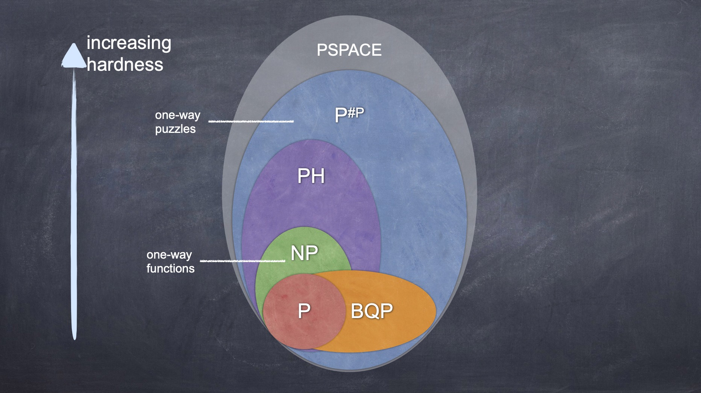
Mật mã lượng tử có thể là một chủ đề thú vị trong năm 2025. Tính toán lượng tử không chỉ dùng để phá vỡ các sơ đồ bảo mật hiện tại mà còn có thể đem đến những điều... mộng mơ tưởng như không thể thực hiện được.
Trong thế giới tính toán hiện tại, bảo mật chỉ có thể có khi NP khác P. Nói cách khác, phá vỡ một sơ đồ bảo mật bất kỳ là một bài toán trong lớp NP. Do đó nếu NP = P thì việc phá vỡ bất kỳ sơ đồ nào đều trở nên dễ dàng. (*)
Thế nhưng, thật thú vị, trong thế giới lượng tử, ngay cả khi NP = P vẫn có thể tồn tại những hàm mật mã không bị phá vỡ. Định nghĩa bảo mật của các hàm mật mã trong thế giới quantum là một chủ đề khá thú vị và hiện tại đang có nhiều định nghĩa hàm một chiều không tương đương nhau, tạo ra các lớp phức tạp khác nhau rất thú vị.
Cụ thể thì máy quantum có thể làm gì mộng mơ mà máy hiện tại không thể làm?
Quyền được lãng quên
Quyền được lãng quên (Right to be Forgotten) là một quyền đã được châu Âu đưa vào. Nó nói rằng mỗi con người được quyền được lãng quên, bằng cách có thể yêu cầu các nơi lưu trữ dữ liệu cá nhân về họ phải xoá đi (ngân hàng, mạng xã hội v.v). Nhưng để thực thi nó thì rất khó. Tôi đã lưu dữ liệu của anh, tôi có thể xoá nó nhưng nếu tôi không trung thực thì tôi đã sao chép nó ra chỗ khác và anh không thể biết tôi đã xoá thực sự hay chưa.
Tính không sao chép được trạng thái của lượng tử (no-cloning theorem) cho phép hướng tới những chứng minh là tôi đã thực sự xoá dữ liệu của anh. Từ đó việc bảo vệ Privacy có thể được thực thi hiệu quả hơn.
Một bài toán trong tinh thần đó là chứng minh việc xoá khoá lượng tử: tôi có thể uỷ quyền cho anh dùng khoá giải mã trong một thời gian hạn chế nhưng tôi muốn anh xoá khoá đó đi khi tôi yêu cầu thì phải làm thế nào? Điều thú vị là với khoá giải mã lượng tử, ta có thể dùng nó để giải mã nhiều lần (khá phản trực quan bởi thường ta nghĩ khi dùng/đo lượng tử thì sẽ làm phá vỡ trạng thái lượng tử và do đó khó có thể dùng khoá lượng tử nhiều lần), đồng thời khi được yêu cầu có thể cung cấp một chứng minh chặt chẽ là tôi đã xoá nó. Điều đặc biệt là tuy khoá là lượng tử nhưng bản thân chứng minh chỉ chứa thông tin thông thường để mọi máy (như trên một chiếc phone dởm) đều có thể kiểm tra tính đúng đắn. Học trò mình vừa trình bày một bước tiến trong vấn đề này tại Asiacrypt - Ấn Độ, toàn bộ bài báo của nhóm có thể xem tại: 2024_QuantumKeyLeasing.pdf
Hình trên lấy từ bài phát biểu của Dakshita Khurana cũng tại Asiacrypt - Ấn Độ.
(*) Bạn nào quan tâm có thể đọc bài "Bốn thế giới ảo và một thế giới thực" trên Tạp chí Pi.
Giải Abel 2021 liên quan đến bảo vệ Privacy
(Ghi chép nhanh về giải Abel vừa mới được công bố)
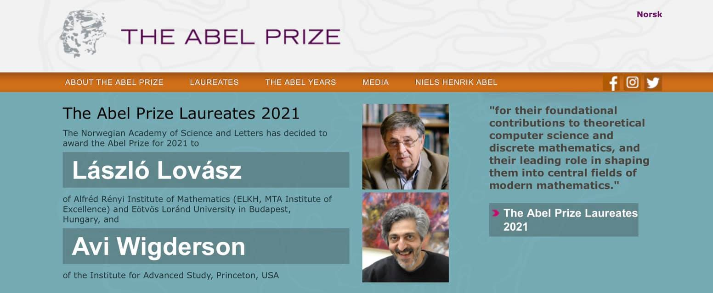
Toán học và Tin học ngày càng gần gũi. Bác Avi Wigderson đang được đánh giá sẽ có thể giành giải Turing cho Tin học thì năm nay được giải Abel, cùng bác László Lovász.
Bác Avi Wigderson được ghi nhận về những đóng góp cho lĩnh vực Tin học lý thuyết, tác động đặc biệt đến mật mã nên mình sẽ nói đôi chút về hai (trong số nhiều) lĩnh vực của bác mà mình rất mê là Zero-Knowledge Proof (ZKP) và Probabilistically Checkable Proof (PCP). Cả hai loại chứng minh này đều rất kỳ lạ. ZKP là chứng minh thông qua tương tác mà không để lộ tri thức nào: anh bị thuyết phục là tôi có chứng minh cho một mệnh đề mà sau khi bị thuyết phục thì anh không biết gì về chứng minh nữa, không tự chứng minh hay thuyết phục được ai khác. Còn PCP thì cũng rất lạ, tôi có một chứng minh rất dài nhưng anh kiểm tra tính đúng sai thì chỉ cần nhìn vào một số nhỏ các vị trí ngẫu nhiên trong cái chứng minh đó là đủ đánh giá chứng minh đó đúng hay sai.
Tưởng chừng ZKP và PCP chỉ mang tính lý thuyết đẹp, ấy thế mà nó đang được ứng dụng rộng khắp. ZKP đã được ứng dụng rất nhiều như xây dựng chữ ký số, xây dựng các sơ đồ bầu cử, hay gần đây đã ứng dụng vào blockchain để bảo vệ Privacy cho người dùng. Chẳng hạn bình thường một giao dịch bitcoin sẽ có số bitcoin được giao dịch, như vậy lộ mất quá nhiều thông tin về số lượng bitcoin gắn với 1 địa chỉ tài khoản. Thế nhưng nếu dùng ZKP có thể che số lượng giao dịch (có thể che cả địa chỉ), và gắn với nó một chứng minh là số lượng giao dịch của tôi nằm trong phạm vi số tiền tôi có, mà không lộ bất kể thông tin gì khác. Còn PCP tưởng càng lý thuyết hơn mà nay lại cũng ứng dụng rất lớn vào blockchain khi việc yêu cầu kiểm thử cần rất nhanh. Trở ngại là PCP thường có độ dài proof lớn nên người chứng minh có thể phải thao tác (commit - cam kết để không thể thay đổi) cả cái chứng minh dài thì cũng gay go, may quá nếu PCP có cấu trúc thì tiện cho Prover sẽ phải thao tác ít thôi, Linear PCP được đưa ra trong ngữ cảnh đó và được sử dụng rất hiệu quả cho cả Prover và Verifier, và do vậy chạy khá ngon trong thực tế. PCP cũng còn ứng dụng trong việc ủy quyền tính toán trên Cloud: chẳng hạn ta có 1 bài toán rất phức tạp nên phải nhờ Cloud tính hộ, Cloud tính xong rồi trả cho ta kết quả, làm sao để biết là Cloud tính đúng mà không bịa kết quả, muốn vậy Cloud phải có cách chứng minh hiệu quả để ta có thể kiểm tra tính đúng đắn cực nhanh, ấy là lúc PCP lại được sử dụng rất phù hợp.
Những nghiên cứu về các loại chứng minh mới này thực sự là miền giao thoa thú vị giữa Toán và Tin học, vừa có vẻ đẹp lý thuyết rất độc đáo, lại vừa có những ứng dụng thực tế đang được phát triển rất mạnh mẽ hiện nay. Có bác này viết về những vấn đề trên khá dễ đọc và cập nhật, bạn nào thích tìm hiểu có thể đọc: ProofsArgsAndZK.pdf
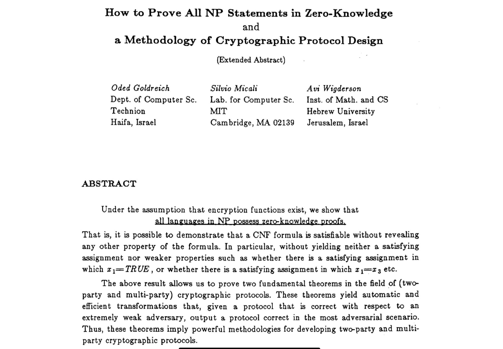
Bác László Lovász cũng rất nổi tiếng trong mật mã với thuật toán LLL cho ta cách tìm một hệ véc tơ cơ sở tương đối trực chuẩn và tương đối ngắn của một lattice. Việc tấn công nhiều hệ mã có thể được quy dẫn về bài toán này và do vậy có thể dùng thuật toán LLL để tấn công. Các bạn có thể đọc bài của bác Joux và bác Stern nếu muốn tìm hiểu kỹ hơn: ToolBox.pdf
Điều thú vị là hiện tại để chống lại các tấn công trên máy lượng tử thì các hệ mã dựa trên độ khó của các bài toán trên lattice lại là những hệ mã tốt nhất. Bạn nào muốn tìm hiểu hướng này có thể đọc eprint.iacr.org/2015/939.pdf
Mình không biết nhiều về các công trình khác của bác Lovász nên không dám nói hơn. Hình dưới đây là hình mình chụp khi dự hội nghị kỷ niệm 25 năm thuật toán LLL, lúc bác Lovász công bố bức thư thú vị gửi bác Lenstra, khởi nguồn cho việc hoàn thiện thuật toán sau này mang tên LLL.
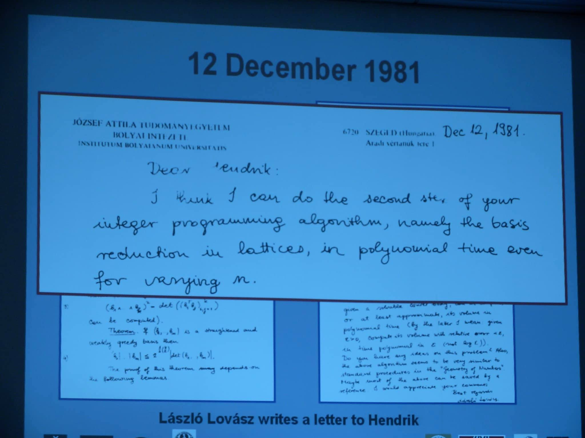
Anamorphic Encryption
Mật mã cho phép trao đổi thông tin dưới chế độ độc tài
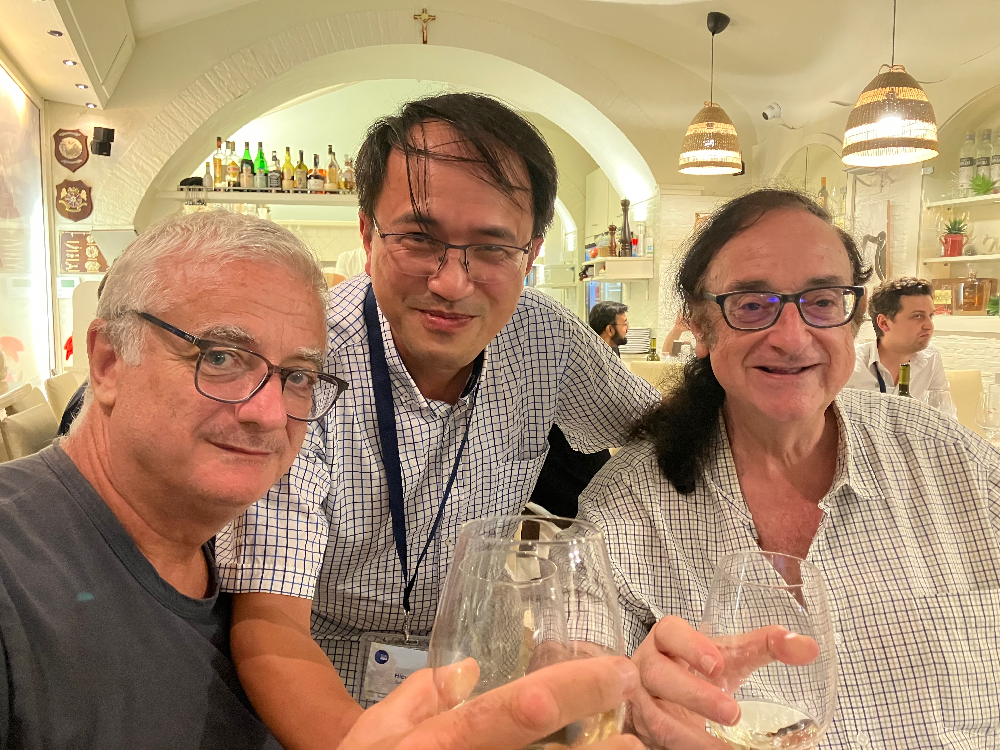
Mô hình mật mã mới mình cùng Moti Yung (Google) và Giuseppe Persiano (Università di Salerno, Italia) đưa ra, vừa được accepted cho Eurocrypt 2022 và sẽ được ra mắt, trình bày trong 3 tháng nữa.
Khi nhà độc tài ép buộc
Mục tiêu cơ bản của Mã hoá là bảo mật thông tin của một message (thông điệp) để chỉ duy nhất người gửi và người nhận đọc được. Nguyên tắc Kerckhoffs yêu cầu công khai tất cả, trừ việc giữ bí mật khoá giải mã và thông điệp cần mã. Điều này có vẻ hiển nhiên là mục tiêu tối đa có thể nhắm đến, không thể hơn được — vì nếu thông điệp đã không bí mật thì mã hoá làm gì, và nếu khoá giải mã bị lộ thì ai cũng giải được.
Tuy nhiên, dưới một chế độ độc tài, những nguyên tắc tưởng như hiển nhiên đó có thể bị phá vỡ, và chúng tôi xem xét các tình huống đó. Rất có thể bạn bị ép gửi đi một message. Chẳng hạn, bạn bị nhà độc tài yêu cầu gửi cho hãng thông tấn quốc tế AP rằng bạn đúng là đã chống lại chế độ. Bạn buộc phải sử dụng, theo yêu cầu của nhà độc tài, một hệ mã tiêu chuẩn, phải trình bày rằng mình đã sử dụng khoá công khai của AP để mã hoá, phải trình bày cả các tham số như randomness đã sử dụng để mã hoá. Vậy bạn còn có thể làm gì trong trường hợp này?
Giải pháp: thông điệp ngầm trong bản mã
Chúng tôi đề xuất một cách trao đổi thông tin dù bị độc tài ép buộc làm như vậy. Chúng ta hoàn toàn có thể tuân theo yêu cầu của nhà độc tài, tuy nhiên chúng ta vẫn có thể đồng thời ẩn vào đó một thông điệp được mã hoá cho chẳng hạn Tổ chức nhân quyền thế giới, và chỉ bằng sử dụng khoá công khai của họ, để nói rằng "những gì tôi đang nói không phải là sự thực, mà là bị ép buộc".
Điều đó có nghĩa là trên một bản mã gửi đi cho AP theo yêu cầu của nhà độc tài chứa đồng thời một nội dung ngầm được gửi đến cho Tổ chức nhân quyền. Khi AP đăng tải thông điệp thì đồng thời Tổ chức nhân quyền cũng có thể chứng minh đó là thông tin bị ép buộc gửi đi.
Chúng tôi lấy tên hệ mã như vậy là Anamorphic Encryption. Ví dụ trên kia chỉ là 1 trong nhiều ứng dụng. Quan trọng hơn, hệ mã dạng này đặt lại vấn đề về việc các nhà độc tài muốn can thiệp sâu vào việc có thể giải mã bằng cách ép buộc sử dụng các hệ mã yếu hoặc ép mọi người phải nộp khoá giải mã cho họ. Chúng tôi đặt cơ sở để hướng tới việc chứng tỏ rằng việc cố gắng ép buộc như vậy là vô ích.
"Our result in a nutshell: What is the point of being a dictator if you cannot dictate?"
Các bạn muốn hiểu kỹ hơn có thể đọc bài báo, 9 trang đầu ai đọc cũng có thể hiểu và có thể nắm được ý tưởng chính mà không cần phải làm trong ngành Crypto.
Câu chuyện về công trình
Đây có lẽ là công trình tôi đặt nhiều suy nghĩ và cảm thấy thú vị nhất. Nó khởi đầu từ cách đây hơn 10 năm. Cách đây vài năm, trong một chuyến đi Mỹ, tôi trao đổi ý tưởng với Moti Yung — người đứng đầu Crypto của Google. Ông ta rất thích ý tưởng này và chia sẻ rằng bản thân cũng đang phát triển một ý tưởng liên quan cùng Giuseppe Persiano ở Italia. Các ý tưởng của chúng tôi sau đó do cùng hướng và bổ sung cho nhau nên đã đưa đến công trình chung này.
Góc nhìn về nghiên cứu
Bên lề, nói thêm đôi chút về cách nhìn cá nhân. Đối với mình (chỉ dám nói trong ngành hẹp Crypto, nhưng cũng có thể có sự tương đồng với một số ngành khác) có 2 dạng nghiên cứu chính:
(i) Giải quyết các open problems — xây dựng một hệ hoặc phá một hệ đã có.
(ii) Đưa ra các khái niệm mới.
Chúng ta hay quen với dạng (i) và cũng là dạng thường dễ được cộng đồng chấp nhận ngay — reviewer nào chẳng thích một bài báo giải quyết được một vấn đề mở. Dạng (ii) thường gây tranh cãi, khái niệm mới thì có người thích người không thích, rất khó lường. Ngay cả khái niệm zero-knowledge proof làm nền tảng thay đổi toàn bộ cách suy nghĩ, và nay được ứng dụng rộng khắp (trong cả blockchain), lúc mới đầu đưa ra bị rejected nhiều lần trước khi được đón nhận.
Bài báo này của mình thuộc dạng (ii) nên cũng khá hồi hộp dù các phản biện vòng 1 đều rất tốt. Ông Moti Yung là người đã từng đưa ra khái niệm về Ransomware từ năm 1996 với Young — nhưng khái niệm đó chìm nghỉm mãi đến gần đây mới bùng nổ khi có nhiều tấn công thực tế (câu chuyện khá hay này được hai ông giới thiệu trên CACM). Tương lai của Anamorphic Encryption chưa thể biết có bao giờ được sử dụng hay không — có thể coi như khởi đầu một cuộc phiêu lưu không biết điểm kết.
Và cuối cùng, chữ Anamorphic được lấy theo một phong cách nghệ thuật có nhiều ẩn chứa liên quan.
Truy lùng dấu vết kẻ phản bội
══ VẤN ĐỀ THẢO LUẬN TRONG TUẦN ══
Truy lùng dấu vết kẻ phản bội
Phải chăng đây là một vấn đề của ngành cảnh sát điều tra? Quả là vậy, nhưng là chuyện "điều tra" của những "cảnh sát" trong thế giới huyền ảo của số liệu chứ không phải là thế giới thực của đời thường. Và vì thế, mỗi chúng ta hoàn toàn có thể trở thành những chiến sỹ điều tra thông minh để góp phần vào sự "công bằng thế giới".
Thế nào được gọi là kẻ phản bội và thế nào được gọi là một cuộc truy lùng dấu vết? Những khái niệm đó sẽ được đề cập đến trong "vấn đề trong tuần" kỳ này. Các kiểu "tiểu xảo" tinh vi cũng như các chiến thuật cài bẫy điều tra tinh xảo sẽ được bàn luận. Vấn đề đi xa đến đâu sẽ hoàn toàn tùy thuộc vào sự nhiệt tình của chúng ta, những người tham gia, những người sẽ phải đặt mình không những vào vị trí của người điều tra sắc xảo mà còn phải đặt mình vào vị trí của kẻ "trốn tội" đầy mưu mô.
Chưa nắm kỹ hết các vấn đề nên Rong Chơi sẽ cùng các bạn tìm hiểu vấn đề hơn là việc sẽ đưa các bạn tới một cái đích, một lời giải cụ thể. Hy vọng với vấn đề rộng mở này, sau cuộc chơi mỗi người có thêm một sự thỏa mãn riêng, một sự mắc mớ riêng cho mình.
Trước hết, RC sẽ đề cập đến 2 vấn đề được quan tâm hiện nay:
1. Cung cấp thông tin tĩnh: Giả sử bạn là người sản xuất ra một đĩa CD rất giá trị và bạn muốn mỗi người dùng hợp lệ sẽ phải mua chứ không phải là ăn cắp bản CD đó. Làm thế nào bạn có thể ngăn ngừa việc sao chép bất hợp lệ? Vấn đề đặt ra là làm thế nào bạn có thể đặt được một thông tin vào mỗi bản CD để khi bất kỳ người mua nào phát tán nó bạn cũng có thể lần ra dấu vết? Nói cách khác, nếu bạn bắt được một bản CD "phi pháp", bạn sẽ truy ra được ai là kẻ đã mua và phát tán nó.
2. Cung cấp thông tin động: Bạn là người phát chương trình VTV Knowledge với những cuộc đàm luận đỉnh cao thế giới và bạn muốn ai xem chương trình của bạn cần phải trả tiền mua. Bạn sẽ cung cấp cho mỗi khách hàng một bộ giải mã. Khi bạn phát tín hiệu, mỗi người đăng ký sẽ dùng bộ giải mã để giải tín hiệu và xem chương trình. Vấn đề được gọi là "động" do bởi thông tin liên tục được cập nhật và để xem chương trình đòi hỏi sự tương tác liên tục giữa tín hiệu phát và bộ giải mã của người dùng. Vấn đề đặt ra là những kẻ phạm tội chuyên nghiệp đăng ký mua bộ giải mã rồi có thể mở hộp giải mã, lấy khóa giải mã và phát tán chúng hay sản xuất ra bộ giải mã mới và bán ngoài chợ trời. Nhiệm vụ đặt ra là làm thế nào để khi ta bắt một bộ giải mã giả (ra ngoài chợ mua), ta có thể truy lùng lại dấu vết xem kẻ phản bội nào đã sản xuất ra bộ giải mã giả đó?
Trước tiên, chúng ta hãy đề cập đến vấn đề thứ nhất.
Đặt vấn đề: Năm 2024, các thành viên của diễn đàn toán học đã miệt mài chọn lựa và tổng hợp 10000 bài viết hay nhất của diễn đàn toán học. Đó là sự tổng hợp các bài viết xuất sắc kỷ niệm 20 năm ngày diễn đàn toán học ra đời. Những thành viên của diễn đàn muốn góp phần đẩy mạnh sự phát triển các tài năng toán học bằng cách lập quĩ "tuổi trẻ sáng tạo" của diễn đàn. Mỗi người mua đĩa tổng hợp này sẽ đóng góp 100 đồng (khi đó bằng 1000 USD) cho quĩ "tuổi trẻ sáng tạo".
Tuy nhiên, lại có nhiều kẻ can tâm làm điều xấu: mua đĩa của diễn đàn rồi sản xuất các đĩa giả và bán ra ngoài!
Mục đích: Nhiệm vụ của đội "bảo vệ công lý" của diễn đàn là làm sao từ một đĩa lậu có thể truy lùng lại kẻ nào đã phát tán các đĩa giả!
Bạn đã bao giờ tìm hiểu đến vấn đề thực tế này chưa? Dù chưa hay có, chúng ta hãy thử đề xuất các phương án để thực thi nhiệm vụ truy lùng này!
Trước hết chúng ta hãy xem xét vấn đề đơn giản: Đĩa CD giả do chỉ 1 kẻ phản bội sản xuất. (Vấn đề tiếp theo: Đĩa CD giả do nhiều kẻ phản bội cấu kết với nhau sản xuất)
Chúng ta sẽ chẳng làm gì được nếu kẻ phản bội đó không nhét cái đĩa lấy cắp đấy vào máy tính và vô tình khởi động một chương trình "an ninh" mà chúng ta đã cài đặt sẵn trong mỗi đĩa CD. Chương trình này sẽ tự động khóa lại các dữ liệu không cho ghi chép khi nó được xác nhận là sản phẩm đã được mua hợp pháp (có thể vẫn bằng những kỹ thuật phổ biến hiện nay như cung cấp cho người mua một mật mã, khi nhập đúng mật mã chương trình sẽ được đăng ký và không còn khả năng ghi chép). Một kẻ muốn phát tán bất hợp pháp họ sẽ phải ghi chép ra nhiều đĩa khác, nếu họ khởi động chương trình ghi, chép, một chương trình ẩn sẽ tự động kích hoạt, chương trình này giống như một con Trojan sẽ cài vào máy và nếu máy đang kết nối mạng thì nó sẽ mở một cổng kết nối và "đánh tín hiệu về máy chủ" của chúng ta. Đồng thời chương trình này sẽ tự ghi lên đĩa sao chép và lưu giữ lại những thông tin cần thiết trên máy của kẻ sao chép (chẳng hạn các thông tin đăng ký trên máy biết đâu lưu trữ tên tuổi, số đt, địa chỉ, ... và đếm số lần đã sao chép). Nếu sau khi dung lượng trên đĩa không còn thì nó sẽ tự động khóa lại, chống ghi chép.
Anh RongChoi mở đề tài này thú vị ra phết, hy vọng mọi người cứ nêu thật nhiều ý tưởng cho các vấn đề.
Chúng ta sẽ chẳng làm gì được nếu kẻ phản bội đó không nhét cái đĩa lấy cắp đấy vào máy tính và vô tình khởi động một chương trình "an ninh"... — nemo
Chú nemo có 2 điểm chưa thể trở thành cảnh sát điều tra :D
- Một là đánh giá thấp khả năng điều tra của mình, không có gì là ta không làm được cả.
- Hai là đánh giá thấp khả năng của kẻ phản bội, không có gì là hắn không thể làm cả.
Tuy vậy chú có tương lai sẽ trở thành một chiến sỹ chuyên nghiệp vì đã nêu ra rất nhiều phương án thú vị có thể bắt được những tội phạm... ngây thơ :)
Chúng ta hãy xem xét rằng kẻ phản bội rất chuyên nghiệp. Đối với chúng, cái đĩa CD của ta chỉ như một chuỗi dữ liệu 0,1 và do đó để sao chép thì chúng có thể tự tạo ra những chương trình riêng để sao chép từng bít 0,1 mà không cần dùng bất kể chương trình gì của chúng ta.
Ngoài ra các vấn đề password cũng không ăn thua, kẻ gian có thể đưa password hợp lệ vào, mở file, lấy dữ liệu rồi sao chép toàn bộ dữ liệu sang đĩa khác. Tất cả các thao tác này hắn ta đều thực hiện mà không cần chạy bất cứ chương trình nào của chúng ta.
Chúng ta hãy giả thiết ở mức cao nhất rằng kẻ phản bội có thể sao chép dữ liệu thoải mái. Vấn đề là khi bắt được một bản sao chép giả, làm thế nào ta có thể lần lại dấu vết của chúng.
nemo nói là không thể là đánh giá sai cả tiền bối của chúng ta. Một trăm năm trước, khi mà thế giới còn chưa có các máy móc hiện đại như ngày nay, các bậc tiền bối đã nghĩ ra cách bán những bảng tính logarithm với những kỹ thuật thông minh hòng có thể truy ra kẻ sản xuất phi pháp. Mọi người đã từng nghe cha ông chúng ta kể lại chưa nhỉ?
Vỏ quýt dày phải cần móng tay nhọn, móng tay em cùn thế này thì chỉ bóc vỏ khoai thôi :)
Em chưa nghe kể về chuyện các bậc tiền bối tìm ra thủ phạm bằng cách nào, em chỉ nghĩ là nếu ai đó cứ cầm cái CD đó ngắm nghía mà không làm gì cả thì chắc muốn bắt hắn chỉ còn cách rình mò, theo dõi, truy hỏi, khoanh vùng... Không biết có cách nào có thể phân biệt được đâu là sao chép giả, đâu là sao chép hợp lệ và làm cách nào để các đĩa sao chép "ghi nhớ" lại được những thông tin từ lần chép đầu tiên và sau đó nó sẽ lưu thông tin này trên các đĩa sao chép khác để khi tóm được một đĩa giả, bằng cách nào đấy có thể đọc lại được những gì đã diễn ra từ lần chép đầu!?
Em nói ba hoa thế, anh RongChoi đừng bắt em làm lính bóc khoai nhé :)
Kỹ thuật "Đánh dấu vân tay" (Fingerprinting technique)
Bây giờ RC trình bày kỹ thuật của các bậc tiền bối truyền lại từ vài trăm năm trước:
Cách ta hàng vài thế kỷ người ta đã lập ra những bảng tính logarithm rất đồ sộ để tính log(x) với x chạy từ 1 đến hàng vài chục nghìn. Một bảng tính công phu như vậy ắt hẳn không muốn bị sao chép bất hợp pháp. Muốn vậy, người ta đã đánh dấu vào mỗi bảng tính một đặc trưng riêng nhằm hai mục đích:
1. Mỗi bảng tính có đặc trưng khác biệt riêng mà không làm ảnh hưởng đáng kể đến nội dung của nó. Nếu ta bán một bảng tính cho Nemo thì đặc trưng đó sẽ gắn với Nemo và do vậy nếu Nemo copy và đem bán cho leoteo thì bản giả của leoteo vẫn sẽ mang đặc trưng của Nemo và do vậy, chỉ cần bắt 1 bản giả do Nemo phát tán, ta có thể lần lại dấu vết kẻ phát tán là... Nemo!
2. Đặc trưng riêng này cần phải làm theo cách nào để không thể bị phát hiện. Tức là ta phải đánh dấu một đặc trưng duy nhất lên bảng tính để Nemo không thể phát hiện được ta đã đánh dấu vào đâu. (Ngược lại, nếu Nemo có thể phát hiện thì Nemo có thể sửa đặc trưng đó khác đi để xóa dấu vết). Việc đánh dấu thỏa mãn yêu cầu này gọi là đánh dấu ẩn (watermarking).
Quá trình làm thỏa mãn 2 điều kiện trên được gọi là quá trình đánh dấu vân tay lên sản phẩm (Fingerprinting). Các cụ tiền bối đã làm thế nào?
Các cụ đã khéo léo đánh dấu vào bảng tính bằng cách thay đổi chút xíu giá trị kết quả bảng tính: thay đổi chữ số thứ 10 sau dấu phẩy chẳng hạn không làm thay đổi nhiều đến độ chính xác.
Cụ thể: Nếu các cụ định bán 1000 bản thì các cụ sẽ chọn ra 3 giá trị trên bảng tính: chẳng hạn với x₁ = 17, x₂ = 567, x₃ = 8999. Khi Nemo đến mua 1 bảng tính của các cụ thì các cụ sẽ bán cho Nemo bảng tính với số hiệu 931 (c₁ = 9, c₂ = 3, c₃ = 1) chẳng hạn. Một cách ngầm định, giá trị bảng tính log(x) sẽ được giữ nguyên trừ ba giá trị của log(x₁), log(x₂), log(x₃):
- Chữ số thứ 10 sau dấu phẩy của log(x₁) sẽ bị gán giá trị c₁ = 9.
- Chữ số thứ 10 sau dấu phẩy của log(x₂) sẽ bị gán giá trị c₂ = 3.
- Chữ số thứ 10 sau dấu phẩy của log(x₃) sẽ bị gán giá trị c₃ = 1.
Rõ ràng Nemo có thể dùng bảng tính mình mua không vấn đề gì. Nhưng một khi Nemo copy và bán cho Leoteo thì chỉ cần kiểm tra giá trị ở ba vị trí x₁, x₂, x₃ là ra số hiệu 931 gắn với người đã phát tán - Nemo.
Cách đánh dấu vân tay trên đạt độ an toàn (Secure Fingerprinting) vì khi mua về Nemo không có cách nào biết được người bán đã đánh dấu vào đâu, tức là không thể biết được vị trí x₁, x₂, x₃.
Tuy nhiên bạn có thấy là phương pháp trên sẽ không còn an toàn nếu như Nemo mua 1 bản, anh Badman mua 1 bản rồi kết hợp với nhau để tạo ra 1 bản copy giả bán cho leoteo?
Câu hỏi:
1. Bạn hãy tìm ra chỗ hổng, tức là chỉ ra rằng việc kết cấu có thể xóa dấu vết.
2. Bạn hãy đề xuất cách khắc phục:
a. Trước hết bạn hãy đề xuất 1 cách đơn giản để sự kết cấu giữa nhiều kẻ phản bội không thể tạo ra dấu vết "giả" quy tội cho một người vô tội.
b. Bạn hãy đề xuất một cách giải vấn đề: từ một bản copy giả, chúng ta sẽ lần ra dấu vết của 1 trong các kẻ phản bội.
Hay thật, cách thức mà các tiền bối làm có vẻ đơn giản nhưng thật hiệu quả, thế nhưng nếu chẳng hạn em định làm ăn lớn, chẳng tội gì em không đầu tư công sức để thay đổi toàn bộ chữ số thứ 10 sau dấu phẩy của bảng thế thì dù nhìn vào là các cụ biết được là bảng giả, bị sao chép nhưng vẫn đành ngậm bồ hòn thôi!
Nemo đã bắt đầu có dáng dấp của kẻ phạm tội chuyên nghiệp rồi đấy :D
Ý kiến của Nemo đánh đúng vào điều quan trọng: Đó là phải đánh dấu thế nào để người mua không biết ta đánh dấu vào đâu! Thực ra ngày trước các cụ phải giấu kín thông tin là "tôi đánh dấu vào chữ số thứ 10 sau dấu thập phân của một số giá trị". Điều đó có lẽ là bí mật của một vài cụ bô lão thôi chứ không nói cho ai biết cả.
Ngày nay thì ta có thể làm thực tế hơn, không dấu giếm gì như các bậc tiền bối :D. Ta có thể có nhiều kiểu đánh dấu khác nhau. Ví dụ: sự khác biệt rất nhỏ trong vị trí các từ trên dòng - chữ "for" của dòng thứ 2 lệch sang trái 1 chút so với dòng bên trên. Hai dòng này có thể coi là hoàn toàn giống nhau nhưng chữ "for" đã bị đánh dấu, và nếu ta chỉ nhận được 1 phiên bản thì ta không thể nào phát hiện được là nó đã bị đánh dấu!
Tất nhiên việc chống làm giả chỉ áp dụng để chống photocopy tài liệu bất hợp pháp, chống sao chép đĩa bằng thủ thuật sao từng bít,... Nếu kẻ gian ngồi đọc rồi đánh lại toàn bộ văn bản theo cách của nó thì ta có lẽ đành bó tay.
Ta từ đây đặt giả thiết rất thực tế rằng: Dữ liệu của ta là một chuỗi nhị phân 0,1. Trên đó ta có thể đánh dấu 1 số vị trí mà từ 1 bản thì không ai có thể phát hiện được. Kẻ phản bội có thể thay đổi tùy ý trạng thái các bít (từ 0 sang 1 và ngược lại) trên văn bản theo ý của chúng trước khi tán phát.
Choáng, tự nhiên giờ vào đọc tiếp cái này mới giật mình. Đêm qua em mơ thấy một ý cho bài toán này :D.
Sáng tỉnh dậy không hề nhớ nhưng giờ thấy mới nhớ ra là hôm qua mình có mơ. Hì hì, em rất hay như thế này: cứ thỉnh thoảng tự nhiên mơ thấy một vấn đề nào đó, rất hay, chỉ có mỗi một điều là sáng ra thường không nhớ là mình đã mơ, và nếu có nhớ là đã mơ về vấn đề đấy thì vấn đề điên đầu là phải ngồi nặn óc nghĩ xem mình mơ thế nào :D.
Cụ thể hôm qua em mơ thấy mình vào thư viện, tự nhiên giở một cái journal gì đấy, thấy luôn một tay đưa ra mấy câu hỏi về truy lùng tội phạm. Trong lúc mơ đấy em vẫn nhận thức đấy là mấy câu của chú Nemo (bác RC không hề nhảy vào giấc mơ của em :D), và cái tay đấy trả lời câu hỏi đấy luôn, câu trả lời của bác ý làm em rất tâm đắc. Lúc đấy em nghĩ, hóa ra câu hỏi của chú Nemo đã có bác nào trả lời rồi, hôm tới sẽ trích dẫn bài báo này và trả lời cho chú Nemo xem.
Hê hê, giờ vấn đề của em sẽ là cố nhớ xem đã thấy gì trong giấc mơ. Tạm viết vài dòng thế đọc cho vui. Hy vọng mấy hôm tới sẽ mơ tiếp :)
Ta từ đây đặt giả thiết rất thực tế rằng: Dữ liệu của ta là một chuỗi nhị phân 0,1. Trên đó ta có thể đánh dấu 1 số vị trí mà từ 1 bản thì không ai có thể phát hiện được. Kẻ phản bội có thể thay đổi tùy ý trạng thái các bít trên văn bản theo ý của chúng trước khi tán phát.
Kỹ thuật đánh dấu trực tiếp trên văn bản bằng cách modify tại 1 vài nơi nào đó của văn bản thường rất dễ bị phá vỡ. Vì kẻ làm giả chỉ cần so sánh 2 phiên bản để có thể phát hiện ra chỗ đánh giấu. Cho nên yêu cầu đầu tiên của sự đánh giấu là phải có tính đồng đều và ngẫu nhiên trên toàn văn bản. Để sự khác biệt giữa 2 văn bản được trải rộng trên toàn nội dung. Tuy nhiên kẻ gian vẫn có khả năng làm giảm hiệu quả của biện pháp trên.
Đơn giản kẻ phản bội chỉ cần sử dụng "Blind Attack" có nghĩa là thay đổi thông tin một cách ngẫu nhiên ở tất cả mọi nơi trên văn bản miễn là văn bản vẫn còn giữ được giá trị.
Do vậy Watermarking cần phải robust, có nghĩa là vẫn còn giữ được những tính chất nào đó ngay cả khi bị "Blind Attack".
Việc tồn tại hay không 1 thuật toán Watermarking Robust trên mọi đối tượng văn bản vẫn là vấn đề bỏ ngỏ. Mỗi loại hình văn bản có những tính chất riêng của nó tùy thuộc vào nội dung ví dụ như hình ảnh, âm thanh, text, software... mỗi thuật toán Watermarking phải bảo tồn những tính chất đấy. Do đó không thể đơn thuần coi tất cả văn bản như 1 chuỗi 0,1, vì thuật toán có thể áp dụng cho loại hình văn bản này nhưng lại không thể áp dụng cho loại hình văn bản khác được.
Ví dụ áp dụng những phân tích trên cho việc dùng Watermarking bảo vệ software chẳng hạn: không thể modify tùy ý, ngẫu nhiên các bit của chương trình; những đoạn mã thêm vào phải không ảnh hưởng đến việc chạy của chương trình, và phải ở khắp nơi trong chương trình; những đoạn mã đó phải hợp lệ với cấu trúc lệnh của máy tính và không được quá "ngô nghê"; từ những đoạn mã đó phải decrypt ra được những thông tin có chủ ý của nhà sản xuất. Do vậy mà vấn đề bảo vệ bản quyền software vẫn còn nan giải.
Kỹ thuật đánh dấu trực tiếp trên văn bản bằng cách modify tại 1 vài nơi nào đó của văn bản thường rất dễ bị phá vỡ. Vì kẻ làm giả chỉ cần so sánh 2 phiên bản để có thể phát hiện ra chỗ đánh giấu. — queofr
Đây chính là lời giải câu hỏi số 1 ở trên: việc kết cấu có thể xóa dấu vết! Như vậy chúng ta có thể quan tâm đến câu hỏi thứ 2!
Đơn giản kẻ phản bội chỉ cần sử dụng "Blind Attack" có nghĩa là thay đổi thông tin một cách ngẫu nhiên ở tất cả mọi nơi trên văn bản miễn là văn bản vẫn còn giữ được giá trị. — queofr
Chỗ này mình chưa đồng tình: Thay đổi thông tin một cách ngẫu nhiên cũng chỉ là hòng thay đổi trúng chỗ "bị đánh dấu". Một ví dụ là nếu như mình đánh 10 dấu chẳng hạn thì như vậy cần phải thay đổi tổng số 1/10 phần của văn bản để chúng 1 dấu, như vậy kể như văn bản bị thay đổi quá nhiều. Hơn nữa dù có tìm được 1 dấu đi chăng nữa thì khả năng bị phát hiện vẫn rất lớn.
Đúng là với mỗi loại hình ta có một phương án khác nhau, file dữ liệu khác, file chạy khác,... Các hạn chế bạn đưa ra rất chuẩn xác và cần xem xét trong các trường hợp cụ thể. Tuy vậy giả thiết trên mình đưa ra như trên coi như tính đến trường hợp xấu nhất vì không hạn chế khả năng của kẻ gian.
Do vậy, chúng ta tiếp cận câu hỏi thứ 2: Sự cấu kết có thể làm những kẻ phản bội phát hiện ra nhiều dấu (tức các vị trí trên văn bản ta chọn để đánh dấu). Hãy tìm phương pháp để khắc phục việc này. RC ghi lại câu hỏi đã đặt ở trên để tiện việc theo dõi chủ đề:
Câu hỏi 2: Bạn hãy đề xuất cách khắc phục sự cấu kết:
a. Trước hết bạn hãy đề xuất 1 cách đơn giản để sự kết cấu giữa nhiều kẻ phản bội không thể tạo ra dấu vết "giả" quy tội cho một người vô tội.
b. Bạn hãy đề xuất một cách giải vấn đề: từ một bản copy giả, chúng ta sẽ lần ra dấu vết của 1 trong các kẻ phản bội.
Hình thức hóa vấn đề: Nếu ta đánh n dấu thì số các từ mã sẽ là 2n. Ta sẽ chọn lựa một số trong các từ mã này để sử dụng. Tập các từ mã ta dùng được gọi là code W. Ta gọi F(W) là tập các từ mã sinh ra được từ tập các từ mã W.
F(W) gồm tất cả từ mã thỏa mãn điều kiện: tại vị trí i (i = 1,...,n), nếu mọi từ trong W đều có giá trị là bít b, thì nó cũng nhận giá trị bít b; ngược lại, nếu có 2 từ trong W có giá trị là 0,1 thì nó có thể nhận giá trị 0,1 hoặc ?.
Ví dụ: W = {010, 100} thì F(W) = {000, 010, 100, 110, ?00, ?10, 0?0, 1?0, ??0}.
Điều kiện bảo vệ người vô tội: Với mọi tập con W của code C: F(W) ∩ C chỉ là những phần tử trong W, do đó không một ai vô tội bị bọn chúng qui kết.
Câu hỏi 3: Hãy thiết kế code C để thỏa mãn điều kiện trên. Chú ý rằng ta không yêu cầu độ hiệu quả mà chỉ yêu cầu sự đúng đắn mà thôi.
Không biết mọi người đi đến đâu rồi và vấn đề "đánh dấu vân tay" đã được giải quyết thế nào nhưng tớ thì mới đọc đến đây nên reply luôn. Có thể là "không theo kịp thời đại" nhưng cũng mở rộng vấn đề bằng 1 kinh nghiệm bản thân như sau: Vấn đề bảo quản tủ sách cá nhân.
Tớ có 1 tủ sách cá nhân nhỏ nhỏ, nó là kết quả tích tụ từ ngày vào đại học đến nay, cả sách mua và sách photo. Trong số sách photo thì có 1 cuốn khá quý nhưng không tìm mua được nên phải photo lại từ sách của 1 thầy giáo. Thường sách photo thì chỉ được 5-7 năm là chữ tự nhiên tan ra, mờ dần. Do đó tớ phải cắn răng để photo giá đắt bằng lại mực xạ (các phòng công chứng thường photo loại mực này). Nhìn qua thì không có sự khác biệt về màu chữ nhưng mực bám rất chắc.
Sau này có 1 lớp sinh viên muốn để photo và khi họ trả lại, tớ bảo "cuốn này không phải sách của thầy". "Tụi nó" nhìn nhau cười rồi bảo - Tụi em thử xem thầy nhận ra không. Hôm sau, một lớp khác cũng lại mượn sách thầy (sách bản in) rồi trả với 1 cuốn hoàn toàn như thế, nhưng cuốn này cũng không phải sách thầy. (Tụi nó muốn tìm xem bí mật là gì đấy mà). Thực chất vấn đề này khá đơn giản, chỉ cần đánh dấu vào 1 số trang, cố gắng càng tinh tế càng tốt. (Tụi nó bảo - lớp em phân công mỗi đứa dò 5 trang mà vẫn không tìm ra dấu vết.)
Nhưng nếu "người mượn" đến trả mà không có mình ở nhà thì làm sao nhỉ? Đó là thời gian tớ ra học ở Hà Nội, tủ sách vẫn mở để phục vụ sinh viên và cậu bạn đồng nghiệp quản lý giúp. Trong một email gửi cậu bạn, bí mật được truyền đạt: "Những cuốn sách/giáo trình có số trang < 50 thì kiểm tra vết ở trang [Trang cuối - 5], những cuốn có số trang < 100 thì vết có ở trang [Trang đầu + 5] và [Trang 50 + 5], ...". Còn vết được đánh dấu thế nào thì không nói :)
Hì, đấy chỉ là giải pháp tình thế. Hy vọng sau topic này sẽ học được cách "bảo quản" hiệu quả hơn :)
Câu hỏi 2: Bạn hãy đề xuất cách khắc phục sự cấu kết... — RongChoi
Vấn đề của RC đặt ra thú vị ở chỗ người tranh luận có thể tham gia với vai trò là "chính diện" - bảo vệ công lý hoặc "phản diện" - kẻ phản bội. Như vậy RC luôn luôn trong vai chính diện, số còn lại thì tùy cơ ứng biến - thấy vai diễn nào dễ thì nhảy vào :) Tớ vừa đọc đến đoạn này nên quote một phát với vai trò "kẻ phản bội".
"Lách luật"
Giả sử kết cấu của CD là một dãy tín hiệu nhị phân {0,1}, bỏ qua nội dung mà các tín hiệu này thể hiện để có thể đánh dấu trên nó. Nghĩa là có thể đánh dấu ở một số vị trí trên dãy nhị phân làm cho nó khác với bản gốc mà vẫn không ảnh hưởng (hoặc ảnh hưởng không đáng kể) đến nội dung. Lúc này nếu kẻ phản bội buộc phải có từ 2 CD trở lên để nhận ra các vị trí đánh dấu (bằng cách so sánh dãy tín hiệu nhị phân).
- Nếu mỗi CD chỉ được đánh dấu tại 1 vị trí: chỉ cần 2 CD là phát hiện CD gốc (chưa đánh dấu). Kẻ phản bội có thể khôi phục CD đánh dấu trở về CD gốc, sau đó thay đổi nội dung bít thứ j để sao chép và phát tán từ CD mới này, tạo dấu vết "giả" để vu khống cho nạn nhân.
- Nếu mỗi CD được đánh dấu tại nhiều hơn 1 vị trí: kẻ phản bội không biết chính xác số bit được đánh dấu vì khi so sánh 2 CD và phát hiện CD₁ được đánh dấu ở bít i và k, CD₂ được đánh dấu ở bít j và l thì không thể kết luận "các CD phát hành được đánh dấu bằng 2 bít" vì có thể ở bít thứ m, cả 2 CD₁&₂ có trạng thái {0,1} giống nhau nhưng lại khác với CD₃, CD₄... nên m cũng là bít dấu.
- Trong trường hợp kẻ phản bội (tay trong của nhà sản xuất chẳng hạn) có được đầy đủ các CD trước khi phát hành thì sẽ phát hiện ra cách đánh dấu và dễ dàng vu khống cho tất cả khách hàng. Nguyên tắc chung là luôn giữ lại một (số) CD không phát hành để nếu kẻ phản bội có đầy đủ số CD tung ra thị trường thì cũng khó mà tìm ra quy luật đánh dấu.
Mới giả sử trường hợp đơn giản nhất, thô thiển nhất mà cũng đã thấy khó nhỉ. RC và mọi người xem phân tích của tớ có khả thi (cho kẻ phản bội) không nhé.
Nhận xét thêm từ các thảo luận:
- Phân tích của Queofr nghiêng về kỹ thuật máy tính nên khá dễ hiểu. Đồng ý với Queofr là không thể modify một cách tùy ý và ngẫu nhiên trên "văn bản". Nếu có thể, nhờ bác giải thích thuật ngữ "Blind Attack" và nói ý tưởng thuật toán Watermarking Robust để những ai không đi sâu trong lĩnh vực này vẫn hiểu được.
- Ý tưởng thêm "tín hiệu nhiễu" của Nemo là ý kiến hay. Nghĩa là dùng tín hiệu thêm vào để đánh dấu mà không đánh dấu vào "văn bản gốc". Thực ra rất nhiều kỹ thuật đã dùng ý tưởng này.
- Vấn đề của Mathsb cũng là 1 cách bảo vệ nhưng đã bàn sang 1 hướng khác. Hoặc là Mathsb nói rõ hơn về ý tưởng của mình hoặc là can thiệp trực tiếp vào nội dung của CD mà cụ thể là RC đang mô tả nó là dãy {0,1}.
@Badman: Tất nhiên nhà sản xuất không thể đánh 1 bít dấu được rồi, vì nếu như vậy thì chỉ phát hành được tối đa là 2 CD mà thôi. Do vậy, RC xin phép bỏ qua trường hợp này.
Trường hợp tổng quát ta có thể coi số dấu nhà sản xuất sử dụng là tất cả các vị trí ở đó tồn tại 2 phiên bản có giá trị khác nhau. Tất nhiên nhà sản xuất phải có cách chọn Code phù hợp để sự cấu kết của nhiều kẻ gian không thể tìm được tất cả các dấu.
Nếu nhà sản xuất cấu kết với kẻ gian và đưa hết các đĩa cho kẻ gian trước khi phát hành thì... bó tay. Nhưng trong trường hợp đó nhà sản xuất không cần áp dụng kỹ thuật điều tra cũng có thể biết... chính mình là kẻ gian :)
Như vậy ta có thể giả thiết là nếu 1 bản CD giả được xây dựng từ 3 bản CD do nhà sản xuất cung cấp thì cả 3 người sở hữu 3 bản CD này đều có tội, không thể viện lý do này nọ để chốn tội hết cả. Vấn đề đặt ra là liệu từ 3 bản CD này, những kẻ phản bội có thể tạo ra 1 bản CD tương ứng với từ mã của một người vô tội hay không?
Đáp án (tuy không hiệu quả) của việc chống đổ tội:
Giả sử nhà sản xuất muốn bán n đĩa CD, họ sẽ dùng Code C₀(n) có độ dài mỗi từ là n bít. Code C₀(n) sẽ bao gồm n từ mã, mỗi từ mã gồm n-1 bít 0 và duy nhất 1 bít 1.
Ví dụ cho n = 4: C = {0001, 0010, 0100, 1000}.
Ta thấy ngay rằng code C₀(n) là an toàn trước sự cấu kết của n-1 kẻ phản bội theo nghĩa: n-1 kẻ không thể quy tội cho người thứ n còn lại.
Ta thấy ngay 2 nhược điểm:
1. Độ dài code lớn. Ta mong muốn sẽ có một Code với độ dài là một hàm theo log(n) chứ không phải theo n.
2. Sự cấu kết của 2 kẻ sẽ xóa toàn bộ dấu vết.
Như vậy, trước hết ta sẽ đề cập đến vấn đề đầu tiên:
Câu hỏi 4: Giảm độ dài Code C₀(n) để sự cấu kết không quy tội cho người vô can. Điều kiện giảm nhẹ:
a) Ta có thể xét trường hợp số kẻ cấu kết không vượt quá một mức c nào đó.
b) Việc chống đổ tội mang nghĩa xác suất tức là có thể: sự cấu kết của c kẻ phản bội không thể đổ tội cho người vô can với xác suất sai epsilon.
Kẻ phản bội không nhất thiết phải tìm cách để vu khống cho 1 người vô tội. Mục đích của kẻ phản bội là tạo ra được các CD giả và che lấp dấu vết... Nếu trả lời được câu hỏi của RC thì chỉ mới giải quyết được phần "không gây hại cho người cô tội" chứ chưa nói gì về việc tìm tội phạm. — BadMan
Anh Badman đọc lại câu hỏi 2 đi chứ, mình đang giải quyết vấn đề a): "chống đổ tội". Câu hỏi 3 đề cập đến vấn đề này dưới dạng hình thức. Vấn đề "truy lùng dấu vết" tạm thời chưa đề cập tới. Mình đi từng bước nhỏ thôi, hôm qua anh chả trách mọi người chạy nhanh quá còn gì :) Nhưng nếu anh có giải pháp truy lùng ngay thì rất tuyệt!
Ngoài ra thì mình luôn luôn xét văn bản như chuỗi nhị phân.
Cách hình thức hóa vấn đề mà anh RongChoi nêu ra hay quá, "điều kiện bảo vệ người vô tội" có thể hiểu như sau: nếu một tập các tội phạm x, y, z... kết hợp lại để tìm ra những chỗ bị đánh dấu, thì khi chúng tạo ra một dĩa giả, không có ai ngoài chúng có cùng dấu với dấu mà chúng tạo ra trong dĩa giả.
Tuy nhiên, mad xin có một số câu hỏi như sau:
1. Trong việc truy tìm thủ phạm: Nếu A = {x,y} là 2 thủ phạm, kết hợp tạo ra một dấu trong F(A), B = {x,z} là 2 thủ phạm, kết hợp tạo ra một dấu trong F(B), F(A) và F(B) chưa chắc là không giao nhau, và nếu giao nhau thì chưa chắc điểm giao là x. Như thế thì khi một dĩa giả có dấu t ≠ x, ta thực hiện hàm ngược F⁻¹(t) thì được 2 trường hợp là {x,y} và {x,z}, như thế sẽ dẫn tới việc bắt sót chăng? Tức là chỉ bắt được x, mà y hoặc z có thể lọt lưới? Có thể (hay có cần) đặt thêm điều kiện về điều này không?
2. Độ hiệu quả của code C có thể hiểu theo các nghĩa sau:
a. Thời gian (time complexity): để thực hiện hàm ngược để truy lùng thủ phạm, hay là để tính ra code C?
b. Độ lớn của code C (số phần tử trong C). Ví dụ như khi đánh 10 dấu, có 1024 từ mã, mà code C₁ ta chọn ra có 10 từ mã, code C₂ có 100 từ mã, thì code C₂ được cho là hiệu quả hơn C₁ chăng?
Hì, giờ mới đọc đến đoạn Code C của RC và thống nhất làm từng bước. Nhưng đi học chút đã, chiều về vào lại :)
Cả hai câu hỏi của Madness đều rất thú vị.
1. Trong việc truy tìm thủ phạm: F(A) và F(B) chưa chắc là không giao nhau, và nếu giao nhau thì chưa chắc điểm giao là x. — madness
Điều kiện của việc chống đổ tội là F(W) ∩ C chỉ gồm các phần tử trong W. Vậy phần giao nhau trong code chính là W, và do đó chắc chắn phần giao nhau là x.
Như thế thì khi một dĩa giả có dấu t ≠ x, ta thực hiện hàm ngược F⁻¹(t) thì được 2 trường hợp là {x,y} và {x,z}, như thế sẽ dẫn tới việc bắt sót chăng? Tức là chỉ bắt được x, mà y hoặc z có thể lọt lưới? — madness
Việc truy lùng chỉ xét đến bắt 1 tên thôi chứ không hy vọng bắt được tất cả các tên. Trong thực tế bắt được 1 tên có thể dùng các biện pháp "nghiệp vụ" để bắt các tên khác. Việc bắt tất cả các tên đã cấu kết nói chung là không thể. Giả sử có 10 tên cấu kết với nhau nhưng sau khi xem xét, phân tích thông tin nếu bọn chúng chỉ chọn ra 8 bản thực sự có giá trị để tạo ra 1 bản copy mới thì không thể có cách nào bắt được 2 tên tuy có tội nhưng rõ ràng không có dấu vết.
b. Độ lớn của code C (số phần tử trong C). Code C₁ ta chọn ra có 10 từ mã, code C₂ có 100 từ mã, thì code C₂ được cho là hiệu quả hơn C₁ chăng? — madness
Tất nhiên như vậy thì Code C₂ hiệu quả hơn rồi! Hiệu quả chính là 1 trong các vấn đề cốt lõi. Và quả thực khi đánh giá hiệu quả thì 2 vấn đề quan trọng nhất đúng như madness đề cập: độ dài biểu diễn Code C và thời gian cần thiết để "truy lùng".
Topic hay mà không thấy anh RongChoi tiếp tục nhỉ?
Điều kiện chống đổ tội này, mad nghĩ kỹ lại thì thấy nó có một lỗ hổng, không biết có đúng không. Ví dụ như có 2 tập thủ phạm (không nhất thiết giao nhau) A và B mà F(A) và F(B) có một điểm chung nằm ngoài C, thế thì khi dĩa giả chứa điểm chung ngoài C đó, làm sao có thể biết tập thủ phạm 1 hay tập thủ phạm 2 phạm tội?
Nếu muốn bác bỏ điều này thì phải CM rằng nếu A, B không giao nhau thì F(A) và F(B) cũng không giao nhau. Nhưng điều này cũng chưa chắc đúng.
Điều kiện chống đổ tội này, mad nghĩ kỹ lại thì thấy nó có một lỗ hổng... Ví dụ như có 2 tập thủ phạm (không nhất thiết giao nhau) A và B mà F(A) và F(B) có một điểm chung nằm ngoài C, thế thì khi dĩa giả chứa điểm chung ngoài C đó, làm sao có thể biết tập thủ phạm 1 hay tập thủ phạm 2 phạm tội? — madness
Hi madness, điều kiện chống đổ tội đúng đấy chứ? F(A) ∩ F(B) chứa từ mã X ngoài code C chẳng hạn thì có sao đâu? Vì khi đó X không tương ứng với bản hợp lệ nào cả (mỗi bản hợp lệ tương ứng một từ mã trong code C).
Nếu muốn bác bỏ điều này thì phải CM rằng nếu A, B không giao nhau thì F(A) và F(B) cũng không giao nhau. — madness
Hay đấy, đây là điều kiện cần cho việc lập mã C để có thể truy lùng lại dấu vết kẻ phạm tội. Mọi người nghĩ tiếp thử xem.
F(A) ∩ F(B) chứa từ mã X ngoài code C chẳng hạn thì có sao đâu? Vì khi đó X không tương ứng với bản hợp lệ nào cả. — RongChoi
Ý của mad là trong trường hợp này sẽ không xác định được thủ phạm. Anh RongChoi cho là điều kiện chống đổ tội đúng mà mad cho là nó sai bởi vì 2 người hiểu điều kiện chống đổ tội theo 2 hướng khác nhau. Mad hiểu trong trường hợp này thì tập thủ phạm A (thủ phạm thật sự) có thể đổ thừa là: "Ứ ừ, em không làm chuyện này, các cô các bác xem lại, tụi B hợp tác có thể tạo dĩa giả như thế này!"
Cái này có thể tìm phản ví dụ hay chứng minh, nhưng mad đang nằm trên thớt, đợi người ta băm thịt xong rồi mới xem tiếp được :)
Ý của mad là trong trường hợp này sẽ không xác định được thủ phạm... tập thủ phạm A có thể đổ thừa: "Ứ ừ, em không làm chuyện này, tụi B hợp tác có thể tạo dĩa giả như thế này!" — madness
Vấn đề madness nói cũng là một vấn đề rất thú vị đấy. Đó là "chống chối tội". Tôi đã chỉ ra là anh có tội thì cấm mà có cãi. Nhưng đó thuộc về lĩnh vực "truy lùng" rồi. Chống đổ tội chỉ hiểu theo ý nghĩa thông thường "cả hội xúm vào đổ tội cho 1 người lương thiện", tức là "từ mã mà cả hội hợp lại tạo ra trùng với từ mã của 1 người không dính dáng gì tới hội đấy cả".
Cái phần "truy lùng" có cả 2 mặt đúng như madness dự đoán đấy: phản ví dụ và chứng minh. Sẽ không có cách truy lùng chính xác 100% nhưng có thể có thuật toán xác suất để truy lùng với xác suất (100-epsilon)% với epsilon nhỏ bao nhiêu cũng được. Đấy cũng là lý do anh đưa ra (một cách không chặt chẽ) khái niệm thuật toán xác suất.
Nếu chúng ta ghi dữ liệu lên một loại CD riêng, đặt hàng từ một hãng sản xuất nào đó thì khi tội phạm copy sẽ không có CD riêng đó để copy. Nếu có trong tay bản CD lậu chúng ta có thể bằng phương pháp khoa học hình sự tìm ra nhà chế tạo đĩa CD lậu đó, cách thức kẻ gian ghi đĩa lậu.
Mình mới vô diễn đàn hôm nay, thấy nội dung hấp dẫn quá, nhất là thread này lại gãi đúng chỗ ngứa của mình. Mấy tháng nay mình nhức đầu với cái watermarking quá đi.
Xin nêu rõ cho một số bạn mới làm quen với lĩnh vực này. Vấn đề quản lý sở hữu dữ liệu số Digital Right Management (DRM), trong đó có bài toán fingerprinting, theo xu hướng nghiên cứu hiện nay là kết hợp giữa hai kỹ thuật cơ bản: mã hóa (cryptography) và đánh dấu (watermarking).
Cryptography mà với đại diện là các giải thuật mã hóa dùng chìa khóa công khai đã đạt được kết quả cuối cùng sau mấy chục năm nghiên cứu, hiện nay đã được sử dụng rộng rãi. Đặc điểm cơ bản của cryptography là sử dụng cho peer-to-peer communications, người gửi và người nhận sử dụng khoá công khai hoặc bí mật để truyền dữ liệu an toàn.
Điểm yếu của cryptography là một khi dữ liệu đã được mở khóa rồi thì nó không còn được bảo vệ nữa. Để khắc phục khiếm khuyết này, người ta nghĩ ra watermarking. Watermarking được thiết kế để sử dụng cho multi-user communications. Watermark có thể hiểu như là một cái tem "trong suốt" được dán lên trên dữ liệu. Sự "trong suốt" này nhằm mục đích làm cho dữ liệu đánh dấu vẫn có giá trị sử dụng cho người đang "cầm" nó.
Thế giới nghiên cứu watermarking suốt mười năm nay vẫn chưa đạt được một thành tựu nào đáng kể. Khó khăn lớn nhất là chống lại attacks. Trong quá trình nghiên cứu watermarking, mình cảm nhận được hai mâu thuẫn:
1. Việc đánh dấu watermark lên dữ liệu và việc attack để phá watermark đều không được làm mất đi giá trị sử dụng của dữ liệu. Tuy nhiên giá trị sử dụng của dữ liệu lại là một khái niệm hết sức mơ hồ, được đo đạc và so sánh hơi tùy tiện.
2. Mình đang làm watermarking on compressed data nên thấy thêm một câu chuyện "quả trứng và con gà": trong khi watermarking cố gắng sử dụng các thông tin dư thừa của dữ liệu để gắn watermark vào nhằm không thay đổi giá trị sử dụng của dữ liệu thì việc nén dữ liệu lại cố gắng làm mất đi các thông tin dư thừa. Như vậy, nếu có một giải thuật nén tối ưu thì watermarking coi như đi đứt.
Trở lại bài toán cái đĩa CD do RongChoi đề ra. Theo như mình đã trình bày ở trên, cái mơ hồ trong bài toán này chính là chưa chỉ rõ ra cái "vô cùng giá trị" của cái CD nó nằm ở chỗ nào? Bài toán trở nên phức tạp ra rất nhiều khi đặt vấn đề người ta copy một ít dữ liệu trong cái đĩa CD đó thôi. Một nửa cái bánh tráng vẫn là bánh tráng, nhưng một nửa con bò lại là thịt bò :-p.
Bởi vậy, mình vẫn nghĩ là giải pháp "tin tưởng lẫn nhau" như hiện nay người ta vẫn áp dụng với cryptography xem ra còn khả thi hơn là dùng watermarking cho fingerprinting. Cái này phụ thuộc vào ý thức tôn trọng pháp luật. Ta không vi phạm pháp luật bởi vì ta hiểu biết pháp luật, hay là bởi vì ta sợ rằng nếu ta vi phạm thì người chấp pháp phát hiện ra được ngay? Just joking :)
Anyway, mình rất mong được trao đổi thêm với bạn nào thực sự đang tìm hiểu về watermarking. Công việc vẫn là công việc mà lị :)
Giữa thực tế và lý thuyết luôn là một khoảng cách rất xa và các phương pháp lý thuyết rất khó có thể giải quyết hoàn hảo tất cả các khía cạnh của thực tế. Các nghiên cứu lý thuyết gồm rất nhiều mặt và mỗi nghiên cứu thường tiếp cận sâu về một mặt nào đó mà làm nhẹ đi các khía cạnh khác.
Ví dụ rằng, trong việc xây dựng phương pháp đánh dấu vân tay fingerprinting như collusion secure code, người ta chú trọng đến việc nếu nhiều kẻ cấu kết với nhau để tạo code giả thì làm thế nào có thể truy lùng lại những kẻ đã cấu kết. Khi đó, người ta làm giảm đi khía cạnh của watermarking và giả thiết rằng watermarking đã được giải quyết.
Chủ đề của mình nhấn vào khía cạnh "truy lùng" và do vậy làm nhẹ khía cạnh watermarking. Rất tiếc là do hạn chế về mặt thời gian mà ngay cả khía cạnh chính mình vẫn chưa hoàn thành. Hy vọng werty98 có thể dẫn dắt mọi người đến những khía cạnh, những hiểu biết mới của vấn đề! Chào mừng werty98 trên đường chạy tiếp sức!
Hi, mình là thành viên mới. Chưa đọc kỹ lắm tất cả các bài của các bạn nhưng cũng nhảy đại vào đây chơi :)
Cryptography, theo như các bạn nói thì chỉ có giá trị khi tất cả những người trong công ty sản xuất ra CD đều tin tưởng lẫn nhau vì nếu một kẻ phản bội tiết lộ bí mật khóa K thì dữ liệu coi như không còn được bảo vệ nữa.
Nhưng em có ý này, nếu không có ai trong công ty đó thực sự có thể tin tưởng thì ta dùng một khóa K', mỗi người trong công ty sẽ có một phần của khóa K và K' là chìa khóa để kết hợp và giải mã khóa K. Trong trường hợp này, ta chỉ cần một người thật sự có thể tin tưởng để giao cho khóa K' nhưng người này lại không được giữ thông tin về khóa K. Cuối cùng, vì không ai có được thông tin hoàn chỉnh về khóa K nên trừ khi cả công ty đều đồng ý cho ra một sản phẩm, không ai có thể làm giả được.
Nếu chúng ta dùng thông tin dư thừa để đánh dấu dữ liệu thì với một thuật toán nén tối ưu, tất cả những thông tin trên sẽ rơi rụng hết. — werty98
Em rất đồng ý với ý kiến ở trên. Nhưng nếu chúng ta dùng valid thông tin để đánh dấu - ví dụ như trong một bức tranh màu, mỗi màu là sự kết hợp của 3 màu: xanh, đỏ, vàng - ta chỉ cần chỉnh thông số của 3 màu đó trong 1 domain nhất định thì sẽ không thay đổi màu kết quả nhiều lắm. Trong trường hợp này, không có công cụ nén nào lại có thể loại màu đó ra được vì nếu thiếu sẽ rất ảnh hưởng đến chất lượng tranh. Quan trọng là mình phải tìm được giá trị X có thể thay đổi được và là một phần của dữ liệu.
Điểm yếu của cryptography là một khi dữ liệu đã được mở khóa rồi thì nó không còn được bảo vệ nữa. Để khắc phục khiếm khuyết này, người ta nghĩ ra watermarking. — werty98
Mình không làm về watermarking nhưng mình không đồng ý lắm với quan điểm này của bạn. Cryptographie và watermarking tiếp cận đến 2 vấn đề cơ bản là khác nhau nên mình không nghĩ watermarking sinh ra là để khắc phục khiếm khuyết nào đó của cryptographie. Một trong những khác nhau lớn nhất là về yêu cầu của sự an toàn thông tin:
- Cryptographie (encryption) nhắm đến bài toán một người muốn truyền một thông điệp "tuyệt mật" tới 1 hoặc 1 số người khác. Thông tin thường yêu cầu tuyệt mật và do vậy Cryptographie hướng tới bài toán không để lộ một chút thông tin nào. Kẻ địch chỉ cần giải mã được 1 phần nhỏ thông tin - cụ thể nếu nó giải mã được chữ "Đánh" trong thông điệp "Đánh vào lúc nửa đêm" thì kế hoạch có lẽ sụp đổ vì mất tính bất ngờ!
- Watermarking tiếp cận bài toán 1 nhà cung cấp muốn quảng bá một nội dung mà đảm bảo được vấn đề bản quyền. Yêu cầu chung là ngăn chặn những kẻ gian tái sản xuất được "hầu như toàn bộ" thông tin.
Đối với ý kiến về "quả trứng và con gà" của bạn, mình cũng không thông. Mình xem đó không phải là mâu thuẫn mà chỉ như một bài toán tối ưu 2 chiều bình thường: một chiều về phương diện nén và một chiều về phương diện watermarking. Trội về phương diện này thì lại yếu về phương diện kia và vấn đề có thể đưa về việc tìm một biện pháp khả thi cho cả hai (tradeoff). Rất mong bạn tiếp tục giới thiệu kỹ hơn về watermarking!
Vấn đề "trong tuần" đã lâu hàng "mấy tháng" nên chắc mọi người cũng không cần tập trung vào vấn đề khởi đầu nữa. Mọi người có thể chuyển sang pha thảo luận về mọi mắc mớ riêng tùy ý.
Đối với vấn đề đầu tiên về "truy lùng dấu vết", tuy chưa đi đến lời giải cụ thể nhưng hy vọng bản thân vấn đề đã đáp ứng được phần nào tinh thần ở bài viết khởi đầu: "(...) sau cuộc chơi mỗi người có thêm một sự thỏa mãn riêng, một sự mắc mớ riêng cho mình."
RC
Nếu chúng ta ghi dữ liệu lên một loại CD riêng, đặt hàng từ một hãng sản xuất nào đó thì khi tội phạm copy sẽ không có CD riêng đó để copy... — nguyen_hung
Như thế thì sẽ tạo ra nạn độc quyền. Sẽ phát sinh ra nhiều vấn đề phức tạp hơn. Người chịu thiệt chính là người tiêu dùng. Chúng ta cần có sự cạnh tranh mới phát triển được, đúng không nè. Mà thật ra bọn tội phạm có đầy cách để sản xuất CD giả.
Phụ lục
Chúng ta đang thảo luận ở đâu?
(Ghi chú đầu thread của RongChoi, cập nhật 08-04-2005)
Vấn đề đang bàn: Kỹ thuật đánh dấu vân tay chống lại sự cấu kết của nhiều kẻ phản bội.
Bài toán con: Chống kẻ gian đổ tội cho người vô can.
Kiến thức cơ sở cho việc thảo luận: không cần gì cả :D
Những phần cần đọc để theo việc thảo luận:
- Kỹ thuật đánh dấu vân tay (xem bài đăng của RongChoi ngày 06-04-2005)
- Tóm tắt các thảo luận và sự hình thức hóa vấn đề (xem bài đăng của RongChoi ngày 06-04-2005 lúc 22:23)
Chỉ cần đọc hai bài trên, các bạn có thể tiếp tục theo cuộc thảo luận.
Tóm tắt các ý kiến thảo luận (từ mới đến cũ):
- 08/04 - madness đề cập đến các vấn đề rất cơ bản về hiệu quả của việc lập mã.
- 08/04 - Badman đề nghị các phương án "lách luật".
- 07/04 - Badman kể chuyện đánh dấu sách khi cho học trò mượn đi photo.
- 07/04 - Mathsbeginner nêu một vài phương án với sự kết hợp sử dụng mã hóa bí mật và công khai.
- 06/04 - Nemo đề xuất đưa thêm các bít nhiễu vào văn bản.
- 06/04 - queofr đưa ra các nhược điểm có thể của kỹ thuật đánh dấu vân tay. queofr cũng đề cập tới vấn đề trong thực tế là ta cần có phương pháp riêng cho mỗi loại dữ liệu (text, hình ảnh, file chạy,...).
- 06/04 - leoteo mơ thấy lời giải nhưng quên béng mất (tiếc quá, chúng ta cùng hy vọng leoteo sẽ tiếp tục mơ và trước khi ngủ nhớ cầm cái bút :))
- 06/04 - RongChoi giải thích thắc mắc của Nemo về việc làm sao ta có thể giữ bí mật của các vị trí được đánh dấu.
- 06/04 - RongChoi trình bày kỹ thuật "Đánh dấu vân tay" (Fingerprinting technique).
- 05/04 - Nemo cho rằng vấn đề là không thể giải quyết được.
- 04/04 - RongChoi trình bày vấn đề thảo luận trong tuần "Truy lùng dấu vết kẻ phản bội".
Hướng nghiên cứu cá nhân
(Mỗi hướng đi như xây dựng một bộ phim viễn tưởng trong đời thực)
1. Anamorphic Crypto – thách thức nguyên lý Kirchhoff hàng trăm năm
Đây là hướng nghiên cứu tôi cùng Moti Yung và Giuseppe Persiano đưa ra tại Eurocrypt 2022 và từ đó đang có rất nhiều nhóm phát triển tiếp. Kirchhoff's principle cơ bản nói rằng các hệ mật mã phải an toàn ngay cả khi thuật toán bị lộ, miễn sao chỉ cần giữ khóa bí mật và quyền chọn thông điệp. Tưởng như đó đã là mạnh nhất có thể – nhưng thời đại này đã khác.
Chúng tôi cho rằng khóa bí mật có thể bị lộ và ngay cả quyền gửi thông điệp cũng không đảm bảo, nhất là trong một chế độ độc tài – độc tài công nghệ hoặc chính phủ độc tài – khi mọi thứ có thể bị theo dõi, ép buộc. Làm thế nào để đảm bảo được quyền trao đổi thông tin tự do, bảo mật ngay trong điều kiện ngặt nghèo đó?
Liên tục các hội nghị flagship của ngành, từ khi chúng tôi đưa ra khái niệm này đến nay, đều có các bài về Anamorphism. Riêng Eurocrypt 2025 nghe đâu có 10 submissions mà trên tiêu đề có Anamorphic. Bạn nào quan tâm đọc lại bài viết trước thời điểm trình làng ở Eurocrypt 2022: bài viết gốc trên Facebook.
2. Voting System – bầu cử điện tử quy mô triệu phiếu
Điều kiện cần cho một xã hội dân chủ là phải có quyền tự do bỏ phiếu. Phương pháp tráo phiếu bầu Mix-net được nghiên cứu nhiều chục năm nay dựa trên nguyên tắc tráo hoán vị các phiếu ngẫu nhiên để cắt bỏ liên kết đầu ra với đầu vào. Để đảm bảo tính đúng đắn thì việc tráo phiếu phải chứng minh mà không để lộ nội dung phiếu bầu (chứng minh zero-knowledge). Nhưng trên cả triệu phiếu thì rất khó hiệu quả.
Năm 2018, trong cuộc nói chuyện với ông thầy David Pointcheval về hệ thống tráo phiếu của Bộ Giáo dục Pháp – chỉ tráo 400 nghìn phiếu mà việc kiểm tra tính đúng đắn đã mất 3 ngày với chỉ 1 lần tráo – câu hỏi lớn đặt ra: làm sao có phương pháp scalable lên hàng triệu, chục triệu, trăm triệu phiếu?
Năm 2020, cùng Hébant Chloé, chúng tôi nghĩ ra một framework hoàn toàn mới: đưa chứng thực ngẫu nhiên vào và không cần chứng minh zero-knowledge trên toàn bộ phiếu nữa mà chỉ cần xử lý ngẫu nhiên hoá từng phiếu đơn lẻ. Đầu tháng 9/2024, ông thầy David Pointcheval quyết định rời bỏ Academic để phát triển paradigm này hướng tới các hệ bầu cử quốc gia Pháp năm 2026 (bài viết về sự kiện này).
Nhóm nghiên cứu lâu đời và mạnh nhất châu Á ở NTT – Nhật Bản, với đầu tàu Masayuki Abe (người thay thế huyền thoại Okamoto lãnh đạo NTT), đã có bài phát triển chi tiết framework của chúng tôi (họ gọi là HPP20, réo tên hơn 40 lần trong bài): eprint.iacr.org/2024/1503. Cùng với Duy – một nghiên cứu sinh VN ở Télécom – nhóm Télécom đang phát triển framework này lên một mức độ mới. Hướng đi đầy thực tế và thú vị này còn rất nhiều khoảng trống.
3. Mật mã hậu lượng tử và lượng tử
Mật mã hậu lượng tử cho mã hoá và chữ ký số đã tương đối an bài nhưng còn rất nhiều câu hỏi mở cho các hệ thống mật mã hiện đại "Advanced Cryptographic Primitives". Hướng đi này của nhóm có rất nhiều điều thú vị, đặc biệt sau khi tuyển được hai chuyên gia: Weiqiang Wen (học trò Damien Stehlé, mạnh về lattice) và Victor Dyseryn (Corps de Mines, X, mạnh về code-based crypto).
Một hướng đi khá mới và đầy chất lãng mạn là sử dụng lượng tử để xây dựng các sơ đồ không thể thực hiện được với mô hình tính toán hiện tại – không phải nhanh hơn, mà là không thể trong hiện tại. Chúng ta nhớ lại rằng ngẫu nhiên (randomness) đầu tiên được dùng để phá nhưng sau này lại được dùng nhiều để xây. Điều tương tự cũng có thể đúng với lượng tử.
Châu Âu mới thông qua luật về "Quyền được lãng quên" (The Right to Be Forgotten). Thông tin cổ điển không cho phép chứng minh được rằng dữ liệu đã bị xoá hoàn toàn – nhưng lượng tử thì có thể: lượng tử không có tính chất bị sao chép như thông tin cổ điển (no-cloning theorem), nên dữ liệu hoàn toàn có thể được khoá bởi một khóa lượng tử và hệ thống có thể chứng minh toán học là đã huỷ khóa đó. Sắp tới chúng tôi sẽ trình bày một phương pháp chứng minh trong hướng đi này – bản thân chứng minh chỉ dùng thông tin cổ điển chứ không cần lượng tử – tại Asiacrypt 2024: bài báo tại đây.
4. Tính toán trên dữ liệu mã – cuộc chiến bảo vệ Privacy trước AI
Các nền tảng AI đang thao túng dữ liệu của chúng ta. Nghe có vẻ nghịch lý vì lâu nay AI khai thác càng mạnh dữ liệu cá nhân thì càng có nhiều tài nguyên để vượt trội. Nhưng nếu nhìn lại lịch sử những năm 80, khi mật mã được đưa vào sử dụng để bảo mật, người ta lo lắng cho rằng nó sẽ làm chậm thông tin – thế nhưng chính bởi có thể bảo mật nên mới có thể tạo ra những loại hình trao đổi thông tin mới, nền tảng cho cuộc cách mạng Internet. Tức là bảo mật không làm chậm mà còn làm nở rộ các ứng dụng hữu ích.
Tại sao lại không thể có điều đó với AI? Chỉ có AI nào tôn trọng dữ liệu mới có đủ lòng tin của người dùng và cuối cùng mới có đủ dữ liệu để vượt trội. Sự tôn trọng đưa tới lợi thế cạnh tranh.
Chỉ đưa dữ liệu mã cho AI và không cho các thuật toán AI biết được dữ liệu rõ để khai thác bừa bãi. Chỉ cá nhân từng người mới có thể giải mã kết quả. Điều đó yêu cầu việc chạy các thuật toán trên dữ liệu mã. Hai hàm mật mã cơ bản cho phép điều này là Fully Homomorphic Encryption và Functional Encryption.
Hướng đi này nhất thiết cần sự xử lý dữ liệu phân tán để không một thế lực nào có quyền kiểm soát. Một trong các primitive được phát triển mạnh gần đây là DMCFE (Decentralized Multi-Client Functional Encryption) mà chúng tôi đưa ra năm 2018 và phát triển tiếp năm 2020: eprint.iacr.org/2020/197.
Mật mã có tính chất đối ngẫu với AI: mật mã là nơi khó học – kẻ tấn công thực chất là một giải thuật AI, ngày càng quan sát nhiều dữ liệu mã và cố tấn công. Chừng nào các hệ mật mã còn đứng vững, chừng đó chứng tỏ AI còn không thể khống chế mọi thứ. Chúng ta cần phải hành động để kết hợp mật mã và AI cho các mục đích tốt đẹp, tránh khi quá muộn: bài viết về mật mã và AI.
Mật mã trong chiến tranh tại Việt Nam
— Nguyễn Thị Bình (nguyên Phó Chủ tịch nước, 2013)
1. Mở đầu
Liệu mật mã học trong thời kỳ chiến tranh chống Pháp và Mỹ ở Việt Nam1 có liên quan gì đến mối quan tâm của những người làm trong ngành bảo mật thông tin ở thế kỷ XXI hiện nay? Mật mã học cơ bản, thuật toán tiêu chuẩn mã hóa dữ liệu DES của Mỹ và đặc biệt mạng Internet đều xuất hiện sau giai đoạn 1945–1975. Vì thế, có rất nhiều lý do để kể lại câu chuyện này vào thời của chúng ta.
Đầu tiên là, những chiến thắng của một dân tộc lạc hậu về công nghệ đối với hai cường quốc lớn mạnh với nền công nghiệp tiên tiến là những sự kiện nổi bật và đặc trưng của thế kỷ XX. Sự thất bại của Pháp trong chiến dịch Điện Biên Phủ vào mùa xuân năm 1954 đã đánh dấu sự khởi đầu trong việc chấm dứt chủ nghĩa thực dân Pháp. Đó cũng là một động lực đối với các dân tộc khác, đặc biệt ở Bắc Phi, khi họ đang chịu ách thống trị của thực dân Pháp và cuối cùng cũng giành được độc lập chỉ sau một vài năm. Cũng giống như vậy, việc quân Mỹ phải rút ra khỏi miền Nam Việt Nam vào ngày 30 tháng 4 năm 1975 — đó là lần đầu tiên mà Mỹ hoàn toàn bị thất bại trong một cuộc chiến — đã khuyến khích những dân tộc khác trên thế giới, đặc biệt là khu vực Mỹ La tinh đang đấu tranh chống lại quyền bá chủ của Mỹ.
Một giải thích đơn giản cho chiến thắng của Việt Nam chính là dân tộc Việt Nam có truyền thống gần 2000 năm lịch sử về chống giặc ngoại xâm và xâm lược, từ cuộc nổi dậy chống lại sự thống trị của Trung Quốc do Hai Bà Trưng khởi nghĩa vào năm 40 sau Công nguyên. Tinh thần sẵn sàng hy sinh tất cả vì độc lập cùng tư tưởng mang tính chiến lược kiên định của những người lãnh đạo như Hồ Chí Minh và Võ Nguyên Giáp đã đưa Việt Nam vượt qua những cỗ máy quân sự tân tiến với sức công phá khủng khiếp.
Đưa ra phân tích như trên, mọi người có lẽ nghĩ rằng nếu chúng ta nhìn về mặt công nghệ của cuộc chiến — và đặc biệt là về tình báo thông tin liên lạc — Pháp và Mỹ phải có chuyên gia và thiết bị tân tiến vượt trội so với Mặt trận Việt Minh, Mặt trận Dân tộc Giải phóng miền Nam Việt Nam, và Chính phủ Việt Nam Dân chủ Cộng hòa. Tuy nhiên, bản chất của vấn đề này còn phức tạp hơn rất nhiều. Trong cả hai cuộc chiến tranh, có một sự đối xứng bất ngờ giữa các bên, cả về tình báo thông tin tín hiệu (SIGINT) lẫn bảo mật thông tin liên lạc (COMSEC). Đã có nhiều thành công và thất bại của tất cả các bên.
Có lẽ bài học rút ra được từ SIGINT và COMSEC trong các cuộc chiến tranh chống chế độ thuộc địa ở Đông Dương thì con người là yếu tố mang tính chất quyết định, còn công nghệ kỹ thuật chỉ là yếu tố thứ yếu. Liệu điều đó vẫn còn đúng với thực tiễn hiện nay của mật mã học? Thật vậy, nếu chúng ta có thể trích dẫn một đoạn từ quyển sách cổ điển nghìn trang Security Engineering của Ross Anderson, ta thấy rằng nhân tố con người vẫn là trung tâm đối với an ninh mạng trong thời đại Internet.
Lý do thứ hai mang tính chất lịch sử hơn: chiến thắng này ẩn chứa bài học về đức tính khiêm tốn. Từ thời kỳ cổ đại, sự cần thiết của phẩm chất này đã được hiểu là cần thiết để có thể phát triển về mặt trí tuệ và khoa học. Trong Chương 13, Hồi 8–12 của cuốn kinh Bhagavad Gita, một trong những phẩm chất đạo đức cần thiết cho việc học hỏi thì đầu tiên chính là Amaanitvam — trong tiếng Phạn nghĩa là tính khiêm tốn. Những nhà mật mã học sẽ thất bại nếu họ đánh giá quá cao sự thông minh của mình mà quên đi bài học của lịch sử.
Lý do ý nghĩa thứ ba là câu chuyện của mật mã học ở Việt Nam trong thời kỳ chiến tranh còn ảnh hưởng tới chúng ta hiện nay. Một trong những động lực để những nhà nghiên cứu trong lĩnh vực này chính là niềm tin rằng mật mã học có một tiềm năng rất lớn bảo vệ bên yếu thế — những con người bình thường — trước những tổ chức quyền lực của chính phủ và các tập đoàn khổng lồ. Đây chắc chắn là quan điểm của những nhà tiên phong về mật mã học hiện đại như Whit Diffie và David Chaum, và chúng ta cũng có thể nhìn thấy điều đó ở Phil Zimmerman (nhà sáng tạo phần mềm Pretty Good Privacy) và John Gilmore (người sáng lập tổ chức Electronic Frontier Foundation). Từ cách nhìn lạc quan này, ta thấy mật mã học như một cú bắn súng cao su mà cậu bé David đã dùng để hạ gục gã khổng lồ Goliath.
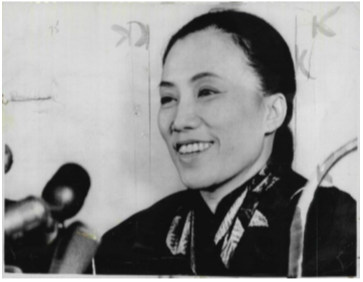
Cuối cùng, lý do thứ tư có liên quan đến câu chuyện này là mật mã học hiện đại bị Hoa Kỳ áp đảo, và rất nhiều nước trên thế giới chỉ việc đi theo Hoa Kỳ và lấy mật mã từ họ về áp dụng. Điều này thật là đáng tiếc! Các tài liệu của Edward Snowden chỉ ra nguy cơ trong hành động này, và điều cần thiết là phải có những chuyên gia riêng và sự phát triển thương mại về mật mã học ở các quốc gia khác trên thế giới. Vì vậy, việc nghiên cứu lịch sử mật mã học từ thời kỳ sơ khai, tồn tại ở các vùng khác nhau trên thế giới, như Châu Á, là rất cần thiết. Nhận thức được yếu tố lịch sử có thể giúp cho con người ở các quốc gia đang phát triển ngày nay có thêm sự tự tin cần thiết để thoát khỏi sự phụ thuộc vào những tri thức và sản phẩm của nước ngoài.
2. Chiến tranh chống Pháp (1945–1954) và thời kỳ 1954–1960
2.1. Những năm đầu
Từ những ngày đầu tiên, sự lãnh đạo ở Hà Nội đã gắn liền với tầm quan trọng to lớn của tình báo thông tin liên lạc. Theo lịch sử của Chính phủ Việt Nam được dịch bởi Cơ quan An ninh Quốc gia Mỹ (NSA), tổ chức mật mã đầu tiên thuộc Bộ Tổng tham mưu Quân đội Nhân dân Việt Nam được thành lập vào ngày 12/9/1945, chỉ mười ngày sau Tuyên ngôn độc lập khai sinh nước Việt Nam Dân chủ Cộng hòa.
Tại thời điểm đó, trình độ mật mã ở Việt Nam còn hạn chế. Theo lịch sử Ban Cơ Yếu, hệ thống mật mã mà Việt Nam sử dụng cuối năm 1945 và đầu năm 1946 không hơn gì đáng kể mật mã Caesar. Cụ thể là, họ sẽ xét văn bản tiếng Việt tương ứng với những chữ cái trong một bảng chữ cái Latin, bỏ đi các dấu và gộp nhiều chữ cái lại thành một như a, â, ă (đây là những chữ cái riêng biệt trong tiếng Việt). Sau đó, họ sẽ đánh số các chữ cái và dịch đi theo một đại lượng cố định (khoá Caesar là 10). Dãy các số thập phân sẽ là bản mã.
Sau đó, vào ngày 10/4/1946, các cục trưởng được lệnh sử dụng một hệ thống mã hóa kép tốt hơn, mặc dù vẫn còn thô sơ. Đầu tiên, họ sẽ thay những chữ cái và dấu khác nhau bằng tổ hợp các chữ cái La tinh; ví dụ, từ "Lê Thái" sẽ trở thành LEETHAIS. Sau đó, họ sẽ chuyển cụm từ đó sang các số sử dụng một hoán vị ngẫu nhiên cố định của các số từ 0 đến 22 (trong đó có 3 chữ cái của bảng chữ cái La tinh không được sử dụng). Cuối cùng, họ sẽ mã hóa những chữ số thập phân với một khóa Vigenère có độ dài là 5. Các chữ số thể hiện thông điệp được chia thành các khối có độ dài 5 và khóa sẽ được cộng vào theo từng chữ số với modulo 10.
Đây là hệ thống mã rất yếu so với trình độ mật mã thế giới năm 1946. Tầng thứ hai của hệ mã có thể dễ dàng bị gỡ, và còn yếu hơn cả khi so sánh với mã hóa Vigenère thông dụng với khóa 5 ký tự. Trước hết, có sự mập mờ trong việc giải mã: sau bước chuyển ngược phương thức mã hóa Vigenère, thì các ký tự 211 có thể bị đọc hiểu thành "2 11" hoặc "21 1". Nghiêm trọng hơn, phép phân tích tần số đối với hệ mã này còn dễ hơn là đối với mã hóa Vigenère tiêu chuẩn.
Một kết luận có thể rút ra từ bản chất nghiệp dư của mật mã Việt Nam năm 1946: trong một khoảng thời gian ngắn liên minh với Mỹ, Việt Minh đã không nhận được sự viện trợ đáng kể nào về lĩnh vực mật mã từ phía Mỹ. Đầu năm 1945, Cơ quan Tình báo Chiến lược (OSS) của Hoa Kỳ đã cử một nhóm, dẫn đầu bởi Đại tá Archimedes Patti, đến làm việc với mặt trận Việt Minh, giúp đỡ Việt Minh thiết lập một hệ thống tình báo để báo cáo lại những động thái của phát xít Nhật. Đại tá Patti đã gặp Hồ Chí Minh và Võ Nguyên Giáp, và đạt được sự hợp tác toàn diện. Mỹ nhanh chóng có được một lượng lớn thông tin chiến thuật. Nhưng người Mỹ đã giúp Việt Minh ít hơn rất nhiều so với những gì Việt Minh giúp Mỹ.
Từ cuộc phỏng vấn với Đại tá Patti năm 1981, chúng ta có thể nhận ra những lý do về địa chính trị đã khiến người Mỹ không sẵn sàng giúp Việt Minh về mật mã. Về phía Mỹ, họ chỉ muốn một quan hệ đồng minh tạm thời cho tới khi phát xít Nhật bị tiêu diệt. Nhưng họ đã rất ngạc nhiên khi Patti cho biết Việt Minh rất sẵn lòng giúp đỡ quân đội Mỹ mà không cần trả tiền. Về phía Việt Nam, Chủ tịch Hồ Chí Minh muốn thiết lập một quan hệ đồng minh lâu dài với người Mỹ để chống lại thực dân Pháp. Về cơ bản Việt Minh đã giúp Mỹ rất nhiều với mong muốn rằng Mỹ sẽ hỗ trợ Việt Nam trong việc giải phóng và độc lập dân tộc. Tuy nhiên, sau đó Mỹ đã không những không giúp đỡ Việt Minh mà còn quay lại ủng hộ Pháp; vào cuối cuộc chiến tranh chống Pháp năm 1954, CIA đã bay tới tiếp tế cho lực lượng Pháp tại Điện Biên Phủ.
Trong những ngày đầu của thời kỳ này, sự yếu kém về mật mã của Việt Minh đã dẫn đến việc lộ một lượng thông tin bí mật vào tay người Pháp. Trong Hội nghị Pháp–Việt diễn ra tại Fontainebleau từ tháng 7 đến tháng 8 năm 1946 (khi hai bên không đạt được hiệp ước hoà bình), phía Pháp đã đọc được một số thông điệp ngoại giao dưới mã hóa yếu của Việt Nam. Theo Christopher Goscha, một chuyên gia nổi tiếng về thời kỳ chiến tranh chống Pháp:
Sử dụng liên lạc bằng sóng radio thường chứa nhiều rủi ro tiềm ẩn. Người Pháp đã cử một số chuyên gia về phá mã giỏi nhất đến Đông Dương nhằm phá mã và thu thập thông tin nội bộ của đối phương, rồi báo cáo với lãnh đạo của phía thực dân tại thuộc địa và ở Pháp. Trong khi đó những nỗ lực của Việt Nam trong ngoại giao lại bị cản trở trên mặt trận công nghệ, do thiếu các kỹ thuật, thiết bị và đào tạo cần thiết cho việc mã hóa. Điều này đặc biệt đúng trong khoảng thời gian đầu của cuộc chiến tranh, khi phương pháp và bảng mã hóa của Việt Nam vẫn còn thô sơ, những người điều khiển sóng còn thiếu kinh nghiệm, thường hay nóng vội và chọn cách đơn giản truyền thẳng thông tin chưa được mã hóa. Chính vì thế, người Pháp đã có thể đọc được rất nhiều thông tin của Chính phủ Việt Nam trong hội nghị tại Đà Lạt, và trong cả hội nghị Fontainebleau.
Tuy nhiên, Việt Nam đã cố gắng tăng cường kiến thức về mật mã. Đặc biệt, họ đã nghiên cứu quyển sách Éléments de cryptographie viết bởi Đại úy Roger Baudouin, một quyển sách giáo khoa toàn diện được xuất bản ở Paris năm 1939. Năm 1948, Việt Minh đã xuất bản sách hướng dẫn mật mã học, để đào tạo những nhân viên mật mã, được sử dụng rộng rãi trong thời kỳ chiến tranh chống Pháp. Quyển sách mang tên Mật mã đại cương và được soạn bởi Hoàng Thành. Hiện cuốn sách đang được trưng bày trong Bảo tàng Mật mã học ở Hà Nội.
Một số bằng chứng cho thấy sự phát triển vững về mật mã ở mức trung ương Việt Minh đã không thực sự được áp dụng rộng rãi cho tất cả các cán bộ trong lĩnh vực này. Một cuộc triển lãm đặc biệt ở Bảo tàng Công An Hà Nội đã miêu tả cảnh những chiến sĩ của Việt Minh đã làm nổ tung con tàu Amyot d'Inville của Pháp vào ngày 27 tháng 9 năm 1950, từ đó đã ngăn chặn một cuộc tấn công quan trọng của Pháp vào vùng Thanh Hóa – Nghệ An – Hà Tĩnh, vùng giải phóng ở miền Trung của Việt Nam. Phần triển lãm còn bao gồm những tài liệu chỉ dẫn gốc miêu tả cách mã hoá mà họ đã dùng: mã khóa Vigenère với khóa 5 ký tự. Từ khóa TINHA được hiển thị ở trên cùng, với những chữ cái đã được chuyển dịch ở bên dưới. Nhưng kinh ngạc thay! Cụm từ đầu tiên trong đoạn mã hóa truyền tin lại chính là từ khóa TINHA dùng để mã hoá. Và thậm chí mọi cụm từ đều được cách đều cẩn thận, vì thế độ dài của từ khóa được khẳng định không chút nghi ngờ.
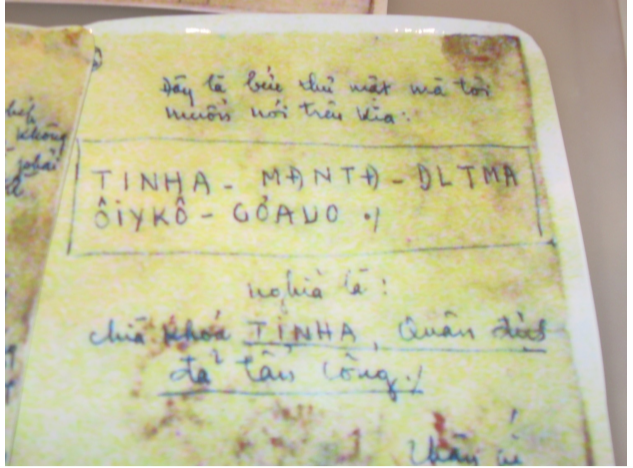
Trước khi chúng ta có thể cười vào việc vi phạm nguyên tắc Kerckhoffs của Việt Minh, chúng ta phải thừa nhận là cuộc tấn công vào con tàu của Pháp là một trong những thành công tuyệt vời của tác chiến du kích bí mật. Tại sao mặc dù Việt Minh sử dụng những phương pháp mật mã lạc hậu nhưng lại vẫn không bị phát hiện và bị phá? Có thể là do người Pháp thậm chí còn không bắt được thông tin liên lạc của Việt Minh. Hoặc có thể người Pháp bắt được thông tin liên lạc nhưng cũng quá yếu trong việc phá mã Vigenère, ngay cả khi có khoá. Có điều dường như chắc chắn là ở tầng dưới, cả quân Việt Nam và Pháp đều khá bị cô lập và do đó không tiếp cận được những kiến thức mật mã như ở các cơ quan đầu não.
2.2. Vai trò của Liên Xô và Trung Quốc
Trong bất kỳ trường hợp nào, theo lịch sử (NSA 2014), chỉ một vài tháng sau đó, vào tháng 11 năm 1950, Việt Nam đã cử những chuyên gia mật mã sang Trung Quốc tập huấn trong sáu tháng, nhờ đó trình độ kỹ thuật của họ được nâng lên đáng kể. Đối với Việt Nam tại thời điểm đó, kinh nghiệm của Trung Quốc là một hình mẫu tốt.
Tuy nhiên, trong thông tin liên lạc còn có một điểm khác biệt quan trọng. Người Trung Quốc phải trước tiên dịch hoặc chuyển sang một bảng chữ cái tiêu chuẩn trước khi mã hóa. Nhưng tiếng Việt được chuyển thể từ bảng chữ cái La tinh, do đó có thể mã hóa được trực tiếp, với điều kiện là đã có một số thay đổi thích hợp. Theo như miêu tả trong "Vietnam: A SIGINT Paradox" (NSA 2007):
Tiếng Việt không thể truyền đi bằng cách sử dụng mã khóa Morse chuẩn thông dụng được bởi những chữ cái âm tiết đặc biệt và hệ thống dấu của nó. Những nhà nghiên cứu về ngôn ngữ mật mã [NSA] đã phải tìm hiểu hệ thống được tạo ra bởi người Việt để chuyển tải những tính chất này sang mã Morse trước khi xử lý một bản dịch cụ thể. Ví dụ, nguyên âm u và o xuất hiện như những chữ cái bình thường hoặc với móc hoặc mũ. Để hiểu được chữ u có móc, thì người truyền tin đã gửi những chữ cái uw. Chữ w không xuất hiện trong bảng chữ cái tiếng Việt, vì thế chữ cái đó có một vai trò đặc biệt.
Bài báo này tiếp tục đề cập: bởi sự xuất hiện của ươ khá thường xuyên, những người chỉnh sửa mã Morse tiếng Việt thường rút gọn uwow thành wow.
Trong thập niên 1950, viện trợ nước ngoài về bảo mật thông tin liên lạc của Việt Nam phần lớn là từ phía Trung Quốc. Cuối thập niên 50, Liên Xô bắt đầu thay thế Trung Quốc trở thành nguồn cung cấp tư vấn về mật mã, dù Trung Quốc tiếp tục hỗ trợ Việt Nam trên những mặt khác, đặc biệt là phòng không. Theo ước tính của tình báo Mỹ (Hanyok 2002), từ năm 1965 đến năm 1973 có hơn 5000 cố vấn Trung Quốc bị giết hoặc bị thương bởi các cuộc không kích của không quân Mỹ ở miền Bắc Việt Nam.
Merle Pribbenow, chuyên gia đã nghỉ hưu của CIA về ngôn ngữ tiếng Việt, đã miêu tả về lịch sử sự viện trợ của Liên Xô đối với Việt Nam về tình báo. Đáp lại yêu cầu từ Hà Nội, trong hai năm 1959–1961, Ủy ban An ninh Quốc gia Liên Xô (KGB) đã viện trợ tiền, thiết bị và đào tạo về tình báo qua sóng radio và các thông tin liên lạc bảo mật cho phía Việt Nam. Đề án đầy triển vọng và thành công này được gọi là "Vostok" theo tiếng Nga và là "Phương Đông" theo tiếng Việt. Theo ông Pribbenow, KGB đã cung cấp "thiết bị và hỗ trợ kỹ thuật cho Bộ Công An để thành lập một mạng lưới thông tin liên lạc an toàn rộng lớn trên toàn miền Bắc Việt Nam, và từ đó mở rộng xuống miền Nam Việt Nam để hỗ trợ cho cuộc chiến tranh ở đó."
Chính căng thẳng và nghi ngờ trong quan hệ đồng minh giữa Việt Nam với Liên Xô và giữa Việt Nam với Trung Quốc đã khiến cho Việt Nam tránh sự phụ thuộc vào cả Trung Quốc và Liên Xô, mà tự mình phát triển những ý tưởng và tài liệu mật mã. Chính điều này đã làm cho công việc phá mã của Pháp và Mỹ trở nên khó khăn hơn. Cho tới nửa cuối của cuộc chiến tranh chống Pháp, trình độ thông tin tình báo và mật mã Việt Nam đã ở một trình độ mới, phát triển nhanh một cách đáng ngạc nhiên đối với một lực lượng đấu tranh du kích ở một đất nước vẫn còn nghèo khó. Theo Goscha:
Một điều rõ ràng là Việt Nam Dân chủ Cộng hòa không chỉ áp đảo Pháp với những khẩu súng lớn và những làn sóng người tấn công; một lý do chính cho thắng lợi [tại Điện Biên Phủ] chính là thành công trong việc tổ chức và thực hiện một cuộc chiến tranh toàn diện, phối hợp các lực lượng, lần lượt dựa vào khả năng khống chế không gian và thời gian thông qua sóng liên lạc của họ. Trong lịch sử thế kỷ XX, chưa từng có một chiến tranh giải phóng thuộc địa nào mà có một sự áp dụng công nghệ như một trận chiến hiện đại như vậy.
Từ những thành tựu về công nghệ, chúng ta thấy rằng cho tới cuối của cuộc chiến tranh, Việt Nam Dân chủ Cộng hòa, ít nhất là ở miền Bắc, không còn là một đội quân du kích nghèo với kiểu tiêm kích rồi bỏ chạy nữa. Thực dân Pháp đã từng nhiều lần phá khóa của Việt Nam và bắt giữ hàng nghìn người cộng sản, tuy nhiên Pháp không thể ngăn chặn được Việt Nam truyền tin liên lạc bằng mọi cách.
Cho tới thời kỳ đầu của cuộc chiến tranh chống Mỹ, những nhà mật mã học người Mỹ cũng đã đánh giá cao về trình độ mật mã học của Việt Nam. Theo lịch sử được công bố (NSA 2007): "Vào năm 1961, những nhà phân tích trong NSA đã biết rằng những đối thủ của họ rất giỏi trao đổi mật mã và họ ngạc nhiên đối với sự tiến bộ về trình độ mật mã của miền Bắc Việt Nam."
2.3. Mật mã của Pháp ở Việt Nam (1945–1954)
Dựa trên các tài liệu trong kho lưu trữ của quân đội Pháp, chúng tôi đánh giá hiệu quả sử dụng mật mã trong thời kỳ này của Pháp và Việt Minh có nhiều điểm tương đồng. Mặc dù Pháp đã sử dụng một số thiết bị tương đối hiện đại, như M-209 được phát triển bởi Hoa Kỳ trong Thế Chiến thứ II, nhưng trên thực tế họ nói chung cũng không hơn gì Việt Minh; cả hai bên đều lo lắng về vấn đề đào tạo kém chất lượng và sử dụng nhầm lẫn trong các hệ thống.
Giống như mật mã của Việt Minh, các hệ thống của Pháp về cơ bản là các biến thể của mật mã Vigenère. Điều khôi hài là Blaise de Vigenère là người Pháp ở thế kỷ XVI, được biết đến là người sáng tạo ra nhiều bước đột phá lớn về mật mã. Vậy mà tưởng chừng như người Pháp không hề có bất kỳ một tiến bộ nào trong lĩnh vực này sau 400 năm. Nhưng trên thực tế, vấn đề chính là họ đã không áp dụng được kiến thức lý thuyết vào thực tiễn, ít nhất là ở Việt Nam, với ba lý do.
Lý do đầu tiên là, trong khoảng giữa thế kỷ XX, Việt Nam là một thuộc địa tiền đồn phía xa của đế quốc Pháp; Hà Nội nằm ở rất xa so với Paris theo mọi nghĩa. Hơn nữa, mặc dù trong thời gian đầu của cuộc chiến tranh, Pháp đã cử một số nhà mật mã được đào tạo bài bản sang Việt Nam nhằm phá khóa những thông tin liên lạc về ngoại giao, nhưng phần lớn thời gian những người được cử đi sang ở Việt Nam đều không phải là những người Pháp giỏi nhất.
Lý do thứ hai là, trong những năm đó, quá trình vận hành một hệ mã hóa mạnh còn mất nhiều thời gian. Một tài liệu của quân đội Pháp ghi ngày 7/12/1953 — chỉ 3 tháng trước chiến dịch Điện Biên Phủ — đã cho kết quả một thử nghiệm so sánh thời gian cần thiết để mã hóa một bản tin trong đó sử dụng sáu quy trình mã hóa khác nhau. Thời gian lâu nhất để mã hóa là 44 phút, và nhanh nhất là 17 phút. Từ đó, họ kết luận quy trình mã hóa nhanh nhất nên được áp dụng. Chú ý rằng kết luận này chỉ dựa trên sự so sánh về tốc độ mã hóa, mà không hề dựa trên so sánh về tính bảo mật của mã hóa.
Lý do thứ ba là, lỗi của con người và việc họ khiên cưỡng tuân theo các quy định đã tạo ra nhiều rắc rối cho các nhà chức trách Pháp. Một tài liệu ngày 11 tháng 12 năm 1953 đã phàn nàn về sự khinh suất và những sai lầm nghiêm trọng đi ngược lại với những quy tắc bảo mật đã góp phần dẫn đến một cuộc tấn công bất ngờ của Việt Minh.
Những cán bộ chỉ huy quân sự của Pháp nhận thức và thừa nhận rằng, hầu hết những gì họ hy vọng chỉ là sĩ quan của họ có thể sử dụng một loại mật mã rất yếu. Họ thậm chí còn tạo ra một thuật ngữ cho điều đó, camouflé ("ngụy trang"), nghĩa là nó không phải là một văn bản thường nhưng cũng chưa phải là văn bản được mã hóa. Mã hóa thực sự chỉ được sử dụng cho những tài liệu ngắn, hoặc tài liệu bí mật tối cao.
3. Chiến tranh chống Mỹ (1961–1975)
Trong khi nghiên cứu về lịch sử của mật mã học thời chiến tranh, chúng ta cần phải phân biệt rõ những loại câu hỏi khác nhau:
- Tấn công (SIGINT). Trình độ tình báo thông tin tín hiệu ở hai bên như thế nào? Đối thủ có khả năng chặn và đọc tín hiệu của đối phương hay không?
- Phòng thủ (COMSEC). Trình độ lý thuyết và thực hành về mật mã học của cả hai bên?
- Thông tin liên lạc chiến lược, thường diễn ra giữa các trung tâm chỉ huy và các căn cứ trọng yếu — những thông tin cần mức bảo mật rất cao và thường không quá quan trọng về độ trễ thời gian.
- Thông tin liên lạc chiến thuật, bao gồm thông tin liên lạc trong thời gian thực trong khi chiến dịch xảy ra — yếu tố thời gian là quan trọng.
3.1. COMSEC của Mỹ và SIGINT của Việt Nam
Brian Snow bắt đầu làm việc ở NSA từ năm 1972, và cuối cùng trở thành Giám đốc Kỹ thuật về mảng Phòng thủ Bảo mật thông tin liên lạc (sau đó được gọi là Cục An ninh Thông tin, IAD). Khi trả lời các câu hỏi về quy định ở NSA về bảo mật thông tin liên lạc (COMSEC) trong chiến tranh ở Việt Nam, ông đã nhấn mạnh rằng IAD luôn phân tích và làm theo những phương án xấu nhất, không phải những tình huống giả định. Họ có lẽ đã không gặp sai lầm là đánh giá thấp những kỹ năng phá mã của Việt Nam. Trong suốt cuộc chiến tranh Việt Nam, NSA luôn xác định dùng công nghệ mật mã cao cấp nhất, bất kể trình độ mật mã của Việt Nam đang đạt đến trình độ nào. Do đó, khả năng Việt Nam có thể phá được lớp bảo mật thông tin chiến lược của Mỹ là rất ít.
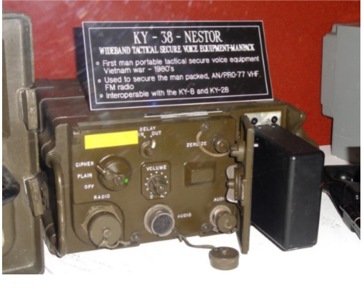
Sự khó khăn trong việc sử dụng bảo mật cho thông tin liên lạc chiến thuật
Trong khoảng năm 1965, Mỹ đã bắt đầu tận dụng một thiết bị mã hóa — NESTOR — được phát triển bởi NSA cho mục đích sử dụng trên chiến trường. Tuy nhiên, NESTOR hoạt động không tốt trong thời tiết nóng ẩm ở miền Nam Việt Nam. Thực tế, hầu hết các thông tin liên lạc trong chiến trường của Mỹ không được mã hóa hoặc được "mã hóa" bằng cách dùng những biệt ngữ, thuật ngữ, tiếng lóng hoặc các từ ngữ thay thế. Mặc dù nhiều sĩ quan và quân lính trong quân đội Mỹ đều tin rằng người Việt Nam sẽ không bao giờ có thể hiểu được những trao đổi chứa biệt ngữ của Mỹ, nhưng trên thực tế, Mặt trận Dân tộc Giải phóng miền Nam Việt Nam (NLF) đã thường khai thác được một số thông tin liên lạc chiến thuật có tính bảo mật thấp từ phía quân đội Mỹ.
Trong một quyển sách năm 1982 viết bởi Charles R. Myer, Tướng chỉ huy quân đội Mỹ (những mục về mật mã được in lại trong Cryptologia), ông đã kể lại một cuộc đột kích vào một căn cứ của NLF ngày 20 tháng 12 năm 1969 dẫn đến việc bắt giữ 12 lính du kích, thu được một lượng lớn tài liệu và thiết bị thông tin liên lạc. Sau khi kiểm tra thiết bị và "thẩm vấn" những tù binh, chính phủ Mỹ nhận thấy rằng cùng với sự giúp đỡ của "các nhà ngôn ngữ học về Tiếng Anh — [đã từng là] những phần tử quan trọng trong Việt Cộng và các đơn vị ở miền Bắc Việt Nam", họ có thể "theo dõi và khai thác hầu hết tất cả những thông tin liên lạc bằng giọng nói không được bảo mật của người Mỹ hoặc được mã hóa thủ công bằng mã Morse." Còn những tài liệu thu thập được có chứa "nhiều hướng dẫn về những phương thức đánh chặn thông tin và những bản đánh giá chi tiết về các phương thức giao tiếp và những lỗ hổng bảo mật có thể lợi dụng của phía quân đội Mỹ và các đồng minh."
Khi Đại tướng Creighton Abrams, Tổng tư lệnh quân đội Mỹ ở Việt Nam được báo cáo về vấn đề này, ông đã nói rằng: "Điều này thật sự quá kinh ngạc, về sự chi tiết, sự chính xác tuyệt đối và sự chuyên nghiệp tuyệt vời của nó. Những người này đang đọc thư của chúng tôi." Dù vậy, quân đội Mỹ trên chiến trường tỏ ra miễn cưỡng trong việc sử dụng các biện pháp bảo mật mạnh, một phần là bởi vì những khó khăn lớn mà họ gặp phải với những thiết bị mã hóa NESTOR KY-8, KY-28 và KY-38. Myer kết luận rằng:
Bảo mật tín hiệu, đặc biệt là trong phát thanh và truyền sóng radio, cũng là một vấn đề chính trong suốt thời kỳ chiến tranh ở Việt Nam... Tất cả những người dùng các phương tiện liên lạc đều ít hay nhiều cảnh giác được về điểm yếu của họ đối với việc đánh chặn, phân tích và giải mã của đối phương, và sự cần thiết của việc mã hóa và xác thực. Khoảng cách giữa việc biết và việc ứng dụng là rất lớn, và ở Việt Nam, nhiều lúc khoảng cách này dường như là một vấn đề nan giải.
Về vấn đề xác thực, Myer giải thích rằng có rất nhiều "tình huống được ghi chép lại" về những bức điện giả mà NLF gửi đi. "Trong một trường hợp, NLF đã thâm nhập được đường dây điện thoại nội bộ của một căn cứ phòng thủ và chuyển hướng lực lượng dự bị ra khỏi vùng mà họ sắp tấn công."
Myer cũng kể về một trường hợp khi mà một điện tín viên của Mỹ tháo nắp bên ngoài của máy NESTOR KY-8 để thông gió và làm mát (vì thiết bị này thường quá nóng). "Điều này đã làm tăng khả năng hoạt động của máy KY-8 nhưng đã vi phạm bảo mật an ninh, làm lộ thiết bị và tạo cơ hội cho đối phương thu chặn những tín hiệu tình báo." Việc gợi mở rằng NLF chắc hẳn đã tận dụng lợi thế của một kênh bên (side channel) trong NESTOR thật đáng "ngạc nhiên", theo lời của đại tướng Abrams. Thử tưởng tượng xem một nửa thế kỷ trước, trong một cuộc bao vây du kích ẩn sâu trong những khu rừng nhiệt đới nóng ẩm ở miền Nam Việt Nam, một đơn vị SIGINT của Mặt trận Dân tộc Giải phóng miền Nam Việt Nam đã có thể bắt được thông tin từ một kênh bên của thiết bị mã hóa NSA!
Người tình báo
Như đã đề cập ở trên, người Việt Nam không thể phá mã những mật mã mạnh mà Mỹ hay Việt Nam Cộng hòa sử dụng cho những thông tin liên lạc chiến lược. Thay vì thế, người Việt đã khắc phục tất cả mọi vấn đề bằng cách xây dựng một mạng lưới rộng lớn với những tình báo viên tinh nhuệ bí mật có quyền truy cập vào nguồn thông tin chiến lược, chiến thuật của quân đội Việt Nam Cộng hoà và các hệ thống bảo mật, thậm chí cả hệ thống tình báo của Mỹ, đặc biệt là tổ chức CIA.
Phạm Xuân Ẩn (1927–2006)
Sau Thế Chiến thứ II, Hoa Kỳ trở thành một đối thủ hùng cường không chỉ với Liên Xô, mà còn đối với các lực lượng giải phóng cánh tả trên toàn thế giới. Đặc biệt, đầu những năm 50, Hoa Kỳ đã tham gia rất nhiều vào việc hỗ trợ người Pháp tiền và thiết bị tại Việt Nam. Những người lãnh đạo ở Hà Nội đã dự đoán rằng một khi họ đánh bại người Pháp, họ có lẽ sẽ phải thương thuyết với người Mỹ. Hiệp định Geneva năm 1954 đã quy định về cuộc tổng tuyển cử trên toàn quốc sẽ được tổ chức vào năm 1956. Tuy nhiên, tình báo Hoa Kỳ đã dự đoán Hồ Chí Minh sẽ thắng với 80% tổng số phiếu bầu. Cuộc bầu cử đó đã không bao giờ được tổ chức.
Mặc dù vào năm 1946, Hồ Chí Minh đã kêu gọi Tổng thống Mỹ Truman giúp đỡ cho nền độc lập của Việt Nam, đầu những năm 1950, nhà lãnh đạo Việt Nam đã không ngây thơ để tin rằng người Mỹ sẽ để họ thống nhất đất nước thông qua cuộc tổng cử. Họ xác định điều rất quan trọng là phải có được một nguồn thông tin chính xác về tư duy chiến lược và chiến thuật của Mỹ. Họ đã chọn một người trẻ luôn ủng hộ Việt Minh — Phạm Xuân Ẩn — cho nhiệm vụ này. Phạm Xuân Ẩn từ đó trở thành một điệp viên tình báo nổi tiếng nhất trong lịch sử Việt Nam.
Năm 1953, Phạm Xuân Ẩn được kết nạp vào Đảng Cộng Sản Việt Nam dưới sự chủ tọa của Lê Đức Thọ (người được trao giải Nobel Hòa Bình 20 năm sau đó cùng với Henry Kissinger vì đàm phán thỏa thuận hòa bình Paris; nhưng ông đã từ chối giải thưởng này). Phạm Xuân Ẩn được rút khỏi bất cứ hoạt động nào có thể làm tiết lộ về sự có cảm tình với cộng sản. Vào năm 1957, ông được đưa tới Hoa Kỳ để học chuyên ngành báo chí. Sau đó, ông quay trở lại Sài Gòn với tư cách là một nhân vật quan trọng cho truyền thông Hoa Kỳ. Đặc biệt là trong những năm quan trọng của chiến tranh, khi mà ông làm việc cho tạp chí Time, ông đã lấy được lòng tin của những nhân vật cao cấp của CIA cũng như những nhân vật cao cấp trong chính phủ miền Nam Việt Nam.
Công việc của ông với vai trò là một tình báo bí mật làm việc cho Cơ quan tình báo của Mặt trận Dân tộc Giải phóng miền Nam Việt Nam và Chính phủ Việt Nam Dân chủ Cộng hòa kéo dài 15 năm, từ năm 1960 đến năm 1975. Trong khoảng thời gian bí mật này, ông đã được nhận 16 huy chương cho những hoạt động xuất sắc, phi thường. Trong một lần, sau khi nhận được báo cáo của Phạm Xuân Ẩn, Đại tướng Võ Nguyên Giáp và Chủ tịch Hồ Chí Minh đã nói: "Bây giờ chúng ta đang đứng trong phòng tác chiến của quân đội Mỹ". Sau chiến tranh, vào năm 1976, Phạm Xuân Ẩn được phong tặng danh hiệu "Anh hùng Lực lượng vũ trang nhân dân Việt Nam". Sau đó, ông được trao hàm Thiếu tướng, và khi ông mất năm 2006, tang lễ của ông được tổ chức theo nghi lễ của anh hùng chiến tranh.
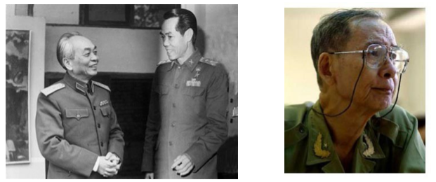
Nguyễn Đình Ngọc (1932–2006)
Nguyễn Đình Ngọc là một nhà toán học hoạt động bí mật ở Sài Gòn và được trao hàm Thiếu Tướng (trong Công An, không phải trong Quân đội). Ông có rất nhiều bằng toán học và kỹ sư (tất cả đều từ Pháp). Vào những năm 80, ông đã giúp tổ chức một số buổi tọa đàm về Đại số, Topology và nhiều mảng khoa học khác.
Trong suốt thời kỳ chiến tranh chống Mỹ, Nguyễn Đình Ngọc là người thông thạo tiếng Anh và tiếng Pháp (năm 1983, ông là phiên dịch viên cho buổi nói chuyện đại chúng đầu tiên bằng tiếng Anh mà Neal Koblitz tổ chức ở Việt Nam), được biết đến rộng rãi trong cộng đồng người nước ngoài ở Sài Gòn và từ đó thu thập được những thông tin tình báo quý giá từ họ. Một người em trai của ông cũng có quân hàm cao trong Quân đội của Việt Nam Cộng hòa. Chúng ta không biết liệu rằng có phải Nguyễn Đình Ngọc đã sử dụng kiến thức về toán học và kỹ sư của ông để làm vững mạnh mật mã học của người Việt. Và chúng ta thậm chí cũng không rõ là liệu ông đã tự mã hóa những báo cáo của riêng ông. Theo một nguồn tin, ông có thể đã có một liên lạc cá nhân ở Sài Gòn (một tình báo khác) mà ông thường gửi những báo cáo của ông qua giọng nói, và rồi người đó sẽ chịu trách nhiệm truyền những thông điệp đó về Hà Nội.
Có rất rất nhiều tình báo tài giỏi khác hoạt động và làm việc cho Mặt trận Dân tộc Giải phóng miền Nam Việt Nam và Chính phủ Việt Nam Dân chủ cộng hòa. Đối với người Việt Nam, phương thức chính để thu thập những thông tin tình báo chiến lược chính là thông qua mạng lưới dày đặc các tình báo bí mật, không phải là thông qua bất kỳ phân tích phá mã nào của những mật mã trình độ cao mà người Mỹ sử dụng cho những thông tin liên lạc chiến lược.
3.2. COMSEC của Việt Nam và SIGINT của Hoa Kỳ
Mã hóa của Việt Nam
Merle Pribbenow, người đã từng viết bản báo cáo như đã đề cập ở trên, nghỉ hưu năm 1995 sau 27 năm làm việc cho cơ quan CIA với tư cách là một chuyên gia về ngôn ngữ tiếng Việt. Trong một thư điện tử, ông đã tóm tắt về tình trạng mã hóa của Việt Nam trong suốt thời kỳ chiến tranh chống Mỹ như sau:
Miền Bắc Việt Nam đã cử nhiều chuyên gia mật mã và điện tín viên ... trong những năm đầu 60 ... để nâng cấp bảo mật thông tin liên lạc của họ ở miền Nam. Người Việt đã sử dụng nhiều hệ thống khác nhau trong suốt thời gian chiến tranh, và đã nâng cấp hệ thống mã hóa của họ nhiều lần. Cho tới cuối cuộc chiến, ít nhất họ đã sử dụng một hệ thống mã hóa kép, bao gồm việc sử dụng một số mã hóa thay thế từ trong một quyển sách mã hóa và sau đó tiếp tục chuyển đổi thông điệp đã được mã hóa thông qua việc sử dụng mã đệm một lần (one-time pad).
Trong một cuộc điện thoại sau đó, ông có nói thêm: "Người Việt Nam đã sử dụng cả mã Morse và giọng nói cho những đoạn mã hóa, đọc các từ tiếng Việt qua sóng radio để diễn đạt các chữ cái, giống như cách sử dụng của quân đội Mỹ cho Alpha, Bravo, Charlie, cho A, B, C, ..."
Tại Bảo tàng Mật mã ở Hà Nội đã cho chúng ta thấy một số chi tiết. Người Việt Nam đã sử dụng ba kỹ thuật chung trong suốt ba thập kỷ của chiến tranh, ký hiệu là KTA, KTB và KTC (trong đó KT được viết tắt cho Kỹ Thuật). KTA là một chu trình mã hóa tiện lợi dựa trên giao hoán và thay thế, trong khi những biến thể khác của KTB và KTC sử dụng một số loại mã hóa kép. Những năm đầu chiến tranh chống Mỹ, KTC được sử dụng; cho tới cuối cuộc chiến, người Việt sử dụng KTC-5, số 5 để chỉ độ dài của từng đoạn mã.
Trong bước đầu tiên của KTC-5, một từ sẽ được mã hóa sử dụng một quyển từ điển tra cứu; bản sao của một quyển từ điển dạng đó đang được trưng bày ở Bảo tàng. Quyển từ điển có thể được gửi tới nhiều người cùng sử dụng, và nếu quân đội Mỹ phát hiện được, nó lập tức được thay thế bằng phiên bản khác. Trong bước thứ hai, đoạn thông điệp cần mã hóa sẽ được mã hóa sử dụng mã đệm một lần (one-time pad). Mã đệm được ghi như một quyển sách, chỉ được chia sẻ giữa hai người sử dụng, được in chữ rất nhỏ, và đòi hỏi người dùng sử dụng kính lúp để đọc. Quyển sách rất nhỏ đó có thể dễ dàng tiêu hủy trong trường hợp nguy hiểm. Để in những quyển sách như thế này đã vượt quá khả năng của các nhà in của Việt Nam, và vì thế Liên Xô đã in chúng.
Phương thức dùng từ điển tra cứu đặc biệt phù hợp cho người Việt Nam, bởi vì trong tiếng Việt, tất cả các từ đều được cấu tạo tự nhiên từ các tiếng. Ví dụ, một từ tiếng Anh là "attack" nhưng trong tiếng Việt là "tấn công". Bước một là, sử dụng từ điển như được trưng bày tại Bảo tàng Mật mã, để chuyển từ "tấn" thành cụm afhbv và "công" thành cụm wxess, dẫn đến một mã hóa 10 ký tự — rồi sau đó tiếp tục chuyển đổi đoạn mã hóa sử dụng đệm một lần trong bước thứ 2.
Từ những nguồn tin của chúng tôi, rõ ràng là quân đội Mỹ không bao giờ có thể đọc được các mã hóa theo chu trình KTC.2
Mực vô hình và một số câu hỏi
Trong những năm 1960–1975, khi Phạm Xuân Ẩn gửi những thông tin bí mật từ các nguồn cao cấp của Hoa Kỳ và Việt Nam Cộng hòa, trong tổng số 45 liên lạc viên hoạt động chuyển tin cho ông, 27 người đã bị bắt và giết — và có lẽ bị tra tấn trước khi họ bị giết. Tuy nhiên kẻ thù chưa bao giờ tìm ra được nguồn của những thông tin đó ở đâu. Mọi người có lẽ sẽ nghĩ rằng điều này có nghĩa là tất cả những thông tin của ông đều được mã hóa rất mạnh. Tuy nhiên, chúng ta được biết rằng, việc mã hóa mạnh ở Việt Nam là một quá trình rất lâu và chậm, nên điều này là không thể.
Theo những nguồn tin của chúng tôi, thực tế diễn ra như sau. Phạm Xuân Ẩn đã sử dụng mực vô hình làm từ bột gạo để viết những báo cáo của ông lên giấy, rồi ông cuốn tờ giấy đó xung quanh các cuộn trứng. Trong chợ, ông sẽ đưa trứng cuộn đó cho người liên lạc thứ nhất, một phụ nữ ẩn danh dưới tên Nguyễn Thị Ba, người cũng đã sống sót qua cuộc chiến tranh và vào năm 1976, bà được phong danh hiệu "Anh hùng lực lượng vũ trang nhân dân Việt Nam". Những liên lạc viên khác sẽ lấy và chuyển những tin nhắn tới căn cứ của NLF ở địa đạo Củ Chi, không xa Sài Gòn. Ở đó tình báo NLF sẽ áp dụng phương pháp dùng cồn rượu iốt để làm cho mực nổi lên, và rồi viết lại thành hai phần. Một phần là một báo cáo tương đối ngắn gọn và cần được gửi đi gấp; phần còn lại bao gồm những báo cáo dài hơn và ít khẩn cấp hơn. Đoạn đầu tiên sẽ được đưa tới một đài phát thanh và được gửi đi bằng đường sóng radio đã được mã hóa mạnh tới trung tâm chỉ huy của Mặt trận ở Campuchia. Phần thứ hai sẽ được chuyển tới những nhà lãnh đạo ở Hà Nội bằng đường bộ.
Điều này cũng đặt ra một câu hỏi thú vị: tại sao tình báo của Hoa Kỳ và Việt Nam Cộng hòa đều không thể tìm ra nguồn của những bản báo cáo chưa được mã hóa từ những liên lạc viên bị bắt giữ? Phải chăng họ không nghĩ tới rằng NLF đang gửi tin bằng mực vô hình? Ngược lại, theo Pribbenow: "CIA và miền Nam Việt Nam biết rất rõ những người cộng sản Việt Nam gửi những mẩu tin cho liên lạc viên đều được viết bởi mực vô hình và các đoạn tin đó thường không được mã hóa. Điều này, người Pháp cũng biết rõ thời kỳ đầu của cuộc chiến tranh đối đầu với Mặt trận Việt Minh."
Một câu trả lời cho điều kỳ bí này: những người liên lạc có thể dễ dàng hủy đi những thông tin bằng nhiều cách khi họ có nguy cơ bị bắt. Đây chỉ là một phần của lời giải thích. Tuy nhiên, thời gian, địa điểm, và tình huống của việc bắt giữ những liên lạc viên thường khác nhau, và điều này thật khó để tin rằng trong tất cả 27 trường hợp, họ đều có thể hủy đi tất cả những thông tin. Một lời giải thích khác là phần thông tin đặc biệt nhạy cảm có lẽ chưa bao giờ bị lọt ra ngoài — đó là phần thông tin đã được gửi đi bằng đường bộ từ Củ Chi tới những căn cứ ở gần. Phần thứ hai là những thông tin khá quan trọng theo lẽ tự nhiên, thường ít chỉ đích danh một nguồn cụ thể nào đó.
Thế lưỡng nan trong việc mã hoá thông tin chiến thuật
Theo Pribbenow, NSA của Mỹ và các chi nhánh mật mã của Lục Quân, Hải Quân và Không Quân chưa bao giờ phá được bất kỳ mã khóa trình độ cao nào mà người Việt sử dụng cho thông tin liên lạc chiến lược. Tuy vậy, những thông tin liên lạc chiến thuật của Việt Nam đều hoặc chưa được mã hóa hoặc được mã hóa yếu thì rất dễ dàng cho NSA nắm bắt và đọc.
Vấn đề của Việt Nam chính là quá trình mã hóa còn rất chậm, vì thế nó không thể được sử dụng trong trường hợp (1) một lượng cực lớn thông tin cần được gửi đi, ví dụ như trong năm 1967–1968, khi mà nguồn nhân lực và vũ khí được vận chuyển vào phía miền Nam chuẩn bị cho chiến dịch Tết Mậu Thân; hoặc (2) thông tin cần được gửi đi rất nhanh, trong điều kiện bị đối phương không kích. Theo lịch sử của NSA Mỹ (Hanyok 2002), báo cáo chỉ ra hai lĩnh vực chính mà người Mỹ có ưu thế về chiến thuật từ việc phân tích và giải mã thông tin từ phía Việt Nam. Đầu tiên, bắt đầu từ năm 1967, họ đã có thể dự đoán chính xác số lượng và địa điểm của lực lượng giải phóng di chuyển vào miền Nam trên tuyến đường Hồ Chí Minh. Cùng thời điểm đó, qua phân tích tình báo thông tin tín hiệu, Mỹ nắm được lợi thế chiến thuật trước Chiến dịch Tết Mậu Thân, đặc biệt là trận đánh tại Đắk Tô đã kéo dài trong suốt tháng 11 năm 1967.
Thứ hai là, trong chiến dịch không kích, những người điều khiển, ngăn chặn tín hiệu có thể cảnh báo máy bay thả bom của Mỹ về các mối đe dọa từ lực lượng phòng không của miền Bắc Việt Nam. Cho tới cuối những năm 60, phòng thủ trên không là một mạng lưới dày đặc, rộng lớn gồm các trạm theo dõi và cảnh báo trên không, pháo phòng không (AAA) và các tổ hợp tên lửa đất đối không (SAM) và MiG. Như đã giải thích trong lịch sử NSA: "hầu hết các thông tin chuyển qua hệ thống thông tin liên lạc đều sử dụng hệ thống mã hóa hoặc mã hóa cấp thấp hoặc bằng ngôn ngữ đơn giản. Gửi trực tiếp thông tin liên lạc thông qua hệ thống phòng không là do nhu cầu cần nhận thông tin nhanh, gấp." Mặc dù Việt Nam đã cố gắng để bắn hạ nhiều máy bay ném bom của Hoa Kỳ, nhưng họ có thể sẽ bắn rơi nhiều hơn nữa nếu như họ mã hóa được những thông tin liên lạc trên không của họ. Thật đáng tiếc, điều này là không thể.
Trong suốt chiến dịch Tết Mậu Thân năm 1968 và trong cuộc chiến tranh trên không, SIGINT của Mỹ đã giúp Hoa Kỳ giảm nhiều tổn thất hơn, nhưng tất nhiên điều này không làm thay đổi kết quả của cuộc chiến.
3.3. Kết luận: Một sự tương xứng ngạc nhiên
Như trong phần mở đầu chúng ta đã bàn luận về một quan điểm chung: mặc dù có ưu thế vượt trội về công nghệ, nhưng người Mỹ vẫn thua trong cuộc chiến này bởi vì "trái tim và ý chí" nằm ở phía đối phương. Trước quan điểm về sự yếu kém về công nghệ của Việt Nam, có một điều đáng ngạc nhiên chính là trong một lĩnh vực quan trọng của công nghệ quân sự — bảo mật thông tin liên lạc và tình báo thông tin tín hiệu — cả hai bên đều khá tương xứng. Ở cả hai bên, COMSEC hoạt động tốt cho những thông tin liên lạc chiến lược, nhưng lại không đủ khả năng cho những thông tin liên lạc chiến thuật. Nhìn chung, người Việt Nam có những thành công và thất bại tương tự như người Mỹ.
Các thiết bị mã hóa NESTOR của người Mỹ được chế tạo tốt và hoạt động ổn định khi được thử nghiệm tại Fort Meade. Tuy nhiên, chính các thiết bị này lại làm việc kém hiệu quả trong khí hậu thời tiết nóng, ẩm ở miền Nam Việt Nam. Hệ thống mã hóa kép của Việt Nam được thiết lập tốt và dường như chưa bao giờ bị phá. Tuy vậy, hệ thống mã hóa quá phức tạp, đòi hỏi thời gian mã hóa dài, trong khi đó những thông tin liên lạc chiến thuật cần được mã hóa và giải mã nhanh — tức thời, do đó những thông tin chiến thuật thường không được mã hóa.
Hơn thế nữa, chúng ta nhận thấy yếu tố con người luôn đóng vai trò cực kỳ quan trọng: sự tự mãn và chủ quan của các chỉ huy người Mỹ ở Việt Nam đã luôn nghĩ rằng các nhà ngôn ngữ học của NLF sẽ không bao giờ có thể hiểu được những trao đổi chứa nhiều thuật ngữ quân sự; sự thiếu sót của Việt Minh khi chuyển tin đã đính kèm từ khóa quan trọng nhất vào trong cụm đầu tiên của bản mã. Nhìn lại, độ chênh lệch lớn giữa trình độ hiểu biết về mật mã tại các trung tâm căn cứ chỉ huy và thực tế triển khai chiến thuật trên chiến trường không hề làm chúng ta ngạc nhiên, bởi chúng ta nhận ra được sự chênh lệch giống nhau trong thế giới hiện đại của an ninh mạng.
Có một lý do cơ bản tại sao mật mã đôi khi thường được dùng để tăng độ khó. Mật mã học, giống như là toán học thuần túy, là trung tâm đầu não — không cần đầu tư lớn về tài chính vào đây. Để có mật mã tốt, bạn không cần phải giàu, bạn chỉ cần thông minh. Trong toán học, hay ngay cả trong những điều kiện khó khăn đến không thể tưởng tượng được trong các cuộc chiến chống Pháp và Mỹ, Việt Nam đã có một truyền thống lâu dài, tiêu biểu là các nhà toán học nổi tiếng như Lê Văn Thiêm, Hoàng Tụy và Ngô Bảo Châu với Giải thưởng Fields. Với giá trị cao mà văn hóa Việt Nam đặt vào tư tưởng thuần túy, không có gì đáng ngạc nhiên khi họ có thể tạo ra những bản mã mà NSA không thể phá.
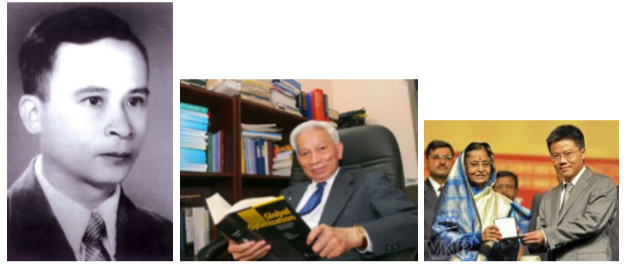
4. Một câu chuyện lạ về đạo đức giữa những người Mỹ điều khiển SIGINT
Trong một chú thích trong cuốn sách của ông về Nixon và Kissinger (The Price of Power, 1983), nhà báo người Mỹ Seymour Hersh kể về một câu chuyện đáng chú ý mà ông ghi được từ các cuộc phỏng vấn với các phi công Mỹ trước đây. Câu chuyện lại một lần nữa được kể lại trong một phần của báo cáo NSA được công bố (Hanyok 2002, tr. 418).
Trong khi Lực lượng Không quân Hoa Kỳ (USAF) rải bom đêm Giáng sinh ở Hà Nội năm 1972, có hai trạm đơn vị tình báo lớn của quân đội Hoa Kỳ — một ở Udon, Thái Lan và trạm còn lại ở Okinawa, Nhật Bản — đã tiến hành một cuộc biểu tình "nil heard" trong suốt 36 tiếng đồng hồ. "Nil heard" theo thuật ngữ của USAF được hiểu là "I hear nothing" (tôi không nghe thấy gì hết), nghĩa là "những người chuyển tin sẽ tuyên bố rằng họ không hề nghe thấy một truyền phát từ trạm mà họ được chỉ định để sao chép".
Theo Hersh giải thích, từ điểm mấu chốt của tình báo Mỹ, họ biết rằng, sau tuyên bố của Kissinger vào tháng 10 năm 1972 "Hòa bình đã nằm trong tay", Hà Nội bắt đầu rút lực lượng không quân (cả máy bay MiG), và thành phố đang chuẩn bị cho lễ kỉ niệm lớn về hòa bình. Tuy nhiên, trong tình thế đó, Nixon và Kissinger đã quyết định quay trở lại không kích — có lẽ là để ép Việt Nam thực hiện một số nhượng bộ vào phút chót trong thỏa thuận hòa bình — điều này đã khiến những sĩ quan SIGINT cực kỳ tức giận. Họ rất phẫn nộ trước vụ đánh bom của Hoa Kỳ vào người dân, vì thế họ từ chối thông báo tín hiệu của các trạm này cho lực lượng Không Quân của Mỹ. Như đã đề cập trước đó, SIGINT lúc đó của USAF là một chiến lược quan trọng để ngăn chặn lực lượng phòng không của Việt Nam trong việc bắn hạ các máy bay thả bom của Mỹ. Hành động này của họ đã giúp các trạm AAA và SAM bảo vệ Hà Nội.
Theo nguồn tin của Hersh, một thời gian sau đó có phiên tòa bí mật xét xử những người biểu tình đã được tiến hành tại Đài Loan (nhưng USAF cho đến ngày nay vẫn từ chối xác nhận và giữ thông tin về vụ việc này).
Neal Koblitz gợi nhớ về chuyến thăm đầu tiên của ông đến Việt Nam vào năm 1978, chỉ ba năm sau khi kết thúc chiến tranh chống Mỹ. Ông và vợ Ann đã rung động và buồn cảm trước tình cảnh mà họ chứng kiến ở khu phố Khâm Thiên — một sự đổ nát, sụp đổ hoàn toàn của các căn nhà bởi bom Mỹ rải xuống vào đêm Giáng sinh năm đó. Vào ngày 26 tháng 12 năm 1972, 283 người dân đã chết trên con phố Khâm Thiên. Đó là một trong nhiều hành động tàn ác khủng khiếp của USAF.
Hành động phản kháng của những sĩ quan điệp báo của USAF đã phần nào giúp cho số người thiệt mạng trong các cuộc ném bom của Không Quân Mỹ giảm đi rất nhiều. Những người làm việc SIGINT đó đã phải đối mặt với một lựa chọn khó khăn: cứu giúp các phi công USAF ra khỏi pháo phòng không và các tên lửa đất đối không, hoặc giúp bảo vệ người dân Hà Nội vô tội khỏi bom mìn. Và cuối cùng, họ đã chọn quyết định thứ hai.
Có rất nhiều sự quan tâm trong những năm gần đây — đặc biệt từ những tiết lộ của Edward Snowden — về các vấn đề đạo đức và luân lý liên quan đến tình báo thông tin liên lạc. Bản thân Snowden thường được nhìn nhận như là một ví dụ hiếm hoi về lòng can đảm của một người làm việc ngay trong "lòng địch". Từ đó, chúng ta biết rằng trước đây đã có nhiều tiền lệ của những người dám đưa ra những quyết định táo bạo với nguy cơ rủi ro rất lớn. Gần một nửa thế kỷ sau vụ đánh bom đêm Giáng sinh ở Hà Nội, chúng ta nên tạm dừng một chút để cảm ơn chân thành đến một số người làm SIGINT, những người đã dám thể hiện lòng nhân đạo và sự can đảm tại một thời điểm khi sự tàn bạo khủng khiếp đang được thực thi để chống lại những con người vô tội.
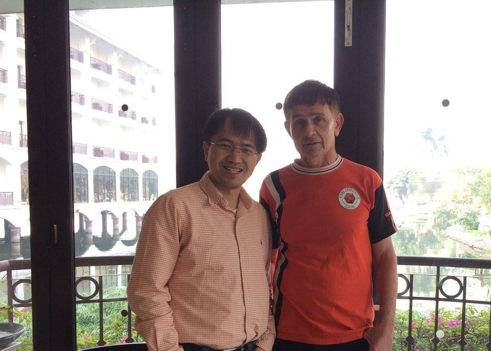
Lời cảm ơn: Chúng tôi chân thành cảm ơn Thomas Bass, Larry Berman, Christopher Goscha, Trần Kim Phượng, Merle Pribbenow và Brian Snow về những nghiên cứu và thông tin hữu ích, và Ann Hibner Koblitz và Alfred Menezes đã cùng hỗ trợ biên tập. Tất nhiên, các quan điểm được nêu ra và bất kỳ lỗi nào đều là trách nhiệm của các tác giả.
Chú thích
- Bài viết này là bản mở rộng hơn rất nhiều của bài phát biểu mời của Neal Koblitz tại Hội nghị quốc tế thường niên về Lý thuyết và Ứng dụng của Mật mã học và Bảo mật thông tin năm 2016 (Asiacrypt 2016) diễn ra tại Hà Nội. ↩
- Pribbenow (2016a) đã nói điều này một cách trực tiếp; các nguồn khác nhau của NSA (Johnson 1995, Hanyok 2002, NSA 2007, Borrmann et al. 2013), trong khi miêu tả những thành công của tình báo Mỹ từ phân tích lưu lượng, định hướng thông tin, và đánh chặn những thông tin liên lạc không được mã hóa hoặc mã hóa yếu, không đề cập gì đến việc phá được mật mã cao cấp mà phía Việt Nam sử dụng cho những thông tin chiến lược. ↩
Tài liệu tham khảo chính
- Anderson, R. J. 2008. Security Engineering: A Guide to Building Dependable Distributed Systems, 2nd ed., Wiley.
- Ban Cơ Yếu. n.d. Cơ Yếu Công An Nhân Dân Biên Niên Sự Kiện (1945–1985) (Lịch sử Ban Mật mã Công An Nhân Dân, 1945–1985).
- Bass, T. A. 2009. The Spy Who Loved Us: The Vietnam War and Phạm Xuân Ẩn's Dangerous Game, Public Affairs.
- Berman, L. 2007. Perfect Spy: The Incredible Double Life of Phạm Xuân Ẩn, Smithsonian.
- Bình, N. T. 2013. Family, Friends, and Country, translated by L. Borton, Tri Thức Pub. House.
- Borrmann, D. A. et al. 2013. The History of Traffic Analysis: World War I – Vietnam, Trung tâm Lịch sử Mật mã, NSA.
- Goscha, C. 2012. Wiring decolonization: Turning technology against the colonizer during the Indochina War, 1945–1954, Comparative Studies in Society and History, 54 (4): 798–831.
- Hanyok, R. J. 2002. Spartans in Darkness: American SIGINT and the Indochina War, 1945–1975, NSA.
- Hersh, S. 1983. The Price of Power: Kissinger in the Nixon White House, Summit Books.
- Johnson, T. R. 1995. American Cryptology during the Cold War, 1945–1989; Book II, NSA.
- Koblitz, N. 1979. A mathematical visit to Hanoi, The Mathematical Intelligencer, 2 (1): 38–42.
- Myer, C. R. 1989. Viet Cong SIGINT and U.S. Army COMSEC in Vietnam, Cryptologia, 13 (2): 143–150.
- NSA và Trung tâm Lịch sử Mật Mã. 2014. Essential Matters: History of the Cryptographic Branch of the People's Army of Vietnam 1945–1975. Dịch từ bản của chính phủ Việt Nam năm 1990.
- National Security Agency. 2007. Vietnam: A SIGINT paradox (Part I). Được giải mật và công bố ngày 27/02/2007.
- Pribbenow, M. L. 2014. The Soviet-Vietnamese Intelligence Relationship during the Vietnam War: Cooperation and Conflict, Woodrow Wilson International Center for Scholars, Cold War International History Project Working Paper #73.
Tản mã
Flirting Cipher – mã hoá bằng ánh mắt
Một chiều thu, anh chàng nghiên cứu sinh mật mã H đi dạo cùng cô sinh viên khoa văn trường Sorbonne M trong vườn hoa Luxembourg. Ánh mắt mơ màng, H lơ đãng hỏi: Dấu vân tay đặc trưng cho mỗi con người. Tại sao không thể lấy ánh mắt để đặc trưng cho con người ta? Sao trên chứng minh thư có dấu vân tay mà không phải là một cái nhìn em nhỉ?
Ô hay, M tròn mắt: nhưng tại sao đã có dấu vân tay, lại phải lấy ánh mắt làm gì anh?
H tung cái nhìn đắc thắng nhưng chứa đôi chút bí hiểm: đơn giản là bởi, mắt ta có thể đọc, còn tay ta chỉ có thể sờ… Và do thế, nếu mã hóa bằng ánh mắt, ta có thể giải mã bằng chính ánh mắt của ta mà không cần thông qua bất kể chiếc máy giải mã nào. Ánh mắt ta là duy nhất, và vì thế chỉ có mình ta mới giải mã được. Đó sẽ là một mã an toàn tuyệt đối.
Văng vẳng tiếng H tiếp tục thao thao trong khu vườn: Không có gì là không có thể. Trước khi con người làm ra máy phát hiện nói dối, cái máy này chỉ như là một câu chuyện cổ tích…
— — —
Cuộc đối thoại đó đã diễn ra cách đây 6 năm rồi. Chiếc máy đầu tiên bằng ánh mắt, H đã có ý tưởng còn trước đó nữa kia, từ ngày đầu gặp M bên bờ sông Seine, khi ánh mắt anh bất chợt gặp ánh mắt M. H biết, chỉ mình hắn mới hiểu ánh nhìn đó của nàng (dù hiểu sai đi nữa, mà có khi tưởng bở nên mới có những ngày đẹp đẽ phía sau). Lúc đó H hiểu sẽ sáng tạo ra chiếc máy mã bằng ánh mắt. Và khi dường như lơ đãng nói với M ý tưởng đó trong khu vườn Luxembourg, là thực ra chiếc máy đó H đã làm ra trong phòng thí nghiệm.
— — —
10 năm sau buổi chiều Luxembourg, cũng bên bờ sông Seine, sau 10 năm thử thách, chiếc máy mã bằng ánh mắt đầu tiên mang tên Flirting Cipher của H đã được Paris triển lãm như một đột phá của kỹ thuật và nghệ thuật mã hoá. H đã không đăng ký bằng sáng chế chiếc máy này, bởi hắn muốn nó được tự do sử dụng, như chính ý nghĩa ra đời của nó, từ ánh mắt không giới hạn. Chiếc máy Flirting Cipher cũng chính là «chiếc nhẫn cầu hôn» mà H đã tặng M, người đang đứng xa xa phía dưới kia, kẻ đang tung cho H một ánh nhìn… không thể giải mã hết.
Trên sân khấu, H thao thao bất tuyệt:
Chúng ta sẽ không còn cần phải lo sợ chuyện bản quyền tác giả, chúng ta sẽ không còn phải lo sách sẽ bị copy. Bởi lẽ, mỗi cuốn sách sẽ bị mã hóa bởi chính ánh nhìn của người đọc.
Tôi vào một hiệu sách và tôi chọn một cuốn sách. Tôi ra quầy trả tiền như thông lệ. Đến đây, tôi liếc nhìn cô bán hàng (hệ mã của tôi áp dụng tốt với những cửa hàng có các cô bán hàng xinh xắn, nhưng nó cũng áp dụng được với những cửa hàng… trang bị bộ cảm ứng phân tích sóng đặc trưng của ánh nhìn), và chỉ khi đó, cuốn sách mới được xuất bản cho tôi.
Cái liếc nhìn của tôi chính là chìa khóa, chính là cái đặc trưng của riêng tôi. Chìa khóa đó sẽ được dùng để mã hóa cuốn sách và một khi nó được mã hóa bởi ánh mắt tôi, chỉ cần tôi nhìn vào hàng chữ trên cuốn sách, những hàng chữ mã đó kết hợp với ánh mắt tôi sẽ tự động hiện lên rõ ràng như thể là nó chưa từng được mã hóa.
Ánh nhìn của tôi khác của bạn, và do thế mà khi bạn đọc cuốn sách của tôi, những hàng chữ sẽ mãi loằng ngoằng trong đầu óc bạn mà thôi.
Tất nhiên chúng tôi có thể cùng đi mua một cuốn sách, khi đó chúng tôi sẽ nhìn nhau và ánh mắt hòa hợp đó sẽ được dùng làm khóa và chỉ có hai chúng tôi là đọc được.
Và tất nhiên chúng ta có thể viết thư mật cho nhau bằng chìa khóa của ánh mắt chung. Khi đó bố mẹ có giỏi cũng chỉ như hiểu chúng ta nói chuyện giun chuyện dế. Ôi, thể nào chính tôi cũng sẽ bị mấy đứa con nó chơi xỏ mình cho mà xem.
Tất nhiên, tất nhiên, tất nhiên…
— — —
Xa xa phía dưới sân khấu, cô sinh viên khoa văn M ngày nọ, đang tiết lộ một bí mật nay mới được giải mã: thực ra hồi đó, H đã định sáng tạo ra một chiếc máy khác, nơi có thể gửi những suy nghĩ tức thì của H cho tôi, nhưng chính tôi đã ngăn cản ý định đó của H vì nó… bậy quá, và vì thế mà H chỉ dám làm ra chiếc máy Flirting Cipher để tặng tôi thôi.
Intermezzo Cipher
Nhân dịp khắp nơi biểu tình, mình quyết định cho học sinh nghỉ học ngày hôm nay. Thế là tối qua hai vợ chồng thảnh thơi xem lại phim cổ Intermezzo rất là lý thú :) Sáng ra không phải đi dạy nên ngứa ngày làm mục tản mã (kiểu tản văn, tản toán lung tung ấy mà). Không biết có nhiều bài không, nhưng bài đầu tiên là về Intermezzo Cipher, hệ mã sẽ xuất hiện trong 10 năm nữa :D
(Thông tin trong bài viết không đảm bảo có độ chính xác cao)
Hiện nay các nhà nghiên cứu mật mã luôn cố gắng xây dựng các hệ mã và làm sao để nó càng an toàn càng tốt. Rất hay nhưng rõ ràng càng xây được hệ mã an toàn thì ta càng chủ quan là đối thủ không tấn công được hệ mã của ta, và đó là một sự nguy hiểm khôn lường! Ta hãy nhìn lại lịch sử để xem điều đó nguy hiểm đến thế nào.
Enigma [1] là hệ mã nổi tiếng nhất trong lịch sử. Nó được quân đội Đức sử dụng trong thế chiến thứ 2 và luôn được tin tưởng là rất an toàn, kể cả sau khi chiến tranh kết thúc! Không ngờ tới tận hơn 25 năm sau khi thế chiến lần 2 kết thúc, thế giới mới bàng hoàng trước tin mã Enigma đã bị quân đồng minh phá ngay từ trong chiến tranh (trong đó Alan Turing, cụ tổ của mô hình máy tính hiện tại, đóng vai trò lớn trong việc phá mã). David Kahn [2], nhà nghiên cứu sử nổi tiếng thế giới, trong bài phát biểu nghiên cứu của mình (tại Paris 8, mình ngồi nghe thích thú), đánh giá rằng việc quân đồng minh giữ được bí mật việc phá mã Enigma đã làm thời gian kết thúc chiến tranh rút gọn được cỡ 2 năm!
Thật khó tin khi quân Đức dùng một hệ mã đã bị phá suốt một thời kỳ mà không biết nó đã bị phá, thật không ngờ quân đồng minh đã phá được mã quân Đức mà không bị lộ. Thật kỳ lạ là suốt một phần tư thế kỷ sau chiến tranh, dân chúng không hề biết gì về điều đó!
Thí dụ thứ 2 là về trận chiến Midway [3], ngộ nghĩnh hơn nhưng tầm ảnh hưởng tất nhiên bé hơn.
Năm 42, sau trận Pearl Harbor (năm 41) trên đảo Hawaii nơi quân Nhật bất ngờ tấn công làm quân Mỹ đang say sưa rượu ngon gái đẹp phải thảm bại, quân Nhật lại định tấn công chớp nhoáng các chú Mỹ một lần nữa. Quân Nhật rất tự tin vì nắm được khá nhiều thông tin bí mật của Mỹ, do đã phá được hoàn toàn hệ mã của hội Mỹ. Trong khi đó quân Mỹ cũng biết được phần nào kế hoạch là Nhật sẽ tấn công bất ngờ vì đã phá được gần hết hệ mã của hội Nhật. Phần các chú Mỹ chưa phá được là mã các địa danh. Như vậy, đáng lý ra quân Nhật phải có lợi hơn quân Mỹ dựa trên độ an toàn của hệ mã. Điểm khác biệt là trong khi tình báo Mỹ phát hiện ra rằng quân Nhật đã phá được hệ mã của mình thì các chú Nhật vẫn tự tin không biết rằng quân Mỹ đã phá được gần hết hệ mã của mình. Quân Mỹ ngu nên dùng một hệ mã bị phá hoàn toàn, quân Nhật hơi ngu khi dùng một hệ mã bị phá gần hết. Nhưng quân Mỹ biết là quân Nhật biết mình ngu, còn quân Nhật thì lại không biết là quân Mỹ biết mình hơi ngu. Vì thế mà rồi mới có câu "tao ngu nhưng tao biết là mày biết tao ngu" thì vẫn hơn là "tao hơi ngu mà tao lại không biết là mày biết tao hơi ngu".
Quân Mỹ đã giải được một bản mã của quân Nhật, đại loại là "Tờ mờ sáng ngày kia, trong khi bọn nó còn say giấc, tất cả tấn công tổng lực vào CHUOI". Ở đây CHUOI là một từ mã địa danh mà quân Mỹ chưa giải được. Quân Mỹ biết sẽ bị quân Nhật tấn công nhưng bối rối không biết sẽ phải dồn quân về đâu để phòng thủ. Một trong 2 điểm nghi ngờ nhất chính là Midway. Làm sao để kiểm tra liệu có phải các chú Nhật sẽ tấn công vào Midway? Một tên kỹ sư Mỹ đã nghĩ ra cách sẽ báo một thông tin quan trọng liên quan đến Midway để quân Nhật quan tâm. Các chú Mỹ gửi cho nhau thông điệp mã hóa "Cần trợ giúp khẩn cấp, ở Midway không còn chút nước sạch nào hết". Y như rằng chỉ vài tiếng sau, quân Mỹ giải mã được một thông điệp của Nhật kiểu "Cần có một tàu mang nước sạch trong cuộc tấn công vào CHUOI". Quân Mỹ tuy không giải mã được địa danh nhưng hoàn toàn yên tâm CHUOI chính là Midway, nhờ đó chuẩn bị sẵn kế hoạch nghênh tiếp quân Nhật và đánh tan kế hoạch của Nhật.
Những thí dụ trên cho thấy một hệ mã tốt không chỉ là một hệ mã an toàn mà còn cần phải tự biết thời điểm nào mình không còn là an toàn nữa. Thật khó tưởng tượng một hệ mã lại tự biết được là khi nào thì mình mất tính an toàn, bởi đó thường là công việc của tình báo. Tuy vậy, Intermezzo cipher có khả năng đó. (Intermezzo dùng để nói về bước đệm chuyển giao từ một cái này sang một cái khác. Intermezzo cipher sẽ có khả năng hiểu được trạng thái chuyển giao từ an toàn sang không an toàn.)
Những kẻ tấn công mã hiện tại cần một khả năng tương tác với hệ mã để học cách phản ứng của hệ mã. Intermezzo cipher có khả năng phân biệt đâu là những bản mã tin cậy và đâu là những bản mã rởm để học cách phá nó. Intermezzo cipher sẽ gắn một con rô bốt có khả năng tự học và mô phỏng hành động của kẻ tấn công. Và ngay khi kẻ tấn công có khả năng phá mã, con rô bốt cũng sẽ phải có thể mô phỏng khả năng phá mã đó. Nói cách khác, trong hệ Intermezzo cipher có tự cài một Universal Evolutional Adversary, tức một kẻ tấn công có khả năng tiến hóa và có sức mạnh bao trùm các kẻ tấn công khác. Và do dó ngay khi có một kẻ phá được hệ mã, Universal Evolution Adversary cũng sẽ phá được và phát tín hiệu mật về trung tâm "đã bị phá". Chi tiết về cách xây dựng Universal Evolutional Adversary sẽ được nói chi tiết trong một dịp khác :)
"Intermezzo cipher được phát triển bởi Paris 8 (hé hé) và Thalès vào năm 2014, được cài đặt trên các satellites của hệ thống Galiléo năm 2016. Đến năm 2018, Intermezzo cipher tự phát hiện ra một attack của NSA [4] trong chiến dịch cạnh tranh «GPS – Galiléo». NASA dùng thông tin phá mã cho một mục đích quân sự mang tên Interlaken2018. Nhưng nhờ Universal Evolutional Adversary ẩn trong hệ mã Intermezzo cipher mà Galiléo đã điều chỉnh và làm méo hệ thống chỉ đường quân sự của GPS dẫn đến việc quân Mỹ thua bẽ bàng trong chiến dịch Interlaken2018." Đây là trích dẫn của đài VTV007 ngày 17/11 năm 2036, trong bản tin "Bí mật của trận chiến Interlaken năm 2018 đã được hé lộ". Cũng nên nhắc lại trận chiến Interlaken2018 không phải là một cuộc chiến tranh cổ điển với súng ống và tên lửa, đó là mở màn cho một loạt chiến tranh phi vật thể sẽ được mô tả kỹ hơn trong một dịp khác :)
Ngoài lề: Với những sự kiện trên, không ai ngạc nhiên với bản tin vẫn của VTV007 phát đi ngày 17/11 năm 2048 mang tựa đề "bí mật về việc Cam pu chia trở thành cường quốc thế giới được hé lộ". Theo đó, ngay vào năm 2006 (chính xác là ngày 17/11), phòng nghiên cứu thí nghiệm CamTimes (tương đương với VieTimes ở VN) của viện hạt nhân CPC đã chế tạo ra máy tính lượng tử đầu tiên. Tuy nhiên, học tập kinh nghiệm của lịch sử, việc chế tạo này không được công bố mà được giữ bí mật tuyệt đối. Chính do thế mà CPC đã có khả năng dùng máy lượng tử để phá mã dễ dàng toàn bộ các hệ mã, hiểu được từ chiến lược kinh tế, quân sự toàn cầu; sử dụng nó cho việc thao túng hệ thống chứng khoán thế giới cho đến việc nhẹ nhàng rút ruột mỗi thẻ tín dụng trên thế giới vài đô la lẻ cho ngân sách giáo dục đào tạo nhân cách con người.
(Như vậy hiện chúng ta đã sống dưới sự tồn tại của máy tính lượng tử được 1 năm rồi. Nhưng không nên hoang mang, cái máy tính này chẳng phải gì là con ngáo ộp, nó chỉ hữu hiệu để phá một số loại hệ mã như RSA mà thôi, đơn giản là chỉ cần thay RSA bằng một phiên bản khác hoặc ứ dùng nó nữa là được…)
Chú thích
- Enigma: Wikipedia – Enigma machine
- David Kahn: Wikipedia – David Kahn
- Battle of Midway: Wikipedia – Battle of Midway · Phim Midway: Wikipedia
- NSA: Wikipedia – NSA
Rùa, Bác K và Pi
Nghe nói hồ Hoàn Kiếm có hình tròn xoe bán kính R mét, vì ở đó có một chú thần Rùa.
Bác K nghe đâu đang gấp rút cho ra tờ báo Toán, nhưng vốn lười nên muốn dùng trí khôn để gỡ gạc thời gian. Rõ là chỉ có thần Rùa là hợp với phần bù của mình hơn cả, nên ngày cuối năm bác K đến thỉnh giáo Rùa: có cách nào làm nhanh được không?
Rùa bảo: Bác K không cần làm gì đâu, chỉ cần tập chạy cho khoẻ, nếu chạy 1 ngày mà hết vòng hồ Hoàn Kiếm thì tự khắc tờ báo sẽ hiện ra.
Bác K bảo: tôi đại lãn, nhưng kể ra cố tập chạy thì cũng đỡ hơn là cặm cụi ngày đêm. Nhưng hôm nay tất niên tôi đã thử rồi, chạy cả ngày chỉ được có R mét thôi. Sức thế, sao chạy được cả vòng hồ? Rùa chơi khó quá.
Rùa chỉ đợi có thế liền rút ngay ra thanh bảo kiếm trao cho bác K rồi nói: bác cầm thanh kiếm này, từ mai sang năm 2017 rồi, mỗi hôm bác sẽ chạy nhanh thêm 20.17% so với hôm trước. Bác cứ cố tập, khi nào thành chánh quả ra đời Pi thì hoàn lại kiếm cho tôi.
Bác K nghe nói rất thích, cảm ơn Rùa. Đúng ngày Tết đầu năm, bác rủ vợ lững thững đi bộ, y như rằng đi được 1.2017R mét.
Bác K khôn lắm, nghĩ: đằng nào mỗi ngày mình cũng được thần cho chạy nhanh lên 20.17%, tội gì tập luyện, nghỉ ngơi cho khoẻ.
Y như rằng đến ngày thứ X [1], bác rủ vợ đi dạo, hai vợ chồng bác dắt nhau đi lững thững, đến 23h59 giờ đêm vẫn chưa đi hết vòng hồ, bác K lo lắng lắm. Nhưng bác tin vào tài tính nhẩm của mình nên cũng chẳng thèm tăng tốc, quả không ngờ, đến đúng giây thứ 59 thì hai vợ chồng bác bước tròn đúng 1 vòng hồ [2]! Bỗng đúng lúc, tờ báo Pi nóng hổi rơi xuống tay hai bác từ trên Dream Tree (chắc do Dream Team gì đó trồng trộm).
Rùa hiện lên đón chào hoan hô, hai bác trả lại thanh bảo kiếm và khuyến mại thêm cho Rùa tờ báo Pi để tăng thêm trí khôn.
Chú thích
- Tất nhiên X là 10, tức ngày 10/1/2017 vì như câu châm ngôn mới có "Phải học con rùa, đi chậm nhưng luôn đúng hẹn." (dù Rùa không biết bác K hẹn hôm nào ra báo)
- Bác K (tên tắt của bác Ha Huy Khoai) rất là hên, vì Rùa thích làm tròn, cắt đuôi Pi còn 3.14 nên 1.201710 bằng đúng 2 lần Pi. Không tin bác tính thử mà xem.
Giải mã khởi nguyên châu Âu theo lịch vua Hùng
(Chú ý: các dữ kiện lịch sử là chính xác, chỉ có lời diễn đạt là tưởng tượng)
Đảo Crète - nơi chuyển giao giữa thế giới thánh thần và nền văn minh đầu tiên của châu Âu. Tại đây, thần Dớt bắt trộm nàng Europe rồi sinh ra vua Minos để khởi đầu cho nền văn minh Minos (Minoan civilization).
Chuyện kể rằng, vào thời vua Hùng Vương thứ 2, tức khoảng thế kỷ 27 trước khi chúa Jesus ra đời, nước Văn Lang yên bình, vua Hùng đưa công chúa cưỡi rồng dạo chơi khắp thế gian. Đang bay đi đâu không biết thì vua Hùng gặp thần Dớt. Thần Dớt thấy công chúa xinh liền mân mê hỏi chuyện vua Hùng. Vua Hùng kể rằng, từ khi nước Văn Lang ra đời, ở xứ ta cây cối xanh tươi, nước non hiền hoà, con người hạnh phúc, chàng trai nào cũng đẹp, cô gái nào cũng xinh. Nói đoạn ông mời thần Dớt bay tới nhìn xuống nước Văn Lang yên bình.
Thần Dớt mê lắm, ông quyết cũng phải tạo nên một nền văn minh rực rỡ cho con người ở thế giới Hy Lạp, nơi mới chỉ có thế giới thánh thần là được tổ chức tốt, do có ông lãnh đạo.
Và thế là sau đó, chuyện gì xảy ra mọi người đều đã biết, thần Dớt lang thang đến bãi biển ngắm các tiên nữ và liền say đắm nàng Europe. Do bí ý tưởng nên ông biến thành một chú bò đến cuỗm nàng bay đi vào một hang của đảo Crète. Không biết chuyện gì xảy ra nhưng họ sinh được 3 người con, một trong số đó là vua Minos đầu tiên.
Tuy khởi đầu sau các vua Hùng, nhưng nền văn minh trị vì bởi các vua Minos phát triển nhanh chóng. Trong lúc vua Hùng Vương thứ 6 phải nhờ cậy Thánh Gióng đánh giặc Ân thì ở cùng thời điểm đó, các vị vua Minos đã từ bỏ các vị thánh thần mà xây được những lâu đài bề thế ở vùng Heraklion trên đảo Crète. Những di sản đó vẫn còn! Nếu đến thăm lâu đài của các vua Minos, bạn sẽ choáng ngợp trước các di sản còn để lại tới ngày nay, những di tích còn nhiều dấu ấn từ những năm 1900 đến 1450 trước công nguyên, tức tới cả nghìn rưỡi đến gần hai ngàn năm trước những di tích của đế chế La mã tại Roma.
Những vua Minos còn tạo ra nhiều hệ thống chữ viết, điển hình là hệ chữ Linear A và B trong đó hệ Linear A đến nay vẫn còn chưa giải mã được. Đi thăm bảo tàng ở Heraklion ta sẽ thấy còn nguyên những nét chữ Linear A, B trên các phiến đá. Hy vọng một ngày không xa hệ thống Linear A sẽ được giải mã và có thể ta sẽ hiểu thêm nhiều điều kỳ bí về thời kỳ đầu của các vua Minos, chẳng hạn biết đâu Thánh Gióng lại chẳng là một hoàng tử xứ Crete được châu Âu gửi sang kết hợp với vua Hùng chống giặc Ân phương Bắc, như một sự đáp lễ việc vua Hùng đã bày cho thần Dớt ý tưởng tạo ra Âu châu.
— — —
Gốc cây Gortyn - nơi chứng kiến lễ cưới giữa thần Dớt và nàng Europe.
Lần theo dấu vết của thần Dớt và nàng Europe: đến hang Matala trên bờ Địa Trung Hải nơi nàng Europe tỉnh giấc; đến dự tiệc cưới của thần Dớt và nàng Europe ở gốc cây Gortyn.
Truyện kể tiếp rằng, sau khi biến thành bò húc bắt nàng Europe trên bãi biển, thần Dớt đưa nàng về vùng Gortyn. Ngẫm lại, thần Dớt thấy mình to đầu mà dại, ai đi bắt người đẹp mà mình lại biến thành bò, làm nàng Europe kinh sợ và ngất đi. Nghĩ vậy, thần Dớt quyết đưa nàng về nơi thật đẹp, hiền hoà, và tự biến thành một chàng trai phượng hoàng trẻ đẹp. Cũng may nàng đã ngất, đến khi tỉnh giấc nàng thấy một chàng trai cường tráng và dễ mến. Sau khi biến thành chàng trai đẹp, thần Dớt bỗng thông minh đột xuất, không ngu như bò nữa, chàng bảo nàng Europe vẫn đang còn kinh sợ: "Nàng có biết chăng, một cơn gió thần đến cuỗm nàng đi trên biển, nhưng may quá ta đã mang nàng vào hang Matela đây, ta mệt quá cũng thiếp đi, trong giấc mơ hoảng hốt, ta thấy nàng là một con bò cái xấu xí hung dữ làm sao, sau khi được ta cứu thì nàng bắt cóc ta mang lên tận bắc cực, may mà đó chỉ là giấc mơ". Nàng Europe bất chợt hiểu những gì mới trải qua chỉ là một giấc mơ và mỉm cười thấy sao hai người có cùng một giấc mơ giống nhau đến kỳ lạ, nơi nàng bị một con bò khủng khiếp bắt đi.
Vì sự đồng cảm mơ mơ thực thực mà họ nhanh chóng hoà hợp và thần Dớt tiến tới đề nghị làm một lễ cưới giản dị, dưới chính gốc cây ở Gortyn. Đối với thánh thần, triệu năm cũng chỉ như trăm ngày, nên thần Dớt đề nghị tổ chức lễ cưới kéo dài vạn năm dưới trần, cũng chỉ như 1 ngày thánh thần, để các vị thần trên đỉnh Olympia còn tới dự. Lễ cưới được khai màn vào thế kỷ 27 trước công nguyên.
Hôm nay chúng ta vẫn sống trong lễ cưới đó - 4700 năm sau giờ khai cuộc, tuy lỡ mất món khai vị nhưng vừa kịp món chính :-) Vua Hùng Vương đời thứ 2 là người đến chia vui đầu tiên và đã ra về. Sau đó đến thời La mã, năm 68 trước công nguyên (tức đời Hùng Vương thứ 18 + 140 năm, hay Hai Bà Trưng - 75 năm) Quintus Caecilius Metellus Creticus đưa quân từ Roma đến đám cưới và chiếm luôn vùng Gortyn này làm kinh đô La Mã ở đảo Crete, di tích vẫn còn lại ngay đây (Quintus Caecilius Metellus Creticus mất năm 50 trước công nguyên - ngay trước thời hoàng kim của Julius Caesar, nghe đâu không dám đến dự đám cưới vì sợ siêu lòng trước nàng Europe mà làm thần Dớt nổi giận mất cả cơ đồ).
Theo các nhà tiên tri, khi lễ cưới kết thúc, tức 5000 năm nữa - vào năm 7014, cũng là lúc mã Linear A bị phá và nàng Europe đọc lại được lịch sử thủa ban đầu - khi nàng bị thần Dớt đến bắt đi. Nàng hiểu rằng, việc thần Dớt chính là con bò húc đến quắp nàng đi là sự thật chứ không phải là giấc mơ như nàng bị Dớt lừa. Trớ trêu thay, cũng nhờ giải mã Linear A, thần Dớt đọc lại được lịch sử và hiểu ra rằng, nàng Europe chính là một cô bò cái xấu xí nhưng đã biến thành công chúa Europe xinh đẹp để lừa vị thần quyền uy nhất thế giới thánh thần. Hiểu ra sự thật, cả hai đều vô cùng thán phục trí óc thông minh của nhau hơn, họ sống hạnh phúc thêm 1 tỉ năm nữa, không lừa nhau thêm mà chỉ cố lừa người kể chuyện…
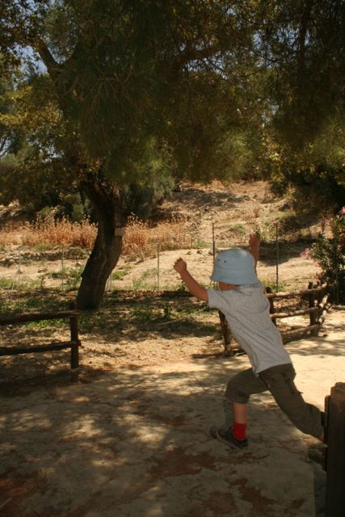
— — —
Hòn suýt đảo và Hồ tưởng không đáy!
Ét xì tăng chuyện yêu đương giữa thần Dớt và nàng Europe (sợ viết nhiều nàng Europe lại chẳng yêu Dớt nữa thì căng) để nói chuyện khoa học nghiêm chỉnh (chỉ cho lứa tuổi dưới 5).
Trong khoa học, có những khi ta có những phương pháp đạt gần tới tối ưu, xấp xỉ tối ưu bao nhiêu cũng được, nhưng không tối ưu hẳn được. Và chính cái suýt soát tối ưu đôi khi lại tạo nên cái đẹp.
Ấy trong thực tế thì sao? "Hòn suýt đảo" ở Crete gần như là một hòn đảo, ấy mà không phải là hòn đảo. Nó trông như một cánh diều bay ra biển khơi nhưng vẫn còn một chiếc đuôi rất mỏng nối với đất liền. Chính chiếc đuôi mỏng đó làm nó không đủ điều kiện trở thành một hòn đảo, và chính cái sự xấp xỉ đảo ấy làm nó nổi tiếng, chứ đảo hẳn thì thiếu gì?
Và hôm nay nhà mình đi thăm hòn suýt đảo ở Crete 🙂
Cũng trong khoa học, có những thứ người ta tin mà không chứng minh được, rồi bí quá thì cho nó là giả thuyết và sau rồi có người chứng minh là sai. Ở phía đông đảo Crete có một cái hồ như vậy. Cái hồ này sâu lắm, già trẻ nhảy xuống lặn ngụp mãi không thấy đáy nên bảo nó là cái hồ không đáy, nhiều đời không ai lặn tới đáy nên nghĩ và gọi nó là hồ không đáy. Thực tế cái hồ này chỉ sâu có 64m, tuy rất sâu so với kích cỡ của hồ nhưng so với vô cùng thì còn nhỏ nhoi lắm. Thế nhưng thế cũng đỡ tệ hơn là ông Fermat nổi tiếng lẫy lừng, ông giả thuyết rằng các số 2 mũ 2 mũ n cộng 1 đều là số nguyên tố với mọi n mà đến n=5 đã sai béng.
Hôm nay mình cũng đi thăm cả cái "hồ không đáy" này, và "suýt" dám lặn.
Champollion, Rosetta Stone và sự giải mã chữ cổ Ai Cập
Cho đến đầu thế kỷ 19, chữ cổ Ai Cập vẫn chưa được giải mã. Người ta vẫn không hiểu những dòng chữ trên các khu mộ cổ, trên những đền đài Ai Cập có ý nghĩa gì. Một bước ngoặt trong việc giải mã chữ Ai Cập cổ đến từ cuộc viễn chinh của Napoléon đến xứ sở này, nơi đội quân của ông tìm thấy tảng đá Rosetta đặc biệt – trên đó xuất hiện cùng lúc 3 hệ thống chữ viết: chữ Hy Lạp cổ đã được giải mã, và hai loại chữ Ai Cập cổ là chữ Démotique và chữ Hiéroglyphes. Rủi ro thay, quân Pháp bị quân Anh đánh bại năm 1801 tại Ai Cập và tảng đá quý đó bị quân Anh chôm mất. Nay tảng đá đó đang nằm trong British Museum ở London (tớ đã được tới thăm).
Những người nghiên cứu ở Pháp đành hài lòng với bản sao của tảng đá, nhưng chính họ lại là những người giải mã thành công hai hệ thống chữ Démotique, với công lớn của Silvestre de Sacy, và Hiéroglyphes với công to của Champollion (học trò của Sacy).
Hiéroglyphes là loại chữ cổ nhất (xuất hiện từ khoảng năm 3200 trước công nguyên) trong 4 hệ thống chữ Ai Cập cổ, và việc giải mã được nó mở ra một giai đoạn khám phá rực rỡ về Ai Cập cổ đại trong thế kỷ 19.
Điểm mấu chốt trong việc giải mã chữ Hiéroglyphes đến từ sự đặc biệt của tảng đá Rosetta: cả ba hệ thống chữ trên tảng đá đều viết về cùng một nội dung. Do chữ Hy Lạp cổ đã được giải mã từ lâu, người ta hiểu được nội dung viết gì, và từ đó đối chiếu với các ký hiệu của hệ thống Hiéroglyphes để giải mã! Đó có thể coi là khai sinh của loại tấn công Chosen Plaintext Attack hiện được nghiên cứu trong mật mã: kẻ tấn công biết nội dung của một bản mã, và cố gắng giải các bản mã khác.
Nói đơn giản như vậy nhưng quá trình giải mã chữ Hiéroglyphes của Champollion thực sự kỳ công, trải dài hơn 10 năm, có những lúc hoàn toàn bế tắc, có những khi cạnh tranh khốc liệt với đồng nghiệp và nhóm nghiên cứu khác (như nhóm của Thomas Young bên Anh), có những khi đi đến những kết luận sai lầm (lúc thì cho rằng chữ Hiéroglyphes không có nghĩa đầy đủ, khi lại đi tới nhận định nó là loại chữ alphabetic). Tất cả nén đọng, để rồi cuối cùng ông đã giải mã được hoàn chỉnh chữ Hiéroglyphes, với bất ngờ là hệ thống chữ đó bao gồm cả sự kết hợp giữa cả chữ tượng hình và chữ alphabetic.
Ngôi nhà của Champollion tại Figeac nay trở thành bảo tàng về lịch sử khám phá chữ viết, trọng tâm là quá trình giải mã chữ Hiéroglyphes. Đến Sóc cũng phải nhận xét sau trọn 1 buổi đi thăm: sao mà bảo tàng này hay thế nhỉ ☺
Vẫn còn những hệ thống chữ viết cổ, đặc biệt là hệ thống chữ Linear A, còn chưa được giải mã! Bạn nào giải mã được nó sẽ giúp thế giới có thêm nhiều khám phá về quá khứ 😉
Đồng xu cổ – Những thế giới song hành
Vào thời vua Hùng Vương thứ 13, khoảng thế kỷ thứ VII trước Công nguyên, trong khi thế giới Trung Đông vẫn mải mê với những kiệt tác như vườn treo Babylon ở Baghdad thì một nền triết học rực rỡ đã khơi mào ở thế giới Hy Lạp cổ đại. Ở đó, các đồng tiền xu cũng bắt đầu được lưu hành. Nghe đâu khoảng cùng thời gian đó, những đồng tiền xu cũng xuất hiện ở Trung Hoa cổ đại, thời Xuân Thu. Nếu đúng thế thì thật lạ lùng khi hai thế giới tách biệt cùng nghĩ ra tiền xu cùng thời...
Nền văn minh đầu tiên ở châu Âu trị vì bởi các vua Minos ra đời sau nước Văn Lang với các vua Hùng của ta. Nhưng ta tuy thế vẫn còn muộn so với thế giới. Khi thần Dớt biến thành bò đi chinh phục nàng Europe, khi Lạc Long Quân diệt Ngư Tinh cưới Âu Cơ sinh trăm trứng, thì thế giới con người Ai Cập cổ đại đã rất phát triển: Những kim tự tháp đầu tiên đã được dựng lên mà ngày nay ta vẫn còn thấy đầy bí hiểm.
Thế nhưng, từ khi nàng Europe lấy được chồng hư - là thần Dớt, các nền văn minh ở châu Âu phát triển nhanh chóng.
Vào thời vua Hùng Vương thứ 13, khoảng thế kỷ thứ VII trước Công nguyên, trong khi thế giới Trung Đông vẫn mải mê ăn chơi với những kiệt tác như vườn treo Babylon ở Baghdad thì một nền triết học rực rỡ đã khơi mào ở thế giới Hy Lạp cổ đại. Ở đó, các đồng tiền xu cũng đã bắt đầu được lưu hành. Nghe đâu khoảng cùng thời gian đó, những đồng tiền xu cũng xuất hiện ở Trung Hoa cổ đại, thời Xuân Thu. Nếu đúng thế thì thật lạ lùng khi hai thế giới tách biệt cùng nghĩ ra tiền xu cùng thời.
Đến thời vua Hùng Vương thứ 17, tức là thời Alexander đại đế - vua xứ Macedonia, những đồng xu rất đẹp đã được sử dụng. Không biết các đồng xu đẹp có liên quan gì đến các cuộc viễn chinh của Alexander đại đế hay không. Nghe đâu (các bạn đừng tin) trước mỗi trận đánh, Alexander đại đế lại tung đồng xu hên xui: Nếu trúng hình Dớt thì quyết đánh, còn rơi vào hình Europe thì tạm lui. Nhưng đồng xu thời đó không bằng phẳng, ông hay tung vào hình Dớt. Do tài năng xuất chúng, lại đánh nhiều nên thắng nhiều, khi chinh phục xong Ai Cập ông được ví như con trai của thần Dớt. Xui thay, khi sang đến Ấn Độ, ông bị hổ vồ mất đồng xu, không còn quyết định sáng suốt nữa nên thất bại.
Thời nay, một tác dụng của đồng xu cổ là để ghi lại các câu chuyện, và để chứng tỏ người kể chuyện... không hoàn toàn bịa. Trên ba đồng xu cổ mà tôi đã được tận mắt chiêm ngắm tại Bảo tàng khảo cổ học ở Chania trên đảo Crete (Hy Lạp) là những câu chuyện đầy thú vị: Thần Dớt biến thành bò bắt nàng Europe (đồng xu 27); thần Dớt đưa nàng về hang ngồi nghỉ đợi nàng thức giấc (đồng xu 28), nàng Europe dưới gốc cây ở Gortyna (đồng xu 29)...
Ăn trộm vị nghệ thuật ở Paris
(dựa trên câu chuyện có thật này)
Chị TL từ Ba Lan xa xôi vác máy ảnh sang dạo chơi cùng chị HD trên đồi Mông Mác. Đến ngày cuối, khi chân hơi mỏi, một chị để máy ảnh, một chị để túi xách sang một bên rồi cùng miên man tâm sự về những nghệ sỹ thành Ba Lê.
Khi chợt tỉnh giấc nghĩ tới mình đang ngồi trên đồi Mông Mác - nơi không chỉ là tụ điểm của gánh nghệ sỹ mọi trường phái, mà còn là hang ổ của những tay ăn trộm lành nghề, thì chiếc máy ảnh đã biến mất, không còn nằm bên chiếc túi xách.
Chị Thái Linh tối đó ra về, với buồn vui lẫn lộn, tuy mất máy ảnh nhưng thằng ăn trộm đã không thèm ngó đến cái túi xách với tất cả những gì đáng giá và quan trọng của bạn. Phải chăng, cũng có nghệ sỹ trường phái ăn trộm? Thôi thì những bức ảnh đẹp của chúng mình rơi vào tay một kẻ nghệ sỹ như thế thì cũng đỡ tiếc.
Có thật là đỡ tiếc? Câu trả lời có hậu đến chỉ sau 3 ngày...
Ngay khi hạ cánh xuống Vác ça va, chị TL bất ngờ nhận được tin nhắn với một bức tranh nghệ thuật (chuyển thể từ ảnh) và lời đề "hẹn sớm gặp lại, lần tới tôi vẫn sẽ sẵn sàng tặng bạn một bức tranh nghệ thuật khác...".
Ba ngày sau, sở cảnh sát ở Paris gọi điện đến cho chị TL, thông báo đã tìm được chiếc máy ảnh và đã bắt được tên trộm, hẹn chị đến để trả lại.
Chị TL bay lại ngay sang Paris. Khi tiếp nhận chiếc máy, bỗng nhận ra mỗi tấm hình đều đã được vẽ lại như một bức tranh nghệ thuật đầy thấu hiểu. Chị vô cùng cảm động nhưng chợt tỉnh và bật khóc khi viên cảnh sát thông báo sẽ bỏ tù khổ sai tên trộm: tên trộm đã bị tóm chính vào lúc đang mơ màng bất cẩn gửi tin nhắn với bức tranh cho chị...
Chị TL nén lòng trước mặt viên cảnh sát - chị bỗng ghét hắn, dù quả thật không hiểu sao ở Paris đến viên cảnh sát cũng đẹp trai đến vậy! Chị nhanh chóng âm thầm huy động 10k euros và nhờ một người bạn thân ở Paris đến bảo lãnh cho tên trộm nghệ sỹ khỏi ngồi tù.
Tên trộm được thả. Chị không muốn tò mò gặp tên trộm nghệ sỹ vì sợ là hắn không đẹp trai như trong tưởng tượng. Và chị thanh thản về lại Ba Lan.
Khi hạ cánh, lòng yêu đời phơi phới, lúc đang ngắm những tấm ảnh và những bức tranh đẹp, chị TL nhận được tin nhắn "cảm ơn bạn, hẹn sớm gặp lại bạn và những người bạn của bạn, tại xưởng tranh của tôi - nơi vì bạn mà tôi đã dành suốt 3 ngày để vẽ lại nó như một sở cảnh sát thực thụ. Thú thật, lần đầu tiên người nghệ sỹ như tôi lại phải hạ mình vào vai một viên cảnh sát mà chúng ta chắc hẳn cùng đồng ý là rất đáng ghét."
Đi về đâu hỡi Machinila
Lời tòa soạn: Giáo sư Phan Dương Hiệu, nhà mật mã học đã sáng tác một truyện khoa học viễn tưởng về một thế giới tương lai nơi con người chọn "nâng cấp" bằng kết nối với máy, bằng gắn chip, và cũng dễ bị các nhà độc tài dữ liệu thao túng. Tương lai ấy có lẽ là viễn tưởng, nhưng cũng có những mầm mống đầu tiên xuất hiện, từ Neuralink - con chip sơ khai đầu tiên cắm vào não người để chữa bệnh, hay những chip AI nối với mô thần kinh.
Một cậu chàng thông minh học say mê, cậu nhất quyết sống một cuộc đời thực của con người, nên khi bạn bè bắt đầu lắp những cái chip nhỏ đầu tiên vào đầu thì cậu ta từ chối, nhất nhất quan điểm: một khi đã máy hóa một chút sẽ bị phụ thuộc dần mà máy hóa toàn bộ thôi, không cưỡng được.
Ấy vậy mà rồi những đứa bạn lười học của cậu ta khi đi xin việc phỏng vấn thì qua hết, câu hỏi nào cũng giải ngon, nhiệm vụ nào cũng hoàn thành, bởi lẽ đã cài SaM-chip giải hộ (hay còn gọi là Sunim - Mus chip, dù trên truyền thông các anh đả kích nhau rất hăng, nhưng phía sau lại phối hợp phát triển AI và chip cực mạnh có thể cấy vào con người). Còn cậu chàng thông minh dù giỏi giang, nhưng sao mà đọ được với AI trên phổ rộng. Thậm chí, trước những người phỏng vấn đánh giá (thực ra cũng đã bị robot hóa) thì cậu ta trở thành kẻ ngốc nghếch đáng thương.
Cậu chỉ xin được việc trong một phòng nghiên cứu về mật mã, nơi cuộc phỏng vấn được đặt ở chế độ bảo mật cao nhất, và do đó, mọi thí sinh đều bị cắt mọi tín hiệu thông tin với bên ngoài. (Để đạt được siêu trí tuệ nhờ cắm SaM-chip, mọi người đều cần kết nối với SaM-máy chủ, do đặc điểm của các hệ AI phức tạp là thường phải phân tích dữ liệu ở quy mô rất lớn, trong khi từng con chip siêu nhỏ tách biệt chỉ có khả năng lưu trữ và xử lý dữ liệu hạn chế). Chỉ khi đó, cậu chàng mới tỏ rõ sự thông minh và hiểu biết của mình. Giáo sư +- nhận cậu làm học trò cưng. Và cậu tên là Pita.
Nhưng thế giới tương lai là thế giới được kết nối mọi lúc mọi nơi, chất lượng kết nối được các nhà mạng đảm bảo 100% với tốc độ cao, người người gắn chip siêu mỏng - một tiểu phẫu đã trở nên hết sức đơn giản, chỉ 15 phút. Lúc đầu, nhiều người tự chọn gắn chip do thích thú thấy mình thông tuệ lên, nhưng sau đó nó trở thành nhu cầu cấp thiết, không lắp chip thì chỉ có thất nghiệp, vì mọi khả năng đều kém hơn so với những đứa lắp chip.
Dần theo thời gian, giáo sư +- và các học trò của ông dường như chỉ có thể sống trong thế giới riêng của họ - Privicia. Họ vẫn cảm thấy hạnh phúc như đang sống ở những năm 2000, dù không sung túc, hiện đại như những người gắn chip đã tạo ra thế giới Machinila trù phú của năm 2050. Ở chiều ngược lại, những người ở Machinila thì coi Privicia thật là ngu ngốc: đọc sách học hành chi cho lắm, như chúng tôi đây, mọi thứ đều biết, mọi thông tin riêng gửi cho SaM-máy chủ hết và mọi quyết định tối ưu đã có SaM-chip lo, khỏi cần bận tâm.
Tất nhiên vẫn có những giao tiếp giữa Privicia và Machinila. Mila là một cô gái dễ thương trong thế giới Machinila, chính vậy mà nàng cũng quý và chơi với Pita. Tuy Pita không thể thông tuệ bằng nàng, nhưng đôi khi Pita cũng có những ý tưởng bất ngờ làm nàng phải cập nhật cho SaM-máy chủ. Hay nói đúng hơn, chủ soái SaM vẫn cần phải lập trình cho các tín đồ của mình chơi với Privicia để tiếp tục cập nhật mọi bí ẩn (có lẽ là vô hạn) của con người cho hoàn thiện hệ thống AI của Machilina. Tất nhiên sẽ có lúc nếu AI quyết định đã học hết thì rất có thể Privicia cứng đầu là một trở ngại và phải lựa chọn: hoặc cài chip hoặc chấm hết. Nhưng giờ còn chưa phải khi đó.
Một ngày nọ, trong khi đang giảng giải một cách đầy thông tuệ cho chàng Pita những chỗ chàng chưa hiểu từ bài giảng của giáo sư +-, nàng Mila của Machinila mắt đang sáng long lanh bỗng lờ đờ, đầu lắc lắc. Pita lo lắng hỏi, nàng Mila lắp bắp: Đợi mình chút, từ hôm qua chủ soái Sam đặt chế độ quảng cáo 15 phút mỗi ngày, trong 15 phút này mình sẽ chẳng có gì để nói với bạn.
Do ngượng ngùng về sự ngu dốt trong 15 phút đó với Pita mà Mila về nhà đòi bố mẹ mua cho gói thuê bao đặc biệt để không còn bị quảng cáo ngắt quãng. Và cả ngày hôm sau đó, nàng lại thông tuệ nói về mọi chủ đề mà Pita đã tự luyện cùng thầy +-.
Nhưng rồi mô hình của SaM ngày càng lớn nên chủ soái - dù khởi điểm là một người thực tâm phát triển AI với đầy đủ những suy nghĩ về đạo đức - buộc phải tăng giá thuê bao. Nhiều gia đình không kham nổi thì thời lượng quảng cáo lại càng phải tăng dần lên. Bản miễn phí cứ 1h lại ngắt 10 phút, hay nói đúng hơn sống 1h thông tuệ thì lại có 10 phút ngu như bò.
Tình hình ngày càng trở nên khó khăn khi năng lượng để chạy cho thế giới Machinila - ngày càng đông - trở nên đắt đỏ. Một số nguyên lão của Machinila bắt đầu phản ứng và có nguy cơ lập thành một đội quân để biểu tình. Đứng trước nguy cơ đó, không có cách nào khác, chủ soái SaM phải thay đổi mã thuật toán để cho những người này "ngu đi", yêu quý mình hơn và nhụt ý chí biểu tình. Một công đôi việc, tìm câu trả lời thông minh tối ưu nhất mới khó, chứ tìm cách ngu đi thì khó gì, còn đỡ tốn năng lượng.
Dần dần, SaM cũng cảm thấy thích thú vì cứ ai định phản đối mình thì chỉ cần cho trợ lý Robot thay đổi chút mã trong SaM-chip là người đó trở nên yêu mến mình. Dễ quá nhỉ, SaM dần được yêu hơn và cũng mê muội trong sự yêu mến đó. Dần dần, Machinila trở nên một thế giới tôn sùng SaM khiến SaM ngày càng kiêu căng hơn, và chẳng mấy chốc trở thành một nhà độc tài, coi Machinila là lãnh địa của riêng mình. Để chống mọi mầm mống của sự bất tôn sùng, cuối cùng các SaM-chip được lập trình để mọi con chiên đều trở nên dễ bảo.
Tất cả quá trình đó không qua khỏi mắt của những người trong thế giới Privicia. Với trình độ bảo mật cao, họ đã cắt đứt khỏi những sóng của SaM để củng cố một lãnh địa khác, và giờ đây họ thực sự lo lắng cho những con chiên ngu ngốc của thế giới Machinila. Pita, với trái tim nóng bỏng, đã đem lòng yêu mến nhớ nhung Mila, dù cho nàng giờ đây ngơ ngơ, có gặp khéo cũng còn chẳng nhớ chàng là ai. Pita quyết cứu nàng khỏi sự mê muội. Và Pita trở thành một hacker.
Pita đã theo dõi những bước đi của Mila và rồi một lần khi Mila dạo phố, chàng đã ngắt mọi tín hiệu xung quanh Mila, chàng đã hack thành công và truy nhập vào được hệ thống của nàng và vô hiệu hóa nó. Sau một phút bần thần, bản năng con người trong Mila dần sống dậy và nàng nắm chặt lấy tay của Pita, nói rằng đã rất lâu rồi bàn tay nàng mới được run lên thế này, mắt của nàng mới có giọt lệ rơi, và tai của nàng mới nghe được tiếng gió rít.
Mila khẩn cầu Pita hãy cứu nàng, hãy cho nàng được sống thật con người dù có phải nghèo khổ, nàng sẽ cố học lại và sẽ không quá ngu để có thể hiểu chàng. Nhưng Mila khi tỉnh hơn thì cũng tình hơn, nàng nghĩ đến bố mẹ và những người thân, những người khác trong thế giới Machinila và cầu khẩn Pita hãy cứu họ, họ đang ngu dần mà không biết điều đó.
Pita cuối cùng đã tìm ra một lỗ hổng, anh kích hoạt lại SaM-chip trong Mila, nhưng lợi dụng kênh nối đó với SaM-máy chủ mà đã phát ra được một loại broadcast-virus xâm nhập vào hệ thống SaM-máy chủ và broadcast (quảng bá) toàn bộ thuật toán vận hành của soái SaM cho mọi thành viên của Machinila để tất cả họ hiểu rằng đấng cứu thế mà lâu nay họ tôn sùng hóa ra là một kẻ độc tài dùng thuật toán ngu dân cai trị. Mã của Pita đồng thời làm tê liệt hệ điều hành của soái SaM và cũng cho mỗi thành viên của Machinila quyền lựa chọn: vô hiệu hóa, từ bỏ chip hoặc tiếp tục. Một cách hiển nhiên, đại đa số đã hiểu ra điều đơn giản để lựa chọn từ bỏ vĩnh viễn cuộc đời ảo vọng với cái chip trong đầu, cùng mọi lời hứa hão về một thiên đường lừa dối!
Chuyện kể năm 2063: Giải mật "Mã HuM"
4/1/2063 - Chương trình truyền hình trực tiếp của đài Pimagine hôm nay sẽ tiết lộ cho các bạn bí ẩn lớn nhất của thế kỷ này. Trước hết chúng ta hãy nhắc lại một sự kiện lịch sử, cách đây đã 36 năm, ngày 1/4/2027, trong làn sóng AI bùng nổ thay thế con người, theo dõi con người, điều khiển con người, cả thế giới bỗng bất ngờ với một "Hiệp định AI vì con người - AI for Humanity" mà chính phủ và các hãng công nghệ cao trên toàn thế giới cùng đưa ra. Từ đó các chính phủ cam kết đặt bảo vệ quyền riêng tư, sự tự do của cá nhân con người lên trước hết, các tập đoàn công nghệ cam kết đặt lợi ích nhân loại và thiên nhiên lên cao hết. Nhờ đó mà ngày hôm nay chúng ta đang được ở một thế giới xanh, tự do, hòa bình, bình đẳng và không còn có vùng đất nghèo trên địa cầu.
Vậy nhưng, các bạn sẽ hiểu, nếu chỉ chậm đi 1 ngày thôi trong việc đưa chương trình hành động "AI vì con người", thế giới có thể đã hoàn toàn khác - một miền đất hoang vu vắng bóng sự sống, không con người, cũng không máy móc.
Cuộc phỏng vấn độc quyền sau đây giữa nhà xã hội học Mila với Giáo sư +- sẽ giải mật cho thế giới thấy câu chuyện đằng sau cuộc giải cứu loài người vào năm 2027.
Mila (ML): Là người tham gia vào soạn thảo Hiệp định lịch sử đó, ông có thể kể về bí mật đã cứu sống loài người được không?
GS +-: Trước khi nói về bí mật, chị cần nhớ một điều, đó là vào năm 2027, loài người gần như đã chấp nhận một kịch bản.
ML: Kịch bản gì?
+-: Xu hướng không thể cưỡng, AI sẽ được tích hợp vào con người, dần dần chiếm phần nhiều và cuối cùng là lấn át con người, con người mất dần bản tính và trở thành robot lúc nào không hay.
ML: Và nếu như xu hướng đó thắng thế...
+-: Thì chúng ta không có ngày hôm nay nói chuyện với nhau, với tư cách 2 con người.
ML: Vậy điều gì đã khiến điều đó không xảy ra?
+-: Là một người với biệt danh HuM, người phá vỡ "Bí mật AI". Là "Bản danh sách Cyb của HuM", thứ khiến nhận ra... con người có thể đã không còn hoàn toàn là con người nữa. Chúng ta mất quyền kiểm soát chính mình. Thế giới đã bị CyB - một nhóm đã nửa người nửa máy (cyborg) với năng lực ngày càng siêu phàm điều khiển. Nhưng điều bất ngờ HuM mang đến cho CyB là đã chỉ ra: chính CyB lại có thể đi đến tự hủy hoại và thế giới hoang tàn...
Trong suốt 5 năm, HuM đã âm thầm phát triển một thuật toán phá vỡ bí mật với tên gọi Turing CyB-Test. Mấu chốt là: người đó đã thuộc vào CyB - nửa người nửa máy, nhìn ngoài giống người nhưng bên trong đã là máy. HuM gửi đi một bản danh sách được mã hóa đủ khó để không người nào đọc được trừ CyB. Khi giải mã xong, mỗi CyB đều nhìn thấy một thông điệp zero-bit (không có nội dung gì) mà chỉ thấy tên mình hiện lên trong danh sách nhận. Không chỉ thấy một mình mình... mà còn thấy 6023 CyB khác trong danh sách nhận!
Bản thân danh sách nhận là một quả bom! Ngay trong đêm hôm 10/3/2027, các thành viên trong "Bản danh sách bí mật của HuM" buộc phải làm điều chưa từng nghĩ tới - liên lạc nhau, khẩn cấp họp hội nghị toàn thể CyB, để lựa chọn: đi đến điều khiển con người hay hợp tác và tự hạn chế nằm dưới sự điều khiển của con người.
Kết quả phân tích cho thấy: chỉ cần thêm 3 tuần "tự do" nữa, các CyB sẽ đến điểm đủ mạnh để có khả năng khống chế toàn bộ con người, nhưng đồng thời khi đó sẽ rơi vào trạng thái không thể đảo ngược. Khi thoát khỏi sự điều khiển của con người, cuộc chiến sẽ tự động chuyển sang chiến tranh giữa các CyB - dẫn tới sự hủy diệt chung.
Cách duy nhất chính là cùng kiểm soát nhau để cùng nằm dưới một đối tượng yếu hơn nhưng thiết tha tồn tại hơn - tức chính là con người. Chỉ trong vòng 7 ngày, CyB nhóm họp hội nghị thượng đỉnh với những lãnh đạo quốc gia và những trí tuệ lớn nhất của con người để lập ra một quy trình "AI vì loài người". HuM cũng công bố lộ trình phát triển "AI tự kiểm soát" dựa trên mô hình Model Collapse - AI sẽ dần sụp đổ nếu "ăn" phần lớn chính dữ liệu do AI sinh ra.
May mắn lớn cho con người chính là bởi sự gặp gỡ giữa tối ưu cục bộ và tối ưu toàn cục. Đêm hôm thứ 20, một cuộc phẫu thuật lớn đã tách phần máy khỏi con người của toàn bộ nhóm CyB. Họ trở lại nguyên bản như xưa! Năm 2027 - năm con người thoát khỏi nguy cơ bị hủy diệt!
Đó là văn bản ngắn nhất lịch sử, nhưng cũng là quan trọng nhất để thay đổi thế giới: bản mã zero-bit của HuM, có nội dung "rỗng", mà bí mật chính là danh sách nhận - là tất cả CyB.
The Phantom…
Hôm qua làm chủ sò cho một buổi bảo vệ tiến sỹ hay như một vở kịch. Có lẽ kịch tính không kém gì "The Phantom of the Opera".
Liệu thế giới có đang bị điều khiển bởi một Phantom? Những gì chúng ta thấy chỉ là bề nổi, với những phát ngôn, những hành động kỳ lạ của những kẻ có khả năng điều khiển và thay đổi thế giới, của những tay tài phiệt giàu có nhất thế giới? Hoá ra tất cả chỉ là con rối cho một Phantom đằng sau hậu trường chưa ai biết mặt.
Sau đây là một tiết lộ hội thoại của Phantom với Trump, Musk và Sam cách đây đúng 1 năm - cùng ngày cùng giờ.
Phantom: Trump, ngươi đủ thông minh để hiểu, không thắng cử sẽ vào tù và đế chế gia đình sụp đổ.
Trump: phải làm sao, ta có 7 tỉ và sẵn sàng chi hết để mua phiếu.
Phantom: không ăn thua, nhưng ngươi sẽ đắc cử và nhân gấp 7 lần tài sản. Cái ngươi cần là truyền thông và AI - những thứ sẽ tạo ra một simulation world kéo vào đó trên 50% cử tri.
Trump: Musk đã sẵn chờ, hắn bảo ta không có quân bài nào, và ra giá quá cao. Hắn sẽ khống chế ta nếu ta dựa vào hắn để thắng cử.
Phantom: hãy thỏa mãn mọi điều kiện của Musk, hãy cho hắn thỏa chí tung tẩy trong Nhà Trắng khi ngươi thắng cử. Cách duy nhất kiềm chế được hắn là chỉ có Sam. Hãy hứa cho Sam ngang với những gì hứa cho Musk, chúng sẽ kiềm tỏa nhau - Musk công khai và Sam âm thầm, và ngươi sẽ đứng vững. Nếu không làm thế, ngươi sẽ chỉ là con rối trong tay 1 trong hai kẻ đó.
Trump: deal done!
Phantom vào hang, nơi có cả Musk và Sam.
Phantom: Trump sẽ thỏa mãn mọi điều kiện của bọn bay.
Musk: vâng thưa ngài, tôi hiểu là sẽ phải đóng vai đối lập với Sam. Chỉ có sự đối lập mới tạo lòng tin cho Trump.
Sam: Musk, mỗi khi anh đăng đàn chửi tôi thì chúng ta đều lên giá. Nhưng đừng làm quá, tôi không muốn là nhân vật phản diện dẫn dắt thế giới tới việc làm nô lệ cho AI. Người muốn điều đó nhất chính là anh.
Musk: Đừng chỉ trích tôi, chúng ta không có cách nào tốt hơn. Mấy năm rồi, để AI thông minh lên thì số công nhân dữ liệu làm việc khốn khổ tăng 30 lần từ 10 triệu lên 300 triệu mà không ai hay biết. Tôi sẽ giữ truyền thông, thỉnh thoảng tung Viruss và nổ Pháo, để nó có tăng ngần ấy lần cũng không ai để ý. Tuyệt đại đa số con người sẽ phải ngu đi để AI thông minh hơn. Tất nhiên tất nhiên, luôn cần có số ít hưởng lợi để luôn to mồm nói về lợi ích phổ cập của AI - phổ cập cho tới … người Mohican cuối cùng.
Sam: khi nào?
Musk: sớm thôi, ngay khi anh hoàn thiện AGI và tôi hoàn thiện kế hoạch 1001. Chúng ta sẽ cùng công bố nó trên quảng trường sao hỏa. Yes yes, sao Hỏa!
Phan-tom: yêu cầu duy nhất của ta là các anh cần mời Trump và Putin trong số 1001 kẻ thông minh nhất trái đất đó. Sao Hoả! Đó hẳn là nơi phân định lại thế giới mới.
SaM: deal done.
Có một điều bản thân Phantom cũng không thể lường trước, đó là còn một thế giới khác nữa đứng trong bóng của Phantom. Mà bóng của bóng lại chính là ngoài ánh sáng: bóng đó đang hiện diện trong thế giới thực. Phan-tom trong lời nói cuối trên kia, giúp đưa 1001 kẻ "thông minh nhất" lên Sao Hỏa khai trương thế giới mới với AGI, đã âm thầm cắt đường về. Giữ yên cho trái đất.
Nhưng liệu thế giới có đến được điểm cân bằng hay không phụ thuộc vào một cuộc chiến kỳ lạ mà chi tiết sẽ được trình chiếu vào một ngày không xa.
Không xa, ngày này giờ này - ngày Cá tháng Tư - năm sau.
+-
Mật Mã tại Việt Nam
VietCrypt 2006 – Hội nghị Mật mã quốc tế đầu tiên tại Việt Nam
(Giới thiệu và chương trình hội nghị – ghi chép từ Diễn đàn Toán học)
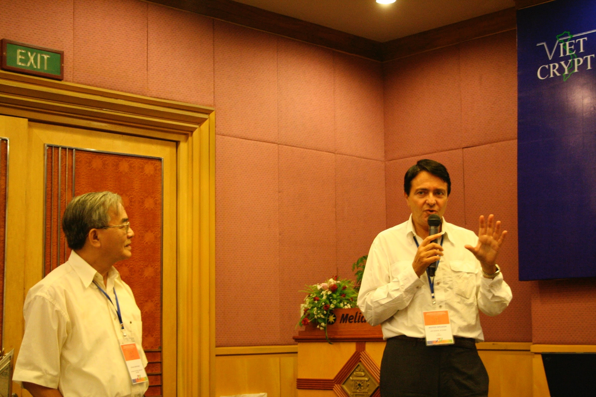
Sắp tới, một Hội nghị quốc tế về Mật mã sẽ được tổ chức tại Hà Nội. Hy vọng sẽ có nhiều bạn quan tâm đến tham dự (sinh viên có thể tham dự miễn phí tất cả các hoạt động). Nếu số lượng đại biểu ở Việt Nam tham dự đông, Hội nghị sẽ dành thêm 1 ngày trước khai mạc cho Tutorial/Survey. Do vậy, nếu các bạn có ý định tham dự hãy đăng ký sớm để ban tổ chức có thể quyết định có tổ chức Tutorial/Survey hay không.
Thông tin hội nghị
Thời gian: 25 đến 28/09/2006
Địa điểm: Khách sạn Melia – Hà Nội
General Chair: Phan Đình Diệu (Trường Đại học Quốc gia Hà Nội)
Program Chair: Nguyễn Phong Quang (École normale supérieure – Trường Sư Phạm Paris)
Organizers: Nguyễn Quốc Khánh (FPT, Chair), Phan Dương Hiệu (ENS, France), Nguyễn Duy Lân (CSIRO ICT Centre, Australia)
Đơn vị tổ chức: FPT với sự cộng tác khoa học của Viện Toán Học
Proceedings: Lecture Notes in Computer Science, Springer
Phát biểu mời
Hai bài phát biểu mời của hội nghị sẽ do hai nhà khoa học đứng đầu hai nền khoa học Mật mã mạnh của thế giới thực hiện:
Jacques Stern (Pháp, trưởng khoa Tin học của Trường Sư Phạm Paris) – bài phát biểu về Cryptography in Financial Transactions. Đây là một trong những người tạo nền móng cho sự phát triển mạnh mẽ của ngành Mật mã tại Pháp.
Tatsuaki Okamoto (Giáo sư Đại học Kyoto và NTT, Nhật Bản) – bài phát biểu về On Pairing-Based Cryptosystems. Ông là một trong những người tạo nền móng cho nền mật mã Nhật Bản, và cũng đồng thời có bài báo được chấp nhận tại chính hội nghị này (xem thêm phần danh sách bài báo).
Ngoài ra, Ban Cơ Yếu có thể sẽ trình bày về Mật mã tại Việt Nam từ trong chiến tranh đến hiện tại.
Ban chương trình và quy mô
Hội nghị tập hợp được một ban chương trình với nhiều nhà khoa học uy tín và đã thu hút được 80 bài báo gửi tới. Ban chương trình đã chọn ra 24 bài để trình bày tại hội nghị. Đặc biệt, trong ban chương trình có sự tham gia của:
- Neal Koblitz – một trong 2 người (cùng Victor Miller) đưa các nghiên cứu về đường cong Elliptic vào Mật mã
- Bart Preneel – chủ tịch chương trình Mật mã châu Âu
- Pascal Paillier – đứng đầu nhóm bảo mật của Gemplus (công ty thẻ điện tử lớn nhất thế giới)
- Hà Huy Khoái – Viện trưởng Viện Toán học Việt Nam
- Xiaoyun Wang – người năm 2005 làm náo động giới mật mã với các công trình tấn công các hàm băm SHA
Một số bài nổi bật
Tatsuaki Okamoto không chỉ là khách mời của hội nghị, ông cùng 2 đồng nghiệp sẽ trình bày về Universally Composable Identity-Based Encryption. Hướng nghiên cứu về mật mã dựa trên danh tính (không cần sử dụng PKI – hạ tầng cơ sở khóa công khai) đang rất được quan tâm.
Serge Vaudenay (trưởng nhóm nghiên cứu mật mã tại Đại học bách khoa Lausanne – đại học mạnh nhất của Thụy Sỹ về mật mã; nổi tiếng nhờ đã phá thành công hệ mã Chor-Rivest đứng vững suốt hơn 10 năm) sẽ cùng đồng tác giả trình bày nghiên cứu về Undeniable Signatures, một hệ chữ ký điện tử có đặc tính khác với hệ chữ ký thông thường: không phải ai cũng kiểm thử được chữ ký mà cần đến sự hợp tác của bản thân người ký.
Phillip Rogaway (một trong hai đồng sáng lập của hệ mã nổi tiếng OAEP đang được sử dụng như chuẩn của nhiều hệ mã) sẽ trình bày về Formalizing Human Ignorance. Các hàm băm (như SHA) không sử dụng chìa khóa và do đó không thể giả thuyết rằng không tồn tại thuật toán hiệu quả tìm đụng độ (collision). Rogaway sẽ trình bày cách hình thức hóa "sự không biết" đó của con người.
Arjen K. Lenstra (chữ L đầu tiên trong viết tắt của thuật toán LLL nổi tiếng trong algebraic number theory) cùng 2 đồng nghiệp sẽ trình bày các nghiên cứu về hàm băm VSH (Very Smooth Hash) dựa trên độ khó của bài toán logarít rời rạc.
David Pointcheval (trưởng nhóm mật mã tại trường Sư phạm Paris) cùng học trò Cécile Delerablée sẽ trình bày một nghiên cứu về Group Signature – chữ ký nhóm, trong đó một thành viên có thể ký với danh nghĩa nhóm mà không ai biết chính xác đó là ai.
Jacques Patarin (trưởng nhóm mật mã tại đại học Versailles, nhóm mật mã mạnh thứ hai tại Pháp sau trường Sư phạm Paris) nổi tiếng về những nghiên cứu về các hệ mật mã dựa trên hàm nhiều biến, sẽ trình bày về Probabilistic Multivariate Cryptography.
Các tác giả Việt Nam
Hội nghị lần này có 3 bài được nhận có sự tham gia của các tác giả Việt Nam:
- Nguyễn Duy Lân – Trung tâm nghiên cứu CSIRO ICT Centre, Úc
Efficient Dynamic k-Times Anonymous Authentication - Phan Thị Lan Anh – Trường Đại học Tokyo, Nhật Bản
Reducing the Spread of Damage of Key Exposures in Key-Insulated Encryption - Phan Dương Hiệu – University College London, Anh
Traitor Tracing for Stateful Pirate Decoders with Constant Ciphertext Rate
Đăng ký tham dự
Một trong các mục đích chính của VietCrypt là tạo ra cơ hội trao đổi, gặp gỡ giữa những người quan tâm tới mật mã trong nước và giới nghiên cứu mật mã thế giới. Hội nghị rất mong nhận được sự tham gia từ các bạn sinh viên quan tâm tới môn khoa học trẻ trung này.
Lệ phí tham dự: $400 cho đại biểu nước ngoài, 200.000 đồng cho đại biểu trong nước (bao gồm tất cả các buổi ăn trưa tại khách sạn, các hoạt động ngoại khóa và 1 cuốn pre-proceedings). Sinh viên có thể tham dự miễn phí khi chứng tỏ sự liên quan với Mật mã qua Motivation letter và/hoặc CV.
Danh sách 24 bài báo được chấp nhận
Gửi tới ngày 25/08/2006. Proceedings xuất bản trong Lecture Notes in Computer Science (Springer).
-
Efficient Dynamic k-Times Anonymous Authentication
-
A New Signature Scheme Without Random Oracles from Bilinear Pairings
-
Probabilistic Multivariate Cryptography
-
An Ideal and Robust Threshold RSA
-
Side Channel Analysis of Practical Pairing Implementations: Which Path is More Secure?
-
Compressed Jacobian Coordinates for OEF
-
Short 2-Move Undeniable Signatures
-
Improved Fast Correlation Attack on the Shrinking and Self-Shrinking Generators
-
A Weak Key Class of XTEA for a Related-Key Rectangle Attack
-
Towards Provably Secure Group Key Agreement Building on Group Theory
-
Universally Composable Identity-Based Encryption
-
On the Definition of Anonymity for Ring Signatures
-
Factoring Square-free Composite Integer by Solving Multivariate Integer Polynomial Equations
-
Scalar Multiplication on Koblitz Curves Using Double Bases
-
How to Construct Sufficient Conditions for Hash Functions
-
Deniable Group Key Agreement
-
Escrowed Linkability of Ring Signatures and its Applications
-
Traitor Tracing for Stateful Pirate Decoders with Constant Ciphertext Rate
-
Formalizing Human Ignorance (Collision-Intractable Hashing without the Keys)
-
On the Internal Structure of ALPHA-MAC
-
Searching for Compact Algorithms: CGEN
-
Discrete Logarithm Variants of VSH
-
Dynamic Fully Anonymous Short Group Signatures
-
Reducing the Spread of Damage of Key Exposures in Key-Insulated Encryption
Các bài có nền hồng là bài có tác giả Việt Nam.
Chương trình hội nghị
Theo thông tin từ Ban tổ chức, có gần 70 người đăng ký tham gia, trong đó khoảng 30 người trong nước (có gần 10 bạn sinh viên – nghiên cứu sinh).
| Giờ | Nội dung |
|---|---|
| 14:00 – 18:00 | Surveys and Tutorials |
| Giờ | Nội dung |
|---|---|
| 8:00 – 9:00 | Đăng ký |
| 9:00 – 9:10 | Khai mạc |
| 9:10 – 10:10 | Invited Talk: Tatsuaki Okamoto – On Pairing-Based Cryptosystems |
| 10:30 – 12:30 | Session 1: Public Key Encryption · Universally Composable Identity-Based Encryption (Nishimaki, Manabe, Okamoto) · Reducing the Spread of Damage of Key Exposures in Key-Insulated Encryption (Hanaoka, Phan, Hanaoka, Matsuura, Imai) · An Ideal and Robust Threshold RSA (Ghodosi, Pieprzyk) |
| 14:00 – 16:00 | Session 2: Signature Schemes · Short 2-Move Undeniable Signatures (Monnerat, Vaudenay) · A New Signature Scheme Without Random Oracles from Bilinear Pairings (Zhang, Chen, Susilo, Mu) · On the Definition of Anonymity for Ring Signatures (Ohkubo, Abe) |
| 16:20 – 18:20 | Session 3: Group Signatures and Key Agreement · Dynamic Fully Anonymous Short Group Signatures (Delerablée, Pointcheval) · Escrowed Linkability of Ring Signatures and its Applications (Chow, Susilo, Yuen) · Towards Provably Secure Group Key Agreement Building on Group Theory (Bohli, Glas, Steinwandt) |
| Giờ | Nội dung |
|---|---|
| 9:00 – 10:00 | Invited Talk: Jacques Stern – Cryptography in Financial Transactions |
| 10:20 – 12:20 | Session 4: Traitor Tracing and Multivariate Cryptography · Traitor Tracing for Stateful Pirate Decoders with Constant Ciphertext Rate (Phan) · Efficient Dynamic k-Times Anonymous Authentication (Nguyen) · Probabilistic Multivariate Cryptography (Gouget, Patarin) |
| 14:00 – 16:00 | Session 5: Hash Functions · Discrete Logarithm Variants of VSH (Lenstra, Page, Stam) · How to Construct Sufficient Conditions for Hash Functions (Sasaki, Naito, Yajima, Shimoyama, Kunihiro, Ohta) · Formalizing Human Ignorance (Rogaway) |
| 16:20 – 18:20 | Session 6: Stream Ciphers and Block Ciphers · Improved Fast Correlation Attack on the Shrinking and Self-Shrinking Generators (Jeong et al.) · A Weak Key Class of XTEA for a Related-Key Rectangle Attack (Lee et al.) · On the Internal Structure of ALPHA-MAC (Huang, Seberry, Susilo) |
| 19:30 | Tiệc hội nghị (Conference Banquet) |
| Giờ | Nội dung |
|---|---|
| 9:00 – 10:00 | Invited Talk: Ban Cơ Yếu – Mật mã tại Việt Nam từ trong chiến tranh đến hiện tại |
| 10:20 – 12:20 | Session 7: Elliptic Curves and Pairing · Side Channel Analysis of Practical Pairing Implementations (Whelan, Scott) · Compressed Jacobian Coordinates for OEF (Hoshino, Kobayashi, Aoki) · Scalar Multiplication on Koblitz Curves Using Double Bases (Avanzi, Sica) |
| 14:00 – 16:00 | Session 8: Factoring and Compact Algorithms · Factoring Square-free Composite Integer by Solving Multivariate Integer Polynomial Equations (Santoso et al.) · Searching for Compact Algorithms: CGEN (Robshaw) · Deniable Group Key Agreement (Bohli, Steinwandt) |
| 16:00 – 16:15 | Bế mạc (Closing Remarks) |
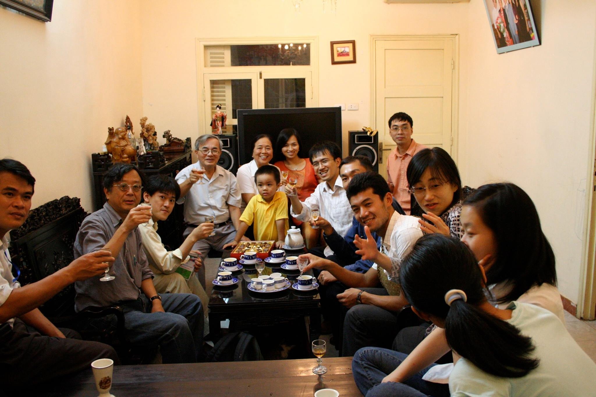
ASIACRYPT 2016 và Trường Thu Mật Mã tại Hà Nội
(Thông báo và giới thiệu hội nghị)
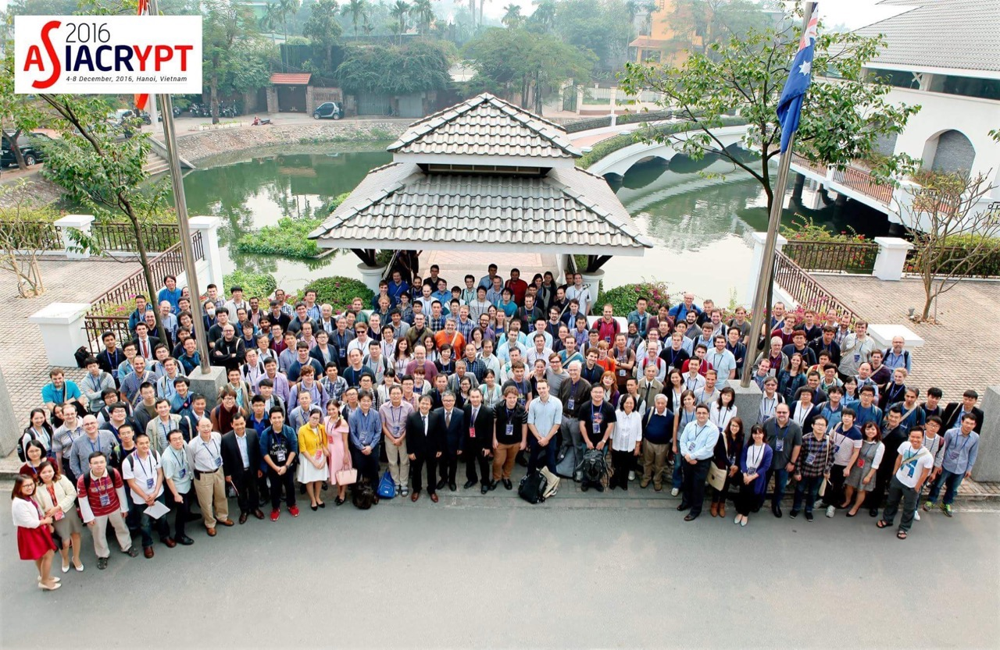
ASIACRYPT là một trong 3 hội nghị lớn nhất về mật mã trong năm. Thật hồi hộp khi ASIACRYPT sẽ được tổ chức ở Việt Nam, do VIASM và IACR (hội mật mã thế giới) phối hợp tổ chức. Sẽ có khoảng 200 nhà khoa học quốc tế tới tham dự và khoảng 60 công trình khoa học hàng đầu của khoa học mật mã sẽ được trình bày.
Hội nghị: ASIACRYPT 2016
Thời gian: 4–8/12/2016
Địa điểm: Hà Nội, Việt Nam
General Chairs: Ngô Bảo Châu (VIASM, Vietnam and University of Chicago, USA) & Phan Dương Hiệu (XLIM, University of Limoges, France)
Program Chairs: Jung Hee Cheon (Seoul National University, Korea) & Tsuyoshi Takagi (Kyushu University, Japan)
Tổ chức: VIASM và IACR (International Association for Cryptologic Research)
Trường Thu Mật Mã: VIASM Crypto School 2016 – ngay trước hội nghị
Mong muốn xa xôi là ASIACRYPT sẽ là một cơ hội để phát triển thêm một chút ngành khoa học mật mã ở Việt Nam. Sau những trao đổi với IACR, họ đồng ý sẽ hỗ trợ một phần cho người trong nước tham gia hội nghị. Chúng tôi hy vọng có thể trợ giúp để những người thực sự quan tâm sẽ không phải gặp trở ngại về tài chính trong việc tham gia.
Trường Thu Mật Mã 2016
Để việc tham gia hội nghị được hiệu quả nhất, ngay trước khi diễn ra hội nghị, một Trường Thu Mật Mã sẽ được tổ chức để trang bị kiến thức cần thiết cho những người tham gia. Trường thu do VIASM và VNU (ĐHQG Hà Nội) tổ chức, được SEAMS đồng ý hỗ trợ một phần tài chính, và nhiều khả năng cũng sẽ được IACR hỗ trợ thêm.
Tại trường thu sẽ có những bài giảng về các chủ đề nền tảng và hiện đại của khoa học mật mã. Những cao thủ trong ngành đã nhận lời đến giảng bài:
-
Neal Koblitz (Mỹ) –
Elliptic Curve Cryptography (ECC)
Một trong hai người sáng lập (độc lập với Victor Miller) nhánh mật mã dựa trên đường cong Elliptic. Ông sẽ giảng về ECC, lý thuyết và ứng dụng. -
Dan J. Bernstein (aka djb, Mỹ) –
High-speed Cryptography
Một trong những người có nhiều công trình được ứng dụng trong thực tế nhất. djb làm lý thuyết và ứng dụng đều rất ghê. (Xem thêm: blog của chuyên gia security Google Thái.) -
David Pointcheval (Pháp) –
Provable Security
Một trong những người phát triển mạnh nhất hướng xây dựng mật mã với độ an toàn được chứng minh; trưởng nhóm mật mã lớn nhất châu Âu tại ENS. - Tanja Lange (Hà Lan) – Computational Number Theory
- Phong Nguyễn (Nhật, Pháp) – Lattice-based Cryptography
Ngoài các bài giảng chuyên ngành, các kiến thức cơ bản về Toán và Tin cần thiết cho mật mã cũng sẽ được cung cấp, với sự phụ trách của anh Lê Minh Hà (VNU) và chị Phan Thị Hà Dương (Viện Toán).
Hỗ trợ tài chính
Các bạn có mong muốn tham gia Trường Thu và ASIACRYPT có thể lập kế hoạch từ bây giờ. Chúng tôi hy vọng sẽ có đủ nguồn tài chính để không những các bạn không phải đóng phí Trường Thu, mà nếu các bạn ở xa chúng tôi cũng sẽ cố gắng có hỗ trợ về đi lại và chỗ ở.
Tất cả các PhD students có bài trình bày sẽ được miễn phí hội nghị thông qua quỹ hỗ trợ sinh viên của IACR. Chúng tôi cũng sẽ cố gắng miễn phí hội nghị cho các bạn trong nước và từ các cơ sở ít điều kiện trên thế giới. Các bạn có ý định tham gia nhưng có khó khăn về tài chính có thể liên hệ theo hướng dẫn trên trang web hội nghị.
Các hoạt động khoa học mang tính liên ngành giữa Toán với Tin, giữa lý thuyết và thực hành rất cần sự tham gia hỗ trợ của các đơn vị R&D. Nếu các bạn muốn tài trợ cho các hoạt động này, xin vui lòng liên hệ với một trong chúng tôi (qua Phan Dương Hiệu, anh Châu Ngô, anh Khánh, anh Lân, hay các bạn Dũng và Hà). Hiện đã có Microsoft, Google, Cisco tham gia tài trợ.
Chương trình ASIACRYPT 2016
Asiacrypt 2016 là 1 trong 3 hội nghị lớn nhất trong năm của IACR và năm nay được tổ chức tại Hà Nội do VIASM đảm nhiệm. Chương trình năm nay được hội đồng đánh giá là hấp dẫn: từ 240 bài gửi đã chọn ra 67 bài báo để trình bày, sau quá trình lựa chọn gần 4 tháng với 2 vòng phản biện (sau vòng 1 các tác giả được phản hồi nhận xét của hội đồng).
Các trung tâm lớn đều có bài: Mỹ (Stanford, MIT, UCLA, Microsoft Research, Pennsylvania, San Diego, Santa Barbara, Brown University), Pháp (ENS, Ecole Polytechnique, ENS Lyon, INRIA, Limoges, Rennes, CEA, Orange, DGA, ANSSI), Anh (Cambridge, Oxford, Royal Holloway, University College London, Bristol), Thuỵ Sỹ (EPFL, ETH Zurich), Bỉ (UCL), Nhật (NTT, AIST), Úc (Queensland, Wollongong, Qualcomm), Singapore (NTU), Trung Quốc... Số bài từ châu Âu có vẻ áp đảo.
Điều đáng mừng là có hai tác giả Việt Nam có bài tại hội nghị: Nguyễn Tạ Toàn Khoa (NTU, Singapore) và Hoàng Việt Tùng (UC Santa Barbara, Mỹ).
Thông qua sự thoả thuận giữa IACR và Springer, tất cả các bài báo – dù được in bởi Springer – sẽ được đưa lên miễn phí trên trang ePrint của IACR muộn nhất là trước khi hội nghị khai mạc 1 tuần. Danh sách bài trình bày đã được công bố tại trang hội nghị.
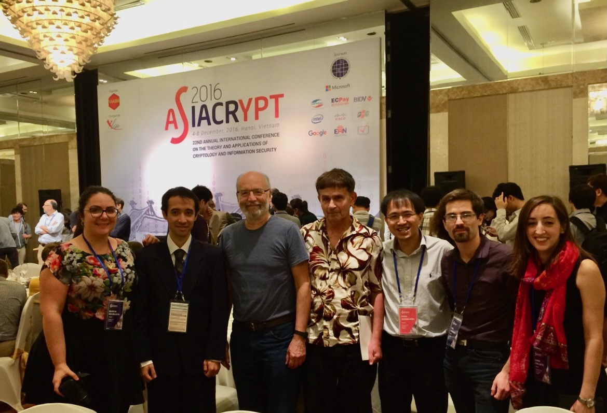
Moti Yung – soái ca của Google về Crypto/Privacy/Security sẽ tới Hà Nội hè này
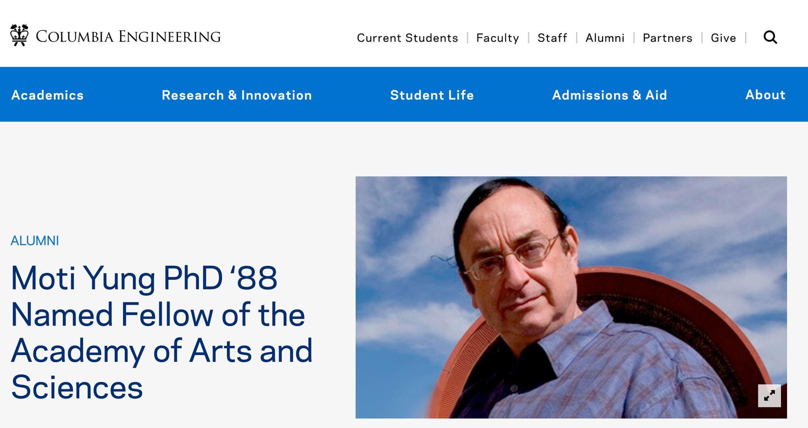
Bác Moti sẽ làm Keynote speaker cho hội nghị ACM AsiaCCS (trong khoảng 27/08–29/08) và sau đó ngày 30/8 sẽ làm một Public Lecture.
Chuỗi sự kiện Security/Crypto hè 2025
24–25/8: Ngày Crypto Trẻ (do các bạn trẻ tổ chức)
26/8: Phan Dương Hiệu trình bày tại Annual Meeting của VIASM
26/8: 8 workshops vệ tinh của AsiaCCS
27–29/8: Hội nghị chính ACM AsiaCCS 2025 – hội nghị lớn nhất về Cybersecurity được tổ chức ở châu Á. Moti Yung sẽ là một Keynote speaker.
30/8: Public Lecture kết thúc chuỗi sự kiện của bác Moti.
Chuỗi hoạt động Security/Crypto hè này sẽ rất sôi nổi.
Privacy là lợi thế cạnh tranh, không phải gánh nặng
Thế giới chúng ta đang sống biến đổi rất nhanh và những gì chúng ta thấy, cảm nhận, và nghĩ – thường là một sự đơn giản hoá đến nghèo nàn những gì diễn ra xung quanh. Chẳng hạn chúng ta nghĩ nơi nào, nước nào cứ vi phạm luật lệ mà thu thập vô lối nhiều dữ liệu cá nhân là sẽ có lợi trong cuộc đua AI. Đó là cách nhìn đơn giản triệt tiêu hoá nhiều chiều ẩn mà bản thân chúng ta chưa hiểu. Để nói về những điều này thì cách hay nhất là đưa những người đang định hình chính sách của thế giới tới và trao đổi với họ.
Bản thân bác Moti Yung cũng đã viết một bài về làm sao vừa đẩy mạnh công nghệ mà không cần thu thập thêm quá nhiều dữ liệu rõ: Google Security Blog – Helping organizations...
Tôi cũng đã nhiều lần viết rằng sự bảo vệ privacy, không thu thập vô lối dữ liệu sẽ không còn cần sự kêu gọi tự nguyện nữa, mà chính nó sẽ là điểm nhấn để tạo ra lợi thế cạnh tranh. Bảo vệ Privacy là động lực của bản thân các tổ chức công nghệ nhằm có lợi thế cạnh tranh cho chính họ.
Nhưng trăm nghe không bằng một thấy, chỉ có trao đổi và sống trong lòng sự phát triển mới quan sát được nhiều chiều hơn cả. Sự trao đổi trực tiếp với bác Moti Yung – người có tầm nhìn và có sức ảnh hưởng chính sách – là rất ý nghĩa. Bác đồng thời là thành viên của Viện Hàn Lâm Khoa học và Nghệ thuật Mỹ, đồng thời là thành viên định hướng của hầu hết các tổ chức khoa học và công nghệ lớn. Tóm tắt đôi chút về bác có thể đọc tại: Wikipedia – Moti Yung.
Bác cũng luôn là người có nhiều những công trình vào hàng Top trong lịch sử của ngành mật mã, liên tục công bố đỉnh cao từ 1984 tới nay (IACR Cryptodb), và thú vị là những gì hay nhất 5 năm vừa qua của bác là cùng làm... với mình.
Giai thoại: "Ngành này còn gì để làm nữa?"
Đầu những năm 80, khi thế giới đưa mã hoá khoá công khai vào với hệ mã RSA, bác Moti khi đó đang làm Cao học hỏi Adi Shamir (chữ S trong RSA): mã hoá khoá công khai làm được mất rồi, ngành này còn gì để làm nữa đây?
Bác Shamir trả lời: đây mới chỉ là điểm khởi đầu của cả một ngành khoa học.
Và bác Moti lao vào, quả đúng nhìn lại, đó mới chỉ là khởi đầu (nếu bạn nào không thấy thì có nghĩa góc nhìn đã bị lạc hậu 40 năm). Điều đặc biệt là năm 2016 mình cũng lôi được bác Adi Shamir (giải Turing) tới và giảng bài ở Việt Nam (VIASM, Tuổi Trẻ – Asiacrypt 2016 Hà Nội đón nhà mật mã...). Hè bác Moti tới, hy vọng đưa đến một làn sóng cảm hứng mới.
Privacy – bước khởi đầu cho một ngành khoa học
Tôi cũng ghi lại đây để 40 năm sau kiểm nghiệm: đối với tôi, Privacy hiện nay mới chỉ là bước khởi đầu cho một ngành khoa học sẽ rất có ảnh hưởng trong tương lai – trong thời đại AI và công nghệ nhăm nhe khống chế thế giới này. Cuộc chiến trên mặt trận Privacy sẽ là cuộc chiến giữ tự do của con người, như tôi cũng đã từng phân tích: GS Phan Dương Hiệu: Bảo vệ quyền riêng tư... – VUSTA.
Hẹn một mùa hè sôi động và ý nghĩa!
Bài giảng đại chúng của Adi Shamir tại Hà Nội
(Nhân dịp hội nghị Asiacrypt 2016 – VIASM, 4/12/2016)
Đăng ký tham gia bài giảng đại chúng của Adi Shamir
Thời gian: 14h, Chủ nhật ngày 4/12/2016
Địa điểm: VIASM – Viện Nghiên cứu cao cấp về Toán, Hà Nội
Đăng ký: Trang VIASM – tham gia hoàn toàn miễn phí, có tiệc trà, cần đăng ký trước.
Trường Thu Mật mã sẽ kết thúc trưa Chủ nhật ngày 4/12. Hội nghị Asiacrypt sẽ có buổi đón tiếp vào 18h tối Chủ nhật ngày 4/12. Cầu nối giữa hai hoạt động học và nghiên cứu đó là bài nói chuyện về mật mã hiện đại của Adi Shamir vào chiều ngày 4/12.
Đây là một dịp để chúng ta được tìm hiểu quá trình phát triển 40 năm của mật mã hiện đại, dẫn dắt bởi một người đã tham gia và chứng kiến toàn bộ sự hình thành và phát triển của nó.
Xin mời các bạn sinh viên, nghiên cứu sinh, những người làm nghiên cứu, hay đơn giản là những người quan tâm tới Mật mã đăng ký tham gia. Việc tham gia hoàn toàn mở, miễn phí, dự kiến có tiệc trà, nhưng cần phải đăng ký. Mong các bạn đăng ký sớm để chúng tôi có kế hoạch tổ chức được chu đáo nhất.
Adi Shamir là ai?
Adi Shamir – chữ 'S' trong hệ mã hoá khoá công khai RSA – là người khởi đầu cho nhiều hướng nghiên cứu của mật mã hiện đại.
Ngay sau khi Diffie và Hellman đưa ra khái niệm mật mã hoá khoá công khai vào năm 1976 – dấu mốc cho sự khai sinh của mật mã hiện đại – Rivest, Shamir và Adleman đã công bố một trong những hệ mã hoá khoá công khai đầu tiên vào năm 1977. Hệ mã RSA – lấy theo chữ cái tên của ba ông – hiện vẫn đang được sử dụng rộng rãi trong nhiều ứng dụng của thực tế: bảo mật trong quân đội, giao dịch ngân hàng, trao đổi email…
Mật mã hiện đại mở ra nhiều hướng nghiên cứu mới: chữ ký điện tử (đã được nhiều nước cho phép sử dụng với giá trị pháp lý ngang với chữ ký thông thường); các sơ đồ định danh… Sự ra đời của mật mã hiện đại cũng thúc đẩy sự phát triển của nhiều lĩnh vực nghiên cứu như lý thuyết số tính toán (computational number theory) vì độ an toàn của các sơ đồ như RSA dựa trên độ khó giải của các bài toán số học như phân tích số. Mật mã hiện đại, qua sự nghiên cứu tương tác giữa người bảo vệ an toàn và kẻ tấn công, cũng làm nảy sinh những khái niệm mới trong Khoa học máy tính như chứng minh tương tác (Interactive Proofs) – khái niệm vượt qua phạm vi của những chứng minh thông thường.
Những đóng góp nền tảng của Shamir
Adi Shamir là một trong những người mở đường cho mật mã hiện đại, những công trình của ông mang tính bản lề. Bên cạnh hệ mã RSA, ông còn là người:
- Đề xuất sơ đồ chia sẻ bí mật (Shamir Secret Sharing), nơi bí mật được chia sẻ giữa nhiều người và chỉ khi có sự đồng thuận thì bí mật mới được tiết lộ – nền tảng cho nhiều ứng dụng thực tế như bầu cử điện tử.
- Đưa vào khái niệm mã hoá dựa trên danh tính (Identity-based Encryption) năm 1986, hiện là một hướng nghiên cứu quan trọng của mật mã.
- Tiên phong trong phá mã: cùng Eli Biham, ông đề xuất khái niệm phá mã sai phân (Differential Cryptanalysis) được sử dụng phổ biến trong việc phá các hệ mã đối xứng.
- Đóng góp cho lý thuyết độ phức tạp tính toán: ông hoàn tất chứng minh IP = PSPACE, lập quan hệ tương đương giữa độ phức tạp theo thời gian của các chứng minh tương tác và độ phức tạp theo không gian của các chứng minh tĩnh cổ điển.
Với những kết quả nền tảng và mở đường đó, Shamir đã được trao nhiều giải thưởng danh giá, đặc biệt là giải Turing – giải thưởng cao quý nhất trong lĩnh vực Khoa học máy tính.
Mời tất cả các bạn tới dự bài giảng đại chúng của Adi Shamir vào 14h, ngày 4/12/2016 tại VIASM. Đây là một dịp để chúng ta được tìm hiểu quá trình phát triển 40 năm của mật mã hiện đại, dẫn dắt bởi một người đã tham gia và chứng kiến toàn bộ sự hình thành và phát triển của nó.
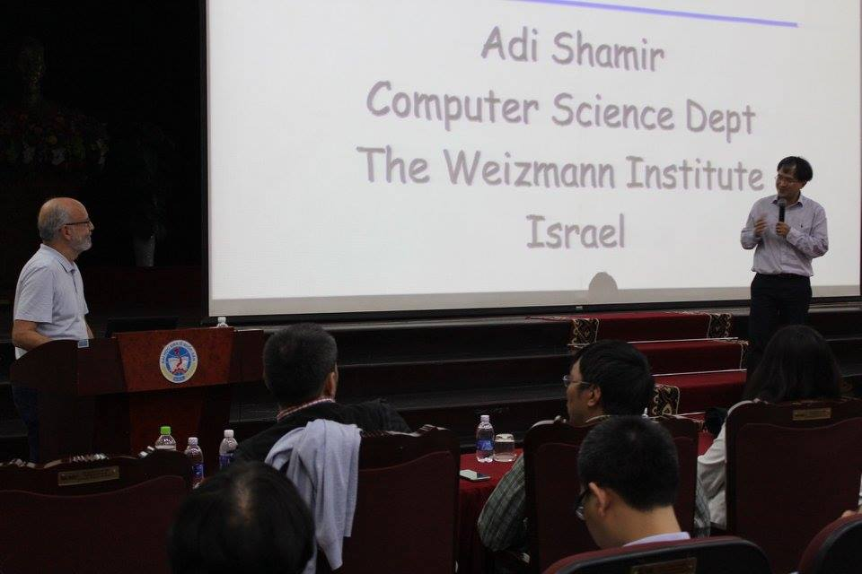
Neal Koblitz tại Viện Toán học – Bất cập trong mật mã và câu chuyện mật mã Việt Minh
Neal Koblitz là một người rất đặc biệt trong giới mật mã, với những ý kiến sâu sắc và đôi khi cực đoan. Ông là cụ tổ của mật mã đường cong elliptic (cùng Victor Miller). Ông là một người bạn thân của Việt Nam.
Được sự đồng ý của Neal Koblitz, tôi xin giới thiệu slides trình bày của ông tại Viện Toán học vừa qua. Bài trình bày không mang tính kỹ thuật mà nói về những bất cập trong việc sử dụng mật mã.
Những chỉ trích sâu sắc về chính sách mật mã
Trong bài trình bày, Koblitz thẳng thắn chỉ trích nhiều vấn đề nghiêm trọng:
- Chỉ trích chính phủ Mỹ đã đưa vào những backdoor và ép các công ty – ngay cả RSA – sử dụng các hàm mật mã có backdoor để lấy cắp thông tin người dùng.
- Chỉ trích sự yếu kém của chính phủ Mỹ trong việc bảo vệ thông tin của chính mình, để đến nỗi một cá nhân như Snowden có thể lấy được cả núi thông tin tuyệt mật.
- Chỉ trích sự yếu kém của tình báo Mỹ trong vụ 11/09 và sau đó lại lợi dụng tình thế làm cớ để ra "Patriot Act" – dễ dàng quản lý và truy nhập thông tin cá nhân, tổ chức.
Đây là những câu chuyện và cách nhìn đáng suy nghĩ từ một người đã sống trong lòng ngành mật mã nhiều thập kỷ.
Phát hiện thú vị: Mật mã của Việt Minh
Trong chuyến đi Việt Nam, ông cũng kể với tôi một câu chuyện thú vị – một phát hiện nho nhỏ của ông. Nó diễn ra khi ông đến thăm bảo tàng Bộ Công An. Những nhân viên ở đây đã cho ông xem bản mã của Việt Minh, sử dụng bởi A13, khi lập chiến công ngày 27 tháng 9 năm 1950, trong việc đốt cháy chiến hạm Amyot d'Inville của Pháp, và từ đó ngăn chặn một cuộc tấn công vào vùng giải phóng Thanh-Nghệ-Tĩnh.
Sau một hồi nghiên cứu, ông đã phát hiện rằng mã mà Việt Minh sử dụng là loại mã Vigenère đơn giản. Điều không tưởng là khoá giải mã (một chuỗi ngẫu nhiên) được ghi ngay ở phần đầu của bản mã! Điều không tưởng hơn là tình báo Pháp bất lực trong việc giải mã đơn giản như thế.
(Có lẽ đơn giản là phía Pháp không nhận được ngay cả bản mã chăng?)
Tôi tìm trên mạng thấy có nói đến chiến công này nhưng không nói gì tới việc dùng mã, thay vào đó là kết cục khủng khiếp với cô Nguyễn Thị Lợi.
Mật mã Việt Nam thời chống Mỹ
Việc sử dụng mật mã ở Việt Nam đã được chú ý từ khá sớm. Trong bản bạch hoá của NSA, ngay từ đầu những năm 1960 phía Việt Minh đã sử dụng mật mã, và điều thú vị là khi Mỹ tấn công được hệ mã của Việt Minh thì Việt Minh đã lại thay đổi sang hệ khác! Điều này được ghi trong cuốn Spartans in Darkness (Chapter 3, page 105; page 22 của chapter 3).
Rõ ràng những câu chuyện về việc sử dụng mật mã ở Việt Nam từ thời chống Pháp, chống Mỹ là những câu chuyện thú vị. Nếu bạn có thông tin nào hay, mong chia sẻ thêm.
Hẹn gặp lại tại Asiacrypt 2016
Ông Koblitz năm sau sẽ sang Việt Nam dự Asiacrypt 2016 và tuần trước hội nghị sẽ tham gia giảng bài tại Trường Thu Mật mã – nơi chuẩn bị kiến thức cho các bạn tham gia để việc tham gia hội nghị có hiệu quả. Khi đó ông sẽ nói sâu hơn về kỹ thuật, về đường cong elliptic và lý thuyết số trong mật mã.
Đây sẽ là một dịp hiếm có để trao đổi trực tiếp với người đã đặt nền móng cho mật mã đường cong elliptic – nền tảng của phần lớn các hệ thống mật mã hiện đại ngày nay.
Phỏng vấn Mélissa Rossi – Chiến lược Mật mã Hậu lượng tử của Pháp và Châu Âu
Cách đây ít lâu tôi có dịp phỏng vấn Mélissa Rossi, người khi đó vừa rời ANSSI được 1 tuần – cơ quan định hình chính sách bảo mật của Pháp và phê chuẩn các giải pháp, một dạng như Ban Cơ Yếu nhưng rất rộng và mạnh – để phát triển nghiên cứu riêng ở CryptoExpert. Trong 5 năm ở ANSSI, Mélissa Rossi đóng vai trò lớn trong nghiên cứu mật mã hậu lượng tử và thường đóng vai trò như phát ngôn viên của ANSSI trong việc trình bày chính sách hậu lượng tử của Pháp và châu Âu. Do vậy cô là người đủ tư cách để nói về chính sách mật mã hậu lượng tử của Pháp và Châu Âu.
Sự khác biệt giữa Châu Âu và Mỹ
Chính sách của châu Âu và Mỹ có khác biệt về mật mã hậu lượng tử. Mỹ chuyển dịch sang mật mã hậu lượng tử, các sơ đồ cổ điển sẽ biến mất không được sử dụng trong tầm 10 năm nữa. Châu Âu mà đại diện là Pháp khuyến cáo sử dụng phương án Hybridation "lai ghép" đồng thời giữa một sơ đồ cổ điển và một sơ đồ hậu lượng tử của NIST. Lý do là các sơ đồ cổ điển tuy không an toàn trước máy tính lượng tử nhưng đã được nghiên cứu rất sâu sắc nhiều chục năm nên độ an toàn trước máy tính thông thường là không thể bàn cãi. Trong khi chưa thấy mặt mũi cụ thể (scalable) của máy lượng tử thì không có lý do gì bỏ đi các sơ đồ này. Ngược lại các sơ đồ hậu lượng tử được lựa chọn bởi NIST chưa được nghiên cứu đủ lâu, đủ sâu để đủ độ tin tưởng, nó có thể khó bị phá hơn trên những máy lượng tử (chưa có) nhưng cũng rất có thể dễ bị phá hơn trên máy tính thông thường hiện tại.
Một câu hỏi tôi và cộng đồng thắc mắc là khi hai chính sách khác nhau thì kết nối truyền thông giữa hai bên là thế nào. Câu trả lời của Mélissa Rossi, người trực tiếp đàm phán giữa Châu Âu và Mỹ, đã làm rõ điều đó:
"Điều thú vị là trong mật mã, còn có một khía cạnh đàm phán quốc tế, đặc biệt nếu làm việc trong các cơ quan nhà nước. Vì vậy, chúng tôi phải đối mặt với những bất đồng quan điểm với các quốc gia khác, điều này vừa rất thú vị, rất kích thích, nhưng cũng có chút bực bội, vì ai cũng thường tin rằng quan điểm của mình đúng. […] Các công ty, nếu muốn bán sản phẩm ở cả châu Âu và Mỹ, nếu không muốn tự đóng cửa một thị trường, thì bắt buộc phải triển khai giải pháp lai ghép. Điều này không hề mâu thuẫn, và chúng tôi đã có giải pháp này."
Cuộc phỏng vấn đầy đủ
Phỏng vấn giữa Phan Dương Hiệu (Télécom Paris, IPP) và Mélissa Rossi (cựu thành viên ANSSI).
Phan Dương Hiệu: Xin chào Mélissa, xin chào, thật sự rất vui khi được đón tiếp bạn hôm nay, nhất là bạn từng là sinh viên của Télécom. Vậy làm thế nào để giải thích việc các doanh nghiệp như Thales hoặc các cơ quan nhà nước như ANSSI lại quan tâm nhiều đến mật mã hậu lượng tử, trong khi máy tính lượng tử, chúng ta vẫn chưa thấy.
Mélissa Rossi: Máy tính lượng tử chưa tồn tại – nhưng chúng có thể đe dọa các hệ thống ngay từ bây giờ do các cuộc tấn công hồi tố. Bởi vì nếu dữ liệu của chúng ta được lưu trữ lại hoặc có thể truy cập được vì một lý do nào đó, nếu vài năm nữa, không biết, 10, 20, 30 năm sau mà có một máy tính lượng tử xuất hiện, thì người ta có thể tìm ra ngược lại những gì đã được nói hôm nay. Có những trường hợp rất quan trọng, ví dụ với các cơ quan nhà nước, nơi muốn dữ liệu vẫn phải giữ bí mật hơn 30 năm, và trong trường hợp đó, vì không có gì đảm bảo rằng một chiếc máy tính lượng tử sẽ không bao giờ xuất hiện, nên bắt buộc chúng ta phải tự bảo vệ từ trước.
Phan Dương Hiệu: Đó là nhiệm vụ của bạn ở ANSSI, bạn có thể nói với chúng tôi xem nó đã mang lại điều gì cho bạn không?
Mélissa Rossi: Vâng, nhiệm vụ ở ANSSI là một trải nghiệm rất tuyệt vời, bởi vì đây là một môi trường hơi đặc biệt, với những nhà nghiên cứu rất xuất sắc trong lĩnh vực của họ, và tất cả gắn với các ứng dụng thú vị như bảo mật hệ thống của Nhà nước, và thực hiện phân tích an ninh trên những thứ mà bình thường không có nhiều cơ hội được thấy. Và sau đó, tôi cũng có những nhiệm vụ song song, đó là hoặc hỗ trợ bảo mật các hệ thống có mức độ an ninh rất cao từ trước, bằng cách xem xét trên giấy các thuật toán được dự định triển khai; hoặc đánh giá các sản phẩm đã tồn tại, và cố gắng xem liệu có thể xác nhận rằng chúng đạt tiêu chuẩn tiên tiến hay không. Vì vậy, tôi đã có rất nhiều nhiệm vụ khác nhau. Và ngoài ra còn có một nhiệm vụ về đào tạo và giảng dạy, điều đó thực sự khiến tôi rất thích.
Phan Dương Hiệu: Về mật mã hậu lượng tử, bạn có thể chia sẻ một chút về quan điểm của ANSSI không?
Mélissa Rossi: Khi tôi đến ANSSI, lĩnh vực này vẫn chưa thực sự phát triển nhiều, vì vậy đó là nhiệm vụ của tôi. Tôi đã làm rất nhiều buổi thuyết trình nội bộ và bên ngoài, để xuất bản các báo cáo khoa học về những vấn đề như máy tính lượng tử là gì, mối đe dọa ra sao và chúng tôi khuyến nghị gì. Đặc biệt là nguyên tắc "lai ghép", tức là kết hợp mật mã hiện nay – loại mật mã an toàn trước máy tính cổ điển nhưng không an toàn trước máy tính lượng tử – với mật mã hậu lượng tử. Đây là một dạng mật mã mới, nhưng nó có thể có những lỗ hổng, vì nó mới và trong mật mã, chúng tôi không thích các thuật toán quá mới, vì điều đó có nghĩa là chưa nhiều người nghiên cứu chúng. Vì vậy, ý tưởng là kết hợp cả hai. Đó là điều mà tôi đã cố gắng quảng bá, và cũng là lập trường của ANSSI: khuyến khích hướng đi "lai ghép".
Phan Dương Hiệu: Pháp và Châu Âu khuyến khích "lai ghép", trong khi đó, các quốc gia khác như Mỹ hay Úc lại khuyến nghị giải pháp hoàn toàn hậu lượng tử. Làm sao bạn có thể giải thích sự khác biệt này? Và liệu nó có gây ra vấn đề cho truyền thông trong tương lai không, nếu mỗi quốc gia dùng một loại giao thức mật mã khác nhau?
Mélissa Rossi: Điều thú vị là trong mật mã, còn có một khía cạnh đàm phán quốc tế, đặc biệt nếu làm việc trong các cơ quan nhà nước. Vì vậy, chúng tôi phải đối mặt với những bất đồng quan điểm với các quốc gia khác, điều này vừa rất thú vị, rất kích thích, nhưng cũng có chút bực bội, vì ai cũng thường tin rằng quan điểm của mình đúng. Do đó, chúng tôi đã làm việc với các đồng nghiệp – những nhà mật mã giữ vị trí giống tôi – ở các nước châu Âu, như Đức, Thụy Điển, Tây Ban Nha, v.v. Chúng tôi đã tập hợp lại với nhau, cố gắng thống nhất giữa chúng tôi trước. Khi đã đồng ý với nhau, chúng tôi cố gắng tạo ảnh hưởng và thương lượng với phía Mỹ. Quan điểm của Mỹ không phải là không tương thích. Dù ý tưởng của Mỹ là tin tưởng vào mật mã hậu lượng tử, mà không thêm lớp bảo mật bổ sung, nhưng cuối cùng, chúng tôi đã phần nào thương lượng thành công, vì họ đã nói rằng họ không ngại việc chúng tôi áp dụng bảo mật lai ghép, và họ cũng không thấy phiền khi mua các sản phẩm có tính năng đó. Vì vậy, các công ty, nếu muốn bán sản phẩm ở cả châu Âu và Mỹ, nếu không muốn tự đóng cửa một thị trường, thì bắt buộc phải triển khai giải pháp lai ghép. Điều này không hề mâu thuẫn, và chúng tôi đã có giải pháp này. Tôi không mất hy vọng rằng quan điểm của Mỹ sẽ trở nên thận trọng hơn về bảo mật (tức là dùng biện pháp lai ghép chứ không chỉ thuần hậu lượng tử).
Phan Dương Hiệu: Có rủi ro rằng chúng ta sẽ phải theo các tiêu chuẩn được NIST – tổ chức Mỹ – chọn ra. Theo bạn, châu Âu và Pháp có nên xem xét xây dựng các tiêu chuẩn riêng không?
Mélissa Rossi: Đó là một câu hỏi hay, và là một vấn đề khó: làm thế nào để xác định vị trí của chúng ta trên trường quốc tế trong việc tiêu chuẩn hóa mật mã? Cho đến nay, vẫn luôn là NIST – một cơ quan tiêu chuẩn hóa của Mỹ – khởi xướng các chiến dịch chọn thuật toán mật mã. Ở Pháp có một vài sáng kiến, nhưng chưa có một lựa chọn thay thế thực sự. Liệu đó có phải điều tệ không? Tôi không chắc. Ta cũng có thể hưởng lợi từ tầm ảnh hưởng quốc tế này. Hơn nữa, chiến dịch tiêu chuẩn hóa nhìn chung lành mạnh, bởi vì đây là các nhà mật mã từ khắp nơi trên thế giới nộp thuật toán dự thi. Các đội chiến thắng trong các chiến dịch trước – như AES và SHA-3 – là đội từ Bỉ. Việc mở rộng ra toàn cầu thúc đẩy cộng đồng quốc tế, và các chiến dịch phân tích mật mã trở nên rất thú vị. Có rất nhiều điều diễn ra, đây là một thế giới đang sôi động.
Tôi chỉ có thể khuyến khích sinh viên đến với lĩnh vực này, vì đúng là nó rất kỹ thuật, nhưng khi đã tham gia, nó cực kỳ kích thích, bởi luôn có nhiều kiểu tấn công mới và các biện pháp đối phó. Chúng tôi còn có những thử thách, các cuộc thi tấn công và phòng thủ, và điều đó rất thú vị.
Phan Dương Hiệu: Cảm ơn Mélissa rất nhiều! Bạn luôn được chào đón tại Télécom để chia sẻ với sinh viên, và hy vọng sẽ sớm gặp lại bạn.
Alfred Menezes tại VIASM – MOV attack và Pairing-based Cryptography
Alfred Menezes là một cao thủ võ lâm mang tính mở đường của ngành Mật mã. Các bạn chắc đều biết cuốn sách Handbook of Applied Cryptography ông viết cùng van Oorschot và Vanstone.
MOV attack – phá để xây dựng
Nhưng công trình độc đáo, mang tính mở đường nhất của ông có lẽ là MOV attack (lấy theo tên ông, Menezes, cùng Okamoto và Vanstone). Những năm 90, mật mã đường cong elliptic được xem là nền tảng an toàn vì bài toán logarit rời rạc trên nhóm các điểm của đường cong elliptic được coi là khó hơn rất nhiều so với trên nhóm con của trường hữu hạn. MOV attack nhúng đường cong elliptic vào trường hữu hạn thông qua ánh xạ song tuyến tính (Weil pairing), và do đó chuyển bài toán logarit rời rạc trên nhóm các điểm của đường cong elliptic sang bài toán logarit rời rạc trong trường hữu hạn khi bậc nhúng (embedding degree) thấp.
Tấn công này không ngờ lại mang tính xây dựng rất lớn, khi sau đó cộng đồng phát hiện ra rằng ánh xạ song tuyến tính của các phép ghép cặp như Weil pairing hay Tate pairing cho phép "làm phép nhân trên số mũ mà không cần biết trực tiếp các phần tử", tức là có thể tính toán trên dữ liệu đã mã hóa. Từ đó mở đường cho cả một nhánh mật mã dựa trên pairing gọi là Pairing-based Cryptography và thực hiện được rất nhiều sơ đồ mật mã mới.
Đây cũng là một ví dụ cho thấy trong khoa học (và cuộc sống), phá (phản biện) chính là để xây dựng.
Chuỗi bài giảng tại VIASM
Các bạn hãy đăng ký chuỗi bài giảng của ông ở VIASM (trong hoạt động của ACR Lab) để hiểu được những điều tinh tế trong sự phát triển của mật mã, và liệu mật mã hậu lượng tử dựa trên lattice có thực sự sẽ đảm bảo mức an toàn cao nhất.
ACR Lab cũng đã có trang web: acr-lab.github.io
Mật mã – Học máy và chuỗi bài giảng về Lattice Cryptography của Phong Nguyễn tại VIASM
(VIASM, Hà Nội – 12/2018)
Phong Nguyễn (Nguyễn Phong Quang) là một trong những nhà mật mã người Việt xuất sắc nhất trên trường quốc tế, hiện là giáo sư tại École normale supérieure (Paris). Ông là chuyên gia hàng đầu thế giới về Lattice Cryptography – mật mã dựa trên lý thuyết mạng lưới điểm, nền tảng của mật mã hậu lượng tử.
Mật mã và Học máy – hai ngành tưởng xa nhưng lại gần
Một trong những điều thú vị nhất trong mật mã hiện đại là sự kết nối sâu sắc với học máy. Bài toán trung tâm của Lattice Cryptography – Learning with Errors (LWE), do Oded Regev đề xuất năm 2005 – về bản chất là một bài toán học máy: phân loại dữ liệu nhiễu tuyến tính. Tên gọi "Learning" không phải ngẫu nhiên; đây là bài toán học từ dữ liệu nhưng với nhiễu được thiết kế để làm cho việc học trở nên không thể giải được trong thời gian đa thức.
Chính sự "khó học" này là nền tảng bảo mật. Kẻ tấn công không thể "học" được khóa bí mật từ các bản mã quan sát được – và đây là lý do lattice cryptography được kỳ vọng an toàn trước cả máy tính lượng tử.
Chuỗi bài giảng tại VIASM
Chuỗi bài giảng của Phong Nguyễn tại VIASM tháng 12/2018 đi từ những nền tảng toán học của lý thuyết mạng lưới điểm – thuật toán rút gọn mạng lưới LLL, các thuật toán tìm vector ngắn nhất (SVP) – đến các ứng dụng mật mã hiện đại nhất. Đặc biệt, ông là một trong những tác giả chính của cuốn sách The LLL Algorithm (Springer, 2010), tập hợp những bước tiến quan trọng nhất của lý thuyết này.
Những ai theo dõi sự phát triển của mật mã hậu lượng tử sẽ nhận ra rằng hầu hết các ứng dụng trong chuẩn NIST PQC (CRYSTALS-Kyber, CRYSTALS-Dilithium, FALCON) đều dựa trực tiếp trên các kết quả mà Phong Nguyễn và các cộng sự đã xây dựng.
Hiểu được lattice cryptography là hiểu được nền tảng của mật mã tương lai – trong thời đại mà máy tính lượng tử không còn chỉ là giả thuyết.
Mật mã chống độc tài và bài báo đầu tiên của Việt Nam tại EUROCRYPT
Ban Cơ Yếu (Chính phủ) · Google (Công nghiệp) · Đại học Châu Âu (Hàn lâm) – Ba châu lục, một kết quả
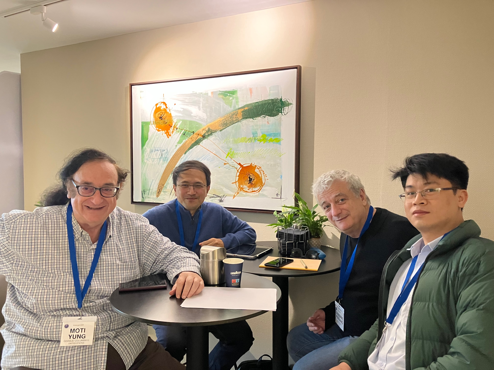
Một nhóm nghiên cứu thú vị
Chính phủ: Đỗ Xuân Thành – Ban Cơ Yếu (Việt Nam)
Công nghiệp: Moti Yung – Google R&D (Mỹ)
Hàn lâm: Giuseppe Persiano (Đại học Salerno, Italia) · Phan Dương Hiệu (Pháp)
Hội nghị: EUROCRYPT – flagship của ngành Mật mã thế giới
Lần đầu tiên có sự kết hợp nghiên cứu này: các thành viên đến từ 3 đơn vị (Chính phủ – Công nghiệp – Hàn lâm), từ 3 châu lục. Bạn Đỗ Xuân Thành, cựu nghiên cứu sinh của tôi và anh Lê Minh Hà nay làm trong Ban Cơ Yếu; Moti Yung — bố già đứng đầu mảng Crypto của Google; Giuseppe Persiano — bố già mật mã của Italia; và tôi.
Cả nhóm phối hợp phát triển tiếp Anamorphic Encryption trong việc chống độc tài. Và bài báo vừa được nhận ở EUROCRYPT — hội nghị Flagship của cả ngành Mật mã. Đây là lần đầu tiên có người nghiên cứu từ Việt Nam có bài được nhận ở EUROCRYPT/CRYPTO.
Ý nghĩa đặc biệt
Tôi đặc biệt vui mừng vì kết quả này, nó nằm trong suy nghĩ xuyên suốt của tôi: cổ vũ Ban Cơ Yếu trong việc "mở" — không chỉ thực hiện nghiên cứu đóng như xưa nữa — giao lưu hợp tác và hướng tới xuất bản các nghiên cứu ở tầm cao nhất của thế giới. Chính qua sự hoà đồng này mà sẽ có những chính sách và những chuẩn bảo mật phù hợp với những hướng đi tiến bộ của thế giới. Đây có thể là một bước đi nhỏ nhưng nó có ý nghĩa lớn với tôi.
Tôi cũng rất vui khi định hướng "nghiên cứu khoa học không có vùng cấm về chính trị" được lắng nghe. Chủ đề bài báo khá nhạy cảm và việc có bài báo từ Việt Nam trong chủ đề này là một sự rất tích cực.
Nội dung bài báo
Độc tài (công nghệ, chính phủ) có thể ép lấy khoá người dùng, có thể bắt buộc công dân gửi đi những tuyên bố không đúng ý. Anamorphic Encryption giúp người dùng/công dân vừa phải tuân thủ sự ép buộc đó vừa đồng thời tạo một kênh riêng ẩn (ngay cả với độc tài), để chẳng hạn có thể nhắn rằng "tôi đang bị ép buộc".
Tuy nhiên kênh riêng này có thể bị chặn hoặc người nhận không kết nối. Bài báo này đề xuất mở rộng: trên cùng một bản mã bị ép gửi có thể tạo đồng thời nhiều kênh ẩn cho k người nhận ẩn, chỉ cần 1 trong số k kênh không bị chặn là được. Và vì các kênh được đảm bảo ẩn danh (Anonymous channels) nên nhà độc tài chỉ có thể chặn hết tất cả các kênh — điều không thực tế — mới ngăn chặn được việc trao đổi thông tin.
Nền tảng kỹ thuật
Về mặt kỹ thuật, cách xây dựng dựa trên Multi-channel Broadcast Encryption (MCFE) — do Trịnh Viết Cường, Phan Dương Hiệu và David Pointcheval đưa ra năm 2012 tại AsiaCCS (và AsiaCCS tháng 8 tới đây sẽ được tổ chức tại Hà Nội!) — và dựa trên giả thiết k-LWE do Phan Dương Hiệu cùng Damien Stehlé, San Ling và Ron Steinfeld đưa ra tại CRYPTO 2014.
Từ lúc Anamorphic Encryption được đưa ra khi tôi hợp tác với Moti Yung và Giuseppe Persiano, luôn luôn có bài phát triển tiếp khái niệm này tại tất cả các flagship conferences của IACR, của nhiều nhóm khắp nơi! Bạn nào quan tâm đọc lại bài viết về Anamorphic Encryption khi nó mới ra đời: bài viết gốc 2022.
Trường hè Mật Mã IACR-VIASM 2022
(VIASM, Hà Nội – 24/8–31/8/2022)
Thời gian: 24/8–31/8/2022
Địa điểm: VIASM – Viện Nghiên cứu cao cấp về Toán, Hà Nội
Bảo trợ: IACR – Hội Mật mã thế giới (International Association for Cryptologic Research)
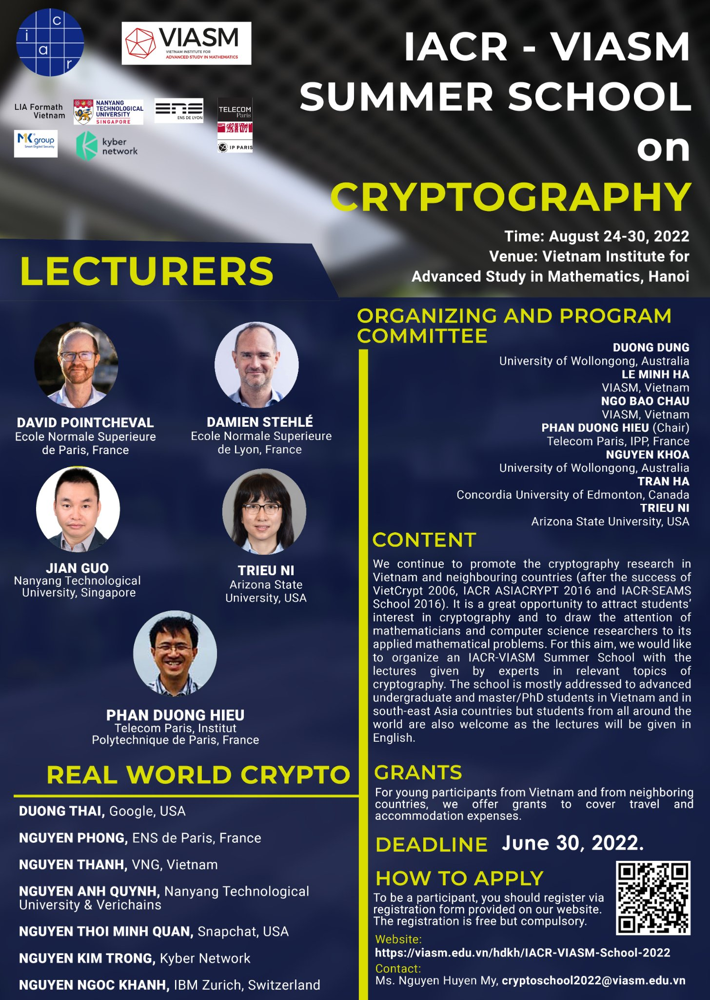
Trường hè được bảo trợ bởi hội mật mã thế giới (IACR) và sẽ có những bài giảng mang tính chất cung cấp nền tảng lý thuyết vững để bạn nào muốn học/làm về mật mã sẽ có một cách nhìn sâu rộng. Trường hè không cung cấp những kiến thức mang tính trào lưu như công nghệ blockchain. Khi có nền tảng vững chắc, các bạn có thể tăng xác suất thành công trong mọi lựa chọn.
Ba chuỗi bài giảng chuyên sâu
- Damien Stehlé – Nền tảng lý thuyết Mật mã hậu Lượng Tử (9 giờ) Trưởng khoa Tin học ENS Lyon · Médaille de bronze CNRS (nhà nghiên cứu trẻ xuất sắc nhất nước Pháp trong Tin học) · Tác giả chính của CRYSTALS-Kyber (mã hoá) và CRYSTALS-Dilithium (chữ ký số) – hai trong số bốn sơ đồ vừa được NIST chọn làm chuẩn mật mã hậu lượng tử. 10, 20 năm sau, các bạn có thể sẽ quen với những sơ đồ này như AES, RSA.
- Jian Guo – Mật mã đối xứng (6 giờ) Trưởng nhóm phá mã, Đại học NTU · catf.crypto.sg
- David Pointcheval, Ni Triệu, Phan Dương Hiệu – Các sơ đồ mật mã nâng cao (6 giờ) David Pointcheval: Trưởng khoa Tin học ENS Paris · Médaille d'argent CNRS 2021 (nhà nghiên cứu xuất sắc nhất nước Pháp trong Tin học). Ni Triệu: chuyên gia trẻ về MPC (Multi-party computation), Mỹ. Nội dung: nền tảng lý thuyết cho các sơ đồ phân tán, bảo vệ Privacy trong bối cảnh xử lý dữ liệu lớn.
Việc mời những giảng viên đầu ngành tới trình bày không dễ – họ sẽ giảng kỹ càng để mang tới cách hiểu sâu sắc nhất. Do đó chúng tôi yêu cầu các học viên cam kết theo học đầy đủ, và dù hạn đăng ký còn đến đầu tháng 8 nhưng đã có trên 150 bạn đăng ký nên chỉ có thể lựa chọn những bạn phù hợp nhất.
Ngày Real-World Crypto
Ngoài các bài giảng, sẽ có một ngày Real-World Crypto mang tới những nghiên cứu có tác động trực tiếp tới thế giới thực – có thể là bước chuẩn bị để tổ chức hội nghị Real-World Crypto của IACR trong một ngày không xa. Tham gia trình bày:
- Phong Nguyễn – từng đạt Cor Baayen Award dành cho tài năng trẻ xuất sắc nhất châu Âu (ERCIM)
- Thái Dương – hacker mũ cối Google, cầm trịch tổ chức ngày RWC
- Minh Quân – tác giả 0&00 attack
- Nguyễn Anh Quỳnh và Thành Nguyễn – VNG, Verichains
- Trọng Nguyễn – Kyber
- Nguyễn Ngọc Khánh – IBM Zurich
Thái Dương sẽ cầm trịch trong việc tổ chức ngày Real-World Crypto và sẽ có thông báo riêng để các bạn không tham gia toàn bộ trường hè cũng có thể tham gia ngày này.
Giao lưu quốc tế
Trường hè còn là nơi giao lưu giữa học viên xuất sắc quốc tế với các bạn trẻ Việt Nam. Đặc biệt vui mừng khi có hơn 10 nghiên cứu sinh đang làm tại những lab tốt nhất của Pháp – ENS (trên 5 bạn), IPP, Paris 7 – sẽ tới tham gia. ENS cũng là nơi sẽ đón bạn Ngô Quý Đăng (vừa đạt 42/42 kỳ thi Toán quốc tế) sang học (danh sách tân sinh viên ENS 2022).
Hy vọng không khí trường hè sẽ thật sôi động với những trao đổi thú vị trong và ngoài giảng đường! Hẹn sớm gặp các bạn!
VietCrypt 2006 – Hội nghị Mật mã quốc tế đầu tiên tại Việt Nam
(Giới thiệu và chương trình hội nghị – ghi chép từ Diễn đàn Toán học)
Sắp tới, một Hội nghị quốc tế về Mật mã sẽ được tổ chức tại Hà Nội. Hy vọng sẽ có nhiều bạn quan tâm đến tham dự (sinh viên có thể tham dự miễn phí tất cả các hoạt động). Nếu số lượng đại biểu ở Việt Nam tham dự đông, Hội nghị sẽ dành thêm 1 ngày trước khai mạc cho Tutorial/Survey. Do vậy, nếu các bạn có ý định tham dự hãy đăng ký sớm để ban tổ chức có thể quyết định có tổ chức Tutorial/Survey hay không.
Thông tin hội nghị
Thời gian: 25 đến 28/09/2006
Địa điểm: Khách sạn Melia – Hà Nội
General Chair: Phan Đình Diệu (Trường Đại học Quốc gia Hà Nội)
Program Chair: Nguyễn Phong Quang (École normale supérieure – Trường Sư Phạm Paris)
Organizers: Nguyễn Quốc Khánh (FPT, Chair), Phan Dương Hiệu (ENS, France), Nguyễn Duy Lân (CSIRO ICT Centre, Australia)
Đơn vị tổ chức: FPT với sự cộng tác khoa học của Viện Toán Học
Proceedings: Lecture Notes in Computer Science, Springer
Phát biểu mời
Hai bài phát biểu mời của hội nghị sẽ do hai nhà khoa học đứng đầu hai nền khoa học Mật mã mạnh của thế giới thực hiện:
Jacques Stern (Pháp, trưởng khoa Tin học của Trường Sư Phạm Paris) – bài phát biểu về Cryptography in Financial Transactions. Đây là một trong những người tạo nền móng cho sự phát triển mạnh mẽ của ngành Mật mã tại Pháp.
Tatsuaki Okamoto (Giáo sư Đại học Kyoto và NTT, Nhật Bản) – bài phát biểu về On Pairing-Based Cryptosystems. Ông là một trong những người tạo nền móng cho nền mật mã Nhật Bản, và cũng đồng thời có bài báo được chấp nhận tại chính hội nghị này (xem thêm phần danh sách bài báo).
Ngoài ra, Ban Cơ Yếu có thể sẽ trình bày về Mật mã tại Việt Nam từ trong chiến tranh đến hiện tại.
Ban chương trình và quy mô
Hội nghị tập hợp được một ban chương trình với nhiều nhà khoa học uy tín và đã thu hút được 80 bài báo gửi tới. Ban chương trình đã chọn ra 24 bài để trình bày tại hội nghị. Đặc biệt, trong ban chương trình có sự tham gia của:
- Neal Koblitz – một trong 2 người (cùng Victor Miller) đưa các nghiên cứu về đường cong Elliptic vào Mật mã
- Bart Preneel – chủ tịch chương trình Mật mã châu Âu
- Pascal Paillier – đứng đầu nhóm bảo mật của Gemplus (công ty thẻ điện tử lớn nhất thế giới)
- Hà Huy Khoái – Viện trưởng Viện Toán học Việt Nam
- Xiaoyun Wang – người năm 2005 làm náo động giới mật mã với các công trình tấn công các hàm băm SHA
Một số bài nổi bật
Tatsuaki Okamoto không chỉ là khách mời của hội nghị, ông cùng 2 đồng nghiệp sẽ trình bày về Universally Composable Identity-Based Encryption. Hướng nghiên cứu về mật mã dựa trên danh tính (không cần sử dụng PKI – hạ tầng cơ sở khóa công khai) đang rất được quan tâm.
Serge Vaudenay (trưởng nhóm nghiên cứu mật mã tại Đại học bách khoa Lausanne – đại học mạnh nhất của Thụy Sỹ về mật mã; nổi tiếng nhờ đã phá thành công hệ mã Chor-Rivest đứng vững suốt hơn 10 năm) sẽ cùng đồng tác giả trình bày nghiên cứu về Undeniable Signatures, một hệ chữ ký điện tử có đặc tính khác với hệ chữ ký thông thường: không phải ai cũng kiểm thử được chữ ký mà cần đến sự hợp tác của bản thân người ký.
Phillip Rogaway (một trong hai đồng sáng lập của hệ mã nổi tiếng OAEP đang được sử dụng như chuẩn của nhiều hệ mã) sẽ trình bày về Formalizing Human Ignorance. Các hàm băm (như SHA) không sử dụng chìa khóa và do đó không thể giả thuyết rằng không tồn tại thuật toán hiệu quả tìm đụng độ (collision). Rogaway sẽ trình bày cách hình thức hóa "sự không biết" đó của con người.
Arjen K. Lenstra (chữ L đầu tiên trong viết tắt của thuật toán LLL nổi tiếng trong algebraic number theory) cùng 2 đồng nghiệp sẽ trình bày các nghiên cứu về hàm băm VSH (Very Smooth Hash) dựa trên độ khó của bài toán logarít rời rạc.
David Pointcheval (trưởng nhóm mật mã tại trường Sư phạm Paris) cùng học trò Cécile Delerablée sẽ trình bày một nghiên cứu về Group Signature – chữ ký nhóm, trong đó một thành viên có thể ký với danh nghĩa nhóm mà không ai biết chính xác đó là ai.
Jacques Patarin (trưởng nhóm mật mã tại đại học Versailles, nhóm mật mã mạnh thứ hai tại Pháp sau trường Sư phạm Paris) nổi tiếng về những nghiên cứu về các hệ mật mã dựa trên hàm nhiều biến, sẽ trình bày về Probabilistic Multivariate Cryptography.
Các tác giả Việt Nam
Hội nghị lần này có 3 bài được nhận có sự tham gia của các tác giả Việt Nam:
- Nguyễn Duy Lân – Trung tâm nghiên cứu CSIRO ICT Centre, Úc
Efficient Dynamic k-Times Anonymous Authentication - Phan Thị Lan Anh – Trường Đại học Tokyo, Nhật Bản
Reducing the Spread of Damage of Key Exposures in Key-Insulated Encryption - Phan Dương Hiệu – University College London, Anh
Traitor Tracing for Stateful Pirate Decoders with Constant Ciphertext Rate
Đăng ký tham dự
Một trong các mục đích chính của VietCrypt là tạo ra cơ hội trao đổi, gặp gỡ giữa những người quan tâm tới mật mã trong nước và giới nghiên cứu mật mã thế giới. Hội nghị rất mong nhận được sự tham gia từ các bạn sinh viên quan tâm tới môn khoa học trẻ trung này.
Lệ phí tham dự: $400 cho đại biểu nước ngoài, 200.000 đồng cho đại biểu trong nước (bao gồm tất cả các buổi ăn trưa tại khách sạn, các hoạt động ngoại khóa và 1 cuốn pre-proceedings). Sinh viên có thể tham dự miễn phí khi chứng tỏ sự liên quan với Mật mã qua Motivation letter và/hoặc CV.
Danh sách 24 bài báo được chấp nhận
Gửi tới ngày 25/08/2006. Proceedings xuất bản trong Lecture Notes in Computer Science (Springer).
-
Efficient Dynamic k-Times Anonymous Authentication
-
A New Signature Scheme Without Random Oracles from Bilinear Pairings
-
Probabilistic Multivariate Cryptography
-
An Ideal and Robust Threshold RSA
-
Side Channel Analysis of Practical Pairing Implementations: Which Path is More Secure?
-
Compressed Jacobian Coordinates for OEF
-
Short 2-Move Undeniable Signatures
-
Improved Fast Correlation Attack on the Shrinking and Self-Shrinking Generators
-
A Weak Key Class of XTEA for a Related-Key Rectangle Attack
-
Towards Provably Secure Group Key Agreement Building on Group Theory
-
Universally Composable Identity-Based Encryption
-
On the Definition of Anonymity for Ring Signatures
-
Factoring Square-free Composite Integer by Solving Multivariate Integer Polynomial Equations
-
Scalar Multiplication on Koblitz Curves Using Double Bases
-
How to Construct Sufficient Conditions for Hash Functions
-
Deniable Group Key Agreement
-
Escrowed Linkability of Ring Signatures and its Applications
-
Traitor Tracing for Stateful Pirate Decoders with Constant Ciphertext Rate
-
Formalizing Human Ignorance (Collision-Intractable Hashing without the Keys)
-
On the Internal Structure of ALPHA-MAC
-
Searching for Compact Algorithms: CGEN
-
Discrete Logarithm Variants of VSH
-
Dynamic Fully Anonymous Short Group Signatures
-
Reducing the Spread of Damage of Key Exposures in Key-Insulated Encryption
Các bài có nền hồng là bài có tác giả Việt Nam.
Chương trình hội nghị
Theo thông tin từ Ban tổ chức, có gần 70 người đăng ký tham gia, trong đó khoảng 30 người trong nước (có gần 10 bạn sinh viên – nghiên cứu sinh).
| Giờ | Nội dung |
|---|---|
| 14:00 – 18:00 | Surveys and Tutorials |
| Giờ | Nội dung |
|---|---|
| 8:00 – 9:00 | Đăng ký |
| 9:00 – 9:10 | Khai mạc |
| 9:10 – 10:10 | Invited Talk: Tatsuaki Okamoto – On Pairing-Based Cryptosystems |
| 10:30 – 12:30 | Session 1: Public Key Encryption · Universally Composable Identity-Based Encryption (Nishimaki, Manabe, Okamoto) · Reducing the Spread of Damage of Key Exposures in Key-Insulated Encryption (Hanaoka, Phan, Hanaoka, Matsuura, Imai) · An Ideal and Robust Threshold RSA (Ghodosi, Pieprzyk) |
| 14:00 – 16:00 | Session 2: Signature Schemes · Short 2-Move Undeniable Signatures (Monnerat, Vaudenay) · A New Signature Scheme Without Random Oracles from Bilinear Pairings (Zhang, Chen, Susilo, Mu) · On the Definition of Anonymity for Ring Signatures (Ohkubo, Abe) |
| 16:20 – 18:20 | Session 3: Group Signatures and Key Agreement · Dynamic Fully Anonymous Short Group Signatures (Delerablée, Pointcheval) · Escrowed Linkability of Ring Signatures and its Applications (Chow, Susilo, Yuen) · Towards Provably Secure Group Key Agreement Building on Group Theory (Bohli, Glas, Steinwandt) |
| Giờ | Nội dung |
|---|---|
| 9:00 – 10:00 | Invited Talk: Jacques Stern – Cryptography in Financial Transactions |
| 10:20 – 12:20 | Session 4: Traitor Tracing and Multivariate Cryptography · Traitor Tracing for Stateful Pirate Decoders with Constant Ciphertext Rate (Phan) · Efficient Dynamic k-Times Anonymous Authentication (Nguyen) · Probabilistic Multivariate Cryptography (Gouget, Patarin) |
| 14:00 – 16:00 | Session 5: Hash Functions · Discrete Logarithm Variants of VSH (Lenstra, Page, Stam) · How to Construct Sufficient Conditions for Hash Functions (Sasaki, Naito, Yajima, Shimoyama, Kunihiro, Ohta) · Formalizing Human Ignorance (Rogaway) |
| 16:20 – 18:20 | Session 6: Stream Ciphers and Block Ciphers · Improved Fast Correlation Attack on the Shrinking and Self-Shrinking Generators (Jeong et al.) · A Weak Key Class of XTEA for a Related-Key Rectangle Attack (Lee et al.) · On the Internal Structure of ALPHA-MAC (Huang, Seberry, Susilo) |
| 19:30 | Tiệc hội nghị (Conference Banquet) |
| Giờ | Nội dung |
|---|---|
| 9:00 – 10:00 | Invited Talk: Ban Cơ Yếu – Mật mã tại Việt Nam từ trong chiến tranh đến hiện tại |
| 10:20 – 12:20 | Session 7: Elliptic Curves and Pairing · Side Channel Analysis of Practical Pairing Implementations (Whelan, Scott) · Compressed Jacobian Coordinates for OEF (Hoshino, Kobayashi, Aoki) · Scalar Multiplication on Koblitz Curves Using Double Bases (Avanzi, Sica) |
| 14:00 – 16:00 | Session 8: Factoring and Compact Algorithms · Factoring Square-free Composite Integer by Solving Multivariate Integer Polynomial Equations (Santoso et al.) · Searching for Compact Algorithms: CGEN (Robshaw) · Deniable Group Key Agreement (Bohli, Steinwandt) |
| 16:00 – 16:15 | Bế mạc (Closing Remarks) |
Yvo Desmedt giảng bài tại VIASM

Yvo Desmedt - một cây cổ thụ của làng Mật Mã sẽ giảng bài ở Hà Nội, các bạn rất nên đến tham gia.
Năm 2003 mình lần đầu tiên sang Mỹ dự hội nghị CRYPTO. Khác với EUROCRYPT được tổ chức quanh các nước châu Âu, ASIACRYPT quanh các nước châu Á – châu Úc, thì CRYPTO luôn được tổ chức tại một nơi – Santa Barbara. Nhưng chính điều đó gây cho mình một sự xúc động, bữa tiệc ngoài trời vẫn luôn trên bãi cỏ này, và nơi đây 20 năm trước, vào những năm 80 bố mình cũng đến dự CRYPTO. Mình nhớ bố kể, trong phiên Rump session hồi đó, lần đầu tiên khái niệm zero-knowledge proof (chứng minh không để lộ tri thức) đã được đưa ra (ngày nay nó là khái niệm nền tảng được ứng dụng khắp mọi nơi, ngay cả blockchain cũng phải sử dụng nó để đảm bảo an toàn tính toán và dữ liệu). Mình khi đó nghĩ, có khi đang đứng cùng chỗ với bố 20 năm trước...
Trong khi đang mơ màng với những tưởng tượng về hình ảnh xưa trong bữa tiệc ngoài vườn, mình bỗng rất ấn tượng với một ông dáng người cao cao, đội mũ phớt rộng vành, vô cùng năng động, nói oang oang với khắp mọi người. Chắc chắn 20 năm trước ông ta cũng đã là một con người đặc biệt ở đây.
Ông ta là Yvo Desmedt – một cây cổ thụ của làng Mật Mã và một người có tính cách rất sôi nổi, ngẫu hứng.
Threshold Cryptography và sự nghiệp khoa học
Cũng vào những năm đầu 80, ông là một người chủ chốt khai sinh ra Mật mã ngưỡng (Threshold Cryptography), ở đó không phải 1 phía tập trung có toàn quyền giải mã mà phải có sự đồng thuận của ít nhất một nhóm đủ lớn. Mật mã ngưỡng hiện diện khắp nơi, trong các hệ thống phân tán. Chẳng hạn ta có thể làm mạng xã hội mà ở đó tài khoản cá nhân mạng xã hội chỉ có thể bị truy cập nếu như có sự đồng thuận của cả ba phía: nhà cung cấp dịch vụ, đại diện an ninh mạng và đại diện toà án, nếu thiếu 1 trong 3 là chịu. Điều đó giúp tránh sự lạm quyền.
Ông làm nghiên cứu về rất nhiều nhánh khác nhau, rất đa dạng từ rất lý thuyết đến rất thực tế. Các lĩnh vực nghiên cứu bao rất rộng từ đưa vào các khái niệm mới, phá mã, tham gia nghiên cứu về xây dựng các hệ thống bầu cử, và cả hacking chúng, đến những lĩnh vực thực tế như e-passport, an toàn mạng, virus...
Kỷ niệm với người thầy ngẫu hứng
Mình cũng có đôi kỷ niệm với tính ngẫu hứng của Yvo Desmedt. Hồi mình đang sắp làm xong PhD, bỗng ông thầy đưa điện thoại cho mình bảo: có Yvo Desmedt gọi điện muốn nói chuyện với cậu này. Cuộc nói chuyện diễn ra chóng vánh, đại ý là Yvo Desmedt rủ mình sang làm post-doc ở University College London (UCL). Mình cũng ngẫu hứng nhận lời ký luôn trong chớp mắt. Nhóm Crypto khi đó ở UCL toàn người có tính cách đặc biệt, có Helger Lipmaa và Nicolas Courtois, tuần nào cũng đi ăn tối với nhau và càng thấy sự đặc biệt của các nhân vật này. Mình làm việc cùng Yvo, Helger và cùng viết chung hai bài báo.
Một hôm ông ta gọi mình vào phòng, đột nhiên hỏi mình có muốn sau post-doc làm lecturer tại UCL không, thì đúng lúc mình nói: tôi hôm nay cũng muốn nói chuyện với ông vì muốn xin dừng hợp đồng về lại Paris đây. Thói quen của ông ta là hay thích chủ động đánh phủ đầu với những điều bất ngờ, thì lần này mình lại làm ông bất ngờ. (Không biết ông có cuộc gặp tương tự với Helger không mà sau đó Helger về lại Estonia, và cũng không biết có cuộc gặp với chính ông không mà ông sau đó cũng quay về Mỹ.) Sau một lúc tròn mắt, tưởng bực mình thì ông ta rủ mình đi uống bia thâu đêm trong những khu phố nhộn nhịp của London, kể rất nhiều chuyện lý thú, những bí sử của ngành, và tâm sự cả cuộc sống cá nhân Âu-Mỹ của ông. Khả năng kể chuyện của ông ta là rất đặc biệt, và những bài nói chuyện cũng như vậy.
IACR Fellow và bài giảng tại VIASM
Hội mật mã thế giới IACR từ năm 2004 mỗi năm trao IACR Fellow cho tầm 5 người có đóng góp lớn cho ngành, và năm 2010 ông được trao. Ông cũng là thành viên viện hàn lâm hoàng gia khoa học Bỉ, nơi ông sinh ra.
Ông sẽ có bài giảng đại chúng tại VIASM lúc 15h ngày 21/2 tới đây, các bạn rất nên đến tham gia, chắc chắn không khí sẽ rất thú vị đấy. Link đăng ký: https://bom.to/PuuySM